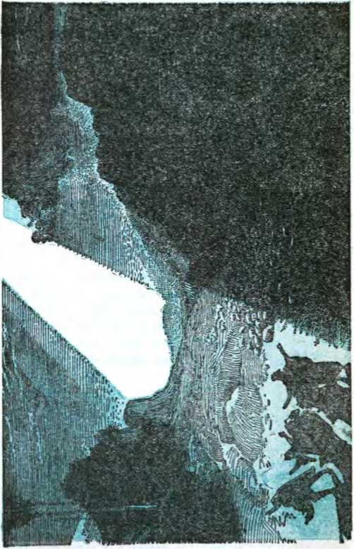
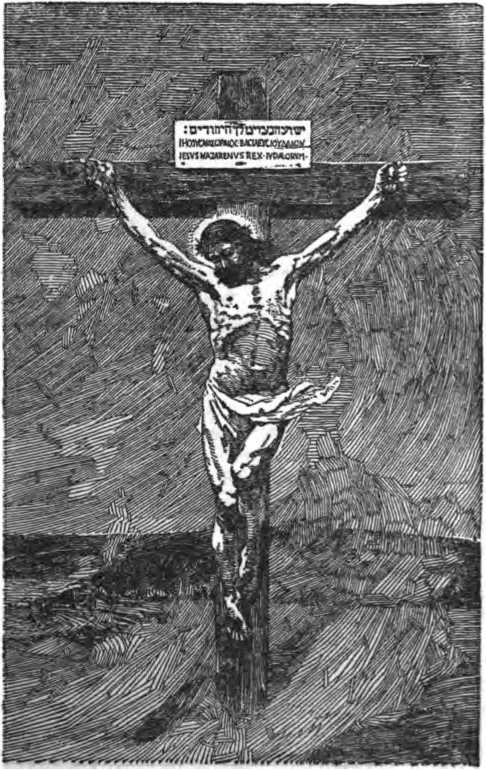
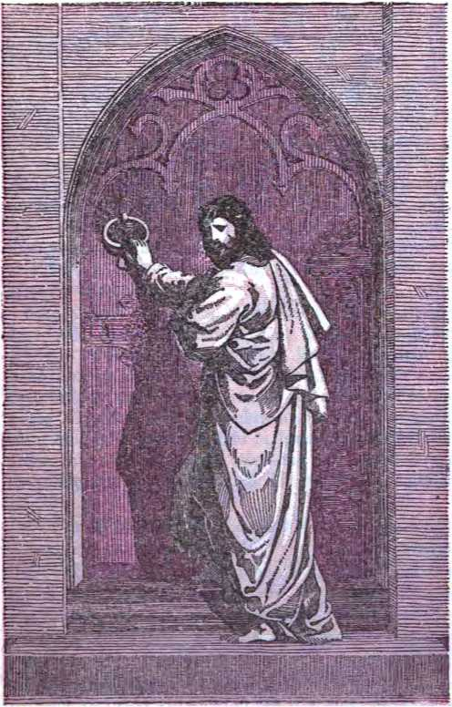
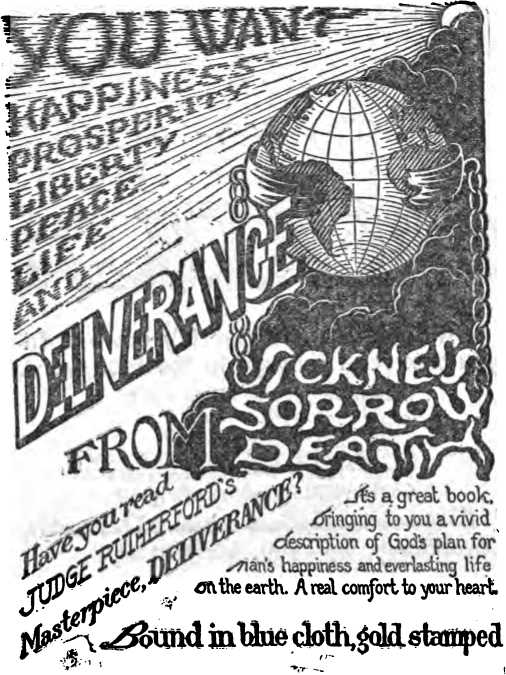

I1'
The Harp of God
A text-book for Bible study specially adapted for use of beginners; with numerous
By J. F. Rutherford
Outlines Deliverance Where are the Dead? Concerning for the Jews Of the Lord’s Return
Hell
4080/100 Edition
Publishers
International Bible Students Association Watch Tower Bible and Tract Society Brooklyn, New York, U.S. A.
London. Toronto, Melbourne, Cape Town. Beene, Magdeburg, etc.
(COLLEGER
-jTso
To the invisible King of Glory now present
in the interest of
the generation now on earth who will become his loyal subjects
this book is dedicated
“I charge thee therefore before Clod, and the Lord Jesus Christ, who shall judge the quick and the dead at his appearing and his kingdom." — 2 Tim. 4:1>
Copyrighted 1921 by Peoples Pulpit Association Brooklyn, N. Y., U. S. A.
Made in U. S. A.
1928
There is need of a text-book for beginners in Bible study* This book Is Intended to meet that long-felt want* The subject matter is arranged progressively and orderly. A list of questions follows each point discussed, thus enabling the teacher to direct the mind of the student to the subject under consideration. The numeral following each question refers to the paragraph of the text where the answer may be found, each paragraph being numbered to correspond*
Jehovah had a great plan before the foundation of the world; but no one knew about it During the first four thousand years of man’s history God’s plan was kept a secret He began to reveal it to man nearly nineteen hum dred years ago, and then only to those who have consecrated to do his wilt Promise was made that greater light should come at the end of the age, and this promise has been kept We are at that time, as is clearly proven by the contents herein* This book points out the salient features of the divine plan, which plan is both orderly and progressive.
People generally have not been thoroughly instructed in the Bible. Even those who have attended the Sunday schools have merely learned the text and not the meaning of the text Like the prophets of old, they have heard but under* stood not The real reason for these conditions is that God's plan could not be understood until his due time to reveal it His due time is here.
Because of the dispensations! change taking place at this time, Bible study was never so important as now. If important to educate the rising generation in the things taught in our common schools, with stronger reasoning is it important to educate them concerning that which is now being revealed of the divine program for the uplifting and blessing of mankind.
There is no disposition, desire, nor attempt to induce any one reading this book to become a member ot any organisation, sect, or denomination. The sole purpose of the book
Preface
Is to aid honest seekers for truth In their endeavors to understand the Bible, to learn the meaning of the presentday events, and to prepare some at least to receive the blessings that are soon due to mankind.
If you knew that there was to be a radical change in the government for the better, and that your children might have a part in the affairs of the new government, you would be anxious for them to acquire all the knowledge possible concerning the new order of things. The greatest changes of the ages are now taking place. It is conceded by everybody that these changes began with the World War and that they continue. But what do they mean? The real answer is that the old world, or social and political order, has ended and is passing away, and that a new and better order is due and will shortly be established. Every parent owes it to his child to instruct him insofar as possible concerning the incoming new order or government The contents of this book will start you in the right way.
The subject matter herein treated is not discussed at great length. The interested reader is referred to the Studies in the Scriptures and kindred publications of the Watch Tower Bible and Tract Society, wherein these matters are treated in greater detail. The King James Version of the Bible is used in the quotations, except as otherwise indicated. The reader should consider each point herein made with his Bible before him, proving each proposition, that he may be thoroughly convinced in his own mind.
The harp is an instrument which, when used by a skilled performer, brings happiness and cheer to those who listen. The harp of God, when understood and skilfully used, brings peace of mind and gladness of heart The title of this book suggests the thought of good cheer and happiness. The message herein contained, taken from the Word of God, is sent forth with the prayer that it may be a blessing to many, that it may cheer some who are sad, bind up some broken hearts, comfort some that mourn, and give all who earnestly read a deeper appreciation of Jehovah and the Savior of mankind.
Brooklyn, N. Y., October 22, 1921.
Contents
Glorification of the Church------------—-
CHAPTER I
“I will incline mine ear to a parable; I will open my dark saying upon the harp.”—Psalm 49:4.
THE harp is a musical instrument invented many centuries ago. When properly strung and played upon it yields sweet music, making glad the heart. The first mention of the harp made in the Bible is in Genesis 4:21, and the inventory name was Jubal. He was therefore called “the father of all such as handle the harp and organ”.
8 It was 2812 years before the coming of Jesus in the flesh that God organized the twelve tribes of Israel, the descendants of Jacob, into a nation, which nation thereafter was known as the nation of Israel. It was the only nation with which God made a covenant, and he did not recognize any other nation in the same way. (Amos 3:2) The nation of Israel was used to make living pictures or types, foreshadowing better things to come; and those who study the Scriptural account of Israel’s experiences are able to approximate closely future events which will be good for mankind.—1 Corinthians 10:1-13; Hebrews 10:1.
8 With the nation of Israel the harp was an instrument consecrated to joy and exultation. David, who for forty years was king of Israel, was an expert player on the harp, and it will be noted that in the Psalms often the harp is used to symbolize or teach some great truth. The Jews used this instrument on occasions of joy, such as jubilees and festivals.
11
4 Josephus, a writer of Jewish history, is authority for the statement that the harp usually had ten strings, but that at times it was smaller and had only eight strings. The number ten is used in the Scriptures to symbolize that which is complete or perfect as pertaining to man. We would understand, then, that the harp with ten strings pictures the great fundamental truths concerning the divine plan. When two of these strings were absent, there being only eight,* the indication is apparently given that there would be a time when two important features of the divine plan would not be seen by men. God promised that greater light should come upon his Word at the end of the age, or end of the world. Since we have reached that time, we confidently look for more light and thus we find it.
• The book of Revelation is written largely in symbols. In Revelation 14:2,3 and 15:2,3 we find a brief description of a class of glorious beings who are , playing upon their harps, and these are described as the ‘harps of God’. The harp here is used as a sign or symbol of some great truth, or feature of the divine program; in fact, a great deal of the Bible is written in symbolic phrase. The Lord uses objects which we know to illustrate great unseen things which we do not know; and the harp is so used.
who is god!
6 Before we can know God and understand his great plan it is first necessary for us to believe that he exists and that he rewards all who diligently seek him. (Hebrews 11:6) But how can we believe! We must first have some knowledge. But how can we know that there- is a great God! Let us look at some of the simpler things about us and reason upon the matter.
7 Look at the flowers in your garden. Ont from the same soil grow the many varieties of different hues and colors. likewise from the same soil spring the divers kinds of trees, bringing forth different fruits at different seasons of the year. Some wisdom superior to man’s must have arranged these things. Observe the broad fields, the lofty mountains, the mighty rivers, and then behold the exhibiting unlimited power, upon the waves of which majestically ride the great ships. Are we not compelled to conclude that there is a wise One, who created these things, greater than anything we see!
* Now gaze into the silent heavens above you, and there number, if you can, the stars and planets which are noiselessly moving through space. Many of these are far greater than the earth, and yet each one hangs in its place and moves noiselessly about in its orbit. Surely they could not have come there by chance, but the reasonable mind must say that a Creator greater than the planets put them there. When King David looked at these wonders of creation he was so impressed with the greatness of their Creator that he wrote; 4‘The heavens declare the glory of God: and the firmament sheweth his handywork. Day unto day uttereth speech, and night unto night sheweth knowledge. There is no speech nor language, where their voice is not heard. Their line is gone out through all the earth, and-their words to the end of the world.” —Psalm 19:1-4.
9 Consider man. What a wonderful piece of mechanism is his body! The framework is there; the muscles that hold each part in place; the nerves, like a great electrical system by which messages are conveyed from the brain to all parts of the body. He has power to reason and to plan and carry out these plans.
Truly no machine can be compared to man for intricacy of construction and harmony of action. Who, then, is the Creator of this wonderful thing? We must conclude that there is a great First Cause who made and put into action all things visible in the universe, as well as things to us invisible. And who is he? Jehovah is his name; the great God of the universe.—Psa. 83:18; Gen. 17:1; Ex. 6:3; 20:2-5.
10 The name Jehovah means self-existing one. He is without beginning and without end, and of him Moses wrote: “From everlasting to everlasting, thou art God.” (Psalm 90:2; Isaiah 26:4) He is the great Almighty Jehovah God and there is none other besides him, and his honor and dignity none other possesses. (Isaiah 42:8) He is the great all-wise Creator of all things that are made. (Isaiah 40:28; Genesis 1:1) The four great and eternal attributes of Jehovah are justice, power, love, and wisdom. (Ezekiel 1: 5,6) These attributes work together in exact harmony at all times; and in various times and ways he makes manifest these attributes. At certain times he has specially manifested such attributes.
11 His justice was made manifest by inflicting punishment for the violation of his law. Power was particularly manifested in the great flood that destroyed all things on the earth. His love was especially exhibited in the sacrifice of the dearest treasure of his heart, his beloved Son, that mankind might have an opportunity for life. His wisdom is particularly manifested in his great plan, which he gradually unfolds . and permits man to see. His attributes have no limitations. He is so wise that he knew the end from the beginning and outlined all of his great plan to the very minutest detail.—Acts 15:18.
HIS REVELATION
” It is conceded by all that man is the very highest type of all living creatures on the earth. His intelligence is far superior to that of any other earthly being. Truly man is fearfully and wonderfully made. Is it not reasonable for him to expect that the Almighty God would reveal to man something of the divine greatness and plans and purposes! Yes, and such revelation is found in that wonderful book, the holy Bible.
18 Who wrote the Bible ! What is known as the Old Testament was written by holy men of old who were moved upon by the invisible power of Jehovah to write it. (2 Peter 1:21;2 gamuel 28:2; Luke 1:70) The New Testament consists of the spoken words of Jesus, the Son of God, who‘spake as never man spake,’ and whose words were recorded by those who heard him and witnessed his acts; and in addition thereto, the written testimony of his disciples, who wrote under inspiration from God.
14 The holy spirit means the invisible power of Jehovah, holy because he is holy. This power of Jehovah operated upon the minds of honest men who loved and who were devoted to righteousness, directing them in the writing of the Bible. The spirit of God, i, e., his invisible power, moved upon the waters and thereby he created. (Genesis 1:2) In like manner his invisible power operated upon the minds of men and directed them what to write. Thus did Moses write the first five books of the Bible. The invisible power of God, which is the holy spirit, operating upon Moses’ mind enabled him to make a record of the chief events that had occurred and to write the law of God, as given to his people through Moses. In no other way could the true history of creation have been written. These facts and truths were, therefore, written by inspiration of God. (2 Timothy 3:16; Job 32:8) There are twenty-four prophetic writers of the Old Testament, who foretold the great events that were to transpire in the earth. Their accounts were written at different times and under widely different conditions, yet their testimonies agree. Their testimony foreshadowed future events.
15 History, when written, is a recorded statement of facts and events, arranged in a chronological order.
10 Prophecy, which is true, is a statement of facts and events foretold to take place at some future time. Otherwise stated, prophecy is history written before it transpires.
17 No human mind could actually foretell facts or events to happen in the future. Only the divine mind could do that. If, then, we find that the Bible foretold certain facts and events to happen and the record of the same was made centuries before these facts and events did happen, and these events and facts are now definitely established as having taken place, such would be the strongest proof that the persons recording such facts and events were directed in so doing by the divine mind; hence that such writing was under divine inspiration.
18 As an illustration of this point: Wireless telegraphy and airships are modem discoveries; yet since they have been discovered we find that God, through his holy prophets, foretold centuries ago the use of such inventions. (Isaiah 60:8) The railway train has been in use less than a hundred years; and yet God by his prophet many centuries ago foretold that at “the time of the end” there would be many running to and fro. Without doubt this prophecy refers to the rapid transportation, including the railway and other means of modern travel, such as automobiles, electric cars, etc. (Dan. 12:4) There is no one living in modem times who is wiser than Solomon; yet during the past 125 years there have been a great development in invention and a marvelous increase of knowledge, because it is due time, and because the prophets of God centuries ago foretold that such would come to pass.
19 Through his holy prophets God foretold that at a time future there would come into the world a mighty man; that he would be born a Jew (Deuteronomy 18: 15), specifying the place where he would be born (Micah 5:2); that he would come to his own people and they would not receive him; that he would be despised and rejected of men, a man of sorrows and acquainted with grief (Isaiah 53:1-3); that he would ride into Jerusalem upon an ass, and her colt, and offer himself as king to the Jews (Zechariah 9:9); that he would be rejected by the Jews (Isaiah 53:3); that he would be betrayed for thirty pieces of silver (Zechariah 11:12); that he would die, but not for himself (Daniel 9:26); that there would be no just cause for his death (Isaiah 53:8, 9, 11); that nevertheless he would be numbered among the transgressors (Isaiah 53:12); that he would die a violent death, yet not a bone of his body should be broken (Psalm 34:20); that his flesh would not corrupt and that he would be raised from the dead (Ps. 16:10); all of which and many more similar prophecies were completely fulfilled by Jesus of Nazareth, the great Teacher who lived about and died at Jerusalem. Later we shall examine the scriptures proving a further fulfilment of all these prophecies.
90 All of the foregoing facts show that the Bible was written, as it is claimed, by holy men of old, who were directed in writing it by the power of Jehovah, and that it is a record which God caused to be kept and has given to man for his guidance in righteousness, and which foretells the course and final destiny of man.
The prophets who made record of the divine arrangement did not understand what they wrote. They knew they were writing something that would take place in the future, but just how and when they did not know. They inquired and searched diligently all sources of information open to them as to what these prophecies meant and when they would be fulfilled and in what manner of time. Particularly with reference to the coming of Jesus, his suffering, death and resurrection they prophesied and did not understand, although they attempted to understand. r(l Peter 1:10-12) Even the angels of heaven knew that the prophets were thus writing, but they did pot understand, although they desired to look into these things. God revealed his great plan only in his ,own due time, and until that time he kept it aU to himself.
** The divine plan means the arrangement made by Jehovah for the creation of everything that has been created and for carrying out his purposes with reference to his creatures. The first one to understand the divine plan was Jesus, who prior to coming to earth was known as the Logos, which means one who .speaks and acts for Jehovah. In Revelation, chapter 5, a wonderful picture is given in symbolic language. Jehovah is pictured as seated upon his throne, holding in his right hand a record or scroll of his great plan. The hand is a symbol of power and holding it in his hand foreshadowed the fact that Jehovah held it exclusively in his own power and keeping. The picture then shows a strong angel or messenger speaking with a loud voice and asking the question: “Who is worthy to open the book and to loose the seals thereof?” In heaven there was a host of holy beings or angels. No one of them was able to open the book or scroll, neither to look on it. No one in earth was able to look upon it nor to open it.
23 One of the titles given to Jesus is “Lion of the tribe of Judah”. This great and mighty One, the beloved Son of God, afterward designated Jesus, was granted the privilege of opening the book and of loosing the seals that kept it secret, thus picturing how Jehovah made known his plan to his beloved Son. The picture describes him thus: “And I beheld, and, lo, in the midst of the throne . . . stood a Lamb, as it had been slain, having seven horns and seven eyes, . . . and he came and took the book out of the right hand of him [Jehovah] that sat upon the throne.”
24 Seven is a symbol of perfection; horn a symbol of power; and eyes a symbol of wisdom. Therefore this One is pictured as having perfect power and perfect wisdom to perform this wonderful privilege and duty. This is the first time that the great mystery of Jehovah, his great plan or program, was made known to any one; and since then, from time to time, he has been pleased to reveal portions of his plan to men who have honestly and faithfully sought to understand it. He has promised to reward those who diligently seek him and who seek a knowledge of him. Therefore we can come to the study of his plan, confidently expecting that he will grant us from time to time such a vision and understanding of it as pleases him and as would be for our good and happiness.
“ The harp is used to symbolize the grandeur and beauty, the exquisite harmony and majestic sweetness of the divine arrangement or plan. The record of this great program or plan is found in the Old and the New Testament. This record reveals the purpose of God concerning man, gives a record of his fall, a prophetic vision of his redemption and deliverance, and ultimately the blessing of all obedient ones of mankind with life everlasting. The great fundamental doctrines or truths stated in the Bible and which constitute the fundamentals of his plan concerning man would, therefore, constitute the strings upon the harp of God. These fundamental truths were spoken by Jehovah through the prophets, through Jesus, and through his disciples. God’s law is his expressed will. Law means a rule of action, directing that which is right and prohibiting that which is wrong. The Bible contains the law of Jehovah for the governing of mankind.
16 The name David means beloved one. The beloved One of Jehovah is his Son, Jesus, the Christ. David was therefore used by Jehovah to picture or to make a type of Christ, including Jesus and his faithful followers. David used the harp of ten strings and was an expert performer upon it. This would seem to picture that the antitype of David, Jesus and the members of his body, his faithful followers, would have an understanding of this harp of God and that God would use them to make it plain to others who would want to understand it. The ten strings of the harp, therefore, very fitly represent the ten great fundamental truths or doctrines of the divine plan. These ten fundamental doctrines appear in the order named, as follows:
(1) CREATION
(2) JUSTICE MANIFESTED
(8) ABRAHAMIC PROMISE
(4) BIRTH OF JESUS
(5) BAN BOM
(6) RESURRECTION
(7) MYSTERY REVEALED
(8) THE LORD’S RETURN
(9) GLORIFICATION
(10) RESTORATION
27 When one understands these ten fundamental truths and can appreciate the beauty and harmony by them expressed, he is thereby enabled to use the harp of God, and the use of it brings joy to his heart and fills his soul with sweet music. Without doubt the great plan of God pictured by the harp was all made and arranged at one time, but we will here consider each one of these fundamental truths, represented by a string, separately and in the order above named.
What is the harp? and when was It Invented? 7 1.
Who invented the harp? and where is mention made of it in the Bible? ? 1.
When did God organize the twelve tribes of Israel into • a nation? 1 2.
What arrangement did God make with the nation of Israel? fl 2.
For what purpose was that nation used by Jehovah? 7 2.
To what did the nation of Israel consecrate the harp? fl 3.
What king of Israel was skilled in the use of the harp? fl 3.
Where in the Scriptures Is the harp used symbolically? fl 3.
On what occasions did the Jews use the harp? fl 3.
How many strings were there on Israel’s harp? and what did these symbolize? fl 4.
Did the harp at any time have a less number of strings? and If so, what did that picture? fl 4.
In what phrase or language is the book of Revelation written? fl 5.
Where in the book of Revelation is the harp mentioned? and what kind of beings are pictured as using it? fl 5.
What is the first essential to an understanding of God’s plan? fl 6.
Name some visible proof of the existence of a Supreme Being or Creator, fl 7.
How was David impressed with what he observed of creation? fl 8.
How does man’s organism prove the existence of a Supreme Being? fl 9.
Who is the Supreme Being or Creator? and what does his name signify? fl 10.
Give some Scriptural proof of the existence of Jehovah, fl 10.
Name the .four primary divine attributes, fl 10.
How was divine justice manifested? fl 11.
How was divine power manifested? fl 11.
How was divine love manifested? fl 11.
How was divine wisdom manifested? fl 11.
Is there proof that God foreknew the end from the beginning? fl 11.
Why should man expect some revelation of the divine plan? fl 12.
Has man found a revelation of God’s plan? and if so, where? fl 12.
By whom was the Bible written? and what are the two general divisions of it? fl 13.
What is meant by the holy spirit? fl 14.
What relationship does the holy spirit bear to the Bible and its preparation? fl 14.
Who wrote the first five books of the Bible? and undqr what conditions? fl 14.
Was the Bible written under inspiration? fl 14.
How many prophetic writers contributed to the Old Testament? and does their testimony agree? fl 14.
Define history, fl 15.
Define prophecy, fl 16.
Can a human mind accurately foretell future events? fl 17.
What is one of the strongest proofs that the Bible was written under inspiration? fl 17.
What relationship do wireless telegraphy and airships bear to fulfilled prophecy? fl 18.
Were means of modern transportation foretold by the prophets? and if so where? fl 18.
What other means of rapid transit did the prophets foretell? fl 18.
Why did not Solomon give the world great Inventions such as we now have? fl 18.
Did the prophets point to the coming of any special one to earth? fl 19.
What prophecy, if any, did the coming of Jesus of Nazareth tend to fulfil? fl 19.
How did the coming of Jesus tend to confirm the authenticity of the Scriptures? fl 20.
Did the prophets understand the meaning of what they wrote concerning the happening of future events? fl 21.
What effort did they make to understand? fl 21.
Did the angels in heaven understand what the prophets were writing? fl 21.
What is meant by the term “the divine plan”? fl 22.
Who was the first one to understand the divine plan? fl 22.
What was the name of Jesus before he became a man? and what is the significance of his prehuman title? fl 22.
What is pictured by the fifth chapter of Revelation? Give the details of the picture, fl 22.
Who is the “Lion of the tribe of Judah”? fl 23.
What is the symbolic meaning of the words “seven”, “horns,” and “eyes”? and what do these words signify as used in Revelation 5? fl 24.
Is there reason to expect that God would grant certain ones from time to time an increased understanding of his plan? and if so, why? fl 24.
What does the harp symbolize? fl 25.
Where is the record of the divine plan found? fl 25.
What does this record reveal concerning man? fl 25.
By whom has God spoken his fundamental truths? fl 25.
What is the law of God? Define law. fl 25.
Where is the law of God found? fl 25.
What is the meaning of the word “David”? fl 26.
Whom did David picture or typify? fl 26.
What did David’s use of the harp typify or picture? fl 26.
What is pictured or symbolized by the ten strings of David’s harp? fl 26.
Name the ten fundamental truths represented by the strings on the harp, fl 26.
How can one learn to use the harp of God? fl 27.
What effect is produced upon one who skilfully uses the harp? fl 27.
OMNIPOTENT GOD
Harps of eternity! begin the song, Redeemed, and angel harps! begin to God, Begin the anthem ever sweet and new, While I extol Him holy, just, and good. Life, beauty, light, intelligence, and love! Eternal, uncreated, infinite!
Unsearchable Jehovah! God of truth!
Maker, upholder, governor of all;
Thyself unmade, ungoverned, unupheld, Omnipotent, unchangeable, Great God! Exhaustless fulness! giving unimpaired! Bounding Immensity, unspread, unbound! Highest and best! beginning, middle, end. All-seeing Eye! all-seeing, and unseen! Hearing, unheard! all knowing, and unknown! Above all praise! above all height of thought! Proprietor of Immortality!
Glory ineffable! Bliss underived I Of old Thou build’st Thy throne on righteousness, Before the morning Stars their song began, Or silence heard the voice of praise. Thou laid’st Eternity’s foundation stone, and saw’st < Life and existence out of Thee begin.
—Pollok
CHAPTER II
THE subject of creation here treated relates particularly to the earth and the creatures of the earth, the chief one of which is man. We will not attempt to discuss at length the creation of other planets, nor of the other creatures. Attention is called merely to the Scriptural statement that the beginning of God’s creation was the Logos, which term is translated in our Bibles “the Word”. The record reads: “In the beginning was the Word, and the Word was with [the] God, and the Word was [a] god.” (John 1:1) God is a name applied to Jehovah, the Almighty One. It is sometimes applied to other mighty ones also; whereas the name Jehovah applies exclusively to the great eternal God. The Logos, the Word, was a god, & mighty one. “The same was in the beginning with [the] God. All things were made by him; and without him was not anything made that was made. ” He was Jehovah’s great active agent in the creation of all things created.
*• Since the Bible was written for man’s benefit, the Genesis account of creation has to do with man and his place of habitation. There we read: “In the be-grnning God created the heaven and the earth.” He created the sun, for light by day; and the moon, for light by night, upon the earth. God then created the birds and fowls that fly through the air, and the fish of the sea. He created the cattle and the creeping things, and all the beasts of the earth. All this was 27
before the creation of man. He had formed the earth many centuries before man’s creation, and he created it that man might have a place to live. He caused his prophet to write: “I have made the earth, and created man upon it. For thus saith the Lord that created the heavens; God himself that formed the earth and made it; he hath established it, he created it not in vain, he formed it to be inhabited.”—Isaiah 45:12,18.
80 God created the first man and woman out of the elements and gave them power to produce and bring forth children, and all the human race sprang from the first pair. God was the Father and the earth the mother of Adam. The first man was named Adam; the first woman, Eve. “God created man in his own image, in the image of God created he him; male and female created he them. And God blessed them, and God said unto them, Be fruitful, and multiply, and fill the earth, and subdue it; and have dominion over the fish of the sea, and over the fowl of the air, and over every living thing that moveth upon the earth.” —Genesis 1:27,28.
81 We are all interested in knowing how Jehovah created the first man, Adam. “And the Lord God formed man of the dust of the ground, and breathed into his nostrils the breath of life; and man became a living soul.” (Genesis 2:7) God did not give man a soul separate and distinct from the man. The word “soul” means being; living, breathing creature. Every man is a soul. No man has a soul. Every living creature is a soul. God called all moving creatures that have life “souls”. (See Genesis 1:20, margin.) He designates various animals as souls.—Numbers 31:28.
82 Jehovah then made a beautiful home for man, which is designated in the Bible as Eden, a garden, a beautiful park. Everything in Eden was perfect, because all the works of Jehovah are perfect. (Deuteronomy 32:4) “And the Lord God planted a garden eastward in Eden; and there he put the man whom he had formed. And out of the ground made the Lord God to grow every tree that is pleasant to the sight, and good for food; the tree of life also in the midst of the garden, and the tree of knowledge of good and evil. And the Lord God took the man, and put him into the garden of Eden to dress it and to keep it.”— Genesis 2:8,9,15.
“ God next gave to man a law to govern him. He told him what he might do and what he might not do; and informed him that a violation of this law would bring death upon him. “And the Lord God commanded the man, saying, Of every tree of the garden thou mayest freely eat: but of the tree of the knowledge of good and evil, thou shalt not eat of it: for in the day that thou eatest thereof thou shalt surely die.”— Genesis 2:16,17.
84 God then created Eve to be a helpmate or companion to Adam. (Genesis 2:21-25) If Adam and Eve had been obedient to Jehovah at all times, there would have been no sickness, sorrow, nor death amongst the human race. -
85 In the Scriptures Jesus, the Logos, is designated as “the bright and morning star”. (Revelation 22: 16) He at all times was and is the joy and delight of the heavenly Father, Jehovah. A star is used to symbolize a heavenly creature. The ‘Morning Star’ is the most honored one in all the divine realm, Jehovah alone excepted. Other heavenly creatures are designated as ‘stars’.
86 Many times you have heard the question asked, Who made the Devil, Satan, the evil one? The correct answer is, He was not always the Devil or Satan. He was created a perfect and beautiful creature. He was also designated a ‘star of heaven’. His original name was Lucifer. The Prophet Ezekiel says of him that he was “the anointed cherub that covereth”, which seems to indicate that he had authority over some others. Continuing, the prophet records: “Thou Wast upon the holy mountain of God; thou hast walked up and down in the midst of the stones of fire. Thou wast perfect in thy ways from the day that thou wast created, till iniquity was found in thee.” (Ezekiel 28:14,15) He is described as a beautiful creature. Thus the prophet speaks of him: “Thou hast been in Eden the garden of God; every precious stone was thy covering, the sardius, topaz, and the diamond, the beryl, the onyx, and the jasper, the sapphire, the emerald, and the carbuncle, and gold: the workmanship of thy tabrets and of thy pipes was prepared in thee in the day that thou wast created.”—Ezekiel 28:13.
87 Other angelic hosts in heaven are designated the sons of God. When God created the earth, laying its foundations as a habitation for man, when he created these beautiful earthly creatures upon the earth, these two great Stars of heaven sang together a song of gladness, and the angelic sons of God shouted for joy. (Job 38:4-7) It appears that at that time all the creatures of Jehovah were in harmony with him and obedient to him, and of course they would watch the creation develop; and when the highest earthly creatures were made, perfect man and perfect woman, endowed with the attributes of wisdom, justice,. love, and power, made in the image and likeness of Jehovah, there was great joy in heaven. Hence the occasion for the song and shouting by the heavenly hosts.
88 In the unfolding of the divine plan, therefore, we see that creation is the first part and is properly designated as the first string upon the harp of God. 4‘God is light, and in him is no darkness at all.” (1 John 1:5) All the works of Jehovah are perfect. ^Deuteronomy 32:4) Hence we must conclude that all the creatures of Jehovah were in the light, were (creatures of light, all happy, all joyful. And when the perfect man and perfect woman were placed in the beautiful .garden of Eden, everything there was joyful.
To what does the subject of creation herein briefly treated relate? fl
Who is designated in the Bible as the beginning of God’s creation? fl 28.
To what does the Genesis account of creation relate? fl 29.
What earthly creatures did God create before making man? fl 29.
For what purpose did God create the earth? fl 29.
What human beings did God create? fl 30.
Who was the father and who the mother of the human race? fl 30. •
Who was the father and who the mother of Adam? fl 30.
What power and authority did God give to man at his creation? fl 30.
How did God create man? fl 31.
Define the soul, fl 31.
Does the word “soul” apply to any creatures except man?
Give Scriptural proof, fl 31.
Describe the original man’s first home, fl 32.
What is the meaning of the word Eden? fl 32.
What law did God give to man by which he was to be governed while in Eden? fl 33.
Describe the creation of Eve. fl 34.
By obeying God’s law, how long could Adam and Eve have lived in Eden? fl 34.
A “star” is used in the Scriptures to symbolize what? fl 35.
What is the meaning of the Scriptural term <fbright and morning star”? fl 35.
Who is the most highly honored one in the divine realm? T 35.
Who is the Devil or Satan? and who made him? fl 86.
What was his original name? fl 86.
How does the Prophet Ezekiel describe Lucifer? 7 36.
What other beings in heaven are called sons of God? 7 87.
When God created man, what was the effect upon the host of heaven who observed the creation? fl 37.
What is the first string upon the divine harp? fl 38.
Does the revelation of this string cause rejoicing? and if so, by whom? 7 38.
Who is light and without darkness? 7 38.
Has God ever created an imperfect creature? 7 88.
What is the disposition of God’s creatures while in harmony with him? fl 88.
What was the condition in Eden when man was created? 7 38.
CHAPTER III
ONE of the divine attributes is justice. “Justice and judgment are the habitation of thy throne. ” (Psalm 89:14) Divine wisdom devised the great divine program or plan. Divine justice must perform its part in harmony with the other divine attributes. God’s law must be unchangeable. God being unchangeable, his creatures can have absolute confidence and faith in him, that he always does exactly as he says. A violation of Jehovah’s law must in the exercise of justice be followed by punishment. The prerogative of justice is to see that the law is enforced. The manifestation of justice magnifies the name and the dignity of Jehovah. Without the manifestation of justice it would have been impossible for Jehovah so fully to manifest his love toward man in providing for his redemption and subsequent blessing. When one understands the office of justice and why it was manifested, he rejoices. A failure to understand and appreciate the divine attributes makes it impossible for one properly to appreciate Jehovah’s goodness and loving-kindness to mankind. Jehovah is too good to be unjust. He is too wi^e to make a mistake; he is too loving to be unkind; and his power is always exercised in such a way that ultimate good may result.
40 The manifestation of justice is one of the strings upon the harp of God; but we must see and appreciate it in order to understand the beauty and harmony it brings when used in connection with the other strings.
35
41 Good and evil are antagonistic principles or rules of action. Good is the law or rule of action by which God is always governed. Evil becomes active only when some creature of Jehovah violates his law. God made man a free moral agent. He did not compel him to do or not to do certain things. He told man that if he did certain things he would be blessed; and that if he did other things contrary to divine law he would suffer punishment; and the punishment prescribed was death. Mother Eve was deceived by Satan, the Devil, and thereby induced to violate the law of God. Father Adam, seeing that his companion and helpmate had violated the law and judging that she must die, preferred to join her in the transgression and die with her. (1 Timothy 2:14) It will be of interest here to examine the circumstances leading up to the violation of the law of God and to see why his justice toward man was manifested in sentencing him to death.
42 All dominion rightly belongs to Jehovah. He had given man dominion over the things of earth. Lucifer observed Adam and Eve, the perfect ones, in Eden; and knowing that they were endowed with authority from Jehovah to multiply and fill the earth, he had an ambitious desire to alienate them from God and cause them to worship him instead of Jehovah that he might be like the Most High. The Prophet Isaiah gives us some light upon this subject when he says: “How art thou fallen from heaven, 0 Lucifer, son of the morning! how art thou cut down to the ground, which didst weaken the nations! For thou hast said in thine heart, I will ascend into heaven, I will exalt my throne above the stars of God: I will sit also upon the mount of the congregation, in the sides of the north: 1 will ascend above the heights of the clouds: I will be like the Most High. Yet thou shalt be brought down to hell, to the sides of the pit.”—Isaiah 14:12-15.
48 Thus we see that Satan had an ambitious desire to be like the Most High. God manifested his justice toward Lucifer by judicially determining that in his own due time that evil one shall be destroyed. (Ezekiel 28:14-18; Hebrews 2:14) Lucifer, because of his wickedness, thereafter was and is known by the names of Dragon, that old Serpent, the Devil, and Satan. (Revelation 12:9) In Genesis 3 he is spoken of as the Serpent. The name Dragon means devourer; Satan means adversary; Devil means slanderer; while Serpent means deceiver; and all these names indicate the characteristics of Satan, the evil one.
44 According to the Genesis account, the old Serpent, the Devil, deceived Eve in this manner: As we have heretofore observed, Jehovah had told Adam and Eve that they must not eat of a certain tree in Eden, known as the tree of knowledge of good and evil. Appearing to mother Eve in the capacity of a serpent, a deceiver, the Devil said to her in effect: ‘Hath God said that ye shall not eat of every tree in Eden?’ To this question Eve responded: “We may eat of the fruit of the trees of the garden: but of the fruit of the tree which is in the midst of the garden, God hath said, Ye shall not eat of it, neither shall ye touch it, lest ye die.” The old Serpent, the Devil, replied: “Ye shall not surely die: for God doth know that in the day ye eat thereof, then your eyes shall be opened; and ye shall be as gods, knowing good and evil.” In other words, he told Eve that Jehovah was trying to keep her and her husband in ignorance and thus take advantage of them. Doubtless the Devil himself ate of the fruit in the presence of Eve and then deliberately Bed to her by saying: “Ye shall not surely die/’ ‘God knows that you will not die.* And by this means he induced mother Eve to eat of the fruit, which was a violation of God’s law. We know that Satan is a liar, because Jesus said of him: “He was a murderer from the beginning, and abode not in the truth, because there is no truth in him. When he speaketh a lie, he speaketh of his own: for he is a liar, and the father of it.”—John 8:44.
45 The fact that Eve was deceived and thereby induced to violate the law of God in no wise changed the law or affected its enforcement. Adam deliberately ate of the fruit and he also was in the transgression.—1 Timothy 2:14.
46 After they had violated Jehovah’s law, Adam and Eve hid amongst the trees in Eden. Jehovah spoke to Adam and asked: “Hast thou eaten of the tree, whereof I commanded thee that thou shouldest not eat?” Adam responded that Eve had given him the fruit to eat; and Eve said that the serpent had deceived her. They both stood before Jehovah and confessed their guilt. The majesty of the law of Jehovah must be upheld. His law being unchangeable (Hebrews 6:18), there remained nothing to do but to enforce that law. Then Jehovah pronounced his judgment against them, the record of which reads: “Unto the woman he said, I will greatly multiply thy sorrow, and thy conception: in sorrow thou shalt bring forth children; and thy desire shall be to thy husband, and he shall rule over thee. And unto Adam he said, Because thou hast hearkened unto the voice of thy wife, and hast eaten of the tree of which I commanded thee, saying, Thou shalt not eat of it: cursed is the ground for thy sake; in sorrow shalt thou eat of it all the days of thy life: thorns also and thistles shall it bring forth to thee; and thou shalt eat the herb of the field: in the sweat of thy face shalt thou eat bread, till thou return unto the ground; for out of it wast thou taken: for dust thou art, and unto dust shalt thou return.”—Genesis 3:16-19.
47 Thus the perfect man forefeited his life. He had been endowed with perfection of home, liberty, peace, happiness, and life everlasting on earth. Now he must die and return to the dust from which he was taken. God did not put him to death immediately, but permitted him to have 930 years of experience that he might learn the baneful effects of sin. Eden contained perfect food that would have sustained the perfect man and he would not have died had he remained in Eden, unless Jehovah had put him to death in some direct maimer. But God drove him out of Eden, took him away from the perfect food, caused him to gather his food from among the thorns and thistles and from other imperfect elements of the earth that were found outside of Eden; and in this condition he continued to sicken and to die until at the end of the period of 930 years he was dead.
48 A kind and loving parent sometimes inflicts punishment upon a child because the child has violated a rule. The parent punishes the child not because he loves to see the child suffer, but for the good of the child, in order that it might be disciplined and might learn the proper lessons. If the child always did good and never did evil it would not merit nor receive any punishment from a loving parent. One of the chief purposes of Jehovah in dealing with mankind in the manner he does deal with them is that humankind might be disciplined and learn the lessons of good and the effect of doing wrong, and thus learn to appreciate the love of the heavenly Father.
49 When God sentenced our first parents to death and drove them out of Eden, he had in mind and had already planned for their future blessing, as we shall see upon a further examination of his plan. Hence it was love that prompted his action in sentencing Adam to die. Every act of Jehovah is prompted by love; for God is love. He always acts that good may result. The manifestation of his strict justice was essential that the dignity and greatness of Jehovah might be maintained. At the same time, in so doing, love was the motive that prompted his action. It must have brought sorrow to the heart of Jehovah to be compelled thus to punish his creatures, because God takes no pleasure in evil things; yet having in mind the ultimate blessing and restoration of them, there would be pleasure in thus manifesting justice that ultimate good might result.
50 We therefore might with propriety speak of the manifestation of justice as the minor chord in the music of the harp of God. The minor chord seems necessary in music to produce exact harmony.
51 Job in his suffering seems to picture the world of mankind under condemnation; and when suffering he said: “My harp also is turned to mourning.” (Job 30:31) The perfect man and his helpmate, deprived now of their perfect home, toiling as they sought to gather their food from the unfinished earth, suffering in body and in mind because of their separation from God, truly would have said, and doubtless did say: ‘Our harp is turned into mourning.’ Since that time the whole world has been in a state of mourning; and mankind still suffers and groans in pain. The world of mankind in general has not appreciated the manifestation of the justice of Jehovah. The Christian, however, who has come to a knowledge of
Jehovah’s plan, and sees and appreciates his purposes for the blessing of mankind, can rejoice and does rejoice at the manifestation of divine justice.
52 During the Christian era God has been developing a church, the members of which are designated as the body of Christ. (Philippians 1:29; Colossians 1: 18) These are also designated members of the royal priesthood. (1 Peter 2:9,10) During their earthly career they are counted as members of the sacrificing priesthood, of which Aaron was,a type. Aaron and his sons were required to serve before the Lord in the ceremonies in connection with the tabernacle in the wilderness. Two of Aaron’s sons were stricken dead because they offered strange fire before the Lord. Aaron and his two remaining sons were forbidden by the Lord to mourn the death of their kinsmen. Evidently this is a picture which shows that those who have come to a knowledge of the divine plan do not mourn because God sentenced our first parents to death, but rather that they will rejoice at this manifestation of justice when they understand that it was necessary in order that the great plan of redemption should be carried out as outlined by Jehovah from the beginning. And when we see and appreciate this divine plan we can truly exclaim: “Great and marvellous are thy works, Lord God Almighty; just and true are thy ways, thou King of saints.”— Revelation 15:3.
men’s souls
88 Against ’what did God manifest his justice! Did he sentence the body or the soul of man to death! Is it true that the soul of man is immortal; and if so, how could God put it to death!
54 It is profitable to define terms before attempting to discuss them. The definition given should be supported by proof from the Bible. This* we will attempt to do before answering the question here asked.
55 Immortal means that which can not die; something that can not be destroyed in death. Soul means a moving, breathing, sentient creature, or being; a creature or being that possesses facilities and uses them. To understand whether or not a soul is immortal it is first essential that we determine from the Bible what constitutes a soul. “The Lord God formed man of the dust of the ground, and breathed into his nostrils the breath of life; and man became a living soul.” (Genesis 2:7) The word soul is synonymous with the words being, creature, and man. The dust out of which Jehovah formed the body was not conscious. It had no life in it. After God had used these elements to form the man, he breathed into his nostrils the breath of life, which animated the body, caused the lungs to begin to work, sent the blood tingling through the arteries and returning through the veins; therefore there resulted a moving, breathing, sentient being, a man, which is a soul The body aside from the breath does not constitute the soul; but it requires the uniting of the breath with the body to constitute the soul. And when we separate the breath from the body the soul no longer exists. The Scriptures do not say that God breathed into this body immortality, but merely that the soul resulted by animating the body after it had been created; and this resulted from the breath which he breathed into the nostrils.
58 A locomotive may be used as an illustration. It stands upon the track with no fire in the box, no water in the boiler, hence no steam. We speak of it as a dead engine. Then the steam is produced by heating the water; it is forced into the cylinders, the throttle being open, and the machine moves. Withdraw the steam and it stops.
87 Just so with man. When the body was formed it would be inanimate and inactive without breath. When the breath of life was breathed into his nostrils and his organs began to function, it is said that man then was a breathing creature; hence a soul. When he ceased to breathe he was dead.
53 Man is a soul. He does not possess a soul. Every creature that breathes is a soul. God applied the words living soul to the lower order of animals long before man’s creation. (Genesis 1:20, margin) That all breathing creatures are designated as souls by Jehovah is proVen by these words: “Levy a tribute unto the Lord of the men of war which went out to battle: one soul of five hundred, both of the persons, and of the beeves, and of the asses, and of the sheep.” (Numbers 31:28) All souls die alike. “For that which befalleth the sons of men befalleth beasts; even one thing befalleth them: as one dieth, so dieth the other; yea, they have all one breath; so that a man hath no preeminence above a beast: for all is vanity. All go unto one place: all are of.the dust, and all turn to dust again.”—Ecclesiastes 3:19,20.
99 In the manifestation of divine justice God said to Adam: “Of the tree of the knowledge of good and evil, thou shalt not eat: . . . for in the day that thou eatest thereof, dying thou shalt die.” (Genesis 2:17, margin) This sentence was pronounced against man, the being, the soul. If there could be any doubt about this, it is definitely settled by another statement in the Bible, which reads: “The soul that sinneth it shall die.” (Ezekiel 18:4) “What man is he that liveth, and shall not see death? shall he deliver his soul from the hand of the grave!0—Psalm 89:48.
60 The thought of immortal souls originated with Satan the Devil. He approached mother Eve and said: ‘If you eat of this tree, you shall not surely die.’ Jesus denounced this statement as the first lie ever told, and Satan as the father of lies. (John 8:44) Satan has been trying to blind the people to the truth concerning God’s great plan in order to keep them away from God and from the blessings they would receive by obeying him. The apostle says of Satan that he is “the god [mighty one] of this world”, meaning the Devil’s evil organization; and that he has blinded the minds of men to the truth, lest the glorious gospel of the Lord Jesus Christ should shine into their hearts. (2 Corinthians 4:4) From the day of Eden until now Satan has been blinding the minds of men to the truth by getting into their minds a false conception of Jehovah’s arrangement; and the basis for this blindness is chiefly the lie first told: “Ye shall not surely die.” All false doctrines are based upon this first lie.
61 If man possessed an immortal soul it could not be put to death. Hence we see that God would be unable to enforce his judgment against a sinner, and justice would fail. The Scriptures, however, plainly tell us that the quality of immortality belongs originally only to Jehovah, “who only hath immortality, dwelling in the light which no man can approach unto; whom no man hath seen, nor can see.” (1 Timothy 6:16) Immortality will be given as a great reward to faithful Christians and to none other of the human race. Such Christians who live and continue faithful until death are promised the divine nature, immortality, the crown of life. (2 Peter 1:4; 1 Peter
1:3,4; Romans 2:7; Revelation 2:10) We may be sure that a man does not seek that which he already possesses; and the Apostle Paul plainly says: “Seek for . . . immortality.” And again he says to those who will be faithful Christians: “This mortal must put on immortality.” (1 Corinthians 15:53) If a soul, a man, were already immortal, he could not subsequently put on immortality. No one of the human race will ever be made immortal except the faithful Christians. God has a different reward for others who are obedient to him.
DEAD UNCONSCIOUS
•* Another of Satan’s deceptions by which he has blinded the people is the teaching that the dead are still conscious after death. This is not supported by the Bible, however. Those who die are never again conscious unless they are resurrected by the Lord. The resurrection of the dead we will discuss later on. If the soul were immortal it would be conscious somewhere. Let us observe the scriptures which show that the dead are not conscious.
65 “In death there is no remembrance of thee: in the grave who shall give thee thanks!” (Psalm 6:5) Thus is shown that they have no memory while dead. “The dead praise not the Lord, neither any that go down into silence.” (Psalm 115:17) Hence they could not speak while dead.
•* The dead can not breathe, think, or feel. “Thou takest away their breath, they die, and return to their dust.” (Psalm 104:29) “His breath goeth forth, he returneth to his earth; in that very day his thoughts perish.” (Psalm 146:4) A person when unconscious does not feel. This is illustrated by the fact that when a person is taken to a hospital for an operation the surgeon puts the patient under an anesthetic, puts him to sleep so that he can not feel during the operation.
66 Again the Scriptures read: “The living know that they shall die: but the dead know not anything. Also their love, and their hatred, and their envy, is now perished.” (Ecclesiastes 9:5,6) Being unconscious, they know not anything when dead. “Whatsoever thy hand findeth to do, do it with thy might; for there is no work, nor device, nor knowledge, nor wisdom, in the grave, whither thou goest.”—Ecclesiastes 9:10.
66 Again speaking of man, God says of him: “Nevertheless man being in honor abideth not: he is like the beasts that perish.” (Psalm 49:12) Anything that perishes can not be conscious, can not be in existence, and of course can not be immortal.
64 It was Jesus who said: “God so loved the world, that he gave his only begotten Son, that whosoever be-lieveth in him should not perish, but have everlasting life.” (John 3:16) Here the proof is conclusive that death means the perishing of all unless redemption is received through Jesus Christ. This would absolutely disprove consciousness of the dead and would disprove also the immortality of the soul
68 Death is spoken of in the Bible as a sleep, for the reason that God intends in his due time to awaken all of the dead and give them an opportunity of life. The Bible abounds in the expressions referring to the dead as asleep. A few of these expressions are: “David dept with his fathers, and was buried in the city of David.” (1 Kings 2:10) “The fathers fell asleep.” (2 Peter 3:4) “The greater part remain unto this present, but some are fallen asleep.” (1 Corinthians 15:6) “I would not have you to be ignorant, brethren, concerning them which are asleep, . . . them also which sleep in Jesus will God bring [forth] with him [in the resurrection].”—1 Thessalonians 4:13,14.
69 We must conclude from these scriptures that the dead are wholly unconscious from the moment of death until such future time as the Lord may be pleased to awaken them out of death and give them an opportunity of life, which he purposes to do, as set forth in his great plan. (John 5:28,29) Man was made of the dust. He was sentenced to return to the dust; that is, the condition of the dead. And the Lord said: ‘They that sleep in the dust of the earth shall arise.’—Daniel 12:2.
DOES GOD TORMENT ANY ONE!
70 For a long time men have been taught that the punishment for the wicked, those who disobey God, is everlasting torment or torture in a hell burning with unquenchable fire and brimstone. Many have been frightened away from studying the Bible because of this terrible doctrine. Many have refused to believe in God and the Lord Jesus because of it. It is another doctrine of Satan, used to blind the people. The doctrine of eternal torment can not be true for at least four separate and distinct reasons: (1) because it is unreasonable; (2) because it is repugnant to justice; (3) because it is contrary to the principle of love; and (4) because it is entirely unscriptural.
71 It seems_strange that men with reasoning faculties should ever reach the conclusion that the all-wise Creator would eternally torment any of his creatures. What could be the purpose of such torment! Could it accomplish any good! Would it result to the glory of God!
73 There could be no eternal torment of any of God’s creatures except by God’s will. A reasonable, loving God could not torment any of his creatures. A Creator that would put in operation a system of endless torment would be a fiend and not a reasonable God. Man is not perfect, yet he has some love. God is perfect. He is love. A man or a child would not torture his horse, his dog, or his cat.
78 Suppose we have a dog that becomes mad and tries to bite every one in the neighborhood. He must be killed; but we would not torment the poor brute by putting it into a slow fire. We would kill it in the easiest way, so that it would not suffer much pain. Why would a person do this! Because his sense of justice and love would deter him from doing anything else. Man has not as much love as God. Everything that God does for man he does for man’s good.
74 The doctrine is unreasonable because no one could be eternally tormented unless that one were eternally conscious; and the scriptures above cited show that the dead are not conscious. Furthermore, there could be no eternal torment of the soul unless that soul were immortal, indestructible; and the scriptures above cited and all other scriptures bearing upon the subject show that man is not immortal, that none are granted immortality except those who receive it as a reward for right-doing and who are made joint-heirs with Christ Jesus in his glorious kingdom. Then it is easy to be seen that this is a doctrine of Satan; and the two doctrines or teachings of inherent immortality and eternal torture must stand or fall together. And since they are both false, they must both fall
75 The doctrine of eternal torture is unjust, because God is just. Justice is the foundation of his throne. God plainly told man that if he sinned he would die.
If thereafter he put him into eternal torment, then he increased the penalty after man had violated the law, and this is contrary to every principle of justice. All of Adam’s children were born imperfect. *‘There is none that doeth good, no, not one.” (Psalm 14:3) Every child is born imperfect. It would be very unjust for Jehovah to permit such a one to be born under conditions over which he had no control and then, because he could not obey perfectly, to put him into eternal torture. Man’s sense of justice is shocked at the thought of the torture of any creature. The justice that man possesses is a God-given quality. The more Godlike a man is the more just he is. We must know, then, that God deals justly with all of his creatures.
76 The doctrine of eternal torment is devoid of the attribute of love. Every good father loves his children and children love their father. The mother loves the children and the children love the mother. When the children are disobedient, it becomes necessary for the father or the mother to discipline them; and sometimes by using the rod. But no loving parent would for a moment think of torturing his or her child. Just punishment is always for the purpose of doing ultimate good, and where the parents are compelled to punish or discipline their children they do it because they love them. The Apostle Paul, discussing the discipline by earthly parents and by God said: “We have had fathers of our flesh, which corrected us, and we gave them reverence: shall we not much rather be in subjection unto the Father of spirits, and live! For they verily for a few days chastened us after their own pleasure; but he for our profit, that we might be partakers of his holiness.” —Hebrews 12:9,10.
77 Only a wicked fiend would want to torment anybody, such a one as loves dark and wicked things.
78 Our great God is love. (1 John 4:16) “God is light, and in him is no darkness at all.” (1 John 1: 5) Everything that Jehovah does is good. God created the first man Adam and gave him the power to transmit life to his offspring. All the human race are the children of Adam. Only by God’s permission could these children have come into existence. Adam was God’s son and all the human race descended from Adam; and thus they bear relationship to Jehovah.
79 None of Adam’s children were born perfect. Some were born under very depraved conditions. God’s love, then, for the human race is so great that he made provision for the redemption and ultimate blessing of all, and it would be wholly inconsistent with his attribute of love to arrange to torture any of them at any time. The doctrine of eternal torment is a libel upon the great and loving name of God, and Satan is responsible for it. But in God’s due time he will make it clear to all that he is love, and that all of his dealings with the human race are for their good.
80 The eternal torment teaching is not supported by any text in the Bible. There are some texts that are written in symbolic phrase, parables and dark sayings, which were written to illustrate another great truth, but with no reference to the eternal punishment of the human race. These scriptures must be considered elsewhere. Our space does not permit us to consider them here. What we will examine are the direct Scriptural statements*
81 All the scriptures show that the wicked will be punished, but punishment does not mean torment. There is a wide distinction between everlasting punishment and everlasting torment. Everlasting punishment is a punishment that lasts. Everlasting torment would be a torment that never ends, but one would be consciously suffering all the time. The laws of the land punish the wicked who violate the law, and the duration of punishment is short or long in proportion to the enormity of the crime committed. One who steals a loaf of bread violates the law and he may be punished by confinement for a day or a month in prison. One who destroys his neighbor’s house by fire is punished, and his punishment may be a number of years in prison. Another takes the life of his neighbor, and his punishment is death. No law of any nation on earth permits the violator of the law to be tormented. The stealer of bread is punished for a short period; the one who destroys the home is punished for-a longer period; and the one who takes his neighbor’s life deliberately is punished by the full penalty of the law, and Ms punishment is lasting. Death is the highest penalty inflicted by the law. It is also the greatest punishment inflicted by Jehovah. Life is the dearest thing to any creature, and to be deprived of life would be the greatest punishment that could be inflicted. Therefore eternal or everlasting death, with no hope of a resurrection, would be an everlasting punishment. But it would not be an everlasting conscious torture. God plainly declared: “The wages of sin is death” (Romans 6: 23), and not eternal torture.
82 Having fixed this penalty, God could not change it afterward, because God could not be inconsistent; he can not deny himself. (2 Timothy 2:13) It was by the disobedience of one man that sin came into the world and death as the result of sin; so death has been the penalty upon all mankind. (Romans 5:12) And this will continue until God’s due time to awaken them out of death and give all an opportunity for life; and this we will discuss later. “The Lord pre-serveth all them that love him: but all the wicked will he destroy.” (Psalm 145:20) The apostle plainly says that all the wicked shall be punished with an everlasting destruction.—2 Thessalonians 1:9.
83But do not the wicked go to hell!
84 It is true that all who have died from Adam until now have gone to hell. But hell does not mean a place of conscious torture. Wherever the word “hell” occurs in the Bible it means the condition of death. Hell is not a place, but a condition. Those who go into the grave are not conscious there; but they have gone into the death condition. Their bodies decay and return to the dust. The word “hell” is translated from the Hebrew word sheol, as used in the Old Testament. This same word is a number of times translated “grave” and sometimes “pit”. In the New Testament the same word “hell” is translated from the Greek word hades and likewise means grave, the condition of death, the tomb.
85 Some Scriptural illustrations of this prove that hell means a condition of death. Job was a good and godly man, who tried to obey Jehovah. He had suffered the loss of all his earthly possessions and then his neighbors taunted him because of his suffering ; and while he was thus suffering, he prayed that God would permit him to go to hell, saying: “O that thou wouldest hide me in the grave [sheol, hell] until thy wrath be past.” (Job 14:13) He desired to be hid in the grave until the time of the resurrection, hoping in God’s promise that some day the dead would come again. Then Job says: “If I wait, the grave is mine house: I have made my bed in the darkness. • • . Our rest together is in the dust.” (Job 17:
13,16) Thus he pictures the grave as a condition of darkness, where there is no knowledge, no wisdom or device. Again he said: “[A man’s] sons come to honour, and he knoweth it not; and they are brought low, but he perceiveth it not of them.” (Job 14:21) Why! Because those who are in hell, in the tomb, in the grave, in the condition of death, have no knowledge of anything. They are out of existence, waiting for the resurrection.
16 Jacob’s beloved son Joseph was sold into Egypt by his brethren. Joseph’s coat was dipped in the blood of an animal and brought to Jacob, and it was told Jacob the father that his son Joseph was dead. In his grief he exclaimed: “I will go down into the grave [sheol, hell] unto my son mourning.” (Genesis 37:35) Jacob was a good man and approved of the Lord; for the apostle says he was. (Hebrews 11:9, 39) Jacob meant that he was going to the grave, to the death condition, mourning for his beloved son.
87 Benjamin was Jacob’s youngest son. After he lost Joseph his affections were centered upon Benjamin. His elder sons came to him and requested that their younger brother be permitted to go down with them to Egypt. Their father Jacob objected to their taking him, saying, “My son shall not go down with you; for his brother is dead, and he is left alone: if mischief befall him by the way in which ye go, then shall ye bring down my gray hairs with sorrow to the grave [sheol, hell].” (Genesis 42:38) We know, then, that the hell here described could not be a place of fire and brimstone, for the gray hairs of Jacob would not last long in the fire. What he really meant was that as an old, gray-haired man he would go down to the grave in sorrow if anything should befall his beloved son.
88 Jesus came to earth and lived and died and was buried; and it was written of him that he went to helL “Thou wilt not leave my soul in hell.” (Psalm 16:10) If hell were a place of endless torment and Jesus went there he could not have been released. The fact that he did not remain in hell is proof conclusive that hell is not a place of eternal torment.
89 Jehovah established the true religion in the earth, which was and is to worship him and glorify his name. Satan established a false religion in his attempt to be like the Most High. God established his covenant with the nation of Israel and commanded that they should keep themselves separate and distinct from the heathen nations round about. Satan established a false religion amongst the heathen nations and caused them to worship images end other things aside from Jehovah. These heathen idolaters built an .altar in the valley of Hinnom for the purpose of offering sacrifices to their gods. The Jews forsook their covenant with Jehovah and became worshipers of Baal, one of Satan’s deified ones. In practising Baal worship they offered their children as sacrifices, (and upon this has been based the doctrine of torture by fire, concerning which Jehovah says: “They have built also the high places of Baal, to burn their sons with fire for burnt offerings unto Baal, which I commanded not, nor spake it, neither came it into my mind.” (Jeremiah 19:5) Again said the Lord: “They built the high places of Baal, which are in the valley of the son of Hinnom, to cause their sons and their daughters to pass through the fire unto Molech, which I commanded them not, neither came it into my mind, that they should do this abomination, to cause Judah to sin.” (Jeremiah 32:35) The things which the heathen sacrificed they sacrificed to
devils and not to God. (1 Corinthians 10:20) This false or devil religion established amongst the deluded people of the world was another means employed by Satan to blind the minds of men to the true teachings of the divine plan.
•° In exercising divine justice, Jehovah at no time employs torture; but he denounces such doctrine as an abomination in his sight. Divine justice exercised* destroys the evil doers; therefore that which is destroyed eternally is everlastingly punished. Some scriptures proving this are: *4Evil doers shall be cut off: but those that wait upon the Lord, they shall inherit the earth. For yet a little while, and the wicked shall not be; yea, thou shalt diligently consider his place, and it shall not be. . . . But the wicked shall perish, and the enemies of the Lord shall be as the fat of lambs: they shall consume; into smoke shall they consume away. . . . For such as be blessed of him shall inherit the earth; and they that be cursed of him shall be cut off. . . . For the Lord loveth judgment, and forsaketh not his saints; they are preserved for ever: but the seed of the wicked shall be cut off. . . . Wait on the Lord, and keep his way, and he shall exalt thee to inherit the land: when the wicked are cut off, thou shalt see it. . . . The transgressors shall be destroyed together: the end of the wicked shall be cut off.”—Psalm 37:9,10,20,22, 28,34,38.
81 The doctrine of eternal torment is a wicked defamation of Jehovah. It is a foul stain upon his lovable name. The chief purpose of man is to glorify God. It is therefore his privilege and duty to remove from the minds of others this misconception of Jehovah and enable others to understand that God is indeed love. An understanding of his plan shows that everything he does is prompted by love. No sooner had he sentenced man to death than he began to reveal his plan for his redemption and ultimate deliverance. The more clearly we see and understand these great truths, the more do we rejoice in the divine attribute of justice and the divine arrangement in making it manifest.
What divine attribute is mentioned as the habitation of God’s throne? I 89.
What divine attribute devised the plan of God? T 39.
Is it necessary for the divine attributes to operate harmoniously? I 39.
Is God’s law unchangeable? I 39.
What mental effect is produced upon God’s creatures by the unchangeableness of his law? T 39.
What must follow violation of the divine law? T 39.
What is the prerogative of divine justice? T 39.
How does the manifestation of divine justice affect the name and dignity of Jehovah? T 39.
Was it necessary for divine justice to be manifested in order for divine love, to be fully exercised? and if so, why? T 39.
What is essential to a proper appreciation of divine loving-kindness? I 39.
Why is Jehovah never unjust nor- unkind? T 39.
Does Jehovah make mistakes? T 39.
To what end does he use his power? T 39.
What is symbolized by the second string upon the harp of God? 1 40.
Define good and evil. T 41.
When did evil become active? I 41.
Did God compel Adam to do or not to do certain things? T 41.
What punishment did God prescribe for a violation of his law? 41.
Why and by whom was Eve induced to violate the law? T 41.
Why did Adam violate the law of God? I 41.
To whom does all dominion rightfully belong? f 42.
What dominion did God give to man? f 42.
Why did Lucifer induce Eve to sin? f 42.
What did Lucifer meditate in his heart? f 42.
What was the cause of Lucifer’s fall? f 43.
How was divine justice manifested against Lucifer? f 43.
By what names is Lucifer known since his fall? Give the meaning of each of the names, f 43.
Describe how the Devil induced Eve to violate God’s law. f 44.
What reply did Eve make to the Devil’s suggestion that she violate God’s law? f 44.
Who told the truth, God or Satan, relative to the result of Eve’s act? f 44.
Could the fact that Eve was deceived by Satan, in any wise change the penalty of the law? f 45.
What did Adam and Eve do after they had violated the divine law? f 46.
What action did Jehovah take toward them, and why? f 46.
Give the details of the judgment or sentence pronounced by Jehovah against Adam and Eve. f 46.
What was the result of the judgment pronounced against man? f 47.
How long did Adam live after he was sentenced to die? f 47.
How did God enforce the sentence against man? f 47.
Would Adam have died if he had remained in Eden? f 47.
Why does a parent punish his child? f 48.
If the child always obeyed, would punishment be necessary? f 48.
What is one of the chief reasons for God’s permitting man to suffer the effects of wrongdoing? f 48.
Why did God enforce his judgment against man? What was his purpose? f 49.
What motive prompts all the acts of Jehovah? f 49.
The manifestation of divine justice may be likened to what chord in music? and why? f 50.
What did the suffering of Job picture relative to the harp? f 51.
How could Adam and Eve apply the sayings of Job to themselves? f 51.
Has the world of mankind ever appreciated the manifestation of divine justice? and why not? f 51.
Why can a Christian appreciate the manifestation of divine justice as one of the strings of God’s harp? f 51.
As a sacrificing priest, what did Aaron typify? f 52.
How did the experiences of Aaron and his sons teach Christians not to mourn because of the exercise of divine justice? f 52.
When a Christian appreciates the divine plan, what does he say? f 52.
What did God sentence to death, the soul or the body? f 53.
If the soul of man were immortal, how could it be put to death? f 53.
Is it important for us to define terms before freely using them in the study of the Bible? f 54.
Define immortality, f 55.
Define the soul, f 55.
State fully the Scriptural account of how the soul was created, f 55. '
Give some illustration of the soul, f 56.
Does man possess a soul? f 58.
What creatures besides man are souls? f 58.
Is there a difference in the manner of the death of souls? f 58.
Give some scriptures to show that the soul is not immortal. f 59.
With whom did the term “immortal soul” originate? f 60.
When and by whom was the first lie told? f 60.
How has Satan blinded the people? and what has been his purpose in so doing? f 60.
What is the basis for all false doctrines? f 60.
If all souls were immortal, how could God destroy a wilful sinner? f 61.
Who possesses the quality of immortality? f 61.
To whom has immortality been promised as a reward? H 61.
Give some Scriptural reason why men are not Inherently immortal, f 61.
What other false doctrine has Satan employed in deceiving mankind? f 62.
Are the dead conscious at any time after death? f 62.
Do the dead remember anything? Do they praise the Lord? f 63.
Can the dead breathe, think, or feel? f 64.
Give an illustration showing that the dead do not feel 5 64.
Do the dead have knowledge or wisdom? Can they love or hate? f 65.
Give some Scriptural proof that death means to perish, and define perish, f 66, 67.
Why is death sometimes spoken of as sleep? Give Scriptural proof. f 68, 69.
How has the doctrine of eternal torment affected many? f 70.
Who is responsible for the doctrine of eternal torment? 11 70.
Give four reasons why eternal torment can not be true. 7 70.
Would eternal torment accomplish any good? Would it result to the glory of God? f 71.
Could any creature be eternally tormented contrary to the will of God? f 72.
Could a reasonable God torture any creature? f 72.
Why would not a sane person torture his child or his dog? f 73.
Since the Scriptures declare that God is love, could he torment a creature? f 73.
Why is the doctrine of eternal torture unreasonable? f 74.
Why is the doctrine of eternal torture unjust? f 75.
Why is the doctrine of eternal torment devoid of love? f 76-79.
What is the difference between everlasting torment and everlasting punishment? f 81.
What is the severest punishment inflicted for the violation of human laws? f 81.
What is the severest punishment God inflicts for the violation of his laws? f 81.
Could God change the penalty for the violation of his law after the penalty has been once fixed and the law violated? and if not, why not? f 82.
Do not the wicked go to hell? f 84.
What is the meaning of the English word hell? and from what words has it been translated? f 84.
What did Job say about going to hell? f 85.
Is any one conscious while in hell? f 85.
What did Jacob say about going to hell? and whom did he expect to meet there? f 86.
If hell means a place of fiery torment, how could Jacob preserve his gray hairs there? I 87.
Jesus went to hell, as the Scriptures declare. If hell Is a place of eternal torment, how could Jesus get out? f 88.
What religion did God establish on earth? f 89.
What religion did Satan establish on earth? f 89.
What does Jehovah’s Word say about burning children in fires as offerings to Baal? f 89.
To whom did the heathen sacrifice their children? f 89.
What has been Satan’s purpose in teaching the false religion? f 89.
What punishment has God fixed for the wilfully wicked? Give Scriptural proof, f 90.
What is man’s duty toward God and toward his fellow men in regard to teaching the doctrine of eternal torment? f 91.
How are we affected by a proper understanding of the manifestation of divine justice? f 91.
Digitized by Google
CHAPTER IV
SOME time after Adam and Eve were driven from
Eden children were born to them, who grew to the estate of manhood and womanhood and they in thrn had children. Cain obtained his wife by marrying his sister. Thus the peoples of earth gradually increased. They all wandered about in the earth, earning their bread in the sweat of their face. Some of these children were bad and some were good. God showed his favor to the good, as he always favors those who are good. Satan exercised his wicked influence amongst the people and most of them turned to evil.
Noah was a good man and he and the members of his family served the Lord Jehovah. Sixteen hundred years and more passed from the time of the judgment in Eden (during which time the people became very wicked) and there was great violence in the earth. God purposed to destroy all the wicked of earth; so he directed Noah to build an ark and to take into the ark the members of his family; and this done, a great flood of waters came upon the earth and all living creatures were destroyed except those in the ark. There were only eight persons left on the earth after the flood. (Genesis 7:21-23; 1 Peter 3:20) Noah and his sons begat children and the peoples of earth again increased. Amongst them were some good and some bad. Amongst those who tried to do the will of God was a man named Abram, which name was later 63
changed to Abraham. He is spoken of in the Scriptures as the friend of God. Abraham’s wife was named Sarah.
•*When Abraham was seventy-five years of age, Jehovah said to him: “Get thee out of thy country, and from thy kindred, and from thy father’s house) unto a land that I will show thee: and I will make of thee a great nation, and I will bless thee, and make thy name great; and thou shalt be a blessing: . and in thee shall all families of the earth be blessed.” (Genesis 12:1-3) Abraham with his wife and others left Haran for the land of Canaan. When they had reached a point in that land known as Sichem, the Lord appeared unto him and said: “Unto thy seed will I give this land.” Abraham builded an altar, there, and the place has since been known as Bethel, which means the house of God. Afterward Abraham dwelt in the plains of Mamre, which is just above the present site of Hebron in the southern part of Palestine. While there, God made a covenant with him, saying: “Unto thy seed have I given this land, from the river of Egypt unto the great river, the river' Euphrates.”—Genesis 15:18.
85 Thereafter, when Abraham was ninety-nine years old, the Lord appeared unto him and said: “I will make my covenant between me and thee, and will multiply thee exceedingly, . . . and thou shalt be a father of many nations. And I will give unto thee, and to thy seed after thee, the land wherein thou art a stranger, all the land of Canaan, for an everlasting possession; and I will be their God.” (Genesis 17: 2,4, 8) Some time later, when Abraham was sitting at the door of his tent, which was pitched in the plains of Mamre, there stood before him three men, messengers from Jehovah. In the plains of Mamre, a short distance above the town of Hebron, still stands a very ancient oak tree. It is about thirty feet in circumference. It is claimed that this is Abraham’s oak, where he pitched his tent at the time these holy messengers appeared to him. Of course we can not believe this is true, because an oak would not live that length of time. It is interesting, however, to note this ancient tree standing approximately at the point where Abraham is supposed to have resided in his tent. Here it was that Abraham prepared refreshments for his distinguished visitors; and “he stood by them under the tree, and they did eat”. Here it was that the messenger of Jehovah told Abraham that he and his wife Sarah would be given a son.—Genesis 18:1-14.
86 In due time a son was born unto Abraham and Sarah and his name was called Isaac. (Genesis 21: 1-8) Afterward, when the son Isaac had grown up, Jehovah put Abraham to a great test, and in doing so he made a picture which foreshadowed the redemption of the human race. This record appears in the twenty-second chapter of Genesis. God said unto Abraham: “Take now thy son, thine only son Isaac, whom thou lovest, and get thee into the land of Moriah; and offer him there for a burnt offering upon one of the mountains which I will tell thee of.” (Genesis 22: 2) It is interesting here to note that Mount Moriah is inside of the walls of the present city of Jerusalem. It was the site of the temple of Solomon, and supposed to be the very spot where Abraham was met by Mel-chizedek. It is the place where Abraham was directed to offer and did offer up his son Isaac.
97 Providing himself with wood to be used for the fire, Abraham and his son and servants journeyed for three days from the plains of Mamre to Moriah; and arriving there, he at once prepared for the burnt offering. Isaac was not aware of the purpose of his father to offer him; so he said to his father: “Behold the fire and the wood; but where is the lamb for a burnt offering? And Abraham said, My son, God will provide himself a lamb for a burnt offering.” Abraham then informed his son that he was to be the offering. Then he bound Isaac and laid him upon the altar and stretched forth his hand and took the knife with which to slay his son. This was a great test to Abraham’s faith. Isaac was his only son and he loved him dearly; but Jehovah had commanded him to offer him up as a sacrifice, and because of his love for Jehovah he proceeded to obey God’s command. As he raised his hand to strike dead his only beloved son, “the angel of the Lord called unto him out of heaven, and said, Abraham, . . . Lay not thine hand upon the lad, neither do thou any thing unto him: for now I know that thou fearest God, seeing thou hast not withheld thy son, thine only son, from me.” When Abraham looked he saw a ram caught in a thicket nearby and he took the ram and offered it for a burnt offering.
98 Then “the angel of the Lord called unto Abraham . . . the second time, and said, By myself have I sworn, saith the Lord; for because thou hast done this thing, and hast not withheld thy son, thine only son; That in blessing I will bless thee, and in multiplying I will multiply thy seed as the stars in the heaven, and as the sand which is upon the sea shore; and thy seed shall possess the gate of his enemies: and in thy seed shall all the nations of the earth be blessed: because thou hast obeyed my voice.”—Genesis 22:15-18.
99 In this wonderful picture Abraham was a type of Jehovah, while Isaac was a type of Jesus, the beloved Son of Jehovah. Abraham’s offering his beloved son on the altar pictured how God in due time would offer his only beloved Son as a great sacrifice that mankind might be redeemed from death and have an opportunity to live. Abraham did not, as indeed he could not, understand God’s purposes, for the reason that Jehovah did not reveal them to him; but he knew that God had here made a covenant with him and bound it with his oath; and that by these two certain and unchangeable things, his word and his oath, God would carry out his covenant in due time, and that covenant would result in the blessing of all the families and nations of earth.
100 The word covenant means contract; and it is the solemn form for expressing a compact, agreement, or contract between parties, or particularly on the part of one whereby he promises to do a certain thing. With Jehovah a covenant or a contract is sacred and inviolate, because Jehovah changes not. (Malachi 3:6) Having promised it, he will fulfil it. (Hebrews 6:18) It is always necessary that there be two parties to a contract. There may be more. Where one party only is bound to do a certain thing that contract is called unilateral, or one-sided; and where both parties are bound to perform certain things, the contract is called bilateral, or two-sided.
101 It will be observed that this oathbound covenant that Jehovah made with Abraham contained no conditions or limitations, but was merely a promise of Jehovah bound by his oath, and is therefore properly called a unilateral or one-sided covenant; for the reason that God’s purpose was and is to carry out his plan to bless the human race, regardless of what any one may or may not do. There was no need for him to make any conditions to the covenant. He. merely announced his benevolent purpose toward mankind. The covenant does not even say that the blessing of the people will follow upon the condition that Abraham should do a certain thing, or that the people should seek him. The covenant does not say that every person will be blessed with life everlasting; but it does say that all the families of the earth shall be blessed, which means that every one must in God’s due time have a full, fair opportunity for life everlasting. It means, further, that in God’s due time knowledge will be brought to all in order that every one may avail himself of the opportunity thus provided for life. It means, furthermore, that assistance will be given to every one, that he may profit by this blessed opportunity; and all who prove their loyalty under the test that will come by reason of the opportunity will be granted life everlasting.
How was the earth originally peopled? f 92.
Where did Cain get his wife? f 92.
To whom does Jehovah show his favor? f 92.
What effect does Satan’s influence have on the people? f 92.
What kind of man was Noah? and whom did he serve? 11 93.
Why did Jehovah direct Noah to build the ark? f 93.
How many persons escaped destruction at the time of the flood? and who were they? f 93.
How was the earth peopled after the flood? f 93.
What man is mentioned in the Scriptures as the friend of God? and what was the name of his wife? f 94.
What was the age of Abraham when God spoke to him? and what did Jehovah say? f 94.
What was Abraham’s native land? and to what land did he go in obedience to God’s command? f 94.
At what places did Abraham stop in Canaan that are specially mentioned in the Bible? f 94.
What promise did God make to Abraham at Bethel? and what promise did he make while Abraham dwelt in the plains of Mamre? f 94.
Describe the place of Abraham’s residence at the time Jehovah promised him a son. Quote the Scriptural account f 95.
How many sons did Abraham have by his wife Sarah? Give Scriptural proof, f 96.
To what special test did God put Abraham with reference to his son Isaac? f 96.
Describe in detail the offering of Isaac, f 97.
Repeat God’s promise to Abraham at the time of his offering of Isaac, f 98.
Whom did Abraham typify in this offering? and of whom was Isaac a type? f 99.
What did the offering of Isaac picture? f 99.
Did Abraham understand the full meaning of God’s promise? f 99.
What is the meaning of the word “covenant”? f 100.
How does God regard his covenants? Give Scriptural proof, f 100.
How many parties are required to make a covenant? f 100.
Where only one party is bound, what kind of covenant is it? f 100.
Where both parties are bound to perform certain things, then what do we call the covenant? f 100.
Why was God’s covenant with Abraham a one-sided covenant? f 101.
What is the important statement of the Abrahamic covenant or promise? f 101.
Whom will the Abrahamic covenant ultimately affect? f 101.
“IS IT COMET”
Poet and seer that question caught,
Above the din of life’s fears and frets;
It marched with letters, it toiled with thought,
Through schools and creeds which the earth forgets.
And statesmen trifle, and priests deceive,
And traders barter our world away;
Yet hearts to that golden promise cleave,
And still, at times, “Is it come?” they say.
The days of the nations bear no trace
Of all the sunshine so far foretold;
The cannon speaks in the teacher’s place;
The age is weary with work and gold;
And high hopes wither, and memories wane;
On hearths and altars the fires are dead;
But that brave faith hath not lived in vain;
And this is all that our watcher said.
—Brown.
Digitized by Google
CHAPTER V
IT HAS pleased Jehovah to use men and women to picture or foreshadow various parts of his plan.
For instance, Abraham at times pictures or represents God; while Sarah his wife was used to picture or typify God's covenant with Abraham through which he promised to bring forth the seed for the blessing of all the families of the earth. Sarah was the mother of Isaac, her only son. Isaac was used to typify or foreshadow Jesus, the Son of God, the Redeemer of the world. Hagar had a son by Abraham, and Hagar typified or foreshadowed the law covenant, which was made by Jehovah with Moses as a mediator for the children of Israel in Egypt. As Hagar was a bondwoman, the servant of Sarah, so was the law covenant one of bondage that brought forth no real blessings to the Jews; but it was made for the purpose of teaching the Jews their inability to lift themselves up to life and to show them the absolute necessity for a redeemer. After the death of his wife Sarah, Abraham married Keturah and by her had many children; and Keturah is used as a type foreshadowing the new covenant that is made by Jehovah with Christ as the Mediator for the world of mankind, and through which all will have an opportunity to gain life everlasting.
108 The Apostle Paul speaks of these figures or pictures relating to the covenants, as follows: “For it is written, that Abraham had two sons; the one by a
78
bondmaid, the other by a freewoman. But he who was of the bondwoman was born after the flesh; but he of the freewoman was by promise. Which things are an allegory: for these are the two covenants; the one from the mount Sinai, which gendereth to bondage, which is Agar. For this Agar is mount Sinai in Arabia, and answereth to Jerusalem which now is, and is in bondage with her children. But Jerusalem which is above is free, which is the mother of us all. For it is written, Rejoice, thou barren that bearest not; break forth and cry, thou that travailest not; for the desolate hath many more children than she which hath an husband. Now we, brethren, as Isaac was, are the children of promise.” (Galatians 4:22-28) Isaac pictures the entire Christ, head and body: Jesus the Head, the church the body members.
104 It is noted that God’s covenant with Abraham stated that there would be an offspring or seed which would bless all the families of the earth. This seed is the Redeemer, Christ Jesus, the Savior of the world; and by adoption into the family of God the true Christians, the church, the members of Christ’s body, become a part of that seed. 44 And the scripture, foreseeing that God would justify the heathen through faith, preached before the gospel unto Abraham, saying, In thee shall all nations be blessed. Now to Abraham and his seed were the promises made. He saith not, And to seeds, as of many; but as of one, And to thy seed, which is Christ. ’ ’—Galatians 3:8,16.
105 Before the blessing promised could come to the peoples of earth, the seed which was promised must first come. The Israelites, otherwise called Jews, therefore expected that one of the natural descendants of Abraham would become their king and that through that king and his kingdom all the nations of the earth would be blessed by receiving the benefits first given to them. For this reason the faithful Jews looked forward with great expectancy to the birth of the one who was to be their king. They based their hopes upon the repeated promise made by Jehovah. Without doubt it was thought by some that Isaac, the son of Abraham, would be the one through whom the blessing would come. “After the death of Abraham, ... God blessed his son Isaac; and Isaac dwelt by the well Lahai-ro” (Genesis 25:11) When Isaac was about sixty years old there were born to him and his wife Rebekah two sons, twins, who were named by them Esau and Jacob.—Genesis 25:26.
106 Isaac then went to live in the land of the Philistines, and while there, God said to him: “Sojourn in this land, and I will be with thee, and will bless thee: for unto thee, and unto thy seed, I will give all these countries; and I will perform the oath which I sware unto Abraham thy father. And I will make thy seed to multiply as the stars of heaven, and will give unto thy seed all these countries; and in thy seed shall all the nations of the earth be blessed. ’ ’ (Genesis 26:3,4) Thus the Abrahamic promise was renewed to Isaac. Before the death of Isaac, he pronounced his blessing upon his son Jacob, and Jacob thereby became the successor of his father to the Abrahamic promise.
107 Under the rule of descent, the firstborn or eldest son was the heir of the father’s estate and any other rights or privileges that went with that estate, unless for some cause there should be an exception to the rule. Esau having been born a few moments before his brother Jacob, under the operation of this rule would be the successor of the Abrahamic promise and heir to his father. His birthright, therefore, would include the promise made to Abraham. But the Lord clearly indicated that there should be an exception to the rule in this case and that Jacob should be the heir and not Esau. When it was known that the mother would bear two sons, and just before the time of their birth, Rebekah the mother inquired of the Lord concerning the expected children and the Lord said unto her that two sons would be born to her and that the elder should serve the younger. (Genesis 25:22,23) This definitely shows that it was God’s purpose that Jacob, who was born last, should be the heir and successor to the Abrahamic promise.
108 These two sons grew to manhood’s estate. Esau became a great hunter and loved the outdoor sports; while Jacob was a plain man, remaining quietly at home. Esau showed that he did not appreciate the birthright, viz., the Abrahamic promise, even if it were his, which in fact it was not, since God had foreordained that it should belong to Jacob. Esau thought more of his own selfish, immediate comfort than anything that might come to him by reason of this promise. On one occasion he was in the field hunting. He returned hungry and faint. He found that Jacob had prepared a pot of lentils. When Esau smelled this appetizing food he said to Jacob: “Feed me, I pray thee, with that same red pottage; for I am faint: . . . and Jacob said, Sell me this day thy birthright. And Esau said, Behold, I am at the point to die; and what profit shall this birthright do to me! And Jacob said, Swear to me this day; and he sware unto him: and he sold his birthright unto Jacob. Then Jacob gave Esau bread and pottage of lentils; and he did eat and drink, and rose up, and went his way. Thus Esau despised his birthright.”—Genesis 25:27-34.
109 Genuine, real right and title to the birthright was now Jacob’s for two good and sufficient reasons: (1) because it was so ordered by the Lord before his birth, as above stated; and (2) because he had bought it in an open and fair transaction with his brother Esau. These two brothers were not mere children at this time. They were past forty years of age (Genesis 26: 34), both capable of entering into a contract; and they made a contract which was binding upon both.
110 Notwithstanding these two good reasons why Jacob was justly entitled to the birthright, Esau attempted to deprive him of it. The birthright carried with it the privilege of the special blessing from their father. Isaac was old and his eyes were dim, so that he could not see; and he knew that the day of his death might be near. (Genesis 27:1,2) He directed his son Esau to go into the field and take some venison and bring it to him that he might eat, and give Esau his blessing.
111 The Bible does not clearly show that Isaac knew God had foreordained that this birthright should belong to Jacob, nor that he knew Esau had sold it to Jacob; therefore we can excuse the old father for thinking it was his duty to bestow his blessing upon his son Esau. Rebekah the mother, however, knowing of both these reasons why Jacob was entitled to the birthright, knowing that Esau did not appreciate it, and knowing of his wrongful intent to deprive his brother Jacob of the privileges and blessings incident to the birthright, advised Jacob what to do in order to protect his own rightful and proper interests. The mother therefore was carrying out God’s will in this respect. She was doing what all honest persons should do, try to protect the rights and privileges of those that are near and dear to them. She therefore directed Jacob to slay two kids of the goats and bring them to her and she prepared some savory meat; and then, in order that the blind father might not obstinately refuse to aid them in carrying out the divine purposes, and in order that he might think he was blessing Esau, the mother Rebekah fastened upon the arms of her son Jacob the skins of the kids and also put the skins about his neck that he would appear as a hairy man like unto his brother Esau.
112 Jacob then came in before his father and presented the savory meat. His father kissed him and laid his hand upon him and gave to Jacob his blessing. The old father then spoke in prophetic phrase, evidently under the direction of the Lord, saying unto his son Jacob: “Let people serve thee, and nations bow down to thee: be lord over thy brethren, and let thy mother’s sons bow down to thee: cursed be every one that curseth thee; and blessed be he that blesseth thee.”—Genesis 27:29.
113 Almost immediately Esau returned from the field and found that Jacob had received his father’s blessing and that he (Esau) had been unsuccessful in carrying out his purpose of defeating the open and fair transaction which he had made with Jacob when he had sold his birthright. He hated his brother Jacob and determined to kill him as soon as his father Isaac was dead.
114 It seems rather strange that many Christian people have severely criticized Jacob and his mother Rebekah in this transaction. It has evidently been due to the fact that they were ignorant of the record-No part of *Jacob’s action in connection with the birthright is reprehensible. Everything with reference to Esau is reprehensible. God subsequently showed that Esau pictured the peoples of earth who are Christians in name only, but not in truth and in fact, who are hypocritical, and who persecute the true
Christians; while Jacob pictured or foreshadowed the true followers of Christ who have been misrepresented and persecuted by the merely nominal Christians. God showed his approval of the conduct of Jacob and his mother Rebekah, and showed that it was his purpose and intention that Jacob should receive the blessing going with the birthright. Jacob had shown his great desire for the birthright, which was merely a promise; while Esau had despised it. Acting upon the advice of his mother, Jacob now fled from the wrath of Esau; and as he went away, he lay down and slept at a place situated north of the present site of Jerusalem and which afterward he named Bethel, which means the house of God. There he had a dream, in which God signified his approval of Jacob and pronounced a blessing upon him.
115 “And he lighted upon a certain place, and tarried there all night, because the sun was set: and he took of the stones of that place, and put them for his pillows, and lay down in that place to sleep. And he dreamed, and, behold, a ladder set up on the earth, and the top of it reached to heaven: and, behold, the angels of God ascending and descending on it. And, behold, the Lord stood above it, and said, I am the Lord God of Abraham thy father, and the God of Isaac: the land whereon thou liest, to thee will I give it, and to thy seed; and thy seed shall be. as the dust of the earth; and thou shalt spread abroad to the west, and to the east, and to the north, and to the south: and in thee and in thy seed shalball the families of the earth be blessed. And, behold, I am with thee, and will keep thee in all places whither thou goest, and will bring thee again into this land; for I will not leave thee, until I have done that which I have spoken to thee of.”—Genesis 28:11-15.
116 Whom God approves and blesses all others should approve. We may be assured, then, that Jacob was blameless before Jehovah in this transaction. It shows how carefully Jehovah was guarding his promise and the seed which would spring from it ultimately and through which the families of the earth should be blessed.
117 Some years later God showed his further favor to Jacob by changing his name from Jacob to Israel. The name Israel means, He will rule as God. “And God said unto him, Thy name is Jacob: thy name shall not be called any more Jacob, but Israel shall be thy name: and he called his name Israel. And God said unto him, I am God Almighty: be fruitful and multiply; a nation and a company of nations shall be of thee, and kings shall come out of thy loins; and the land which I gave Abraham and Isaac, to thee I will give it, and to thy seed after thee will I give the land.” (Genesis 35:10-12) According to the promise given to Jacob at this time, a nation should spring forth of him.
118 Jacob had twelve sons. There were born to him by his wife Leah the sons Reuben, Simeon, Levi, Judah, Issachar, and Zebulun; and by his wife Rachel, Joseph and Benjamin. His other sons were Dan, Naphtali, Gad, and Asher. Jacob’s wife Rachel was the most beloved by him, and she was the mother of his beloved son Joseph. After Jacob had been deprived of Joseph’s presence and fellowship, he devoted his affections to Benjamin, the other son by his beloved wife Rachel. The Scriptures show that these two sons typified those who will be born on the spirit plane, Joseph being a type of the royal family of heaven; while Benjamin typified the great company or tribulation class born on a spirit plane lower than those possessing the divine nature.
119 Jacob spent his last days with his family in Egypt. Just before his death he called before him his sons, that he might bestow upon them his last blessings. From this time forward dates the history of the nation of Israel. While pronouncing the blessing upon his various sons, he said concerning his son Judah: “Judah is a lion’s whelp; from the prey, my son, thou art gone up: he stooped down, he couched as a lion, and as an old lion; who shall rouse him up ! The sceptre shall not depart from Judah, nor a lawgiver from between his feet, until Shiloh come; and unto him shall the gathering of the people be.” (Genesis 49: 9,10) This prophetic promise definitely shows that the mighty One to come, through whom the blessings of the people would flow, must spring from the tribe of Judah, the word Shiloh being one of the titles applied to the great Prince of Peace, the Deliverer, the Savior of mankind.
120 After the death of Jacob his offspring were known as the children of Israel, or Israelites. Joseph when a lad had been sold into Egypt, had grown to manhood, had become a mighty man and ruler in Egypt under the king, and was dwelling there in power and glory when his father Jacob and the other members of his family moved into Egypt to live. During the lifetime of Joseph the Israelites were well treated. After his death, however, a new king came to the throne of Egypt, who began to oppress and persecute the Israelites. God raised up Moses and used him to deliver the Israelites from the land of Egypt and the oppressive hand of Egypt’s king.
121 We incidentally remark that here are some other pictures foreshadowing portions of the divine plan.
Egypt under the rule of a wicked king pictures or represents the world of mankind in darkness under the rule of the unrighteous one, Satan, who is the god of this world. The Israelites in Egypt picture the people of God and those who shall ultimately come into harmony with him; while Moses was a type foreshadowing the great Messiah, who is to deliver all mankind from the bondage of sin and death.
122Moses was a prophet of God; and God spoke through Moses, using him as a mouthpiece or messenger. After the Lord had delivered the children of Israel from Egypt by the hand of Moses, he spoke through Moses, who prophesied unto Israel, saying: “The Lord thy God will raise up unto thee a Prophet from the midst of thee, of thy brethren, like unto me; unto him ye shall hearken.” (Deuteronomy 18:15; Acts 3:22) From that time forward the Israelites watched and waited for the coming of the great Prophet, Priest, and King who should be like unto Moses and of whom Moses was a picture or a type. They knew that such a one must come from the house of Judah, because God had promised as much. David was a direct descendant of Judah.—Luke 3:31-34.
123 From time to time God’s prophets gave utterance to words that kept alive in the minds of the Israelites the hope that God would send them a mighty One, through whom the promise made to Abraham would be fulfilled. In time this promise was specifically limited to the house of David, the Lord causing his prophet to write thus: “The Lord hath sworn in truth unto David, he will not turn from it; Of the fruit of thy body will I set upon thy throne. If thy children will keep my covenant, and my testimony that I shall teach them, their children shall also sit upon thy throne for evermore.”—Psalm 132:12.
124 David himself was a prophet of Jehovah, and the Lord spoke through him with reference to the heir of the Abrahamic promise who should be king over Israel. “Then David the king stood upon his feet, and said, Hear me, my brethren, and my people: As for me, I had in mine heart to build an house of rest for the ark of the covenant of the Lord, and for the footstool of our God, and had made ready for the building: but God said unto me, Thou shalt not build an house for my name, because thou hast been a man of war, and hast shed blood. Howbeit the Lord God of Israel chose me before all the house of my father to be king over Israel for ever: for he hath chosen Judah to be the ruler; and of the house of Judah, the house of my father; and among the sons of my father he liked me, to make me king over all Israel: and of all my sons (for the Lord hath given me many sons) he hath chosen Solomon my son to sit upon the throne of the kingdom of the Lord over Israel. And he said unto me, Solomon thy son, he shall build my house and my courts: for I have chosen him to be my son, and I will be his father. Moreover I will establish his kingdom for ever, if he be constant to do my commandments and my judgments, as at this day/’ —1 Chronicles 28:2-7.
125 Thus far the divine record definitely establishes the fact that the great heir or king of Israel, the seed through which the blessings of God would be bestowed, must come through David’s line; and that also it should come through Solomon, provided, of course, the conditions laid upon Solomon were fulfilled. In any event, it must come through David’s line, and through his son Solomon provided Solomon met the requirements. We repeat the words for emphasis: “Moreover I will establish his kingdom for ever, if he be constant to do my commandments and my judgments, as at this day.” And then David said: “And thou, Solomon my Son, know thou the God of thy father, and serve him with a perfect heart, and with a willing mind: for the Lord searcheth all hearts, and understandeth all the imaginations of the thoughts: if thou seek him, he will be found of thee; but if thou forsake him, he will cast thee off for ever.”—1 Chronicles 28: 9.
126 The question is, Did Solomon receive the approval of the Lord? If so, the great Messiah must come through his line. If not, then he could not come through Solomon. This question is answered by the Scriptures, as follows: “For it came to pass, when Solomon was old, that his wives turned away his heart after other gods: and his heart was not perfect with the Lord his God, as was the heart of David his father. . . . And the Lord was angry with Solomon, because his heart was turned from the Lord God of Israel, which had appeared unto him twice, and had commanded him concerning this thing, that he should not go after other gods: but he kept not that which the Lord commanded. "Wherefore the Lord said unto Solomon, Forasmuch as this is done of thee, and thou hast not kept my covenant and my statutes, which I have commanded thee, I will surely rend the kingdom from thee, and will give it to thy servant. Notwithstanding, in thy days I will not do it, for David thy father’s sake: but I will rend it out of the hand of thy son. Howbeit I will not rend away all the kingdom; but will give one tribe to thy son for David my servant’s sake, and for Jerusalem’s sake, which I have chosen.”—1 Kings 11:4, 9-13.
127 After Solomon’s death the nation of Israel was divided. The last three kings of Solomon’s line to rule over Israel were Jehoiakim, Jehoiachin (also called Coniah) and Zedekiah. Zedekiah became a wicked ruler and of him it is recorded: 4‘And thou, profane and wicked prince of Israel, whose day is come, when iniquity shall have an end, thus saith the Lord God, Remove the diadem, and take off the crown; this shall not be the same: exalt him that is low, and abase him that is high. I will overturn, overturn, overturn it; and it shall be no more, until he come whose right it is; and I will give it [to] him.” (Ezekiel 21:25-27) This shows a complete overthrowing of the line of Solomon and definitely settles the proposition that Messiah could not be counted through the line of Solomon, but must be some other way. Seemingly God’s promise to bring the mighty Deliverer through the line of David had failed, because of Solomon’s failure. But not so. David had another son, whom the Lord used. Solomon’s line had been exalted. Now this line must be abased, and the lower line must be exalted.
128 The obscure line of David was his son Nathan. Mary the mother of Jesus was a direct descendant of Nathan of the house of David.
129 Jeremiah prophesied concerning the coming of Messiah, as follows: “Behold the day is coming, saith the Lord, that I will raise unto David a righteous branch and a king shall reign and prosper. ... In his day Judah shall be saved, and Israel shall dwell safely; and this is the name that Jehovah proclaim-eth him, Our Righteousness.”—Jer. 23:5,6, "Young.
130 Mary, the mother-to-be of Jesus, was approached by the angel of the Lord, who said to her: “Fear not, Mary; for thou hast found favor with God. And, behold, thou shalt conceive in thy womb, and bring forth a son and shalt call his name Jesus. He shall be great, and shall be called the Son of the Highest; and the Lord God shall give unto him the throne of his father David: and of his kingdom there shall be no end. Then said Mary unto the angel, How shall this be, seeing I know not a man! And the angel answered and said unto her: The holy spirit shall come upon thee, and the power of the Highest shall overshadow thee; therefore also that holy thing which shall be born of thee shall be called the Son of God. ” —Luke 1:30-35.
131 Then Mary, seemingly directed by the power of Jehovah, said: “My soul doth magnify the Lord, and my spirit hath rejoiced in God my Saviour. For he hath regarded the low estate of his handmaiden: for, behold, from henceforth all generations shall call me blessed. For he that is mighty hath done to me great things; and holy is his name. And his mercy is on them that fear him, from generation to generation. He hath shewed strength with his arm; he hath scattered the proud in the imagination of their hearts. He hath put down the mighty from their seats, and exalted them of low degree.” (Luke 1:46-52) Her words draw the contrast between the once favored family of Solomon and the humbler family of Nathan, Solomon’s family being abased and Nathan’s now exalted. Thus the proof is brought forth that the Lord did raise up unto David a righteous branch.
IN EXPECTATION
132 The promise made to Abraham, which was subsequently repeated to others, thoroughly impressed the minds of the devout Israelites with the thought that at some future time there would be born of a woman of the Jewish people a holy child, and that in some way to them not understood this child would be the means of blessing all the families and nations of the earth. They expected the Jewish nation to become the greatest nation of earth, and looked for all other nations to flow unto it, be subservient to it and receive their blessings through it. These conclusions they based upon the words of the prophets, even though they did not fully understand the meaning of those prophecies. To them the Prophet Isaiah had said: “And it shall come to pass in the last days, that the mountain of the Lord’s house shall be established in the top of the mountains, and shall be exalted above the hills; and all nations shall flow unto it. And many people shall go and say, Come ye, and let us go up to the mountain of the Lord, to the house of the God of Jacob; and he will teach us of his ways, and we will walk in his paths: for out of Zion shall go forth the law, and the word of the Lord from Jerusalem.” (Isaiah 2:2,3) And again: “For unto us a child is born, unto us a son is given, and the government shall be upon his shoulder; and his name shall be called Wonderful Counsellor, The mighty God, The everlasting Father, The Prince of Peace. Of the increase of his government and peace there shall be no end, upon the throne of David, and upon his kingdom, to order it, and to establish it with judgment and with justice, from henceforth even for ever. The zeal of the Lord of hosts will perform this.”—Isaiah 9:6,7.
188 The Prophet Zechariah said: “And it shall come to pass, that every one that is left of all the nations which came against Jerusalem, shall even go up from year to year to worship the King, the Lord of hosts, and to keep the feast of tabernacles. And it shall be, that whoso will not come up of all the families of the earth unto Jerusalem to worship the King, the
Lord of hosts, even upon them shall be no rain.”— Zechariah 14:16,17.
184 These prophecies, while relating in a measure to the birth of Jesus, had only a partial fulfilment at that time. Their far greater fulfilment is yet future, as we shall see.
185 The birth of Jesus, the greatest event in the world’s history, was about to be enacted. Two thousand years had passed since God had made the promise to Abraham of the coming of the mighty One through whom all the families of the earth should be blessed. During that time Jehovah was executing his preconceived plan, renewing his promise to keep it fresh in the minds of the faithful, and shaping the course of those who should participate in this great transaction. And now, as the day drew near, the stage was being set.
188 The place selected was Bethlehem, situated on an elevation south of Jerusalem. It was once the home of Boaz, whose fields the beautiful Moabitish woman Ruth had gleaned and whom Boaz redeemed and afterward took as his wife. Here Jehovah had used Boaz as a type of Christ Jesus and Ruth as a type of the church, his bride, foreshadowing things to come.
187 Later Bethlehem was the home of Jesse and of David his son. The name David implies ‘beloved one’; and it was here that he was anointed to be king over Israel, from which time he typified Jesus, the mighty Son of God. Jehovah had selected this as the birthplace of Jesus; hence here the birth must take place.—Matthew 2:5, 6; Micah 5:2.
138 Away to the north in Galilee stood the humble and despised city of Nazareth. It was the home of Joseph the carpenter, a meek, little-known, yet honest, man. He was espoused to Mary. We should expect that Jehovah would time everything exactly; and so he did. Authority had departed from Judah; the Romans were in control of Palestine, and the time for the birth of the mighty One was due. Exercising his perfect wisdom and power, Jehovah was overruling all things to the accomplishment of his purpose. Augustus Csesar, then the emperor and ruler over all Palestine, issued a decree that all the people should be taxed. Every one must go to the city of his nativity, there to be numbered and taxed. Joseph the carpenter, although a resident of Nazareth, was of the house of David, and hence must go to the city of David to be numbered and taxed. Naturally his espoused virgin would accompany him to that city. She likewise was of the house of David through another line, another reason why she should go there. But above all, the Lord directed them there because it was a part of his arrangement.
189 At that time there were no means of easy and rapid transit. It was a long journey, a tedious and tiresome one. Joseph, with his espoused seated upon an ass, journeyed through the hills along the Jordan probably for three days, and late in the evening reached the city of Bethlehem. The city was crowded; the private homes were full; all the hotels, inns, and other places were crowded out. Tired, worn, and weary from their long journey, they were jostled by the crowd in the narrow streets of the city. Applying to various places for lodging, at each place they were turned away; until finally they found a location where they could sleep in a stall with the cattle. And they retired for the night’s repose.
140 Over the brow of the hill, in the field once owned by Boaz and gleaned by the beautiful Ruth, the faithful shepherds were watching their sheep. According to custom, they had four watches during the night. Some would watch while the others slept.
141 The earthly stage was now set. But behold that there was no great earthly splendor or show! In truth the condition of poverty of Joseph and his espoused, and the like poor condition of the shepherds who were now shortly to be used of the Lord, was the only fitting way that we should expect the Lord would have it. All the pomp and glory of earthly preparation would have been but tawdry tinsel, detracting from the glorious things that were shortly to follow. Each one of the earthly players whom Jehovah had assigned to perform a part upon this stage was humble, meek, and possessed of faith in the promises of God. In heaven there was a host of angels that should participate in the great drama; and all the hosts of heaven were witnesses to this unparalleled and never-again-to-be-performed event.
142 On earth it was night, picturing the fact that the whole world was lying in darkness and a great light was coming into the earth. The time had now arrived for the birth of the mighty One, and all the heavenly hosts were awake to the importance of the hour. Doubtless while others slept, Mary was pondering in her heart the great events that had taken place during the few months past; and while she thus meditated there in the silence of that night, without pain and without suffering there was born to her Jesus, the Savior of the world. And the shepherds watching their sheep in the field were attracted by the angel of the Lord, who came upon them, “and the glory of the Lord shone round about them: and they were sore afraid. And the angel said unto them, Fear not: for, behold, I bring you good tidings of great joy, which shall be to all people. For unto you is born this day, in the city of David, a Saviour, which is Christ the Lord.”—Luke 2: 9-11.
143 When this heavenly messenger had finished his wonderful speech to the astonished shepherds, then it was, as if waiting a given signal, the multitudinous heavenly host stood forth and sang the good tidings of great joy which ultimately shall be to all people. Their song was but the reflex of what had been announced. There sweet singers told in words of praise of God’s beneficent purpose ultimately to bless all the families of the earth. It was a song of glory from heaven, and the hills of Judea echoed the message of peace and good will toward men. And throughout the Christian era this sweet anthem has filled with joy the heart of many a sad wanderer; and seemingly again and again these have heard the song from heaven: “Glory to God in the highest, and on earth peace, good will toward men.”
144 The world is now entering its darkest period, and when mankind reaches the point of extremity, then will be God’s opportunity to reveal to all sad hearts that the birth of Jesus was the greatest event in history to that time; and that shortly this same great Jesus, now in glory, will extend the blessings of life, liberty and happiness to the whole groaning creation.
145 The place of Jesus’ birth was truly according to and in fulfilment of prophecy, thus showing that God had foreordained and prepared the conditions for his birth. (Micah 5:2; Matthew 2:4-6) Jesus was not born on December 25, as is generally supposed; but his birth occurred about the first of October. Midwinter would have been a very inopportune time for the shepherds to be watching their sheep in the fields and sleeping in the open. In addition to this circumstantial evidence, all the facts show that the birth of Jesus was in October, and that December 25, nine months previous, was probably the date of the annunciation. (Luke 1:30, 31) For a full discussion of this subject see Studies in the Scriptures, Vol. 2, page 54.
146 Much has been said and written concerning three wise men who journeyed from the east to pay their homage to the babe Jesus, born in Bethlehem. Particularly at Christmas time is our attention called to this by pictures on cards, etc., of the wise men journeying to the west, supposedly being guided by the star sent by Jehovah. It has been presumed that Jehovah by the star led these wise men to the place of Jesus’ birth. The Bible proof shows, however, that these wise men were not sent by the Lord God, but that they were directed by the great adversary, the Devil, in his attempt to destroy the babe. Whether they knew it or not, these wise men were parties to a great conspiracy, originated and carried out by the master mind, Satan, the Devil, in his attempt to destroy the seed of promise, the great Savior of the world.
147 When Jehovah drove Adam and Eve from Eden he likewise pronounced a condemnation upon Satan. He said concerning Satan and the woman: “ I will put enmity between . . . thy seed and her seed; it shall bruise thy head, and thou shalt bruise his heel.” (Genesis 3:15) From that time forward Satan the great adversary has attempted to destroy every one whom God has favored and who he thought might constitute the seed of promise.
148 Jehovah has given to Satan four separate and distinct names, all of which have a deep significance. Besides the name Satan he is designated as the Dragon, that old Serpent, and the Devil. Dragon means devourer or destroyer; and Satan has at all times been seeking to destroy or devour Jesus and his true followers, who constitute the seed of promise. His name Satan indicates adversary; and he has opposed in every way the development of the new creation, consisting of Jesus and his bride. His name Serpent means deceiver; and he has applied all of his wily methods to deceive, and as Jesus has declared, he would deceive, if possible, the very elect, but God will not permit him thus to do. His title Devil means slanderer; and he has constantly carried on a campaign of slanderous propaganda against the people of God even unto this day, and has never lost an opportunity to try in his various ways to destroy them.
149 When it was announced to Mary by the angel that she should bring forth a child whose name should be called Jesus and that he would be the Savior of his people, Satan recognized this promised and unborn babe as the one who would ultimately bruise his head. The Apostle Paul plainly states to us that God sent Jesus into the world, one of his missions being ultimately to destroy the Devil. (Hebrews 2:14) The enmity of Satan toward the seed of promise has never abated. Learning of the promised birth of the child, Satan at once began to lay his plans for its destruction. He attempted to induce Mary’s espoused husband Joseph to put her away and cause her to be put to death under the terms of the Mosaic law; but God prevented this by advising Joseph through his messenger in a dream to fear not, but to take Mary for his wife.—Matthew 1:18-24.
150 Stars do not move about the canopy of heaven in such manner as to lead men. It seems unreasonable that Jehovah would have made a star move from the east and stand over Bethlehem. Satan and his emissaries, the demons associated with him, have power to produce lights; and many instances are cited in history of these lights appearing near the earth. The “star” or light that guided the wise men was without doubt such a light, and not a star moved by the power of Jehovah.
151 The wise men residing in the east were sorcerers and magicians. They were star-gazers. They were followers of the false religion. They sacrificed to and worshiped the Devil (1 Corinthians 10:20) Pharaoh the king of Egypt was a type of Satan the Devil; and Pharaoh used wise men like unto these messengers in the day that Israel were in Egyptian bondage. (Exodus 7:11) These were devotees of astrology and demon worship. Doubtless many of them were sincere, but they were the dupes of a false religion inaugurated by Satan. The Biblical record definitely fixes the fact that Herod, then ruler in Jerusalem, was a wicked man, under the influence of Satan.
152 “Now when Jesus was born in Bethlehem of Judea, in the days of Herod the king, behold, there came wise men from the east to Jerusalem, saying, Where is he that is born King of the Jews? for we have seen his star in the east, and are come to worship him.” (Matthew 2:1,2) Be it noted that these wise men went directly to Herod, a representative of Satan. If the star guiding them was sent by the Lord Jehovah, why would he guide them to Herod, a representative of Satan, and a mortal enemy of the babe Jesus? If the sole purpose of the star was to guide these men to the place of Jesus’ birth there was no need for them to go to Herod at all. The reasonable answer, then, is that Satan had prepared a great conspiracy with the object of destroying the babe. A conspiracy is a design to commit a wrongful act in which two or more join in committing the act or some part of it. Sometimes persons are involved in a conspiracy and participate without knowing the real purpose of the one who forms the conspiracy. Such may have been the case with these wise men; but without doubt Satan had formed and directed it.
153 When these wise men came into the presence of Herod, he was troubled, because he feared the new king would interfere with his reign; and he “gathered all the chief priests and scribes of the people [the seed of Satan and also his representatives— John 8:44] together and demanded of them where Christ should be born”; in other words he demanded to know where the babe Jesus could be found. Then Herod, in furtherance of the conspiracy, privately consulted with these wise men. We now see Herod manifesting one of the characteristics of Satan, viz., deception, in this, that he pretended to desire to find the babe Jesus, that he himself might go and worship him; whereas all the facts and circumstances show that his real purpose was that he might find the babe in order to destroy him. “Then Herod, when he had privily called the wise men, inquired of them diligently what time the star appeared. And he sent them to Bethlehem, and said, Go and search diligently for the young child; and when ye have found him, bring me word again, that I may come and worship him also. When they had heard the king, they departed: and, lo, the star, which they saw in the east, went before them, till it came and stood over where the young child was.”
154 We can not for a moment believe that the heavenly Father would use a wicked one like Herod and •aid him in carrying out his wicked purpose by having a star to direct these wise men to the place of Jesus’ birth, in view of the fact that the king had demanded that they should return and report to him, and when it was King Herod’s purpose to destroy the “young child”. The fact is that the Devil and his instruments, Herod and others, would have succeeded in this wicked conspiracy and have caused the death of the child Jesus had not God intervened to save him.
155 The wise men reaching Bethlehem found the child and brought their presents and worshiped. Without a doubt it was their intention to return and report to Herod. And the result of such a return would have been the death of the child. But God here intervened and warned them in a dream. These wise magicians relied upon dreams. “Being warned of God in a dream that they should not return to Herod, they departed into their own country another way. ’ ’ Satan again was thwarted in his wicked purpose.
156 The real intent of Herod in sending these wise men is disclosed by what subsequently happened. “Then Herod, when he saw that he was mocked of the wise men, was exceeding wroth, and sent forth, and slew all the children that were in Bethlehem, and in all the coasts thereof, from two years old and under, according to the time which he had diligently inquired of the wise men.” (Matthew 2:16) Determined not to be thwarted in his purpose, Satan and his instrument Herod were willing to destroy all the babes in and about Bethlehem, with the hope of destroying the one that was to be the King and Savior of the world. Jehovah saved the Babe Jesus from this slaughter by directing his mother and Joseph to take the young child and flee into Egypt, which they did. —Matthew 2:13.
167 We would not be justified, then, in presuming that God was using these devil worshipers, the “wise men”, “magians,” magicians, for the purpose of being his witnesses to the birth of his beloved Son. But on the contrary, the facts show that it pleased him to reveal this great truth to the shepherds and to use them as his witnesses.—Luke 2:8-18.
158 There is nothing whatsoever in the account of this experience of the wise men to indicate that their mission was in any wise beneficial to mankind; but the most charitable view we can take of it is that they were dupes of a deep-laid plot by Satan, the arch conspirator, to destroy the seed of promise; and that Jehovah let the conspiracy proceed to the point where it would fully demonstrate the wickedness on the part of Satan and his instrument, and then demonstrated his great protecting power. Without a doubt Satan has attempted to deceive and has deceived multitudes of honest people into believing that these men were the witnesses of the Lord, and hid from their minds the fact that they in truth and in fact represented Satan.
189 All the wicked persecution that came upon the Lord Jesus afterward, and upon his followers to this day, has been because of the influence of Satan the Devil. And yet at all times the Lord has protected his own at the very critical moment, just as promised: “The angel of the Lord encampeth round about them that fear [reverence] him, and delivereth them.” —Psalm 34:7.
HOW UNDEFILED?
100 Paul says: “As by one man sin entered into the world, and death by sin; and so death passed upon all men, for that all have sinned.” (Romans 5:12) “There is none that doeth good, no, not one.” (Psalm 14:3) These scriptures being true, and since Jesus was born of a woman, was he not born like other children! And if so, was he not a sinner like others!
161 Jesus was not a sinner. He was born pure, holy, sinless, without spot or blemish. He was not begotten and born like other children. While he was born of the woman Mary, Joseph was not his father. Joseph was espoused to Mary, Jesus’ mother, and before they were married she was found to be with child. (Matthew 1:18) Mary was a virgin, yet she was about to give birth and did give birth to the babe Jesus. (Matthew 1:20,23) The holy child that was born of the virgin Mary was and is the Son of God. —Luke 1:35.
162 The words translated in our Bibles Holy Ghost should be properly translated holy spirit. The holy spirit is the invisible power and energy of Jehovah. God is holy; therefore his power and energy are holy. Father means life-giver. Jehovah is the Father of Jesus because he gave life to Jesus; hence Jesus is called the Son of God. The spirit or energy of Jehovah operating upon earthly substance produced earthly creatures. (Genesis2:7; 1 Corinthians 15:47) The same holy power and energy begat the child Jesus, who was born of his mother Mary. Therefore the life of Jesus was without sin or imperfection. The germ of life of him who was born Jesus was transferred from the spirit plane or nature to the human plane or nature.
168 Jesus was our Lord’s human name. It implied his humiliation and lowly estate, in comparison with the glory which he had with the Father before the world was. (John 17:5) He existed long before he became a human being. His prehuman name was the Logos, which is translated in our common version Bible “the Word”. The word Logos is therefore one of the titles of Jesus and should not be translated
at all. It means the spokesman, active agent, or messenger, of Jehovah. John, writing concerning the Logos, who later became Jesus, says: “In the beginning [which means the beginning of God’s creative activity] was the Logos, and the Logos was with God [the God, Jehovah], and the Logos was God [a mighty one]. The same was in the beginning with God [the God, Jehovah]. All things were made by him [the Logos]; and without him [the Logos] was not anything made that was made,” he was the active agent of Jehovah in making all things.—John 1:1-3.
164 The beginning here referred to could not mean the beginning of God the Father, because he is from everlasting to everlasting and never had a beginning. (Psalms 41:13; 90:2) The work of Jehovah, however, had a beginning, and his creative work is clearly what is here meant. The Logos was the first and only direct creation of Jehovah, and thereafter God’s creation was performed through his Logos. This is the thought expressed by the Apostle Paul, who said Jesus “is the image of the invisible God, the firstborn of every creature; for by him were all things created, that are in heaven and that are in earth, visible and invisible, whether they be thrones, or dominions, or principalities, or powers; all things were created by him, and for him: and he is before all things, and by him all things consist”.—Colossians 1:15-17.
145 As further evidence of Jesus’ prehuman existence, we have his own words: “I came down from heaven, not to do mine own will, but the will of him that sent me.” (John 6:38) “I proceeded forth and came from God; neither came I of myself, but he sent me.” (John 8:42) Again: “Before Abraham was, I am.” (John 8:58) Again: “I came forth from the Father, and am come into the world: again, I leave the world, and go to the Father.” (John 16:28) “And now, 0 Father, glorify thou me with thine own self, with the glory which I had with thee before the world was.” (John 17:5) Again Jesus said: ‘I am the beginning of the creation of God.’ (Revelation 3:14) Furthermore, the Apostle Paul under inspiration states: “God . . . hath in these last days spoken unto us by his Son, whom he hath appointed heir of all things, by whom also he made the worlds.” (Hebrews 1:1,2) And again he states: “For ye know the grace of our Lord Jesus Christ, that though he was rich, yet for your sakes he became poor, that ye through his poverty might be rich.” (2 Corinthians 8:9) He was in the form of God before he became a man. “Who, though being in God’s form, yet did not meditate a usurpation to be like God, but divested himself, taking a bondman’s form, having been made in the likeness of men. ’ ’—Philippians 2:6,7, Diaglott.
166 Some have earnestly believed that Jesus was God himself. But such a conclusion is not warranted by the Scriptures. John said: “The Father loveth the Son, and hath given all things into his hand.” (John 3:35) Again Jesus said: “The Father judgeth no man, but hath committed all judgment unto the Son; that all men should honour the Son, even as they honour the Father. He that honoureth not the Son, honoureth not the Father which hath sent him. . . . For as the Father hath life in himself; so hath he given to the Son to have life in himself.” (John 5:22,23,26) Again Jesus said: “It is also written in your law, that the testimony of two men is true. I am one that bear witness of myself, and the Father that sent me beareth witness of me.” (John 8:17,18) Thus Jesus definitely fixes the fact that he and the Father are separate and distinct beings.
167 Again Jesus said: “My Father, which gave them me, is greater than all; and no man is able to pluck them out of my Father’s hand. I and my Father are one.” (John 10:29,30) It may be asked, Does this not prove that they are one being? Our answer is that it does not; but that it does show, in connection with the other scriptures quoted, that Jesus and the Father, Jehovah, are one in spirit and one in harmonious action; just as Jesus subsequently prayed to the Father that the church, his followers, might be made one with him, when he said: “Neither pray 1 for these alone, but for them also which shall believe on me through their word; that they all may be one, as thou, Father, art in me, and I in thee, that they also may be one in us: that the world may believe that thou hast sent me. And the glory which thou gavest me I have given them; that they may be one, even as we are one.” (John 17:20-22) Thus Jesus definitely shows what is meant by being one with the Father.
168 Again Jesus prayed to the Father, saying: “Father, save me from this hour: but for this cause came I unto this hour. Father, glorify thy name. Then came there a voice from heaven, saying, I have both glorified it, and will glorify it again.” (John 12:27,28) Jesus could not have been praying to himself here, but he was praying to Jehovah God, from whom he came.
169 That the Father is greater than the Son, Christ Jesus, he shows when he says: “I go away, and come again unto you. If ye loved me, ye would rejoice, because I said, I go unto the Father: for my Father is greater than I.”—John 14:28.
170 Many others have believed that Jesus, while on the earth, was still a spirit being and that his flesh was merely a covering or house in which that spirit being resided. Otherwise stated, that he was merely an incarnated creature and not wholly a man. The incarnation theory is that a spirit being inhabits for a time the human body, or a human body is created for the express purpose of that spirit being’s occupying it for a time. The incarnation of Jesus is Scripturally erroneous. Indeed, if he had been merely an incarnated being, he could never have redeemed mankind. It is not disputed that he could have appeared as a human being; and such is attested to in the instances given in Genesis 18:1,2 and 19:1.
171 Some insist that Jesus when on earth was both God and man in completeness. This theory is wrong, however. We should never formulate a theory concerning God’s plan in direct contradiction to his plain Word. We should have faith in God and in his Word. Faith means to have a knowledge of his Word and then to rely upon that Word confidently. The Bible is the revealed Word of God, given to man for his instruction; and where plain statements of the Bible are given, we should take them at their face value. Following this course, we find that the plan of God everywhere appears harmonious and beautiful.
172 The adversary takes advantage of an honest desire on the part of some and leads them into error. Every conscientious and reverential mind desires to honor God. For fear they might dishonor him, they are easily led into failure to give proper consideration to plain statements of the Bible. Some have been induced to believe that should they say that Jesus when on earth was a man and not God, such would be a dishonor to God. We should not permit ourselves to be beguiled or misled by sophistry or theories, but should follow the plain teachings of the Bible and then reach a conclusion in the light of that revealed Word after a full examination.
178 The record concerning Jesus’ prehuman existence, his being begotten and his birth, entirely disproves the theory that he was incarnated. The scriptures above cited plainly show that he was begotten in the womb of a woman, Mary, by the holy spirit, the power or energy of Jehovah; that thereafter he was born in the same general manner that other children are born of a woman (Luke 2: 9-11); that he grew to manhood’s estate and increased in wisdom and stature and in favor with God and man. (Luke 2:40, 52) None of these things would have been necessary were he merely an incarnated being, a spirit being inhabiting a body of flesh. He worked at the carpenter’s trade until he was thirty years of age, at which time he began his ministry. At that time he went to John to be baptized in the Jordan. (Luke 3:21-23) Immediately following that he spent forty days and nights in the wilderness, fasting and studying Jehovah’s plan. (Luke 4:1-14) If he were God incarnate, this experience in the wilderness would seem wholly unnecessary.
174 Jesus was not an angel or spirit being, because we have the positive statement of the apostle to the effect that, “We see Jesus, who was made a little lower than the angels.” (Hebrews 2: 9) And again: “Forasmuch then as the children are partakers of flesh and blood, he also himself likewise partook of the same.” (Hebrews 2:14) Furthermore, he was at one time rich in heavenly power and glory and became poor for the sake of mankind by taking upon himself the nature of man. (2 Corinthians 8:9) He was made in the nature and likeness of man. (Philippians 2:8) The apostle, writing under inspiration, speaks of Jesus as the man: “For since by man came death, by man came also the resurrection of the dead. . . . The first man is of the earth, earthy: the second man is the Lord from heaven.”—1 Corinthians 15: 21,47; see also 1 Timothy 2: 5, 6.
175 Had Jesus been merely an incarnated being it would not have been necessary for him to be born as a babe and grow to manhood’s estate. While he was born of a woman, yet he was without sin, because from his Father, Jehovah; for he was “holy, harmless, undefiled, separate from sinners” (Hebrews 7:26); “and he was manifested to take away our sins; and in him is no sin.” (1 John 3:5) He was without spot or blemish; therefore perfect and holy. —1 Peter 1:19; Hebrews 9:14.
176 God says to us: “Come now, and let us reason together, . . . though your sins be as scarlet, they shall be as white as snow; though they be red like crimson, they shall be as wool.” (Isaiah 1:18) We should reason upon God’s plan as revealed in the Bible, because he thus invites us to do. When we see the reason why Jesus was made a man, why it was necessary for him to be a perfect man while on earth, then we are glad and give praise to God. Had he not become a man, there would have been no hope for any of the human race to get life through Christ Jesus; and the apostle declares that there is no other name given under heaven whereby mankind can live. —Acts 4:12.
In what peculiar manner has Jehovah used men and women in the Bible? Give some examples. J 102.
What was typified by Hagar? f 102.
What was the purpose of the law covenant God made with Israel? fl 102.
Give the name of Abraham’s third wife; and what did she typify? fl 102.
Give the Apostle Paul’s statement as to what the wives of Abraham typified, fl 103.
What did Isaac typify or picture? fl 103.
What constitutes the seed of Abraham, according to the promise? fl 103.
Quote the words of Paul concerning the seed of Abraham. 1 103.
What is first necessary relative to the seed before the people can be blessed? fl 104.
What was the expectation of the Jews concerning this seed? fl 106.
Give the names of Isaac’s two sons; and what was Isaac’s age when they were born? fl 105.
After the birth of his sons, where did Isaac go to reside? and while there, what did God say to him? fl 106.
Which of Isaac’s sons became successor to the promise? and why? fl 106.
What really determined who would be the successor to the father’s estate? fl 107.
Did the Lord indicate that there should be any exception to this rule relative to Jacob and Esau? fl 107.
How did the Lord indicate this to Rebekah the mother? fl 107.
How did Esau occupy his time generally? fl 108.
What different disposition did Jacob possess? fl 108.
Did Esau show an appreciation of the birthright, particularly the Abrahamic promise? fl 108.
Relate the circumstances of Esau’s selling of his birthright fl 108
Why did the birthright properly belong to Jacob? fl 109.
About what was the age of Jacob and Esau at the time of this transaction? fl 109.
Was their contract binding on both? fl 109.
What privileges did the birthright carry with it? fl 110.
State the circumstances under which Esau attempted to deprive Jacob of the birthright after he had sold it to him. f UL
Was the mother of these men justified in her action in this matter? and if so, why? 1 111.
Relate the conditions under which Jacob obtained the blessing from his father, fl 112.
What blessing, as shown by the Scriptures, did Isaac bestow upon Jacob? fl 112.
After Esau failed in his attempt to defeat his own contract with Jacob, what did he do toward obtaining the blessing from his father? fl 113.
Why have Christian people severely criticized Jacob and Rebekah because of this transaction? fl 114.
Who was the more reprehensible, Jacob or Esau? and why? fl 114.
Whom did Esau picture or typify? fl 114.
Whom did Jacob picture or foreshadow? fl 114.
Did God approve or disapprove Rebekah’s action? fl 114.
Why did Jacob flee the country? and upon whose advice? fl 114.
At what important Biblical place did Jacob spend the night? and what occurred there? Give the Scriptural account. fl 114,115.
Why should we disapprove any one whom God approves? fl 110.
How did God later show his favor to Jacob? fl 117.
What is the meaning of the name Israel? fl 117.
What promise did God make to Jacob after his name was changed to Israel? fl 117.
How many sons did Jacob have? fl 118.
Give the names of his wives, and the sons by these wives, respectively, fl 118.
Which one of his wives did he love most? fl 118.
Which was Jacob’s beloved son? fl 118.
Under what circumstances was Joseph taken away? and upon whom did Jacob bestow his affection thereafter? fl 118.
Whom did Joseph typify? and of whom was Benjamin a type? fl 118.
Where did Jacob spend his last days? fl 119.
What marks the beginning of the nation of Israel? fl 119.
In pronouncing the blessings upon his sons, what special prophecy was made by Jacob concerning Judah? fl 119.
Who is foreshadowed by this prophecy? fl 119.
After Jacob’s death, by what name were his offspring known? fl 120.
What position did Joseph now hold in Egypt? fl 120.
How were the Israelites treated during Joseph’s lifetime? 1 120.
How were they treated after Joseph’s death? f 120.
Whom did God raise up as a deliverer of the Israelites from Egypt? fl 120.
What did Egypt typify or picture? and what was typified or pictured by Egypt’s ruler Pharaoh? 1 121.
Whom did the Israelites in Egypt picture? and of whom was Moses a type? fl 121. Who was Moses? 7 122.
What prophecy did Moses speak relative to a mighty one to follow him? fl 122.
After hearing this prophecy, for whom were the Israelites looking? fl 122.
From what tribe did David descend? fl 122.
Through whom did God repeat the promises to Israel? f 123.
To what particular house or line was the promise finally limited? f 123.
What promise did the Lord make to David relative to the throne of Israel? Quote the prophecy, fl 123.
When David was king, what prophetic utterance did he make concerning the building of a house unto Jehovah? fl 124.
Why did God not permit David to build the temple? f 124.
Which one of David’s sons was permitted to build the temple? f 124.
Upon what condition was Solomon’s to be the line from which the great Deliverer would descend? Give the Scriptural proof, fl 125.
Did Solomon receive Jehovah’s approval? fl 126.
Why was the kingdom taken away from Solomon? fl 126.
After Solomon’s death, what happened to the nation of Israel? fl 127.
Name the last three kings of Solomon’s line to rule over Israel, fl 127.
What did Jehovah pronounce through the prophet concerning Zedekiah? Give the Scriptural statement fl 127.
In view of this, was it possible for the Messiah to be counted through the line of Solomon? fl 127.
What other son did David have who was subsequently exalted? fl 128.
From whom did Mary the mother of Jesus descend? fl 128.
What did the Prophet Jeremiah prophesy concerning the coming of Messiah through David’s lineage? f 129.
What message did the angel of the Lord bring to Mary relative to the Messiah? fl 130.
What did Mary say in response to the messenger? fl 130.
Why did Mary say: “From henceforth all generations shall call me blessed”? fl 131.
What was meant by her prophetic statement: “He hath put down the mighty from their seats and exalted them of low degree”? fl 131.
Why were the Jews looking for some child to be born who would be a great ruler? fl 132.
Why did they expect their nation to become great? fl 132.
What prophetic utterances led the Jews to believe that there should be raised up amongst them a great king? Quote the prophecies, fl 132, 133.
Did the prophecies of Isaiah and Zechariah relating to the coming king have a complete fulfilment at the birth of Jesus? fl 134. .
Of what relative importance was the birth of Jesus? fl 135.
How much time elapsed from the original promise made to Abraham until the birth of Jesus? fl 135.
During that time, what was Jehovah doing relative to the promise? fl 135.
Where was Jesus born? fl 136.
How was Bethlehem foreshadowed by the prophet? fl 136.
Give a brief statement of the Important things which occurred in and about Bethlehem, fl 137.
Where was Nazareth situated? fl 188.
State the relative importance of the city of Nazareth, fl 138.
Who were in control of Palestine at the time of the birth of Jesus? fl 138.
What important decree was issued by the ruler of Palestine that led Joseph and Mary to Bethlehem? fl 138.
Why must they go to Bethlehem and not to some other city? fl 138.
How did Joseph and Mary journey from Nazareth to
Bethlehem? and at what time did they reach the latter city? fl 139.
Where did they find lodging? fl 139.
What important field lies near Bethlehem? and who were watching their flocks there? J 140.
How many watches were kept in a night? f 140.
Was there great earthly splendor and show at the birth of Jesus? and if not, why not? fl 141.
What kind of people had God chosen to participate in the events of that night? fl 141.
Who in heaven were participating in this great event ? fl141.
What did the night on the earth picture? fl 142.
At what particular place was Jesus born? fl 142.
What attracted the attention of the shepherds and what message was delivered to them? Repeat the message. f 142.
Repeat all the text of Luke 2:8-11. fl 142.
What song did the shepherds hear from the heavenly hosts on this occasion? f 143.
What effect has this heavenly message had upon the hearts of men for centuries past? fl 143.
Under what conditions will the peoples of earth learn of the importance of the birth of Jesus? fl 144.
What was the date of Jesus’ birth? fl 145.
Tell what you can concerning the “wise men” that journeyed from the east to Bethlehem to see Jesus. 1 146.
Who sent the “wise men” to Herod? 1146.
Why should we expect Satan to try to form a conspiracy to destroy the babe Jesus? fl 147.
Explain the significance of the names given Satan; and how do these apply to his operations against Jesus and his followers? fl 148.
When the promise was made to Mary that she should be the mother of Jesus, how did Satan regard this promise? 1149.
What was one of the purposes of Jesus' coming to earth relative to Satan? fl 149.
What attempt did Satan make to destroy Mary and her babe before the birth of Jesus? fl 149.
What was the ‘♦star” or light that guided the “wise men” to Bethlehem? fl 150.
Who were these “wise men” and whom did they worship? f 151
Had Pharaoh the king of Egypt employed similar men? and for what purpose? fl 151.
What kind of man was Herod? and under whose Influence was he? fl 151.
Give the Scriptural account of the “wise men” going to Herod. 1 152.
Why would they go to Herod, the enemy of Jesus? fl 162.
Define a conspiracy, fl 152.
Is it possible for one to be Involved in a conspiracy without knowing the real purpose? fl 152.
What did Herod do when the “wise men” approached him? fl 153.
What characteristics did Herod manifest in his consultation with the “wise men”? fl 153.
Would we expect God to help a wicked man like Herod carry out his purpose to destroy God’s beloved Son? fl 154.
Where did the “wise men” find the babe? fl 155.
Why did they not return to Herod? fl 155.
How did God thwart Satan’s purpose here to destroy the babe? fl 155.
What wicked thing did Herod do when he found that the “wise men” had not returned to him? fl 156.
Who prompted Herod to do this wicked act of slaying children? fl 156.
How was Jesus saved from this slaughter? and where did his parents take him? fl 156.
Could we presume under these circumstances that God would use the “wise men” for his witnesses to the birth of Jesus? fl 157.
What humble, honest creatures did he use as such witnesses? fl 157.
Was there anything in the mission of the “wise men” that is beneficial to mankind? fl 158.
Why would God permit this conspiracy? fl 158.
Does Satan deceive honest people? fl 158.
Who has been responsible for all the persecution of Jesus and his followers? fl 159.
Who has protected them, and how? fl 159.
Why are all the descendants of Adam sinners? Quote the scripture, fl 160.
Jesus being born of a woman, was he a sinner? and if not, why not? fl 161.
What is meant by the words “holy ghost”? fl 162.
What is the meaning of the word father? fl 162.
Why is Jesus called the Son of God? fl 162.
Why was our Lord named Jesus? and what does the name imply? fl 163.
Did he exist before he became Jesus? and what was his prehuman name? fl 163.
What is the meaning of the word Logos? and what relation has the Logos to all of Jehovah’s creation? fl 163.
Did Jehovah have a beginning? fl 164.
What is meant by the term “in the beginning” as used in John 1:1,2? fl 164.
Give further Scriptural evidence of the prehuman existence of Jesus, fl 164, 165.
Are Jehovah and Jesus one and the same being? Give the Scriptural proof, fl 166.
In what sense are the Father and the Son one? Give Scriptural proof, fl 167.
When Jesus prayed to the Father, did he pray to himself or to another? fl 168.
Who is the greater, Jehovah or Jesus? Give Scriptural proof, fl 169.
When Jesus was on earth, was he a spirit or a human being? fl 170.
What is meant by the incarnation theory? fl 170.
Do the Scriptures warrant the conclusion that Jesus was an incarnated being? If not, why not? fl 170.
When Jesus was on earth, was he both God and man? If not, why not? fl 171.
By what must we determine these questions? fl 171.
What is the meaning of faith? fl 171.
How does Satan sometimes lead persons of honest heart into error? fl 172.
Should we follow sophistry or the Bible in reaching a conclusion on these questions? fl 172.
Briefly review the argument of the begetting and birth of Jesus which disproves that he was an Incarnated being, fl 173.
If Jesus was God incarnate, why should he have had the experience in the wilderness? fl 173.
Angels are spirit beings. What Scriptural proof have we that Jesus was not an angel? Cite the Scriptural proof, f 174.
Give further scriptures to show that he was a man, made in the likeness of men, and that he is the Lord from heaven. f 174.
Had Jesus been an incarnate being, would it have been necessary for him to be born as a child? f 175.
Why should we reason upon God’s plan? f 176.
Could there have been any hope for the redemption of the human race except by Jesus becoming a man and by his death providing the ransom price? f 176.
CHAPTER VI
THE great ransom sacrifice is the most vital to man of the strings upon the harp of God, because without it no real lasting joy could be had by mankind. In due time its benefits shall result to the entire human race; and all who appreciate it will sing aloud and rejoice with exceeding joy. They will have melody in their hearts and upon their lips because of this wonderful provision made by Jehovah for man’s benefit. For thousands of years divine wisdom has been working out his plan concerning man; and the ransom sacrifice is the very pivotal part of that plan. Its importance can not be overstated. It is the gateway that leads to life and happiness. It is the means of bringing back man into harmony with God. To appreciate this great doctrine we must understand it. Therefore let us reason together in the light of the divine Word, that we may understand.
178 The most precious thing possessed by any creature is life, because without life everything else would be useless and could not be enjoyed. Even now we observe that a man with but a small spark of life clings to that with desperation. It is only when e creature is perfect and enjoying complete life and the right to it that he can properly glorify Jehovah, his great Creator. God’s great arrangement must ultimately bring glory to his name.
178 Jehovah created Adam, the first man, in his own image and likeness. He created him perfect; for all the
115
works of Jehovah are perfect. (Deuteronomy 32:4) He gave to man life and the right to life. Life means any conscious existence. Right to life means the full authority to maintain existence. Adam and Eve in Eden were perfect in their bodies, without pain, without sorrow; and were beautiful creatures. They had not a scar nor a mark upon them anywhere. They enjoyed life and all the blessings incident to that life. Their home was perfect; and even all the animals and birds of Eden were subject to them, and they had absolute dominion and control. God gave them all these privileges to enjoy eternally, upon one expressed condition, namely, that they be obedient to his law and thereby honor him. He informed man that a violation of this law would bring upon him loss of life, loss of the right to life, loss of all the blessings incident to it.
180 Satan induced mother Eve to believe that God was keeping back something from them and, therefore deceiving Eve, induced her to violate the law. There was no real wrong in the fruit which Eve ate. The wrong was in disobeying the Lord. When Adam found that she had violated God’s law, knowing that she must die he preferred to be with her in death rather than to be separated from her; so he also became a party to the transgression by voluntarily and willingly violating the law of God. Jehovah, in the exercise of his perfect justice, sentenced man to death. This sentence deprived Adam and Eve of the right to life. They were driven out of Eden and in due time they lost life itself. For 930 years they were compelled to go about in the earth and earn their bread by digging in the soil and partaking of such food as they produced, which was imperfect and poisonous. In this manner they were put to death.
281 This sentence of death passed upon Adam had an indirect effect upon his offspring. Before he was driven from Eden he and Eve had not exercised the authority given to them by Jehovah to beget and bring forth children on the earth. This they did exercise after being driven from Eden. Being now under the sentence of death and undergoing that death penalty, it was impossible for their children, born under such conditions, to come into existence perfect. It would follow, then, that when the children were born, while they would have a measure of life and the rights incident to that measure of life (and these we call “life rights” as distinguished from right to live), they would have no right to life, because Adam having no right to life could not bring children into the world who would have greater right than he had.
182 Any human being that is living possesses the right to food, air, light and certain privileges in society; and these are called life rights; that is to say, they are incident to animation, privileges belonging to creatures that live in any measure. The right to live, then, means a just right of existence which can not be properly taken away.
188 Because the parents possessed no right to life, every child born into the world from then until now has been born imperfect, unrighteous, a sinner, disapproved in God’s sight, under condemnation, and therefore with no right to life. The life that any of us has lived has been merely by permission; and all who have died have died justly; for nothing but a perfect creature is entitled to life. For this reason the prophet wrote: “Behold, I was shapen in iniquity, and in sin did my mother conceive me.” (Psalm 51:5) Paul writing under inspiration, expressed the same thing, saying: “Wherefore, as by one man sin entered into the world, and death by sin; and so death passed upon all men, for all have sinned.”— Romans 5:12.
184 All the human race, then, from Adam until now, having been born imperfect, it follows that if any ever get full life and the right to life he must get it through the loving Jehovah God Unless God had made some provision for the redemption of man from death and the lifting up of him again to the condition of life, the time would come when there would be no people on the earth. We remember that Adam lived 930 years; and now a man scarcely lives to be half a century old The race has been degenerating for centuries, growing weaker and weaker, and ultimately all would come to that condition in which they would be unable to transmit even the spark of life, and the earth would be depopulated. Hence we see our utter dependence upon God; and if we find the great Jehovah has made a provision for us to live, that ought to fill our hearts with gratitude; and as we further examine his great plan it should fill our hearts with boundless love for him. And surely that provision would bring joy to the heart and enable one to see that such provision constitutes one of the strings upon the great harp of God.
REDEMPTION FORESHADOWED
185 At the time that Jehovah entered the judgment or sentence against man he vaguely hinted at a time coming when man should be released from that judgment. Satan, one of whose names is “the old serpent”, was the first inducing cause of sin. And God at that time said to him: “I will put enmity between thee and the woman, and between thy seed and her seed; it shall bruise thy head.” (Genesis 3:15) This foreshadowed the fact that ultimately Satan should be destroyed and that the same would result as a blessing to man.
186 But we must remember that the judgment of God entered against man must stand for ever. It could not be reversed or set aside or annulled, for the reason that Jehovah can not deny himself. Nor could any of his creatures have faith in him if he changed his mind. While it is true that this judgment must stand for ever, it is equally true that God could make a consistent provision for having the terms of the judgment met by another, equal to Adam; and this is exactly what we find the Scriptures to disclose that he did.
187 Jehovah desired that man should understand the necessity and reason for providing redemption, that when man does understand it he will rejoice in the loving-kindness manifested by God toward him. For this reason God caused certain pictures or types to be made by his people.
188 On the night that Jehovah led the children of Israel out of the land of Egypt he caused a lamb to be slain and its blood sprinkled upon the doorposts of the house and the people to eat that lamb, and arranged that at midnight the death angel would pass through and smite the first-born of every house where the blood did not appear upon the doorposts. The first-born here pictured the church, about which we shall see later, and which first must be saved before the blessing can come to the world in general. The lamb pictured the one who should be the ransomer, or redeemer, of mankind. The blood pictured the life poured out to provide a redemptive price.— Exodus 12:3-17.
180 When Jesus appeared, at the age of thirty years, John the Baptist pointing to him said: “Behold the Lamb of God, which taketh away the sin of the world.” (John 1:29) And we read in the Bible concerning Jesus, that he is “the Lamb slain from the foundation of the world”. (Revelation 13:8) These scriptures and others show that the sacrifice of the lamb foreshadowed the sacrifice of the great One who should become the redeemer of mankind and take away the sin of the world.
190 A few days after this passover in Egypt, the Israelites were all delivered when God commanded Moses to smite the waters of the Red Sea and they passed over on dry land; and when the Egyptians attempted to follow they were swallowed up in the sea and drowned. The deliverance of Israel here pictured the deliverance from the great enemy, Satan and death, of all the human race that will ultimately be obedient to God’s holy will.
191 After the children of Israel were on the other side of the Red Sea, they marched on in the desert; and when they came to Mount Sinai God confirmed with them a covenant, which is known in the Bible as the law covenant. In connection with this covenant animals were sacrificed. This covenant was instituted at the hands of Moses as a mediator. Moses here was a type of Christ Jesus, who in due time will inaugurate the covenant on behalf of all mankind for their deliverance.
192 In connection with the law given to the Israelites at this time, God instructed Moses to erect in the wilderness a tabernacle, which was to be used by the Israelites in connection with their ceremonies of sacrifice. One day of each year was known as the atonement day, and what was done on that day particularly foreshadowed the great sin-offering to be made on behalf of mankind.
198 The tabernacle was constructed of two parts. It was 45 feet long, 15 feet wide, and 15 feet high, built of boards and then covered over with a tent of three thicknesses of material. The first division of the tabernacle was called the Holy. It was 15 feet wide and 30 feet long. The second or rear apartment was known as the Most Holy, it being 15 feet long, 15 feet wide, and 15 feet high, an exact cube. The tabernacle was situated inside of a court or yard, which court was 75 feet wide and 150 feet in length. The fence enclosing this court was made of linen curtains, suspended from hooks which were fastened on wooden posts, the posts being set in copper sockets at the base.
194 On the atonement day the high priest took a bullock, which must be without spot or blemish. Inside of the court he killed the bullock, took its blood in a vessel, went from the court into the Holy and from there into the Most Holy, and sprinkled the blood upon the mercy seat, which was in the Most Holy. Then he went back and slew a male goat, which likewise must be without defect, and did the same thing with its blood. This was known as the atonement sacrifice. (See Leviticus 16:1-34.) It was an offering for sin, made for the people of Israel, but in fact foreshadowing the great sin-offering that is to take away the sin of the world.
198 Paul plainly tells us that the things here done foreshadowed better things to come. (Hebrews 10:1) * God required in the law that the Jews should keep this day of atonement and offer these sacrifices through the high priest once each year. We remember that God had promised to Abraham: “In thy seed shall all families of the earth be blessed.” So
Paul says that the law “was added because of transgressions, till the seed should come to whom the promise was made; and it was ordained by angels in the hand of a mediator’9; and that the law was a schoolmaster to bring the people unto Christ. (Galatians 3:19,24) In other words, Jehovah was teaching the children of Israel concerning the great sin-offering that must be made on behalf of mankind and he was using them to make living pictures; and the record of the events concerning them has enabled all students of the Bible since to see how Jehovah foreshadowed the redemption and deliverance of mankind from the bondage of sin and death. To foreshadow means to foretell something coming; and this shows how important the great ransom is to mankind, that God would take so much time and go into so much detail to teach the people by these pictured. Hence this should encourage us to study the subject earnestly that we might see, understand, and appreciate it.
RANSOM PROMISED
196 Adam was sentenced to death, and when he actually went into death after 930 years, justice was satisfied. The law demanded the life of a perfect human being. It had received it when Adam died. Between the time of Adam’s sentence and the time of his death he begat many children that were born into the earth. These, being born imperfect, had no right to life; hence the living of the children was only by permission of Jehovah, and every one who died, died because of imperfection resulting from the sin of father Adam.
107 The Scriptures clearly show that God planned long in advance for the redemption and deliverance the human race. Hence his wisdom led him to embrace in the effects of this death sentence all of the human family, all of the offspring of Adam, so that in due time he might redeem them all through the sacrifice of one. (Galatians 3:22) The sentence against Adam and the resulting effects upon all of his offspring must stand. An earthly court may reverse its judgment because imperfect, but God can not reverse his, because it is perfect; and he can not deny himself. He could make provision, however, for another man exactly equivalent to Adam to go into death voluntarily; and by thus dying his life could be given as a corresponding price for Adam and his offspring, that Adam and his offspring might be released from death and given a trial for life. The Scriptures definitely show that it was God’s purpose and intention from the beginning to make just such a provision. He made a specific promise to this effect when he said: “I will ransom them from the power of the grave; I will redeem them from death: 0 death, I will be thy plagues; 0 grave, I will be thy destruction.” (Hosea 13:14) This promise of Jehovah to ransom the human race must be carried out, because God is unchangeable. Having made the promise, he will perform it.—Malachi 3:6; Jas. 1:17.
198 It is very important, then, that we understand the meaning of ransom; hence we here define it. Ransom means something to loosen with; that is, a redemptive price. It is the means or price or value which can be used in loosening or releasing something that is in bondage or in restraint or imprisoned. Necessarily the ransom price must be exactly equivalent to, or corresponding with, that which justice requires of the thing or being that is in bondage or imprisonment. Hence we say that ransom means an exact corresponding price. A perfect man sinned and was sentenced to death; hence an exact corresponding price would be the death of another perfect man and the value of that life presented in place of the one who first sinned and was held in bondage.
122 Sin-offering means the presentation and use of the ransom price. On the atonement day performed by the Jews in type, the blood of the bullock represented the poured-out life; and therefore it stood for the ransom price or value of the life. The carrying of the blood into the Most Holy and sprinkling it there pictured the sin-offering, that is, a presentation in the Most Holy (which represented heaven itself) of the value or merit of the perfect life. We will see, therefore, as we examine this question that the ransom price was provided on earth by the death of Jesus; that preparation for the sin-offering was begun on earth, but must be finished in heaven, where the value of the ransom price is presented.
200 Other scriptures show that it was intended by Jehovah that the great Redeemer should pour out his life in death and that this should constitute the ransom price, which should be made an offering for sin. God foretold this, which is equivalent to a promise, through his prophet when he wrote concerning the great coming Redeemer the following:
201 “Who hath believed our report? and to whom is the arm of the Lord revealed? For he shall grow up before him as a tender plant, and as a root out of a dry ground: he hath no form nor comeliness; and when we shall see him, there is no beauty that we should desire him. He is despised and rejected of men; a man of sorows, and acquainted with grief: and we hid as it were our faces from him; he was despised, and we esteemed him not. Surely he hath borne our griefs and carried our sorrows: yet we did esteem him stricken, smitten of God, and afflicted. But he was wounded for our transgressions, he was bruised for our iniquities: the chastisement of our peace was upon him; and with his stripes we are healed. All we, like sheep, have gone astray; we have turned every one to his own way; and the Lord hath laid on him the iniquity of us all. He was oppressed, and he was afflicted; yet he opened not his mouth: he is brought as a lamb to the slaughter, and as a sheep before her shearers is dumb, so he openeth not his mouth. He was taken from prison and from judgment: and who shall declare his generation? for he was cut off out of the land of the living: for the transgression of my people was he stricken. And he made his grave with the wicked, and with the rich in his death; because he had done no violence, neither was any deceit in his mouth. Yet it pleased the Lord to bruise him; he hath put him to grief: when thou shalt make his soul an offering for sin, he shall see his seed, he shall prolong his days, and the pleasure of the Lord shall prosper in his hand. He shall see of the travail of his soul, and shall be satisfied: by his knowledge shall my righteous servant justify many; for he shall bear their iniquities. Therefore will I divide him a portion with the great, and he shall divide the spoil with the strong; because he hath poured out his soul unto death: and he was numbered with the transgressors; and he bare the sin of many, and made intercession for the transgressors.”—Isaiah 53.
* Because of this death sentence standing against Adam, he was and is held in death. He and his offspring who have died are in the grave spoken of by the prophet.—Job 17:13; 3:18.
QUALIFICATIONS REQUIRED
t 2Q3 we could never again live, nor could those who are living ever hope to have eternal happiness unless the disability resting upon mankind because of sin be first removed; and the Scripture is quite clear, as above noticed, that this can be removed only by means of the great ransom sacrifice. Since ransom means an exact corresponding price, the ransomer must be exactly like the perfect Adam in Eden.
204 A perfect man had sinned and lost everything; therefore none but a perfect man could provide a price sufficient to buy and release Adam and his race from this sentence of death and its effects. Divine justice demanded the life of a perfect human being and this was received when Adam went into death. It followed that divine justice would accept nothing more or less, as a price for releasing Adam and his offspring, than a perfect human life. In order to meet these divine requirements, the ransomer must be a perfect human being.
205 When God gave the law to Israel at Mount Sinai he indicated by the promise of that law that the only means by which the human race could be redeemed or ransomed would be by the giving of a perfect human life in the place of Adam’s perfect human life, which he had forfeited by his disobedience. We remember that Paul said that this law was a shadow of better things to come. That law required an eye for an eye, a tooth for a tooth, a foot for a foot, a life for a life; that is to say, a price exactly corresponding to that which had been lost. As an illustration: Under the law if one man knocked out another’s tooth, he must lose one of his own teeth. If he struck out a man’s eye, he must give up his own eye. If he took the life of his fellow creature, he must give up his own life. Thus the law pictured that the great ransomer. would correspond exactly with the perfect man Adam when Adam was in Eden.—Exodus 21:23-25; Leviticus 24:17-21; Deuteronomy 19:21.
man’s extremity
806 But who in all the world was able to bear this burden or meet the requirements of the divine law? Adam could not redeem himself. All of his offspring were imperfect and God could not accept an imperfect human being as a ransom. Was there nobody, then, on earth who could redeem the human race from death according to God’s promise? The prophet of the Lord answers: “None of them [no creature on earth] can by any means redeem his brother, nor give to God a ransom for him.” (Psalm 49:7) For this reason, then, it seemed hopeless for man ever to expect to be released from the condition of death.
807 Furthermore, this judgment and sentence against Adam was entered in the divine court of heaven and it follows that the ransom price, namely, the value of a perfect human life, must not only be provided by the death of a perfect human being, but the value of that life must be presented to divine justice in heavenitself; and no human being has access to heaven.
808 Hence there were two reasons why it was utterly impossible for any of Adam’s stock or offspring to redeem mankind: (1) Because all were imperfect and could not provide the price; and (2) if the price were provided, it could not be presented in heaven by any such.
808 Thus is presented to the human race a condition of absolute helplessness. Thus we see that mankind was wholly without power to release itself from the condition of death, and that there never could be any hope of any one of the human family enjoying life everlasting in a state of happiness unless God, in the exercise of his loving-kindness, should make some provision. He had promised to make such provision. His great plan provided for such. It is first necessary, however, for us to see man’s absolute extremity in order that we may appreciate God’s opportunity for blessing mankind, and the great debt which the human race owes to Jehovah and his beloved Son for the provision made.
* If a man found himself and his family in a dungeon and a million dollars were required to release him, and he had not one penny, but a friend of his appeared and provided the money and released him and his family, that man would owe a great debt of gratitude to Ids deliverer. He would fed much gratitude in his heart. He would surely love his deliverer and would be anxious to do anything he could for him. Adam and all of his family are either in the condition of death or under the effects of death; and if we find that the great Jehovah God has made provision for the release and deliverance of all such from the tomb, with a view to granting them everlasting life, liberty, and happiness, then such fact should bring joy to the heart of every one who learns of it
THE GREAT RANSOMER
* The Apostle Paul, having in mind these things, wrote: “We were children in bondage under the elements of the world: but when the fulness.of the time was come, God sent forth his Son, made of a woman, made under the law.” (Galatians 4:3,4) How did God send his Son! Since a perfect man had sinned and the life of a perfect man must be given as a sin-offering, it is now important to see if the Son of God whom he sent was qualified to meet the requirements of the law and be the ransomer or redeemer.
212 It is easy to be seen that Jesus when on earth could not have been merely an incarnated spirit being, because that would constitute a fraud, and God would not sanction anything wrong. He must be a man, perfect in every respect, equal and corresponding to the perfect Adam while in Eden. It is also easy to be seen that Jesus could not be part God and part man, because that would be more than the law required; hence divine justice could not accept such as a ransom. The divine law definitely shows that the ransomer must be exactly corresponding to Adam, a perfect human being. How, then, did God send his Son! And when he sent him, was he part man and part God!
218 The Scriptures answer, as we have heretofore seen, that prior to his coming to earth he was the Logos, a spirit being; that his life was transferred to the human plane and he was born a human being. He was rich and for our sakes became poor (2 Corinthians 8:9); that is to say, he was rich in heavenly glory and power' possessed by him as the great active agent of Jehovah in the creation of all things, and he became poor by becoming a man. It was absolutely necessary for him to be a perfect man; hence he must be born holy, harmless, separate from sinners and without sin; and he met this requirement. (Hebrews 7:26) Furthermore, he met the requirements because he was made flesh and dwelt amongst men. (John 1:14) He partook of flesh and blood, became a human being for the very purpose of destroying him that has the power of death, that is the Devil, and to deliver mankind. (Hebrews 2:14,15) He took upon himself the form of a servant or bondsman and was made in the likeness of men. (Philippians 2:7) He was the only perfect man that has ever lived on earth, except Adam. He was not part human and part spirit being, because “he was made a little lower than the angels for the suffering of death”. Angels are spirit beings, and thus creatures that are lower than angels are human beings. He was human. Had he been part God and £art man he would have been higher than the angels instead of lower, for the reason that angels are the lowest order of spirit beings.
214 Being a perfect man, he had the power to produce a perfect race of people and with these populate the earth; therefore in every respect exactly corresponding to the perfect man Adam in the condition he was in while in Eden. He was perfect in every respect, full of grace and truth. (John 1:14) When he stood before Pilate, silent as a sheep is dumb before its shearers, when the mob incited by the Jewish clergy of that time were demanding his life-blood, Pilate, in order that he might shame the Jews for such action, cried out unto them: “Behold the man.” The emphasis here is on the word the. We might paraphrase Pilate’s words thus: ‘The man whom you are asking me to put to death is not only the greatest man among you, but he is the man above all other men on earth.’ The people there had seen a perfect man. None of us have seen a perfect man. He was the only one who has ever lived on earth qualified to become the redeemer of mankind. He was sent to earth by Jehovah for that very pupose. Under the law that God gave to the Jews a man must be thirty years of age before he had reached his legal majority, that he might qualify as a priest.
**• We note that Jesus grew from boyhood to manhood’s estate, and when he was thirty years of age he presented himself to John at Jordan to be baptized At the age of thirty, then, he was perfect in body, perfect in mind, perfect under the law, in every respect an absolutely perfect human being; hence qualified to be the ransomer or redeemer of Adam, the perfect man, and of all Adam’s offspring.
216 Why did God send his beloved Son, this great Man, to earth! When a great man of the world comes into prominence he expects others to minister unto him, and they do minister unto him. But Jesus, the greatest man who has ever lived on earth, and the only perfect one aside from Adam, came to earth and became the servant of others, that he might render the greatest good to mankind True greatness consists in doing good unto others. True greatness is magnified in Jesus. He was the truest friend of the human race. He said: “The Son of man came not to be ministered unto, but to minister, and to give his life a ransom for many.” (Matthew 20:28) And again he said: “Whosoever will be great among you, shall be your minister [servant]: and whosoever will be the chiefest, shall be servant of all.”—Mark 10:43,44.
217 The perfect man Jesus became the servant of all. The importance of Jesus and his work is magnified when we consider that he in heaven and in earth was the dearest treasure to Jehovah’s heart. He was God’s dearly beloved Son* He was the most precious thing possessed by the great Creator, Jehovah. It was thesupreme sacrifice on behalf of Jehovah to use him to redeem the human race. It was God’s great love for fallen humanity that prompted him to do this; hence we read: “God so loved the world, that he gave his only begotten Son, that whosoever be-lieveth in Him should not perish, but have everlasting life. For God sent not Ms Son into the world to condemn the world; but that the world through him might be saved.”—John 3:16,17.
118 It was this truly good and truly great Man who for three and a half years went about in the earth and taught and ministered unto the people and did good unto every one and evil unto none. All the time he was thus ministering and doing good, the scribes, Pharisees, doctors of the law and other dupes engaged in misrepresenting and persecuting the Lord, sought to kill Him. Why did they do this? Because they were instruments of Satan, the Devil.—John 8:44.
219 Jesus, the Devil knew, was and is the great Seed of promise which God had promised to Abraham should be the redeemer and blesser of mankind. Jesus Christ is the Seed of the woman foreshadowed in God’s statement made to mother Eve and Satan. (Genesis 3:15) Satan sought, therefore, in every way to destroy Him. Jesus was teaching the Jews the message of God to lead them in the right way, and to open unto them the way of life. These scribes and Pharisees were opposing him and therefore were the enemies of the people. Jesus said of them: “The scribes and the Pharisees sit in Moses’ seat” (Matthew 23:2); meaning that they had assumed the position of leaders of the people. Because of their blinding the people he said to them: 4You are hypocrites, blind guides, fools; you shut up the kingdom of heaven against men; you devour widows’ houses and for a pretence make long prayers; you compass sea and land to make one proselyte, and when he is made, you make Him twofold more the Child of gehenna than yourselves. You are guilty of fraud and deceit, and you are like unto whited sepulchres,
which are full of dead men’s bones and all uncleanness; you are serpents, a generation of vipers. you do not understand my speech because you can not hear and understand my word. You are of your father the Devil. ’—Matthew 23:13-33; John 8:43,44.'
220 Jesus knew that he was to be crucified and he told his disciples of his coming death. The last night he was on earth with them he spent teaching them great lessons and truths which were not only a blessing to them, but have been a great blessing to every one from then until now who has loved the Lord and sought to know and do his will. While he was thus doing, the enemy was preparing to take his life. The Sanhedrin was a high tribunal or court composed of seventy-three men, made up of priests, elders, and doctors of the law, Pharisaical hypocrites, the seed of the serpent, blinded to God’s purposes. That body was the highest court of Israel and it was the duty of this court to protect the innocent as well as to punish the guilty. They beheld Jesus doing good and the people flocking to him.
221 “Then gathered the chief priests and the Pharisees a council [a court], and said, What do yet for this man doeth many miracles. If we let him thus alone, all men will believe on him: and the Romans shall come and take away both our place and nation. And one of them, named Caiaphas, being the high priest that same year, said unto them, Ye know nothing at all, nor consider that it is expedient for us, that one man should die for the people, and that the whole nation perish not. And this spake he not of himself: but being high priest that year, he prophesied that Jesus should die for that nation. Then from that day forth they took counsel together for to put him to death.”—John 11:47-51, 53.
- 222 In other words, this supreme tribunal secretly met, indicted Jesus, prejudged his case, and agreed to put him to death, only waiting for an opportunity. They acted as grand jury, prosecutor, and trial court.
' They entered into a wicked conspiracy, which was formulated by Satan, their father, for the destruction of the Son of God. They conspired with Judas and hired him, for the paltry sum of thirty pieces of silver, to betray the Lord into their hands. Satan himself entered into Judas as the latter executed the betrayaL Then they organized a mob, sent it out after the Master, arrested him, and brought him before this supreme court for trial at night, which was contrary to their own laws. “They that had laid hold bn Jesus led him away to Caiaphas the high priest, where the scribes and the elders were assembled/9 in furtherance of the wicked conspiracy.—Matt. 26:57.
218 The meek and defenseless Lamb of God was led into a den of ravenous wolves, who were thirsting for his blood. They did not dignify his case by even filing a formal charge against him. They sought, contrary to the law, to make him testify against himself. They knew nothing themselves against him; and notwithstanding they sat as the high and dignified court of the nation of Israel, they resorted to subornation of perjury. “Now the chief priests, and elders, and all the council [the entire court], sought false witness against Jesus, to put him to death; but found none: yea, though many false witnesses came, yet found they none. At the last came two false witnesses.” (Matthew 26:59,60) This exalted tribunal, in violation of every law and every precedent known to Jewish jurisprudence, demanded of Jesus that lie testify against himself. “The high priest arose, and said unto him, . ♦ . I adjure thee by the living God, that than tell us 'Whether thou be the Christ, the Son of God.” (Matthew 26:62,63) And when he told, the truth, saying, “Ye say that I am,” they said, “What need we any further witness? for we ourselves have heard of his own mouth.” (Luke 22:6671) They immediately voted that he should die, also contrary to their law, which required that each member of the court should consider the case and then vote individually. Holding the sesaon of court at night to convict him, they knew they were proceeding contrary to law; so they convened the court the following morning to ratify the sentence, which was likewise contrary to law.
224 They condemned Jesus to death, but knew they had no legal power to put him to death. Then they led him before the Roman governor, Pilate, and placed against him the charge of sedition, saying, “We found this fellow perverting the nation, and forbidding to give tribute to Csesar, Saying that he himself is Christ & King.” (Luke 23:1,2) They knew the Roman governor had power to put Jesus to death, and for this reason they sought his judgment.
225 Pilate was not convinced of Jesus’ guilt and was not willing that he should die, but sought to release him. “Then said Pilate to the chief priests and to the people, I find no fault in this man. And they were the more fierce, saying, He stirfeth up the people.” (Luke 23:4,5) When Pilate sought to release him, his accusers “cried out, saying, If thou let this man go, thou art not Cedar’s friend: whosoever maketh himself a king, speaketh against Cesar”, against the civil poWer, and such id therefore guilty, of sedition. (John 19:12) “And he [Pilate] said unto them the third time, Why, what evil hath he done! I have found no cause of death in him: I
Apostle Paul makes it dear that the death' of Jesus was for the benefit of the entire human race when he says: ‘Jesus, . . . by the grace of God, tasted death for every man.’ “There is one God, and one mediator between God and men, the man Christ Jesus; who gave himself a ransom for all, to be testified in due time.”—Hebrews 2:9; 1 Timothy 2:5,6.
281 “Sin is the transgression of the law.” (1 John 3:4) “The wages of sin is death.” (Romans 6:23) Adam transgressed the divine law and for this reason suffered the penalty of death, and this penalty came upon all mankind by inheritance. Jesus the perfect man permitted his life to be taken that it might be used for the purpose of releasing Adam and his offspring from the great enemy death, and that they might have a full opportunity for life. Hence his life was made an offering for sin, or a sin-offering.
282 For many centuries Jehovah foreshadowed this great event in his plan, and this adds to the importance of it; in fact, without the sacrifice of Jesus it would have been impossible for any of the human race ever to live at all.
288 Looking back, then, at the picture that Jehovah made by the use of the Jewish people and their ceremonies, we see that the bullock slain on the atonement day pictured Jesus the perfect man at the age of thirty years. The court surrounding the tabernacle was a picture of perfect humanity. Therefore the bullock slain in the court foreshadowed or pictured the fact that the perfect man Jesus died in that condition on earth as a perfect man. By his death ha provided the ransom price. He did this to carry out the Father’s plan*
234 In the picture, the slaying of the bullock was the beginning of the sin-offering. After the bullock was slain its blood was put into a vessel and the high priest carried it in this vessel, ultimately reaching the Most Holy, where it was sprinkled, as aforementioned. The high priest in the Holy pictured Jesus during the three and one-half years of his sacrificial ministry; and the high priest’s appearance in the Most Holy pictures Jesus the high priest, resurrected to the divine nature, appearing in heaven itself in the presence of God, there to present the merit of his sacrifice as the sin-offering on behalf of mankind. —Hebrews 9:24.
235 Scriptures clearly show that Jesus was the antitypical bullock and was made an offering for sin on behalf of mankind; first on behalf of the church, subsequently on behalf of the whole world. “Christ died for our sins according to the scriptures” (1 Corinthians 15:3); “who gave himself for our sins, that he might deliver us from this present evil world, according to the will of God and our Father” (Galatians 1:4); “for he hath made him to be sin [an offering for sin] for us, who [Jesus] knew no sin; that we might be made the righteousness of God in him.”—2 Corinthians 5:21.
286 The law that God gave to the Israelites merely foreshadowed what great things Jesus would do. Because of the imperfections of mankind, Moses and others, that law could not accomplish the deliverance of mankind from death. “For what the law could not do, in that it was weak through the flesh, God, sending his own Son in the likeness of sinful flesh, and for sin, condemned sin in the flesh.”—Romans 8:3.
887 In the type, the slaying of the bullock and the carrying of its blood into the Holy as a typical sin-offering foreshadowed the fact that the redemption of man’s sins could be accomplished only through the blood of the perfect sacrifice. And for this reason, says the Apostle Paul, “Without the shedding of blood is no remission. It was therefore necessary that the patterns of things in the heavens should be purified with these; but the heavenly things themselves with better sacrifices than these.” (Hebrews 9:22,23) The patterns here referred to are the Holy and the Most Holy in the tabernacle picture, which foreshadowed or pictured the heavenly condition; and the entrance of the high priest into the Most Holy of the tabernacle with the blood foreshadowed Christ Jesus entering heaven. “For Christ is not entered into the holy places made with hands, which are the figures of the true; but into heaven itself, now to appear in the presence of God for us.”—Hebrews 9:24.
288 When Jesus died upon the cross of Calvary he provided the ransom price, because his was the death of a perfect human being, exactly corresponding with the perfect man Adam. Adam’s death, however, was the result of a forfeited right to live. Jesus’ death was a sacrifice. Adam was a sinner and died a sinner. Jesus was perfect, holy, and without sin; and while he died in the same manner, yet by his death he did not forfeit the right to live as a human being. By dying he reduced his perfect human life to an asset that might thereafter be used to release Adam and his offspring from death.
289 We here give an illustration to aid in understanding this point. For convenience we will call a man John. John is languishing in prison because he can not pay a fine of one hundred dollars. He has a brother named Charles who is willing to pay the fine for his brother John, but who has no money with which to pay. Charles is strong and vigorous, has time to work, is willing to work, and can earn money by working; but his strength and time and willingness will not pay the debt for John. Mr. Smith has some work to be done and is willing to pay money to have it done. Charles engages himself to work for Mr. Smith and earns one hundred dollars and receives that amount of money in cash. By his labor Charles has here reduced his time and strength and vigor to a money value and has received that money value, which money has purchasing power and which can be used to pay John’s obligation and thus release him from prison.
240 Charles then appears before the court which has entered the judgment against his brother John, and offers to pay the one hundred dollars which the law demands of John. The money is accepted from Charles and John is released. By this means John is judicially relieved from the effects of the judgment and is set free, and his brother Charles has become his ransomer or deliverer.
241 In this illustration John represents Adam. Because Adam violated God’s law, Jehovah judicially determined that Adam should forfeit his life by dying. He enforced this judgment during a period of 930 years, during which time Adam begat all of his children. The effect of sentencing Adam to death was to render all of his children subject to death. Adam went into death, and since then great numbers of his children have likewise died. We can say, then, that Adam and all those who have died and are in their graves are in the condition of death, and that is what the prophet of the Lord calls it.
242 In this picture Charles represents Jesus. It was God’s will that the perfect man Jesus should redeem
'Adam and his offspring from the condition of death. Jesus was willing to pay Adam’s debt and redeem him, but the perfect, righteous, human being Jesus could not accomplish that purpose while living in the flesh, for the same reason that Charles could not use his strength, time, and energy to pay the debt of his brother John, but must first reduce those things to a purchasing value. Jesus must reduce his perfect humanity to a purchasing value, which we may call merit, and which merit or purchasing value would be sufficient for the payment of Adam’s debt and release Adam and his offspring from that judgment. In order to provide this price it was necessary for Jesus to die. In his death upon Calvary, then, he produced the price* But the value of that price must be presented before Jehovah in heaven itself before Jehovah could release Adam or his descendants from the effect of death. And this, we shall see from the Scriptures, is what was done.
843 The inspired writer in the divine Word tells us that it was the will of God that all men should be Saved from death by the ransom price and then brought to an accurate knowledge of the truth, in Order that they might accept the benefits of the ransom and live. In due time the knowledge of these great truths will be given to every one of Adam’s race. (1 Timothy 2:3-6) The ransom price Was provided at the cross. The cross of Christ is the great pivotal truth of the divine arrangement, from which radiate the hopes of men. When all men come to a knowledge of this fact and all the obedient ones have profited by the value of the ransom sacrifice, there will be great rejoicing amongst the human race. When the grand finale is sung and all the Harpers of heaven and earth unite in beautiful harmony,
blending with the voices of all creatures perfected and happy, the great ransom sacrifice will be recognized by all as one of the strings of the harp of God that will yield sweet music to every ear. Then all can truly sing:
“In the cross of Christ I glory, Tow’ring o’er the wrecks of time;
All the light of sacred story Gathers round its head sublime.”
*** In order for the human race to receive the benefit of the ransom sacrifice, it was essential for Jesus to be raised from the dead. His resurrection is therefore of vital importance, and this constitutes another string of the harp, which we will treat separately.
Why is the ransom the most vital string upon the harp of God? fl 177.
What effect will its appreciation have upon the human race? fl 177.
What is the most precious thing possessed by any creature, and why? fl 178.
When can a creature properly glorify his Creator? fl 178.
Tn whose image was map created? fl 179.
What did God give to man at the time of his creation? fl 179.
What is the difference between life and the right to life? fl 179.
Describe the condition and environment of Adam and Eve in Eden, fl 179.
Were Adam and Eve informed as to what would be the result of the violation of God’s law? fl 179.
Was there any real wrong in eating the fruit? and if not, wherein was the wrong done by man? fl 180. •
What was the effect of the sentence pronounced against man? fl 180.
What was the effect of the execution of that sentence? fl 180.
In what manner was the sentence executed? fl 180.
When did Adam and Eve first exercise the power of producing their offspring? fl 281.
Was it possible for them to have perfect children? and if not, why not? J 281.
Their children were born and lived, but did they have a right to life? and if not, why not? fl 281.
What is the difference between right to life and life rights? fl 182.
What Scriptural proof is there that all were born imperfect? fl 183.
Without divine provision for the redemption of man, would the earth become depopulated? and if so, why? fl 184.
Is mankind wholly dependent upon God’s provision for life? fl 184.
If God has made full and complete provision that man shall live in happiness, what effect should that have upon men’s minds and hearts? fl 184. ■
At the time God sentenced man to death did he foreshadow a provision for his release? and if so, how? Give the Scriptural proof, fl 185.
Did he here foreshadow the ultimate fate of Satan? and if so, what Is that fate? fl 185.
Could the judgment Jehovah entered against Adam be annulled or set aside? and if not, why not? fl 186.
If it could be changed, what effect would it have upon the faith of men? fl 186.
Could God consistently provide for a substitute to meet the terms of that judgment? fl 186.
Is it Jehovah’s desire that men should understand the necessity and reason for redemption? fl 187.
Why did God cause certain types and pictures to be made by his people? fl 187.
Explain about the passover lamb slain by the Israelites on the night of their leaving Egypt Give the Scriptural account fl 188.
What was pictured there by the firstborn? fl 188.
What was pictured by the lamb, and also by the blood? fl 188.
Who was spoken of as the "Lamb slain from the foundation of the world”? f 188.
What was pictured by the deliverance of Israel from the Egyptians? fl 190.
What arrangement did God make with Israel at Mount Sinai? fl 191.
What was typified by the inauguration of the law eovenant at Mount Sinai? fl 191.
Who erected the tabernacle in the wilderness? fl 192.
The services performed by the priest on the atonement day in connection with the tabernacle foreshadowed what? T 192.
Give a description of the construction of the tabernacle, fl 193.
Describe what the high priest did with the bullock on the day of atonement, fl 194.
What did he do with its blood? fl 194.
What did these ceremonies foreshadow? fl 194.
How often were these services performed? fl 195.
Why, then, was the law covenant made? fl 195.
What was the purpose of having the Israelites to go through these ceremonies once each year? fl 195.
What did the law demand relative to Adam? and how was justice satisfied? fl 196.
The fact that Adam’s children were born after he was sentenced to death, what effect did that have upon the children? fl 196.
Why did God permit the sentence upon Adam to have a vital effect upon all of Adam’s children? fl 197.
Did Jehovah promise to ransom man? and if so, give the Scriptural proof, fl 197.
Must this promise be carried out? fl 197.
Define ransom, fl 198.
Define sin-offering, fl 199.
Where and how was the ransom price provided? fl 199.
Where was the sin-offering begun? and where is it finished? fl 199.
By what prophecy did God show that it was his purpose to redeem man by his beloved Son suffering death? fl 201.
In what sense are Adam and his offspring held in restraint? Give the Scriptural proof, fl 202.
What was the first qualification of the one who would provide the ransom price? fl 203.
Could divine justice accept anything more or less than the value of a perfect human life as a ransom for Adam and his race? fl 204.
Was it necessary for the redeemer to be a perfect human being? and if so, why? J 204.
In what way did the law given to Israel indicate that a perfect human life would be required as a ransom price? K 205.
Give an illustration under the law. H 205.
Did the law picture what should constitute the qualification of the redeemer? and if so, where, and what, is it? f 205.
How is man’s extremity and dependence upon Jehovah shown in connection with the ransom provision? f 206.
Could Adam redeem himself? or could any of Adam’s children redeem him or their brethren? Give Scriptural proof. T 206.
Why was man’s condition hopeless without a redeemer? 1 206.
The ransom price when provided, where must it be presented? V 207.
Could any human being present the value of that ransom sacrifice in heaven? K 207.
What two potent reasons, then, are there which make it impossible for Adam’s children to redeem their brethren? K 208.
Show how man’s future happiness wholly depends upon the divine provision for redemption. 1 209.
Does man’s complete extremity enable us to appreciate more highly the value of the ransom sacrifice? 5 209.
What does this show with reference to the debt of gratitude man owes to Jehovah? 5 209.
Give an illustration of man’s extremity; and what would cause him to feel grateful to his benefactor? T 210.
If we find the proof to be conclusive that Jehovah has made provision for the redemption and deliverance of all mankind, how should that affect the mind and heart of every honest person? 210.
Whom did God send into the earth to be the redeemer or ransomer of mankind? T 211.
What did Paul say about this to the Galatians? Quote the scripture. I 211.
Was it important that Jesus should be qualified to meet the requirements of the divine law in order to ransom the race? T 211.
Since ransom means exact Corresponding price, Had Jesus been an incarnated spirit being would he have been qualified to ransom mankind? If 212.
If Jesus had been part man and part God, would he have been qualified to meet the requirements of the divine law? fl 212.
What does the divine law definitely require as to the qualification of the redeemer or ransomer? fl 212.
How did God send his Son? and when he came, was he a man or was he God? Give Scriptural proof, fl 213.
Had any perfect man lived on the earth from Adam to Jesus? fl 213.
Suppose Jesus had been greater than a man when he consecrated at the Jordan, could he have met the divine requirements and become the redeemer of mankind? fl 213.
Did Jesus have power to produce a perfect race? and if so, did he in this way correspond to the perfect Adam? fl 214.
State what occurred before Pilate. Paraphrase the substance of Pilate’s statement to Jesus. I 214.
Under the Jewish law, what must be the age of a man in order to be qualified as priest? fl 214.
What was the age of Jesus when he presented himself to John for baptism? fl 215.
Why was it necessary for Jesus to wait until he was thirty years of age to begin his ministry? fl 215.
What was the difference between Jesus and prominent men of the earth with reference to receiving attention from others? fl 216.
Of what does true greatness consist? fl 216.
Why did Jesus say he came to the earth? Give Scriptural proof, fl 216. .
How did Jesus become the servant of all? fl 217.
Why was it a sacrifice on the part of Jehovah to send Jesus to earth to redeem man? fl 217.
What prompted God to make this sacrifice for man? fl 217.
Why did the Pharisees and doctors of the law misrepresent and persecute JeSus? fl 218.
Why was Satan so anxious to destroy Jesus? fl 219.
Why did the scribes and Pharisees occupy a responsible position toward the Jewish people? fl 219* ■
What were some of the crimes Jesus properly charged against the Pharisees? and why did he so charge them? fl 219.
Did Jesus know that he was to be crucified? and how did he spend his last night with the disciples? fl 220.
What were his enemies doing at the same hour? fl 220.
What is meant by the Sanhedrin? and who composed it? fl 220.
What was the duty of this high court toward the people, including Jesus? fl 220.
When this court secretly met, state what was said by it concerning Jesus, fl 221.
Who were the parties to the conspiracy to destroy Jesus? and whose was, the master mind directing them? fl 222.
How was Judas brought into the conspiracy? and under what consideration? fl 222.
Who was sent out to arrest the Master? fl 222.
. Did the court have any right to try him at night? fl 222.
Did it have a right to cause him to testify against himself? fl 223.
Was there any evidence against him? fl 223.
What crime did the Sanhedrin commit in getting witnesses against Jesus? fl 223.
Did that court violate the Jewish law in voting for his conviction? fl 223.
Why did the court reconvene the morning following to ratify the sentence? and was this proper? fl 223.
Why did not the Jews put Jesus to death and not take him before Pilate? fl 224.
Why did Pilate wish to release Jesus? fl 225.
When Pilate attempted to release Jesus, what did the accusers do? fl 225.
Who were the responsible men that incited the mob to cry against the Master? fl 225.
To what did the civil power yield In sentencing Jesus to death? fl 225.
Which was more reprehensible, the civil or the ecclesiastical power, in this case? fl 225.
Who were put to death with Jesus? fl 226.
In the eyes of the world did Jesus die as a righteous man? fl 226.
In the death of Jesus upon the cross, what particular prophecy was fulfilled? fl 227.
Why must Jesus die? fl 228.
What was God’s will concerning Jesus with reference to his becoming a man and being put to death? fl 229.
What did Jesus mean by saying that he was the bread which came down from heaven, and those eating that bread should live? fl 230.
Did Jesus die only for those who become members of some church denomination? or for whom did he die? fl 230.
Define sin; and what is the penalty for sin? fl 231.
How was the life of Jesus made an offering for sin, or a sin-offering? fl 231.
Would it have been possible for any of the human race to get life everlasting, except for the ransom sacrifice? fl 232.
The pictures made in the Old Testament are of what value to us in studying the New? and what did the bullock slain on the atonement day picture relative to Jesus? fl 233.
What did the court surrounding the tabernacle picture or typify? fl 233.
What was foreshadowed by the slaying of the bullock in the court? fl 233.
How was the ransom price provided? fl 233.
What pictured the beginning of the sin-offering? fl 234.
What was done with the blood of the bullock after it was slain? fl 234.
What was pictured by the high priest in the Holy? and what by his entering the Most Holy? fl 234.
For whom did Jesus give himself as a sin-offering? fl 235.
What was the purpose of the giving of the law covenant? and could it operate to deliver man from death? fl 236.
Was the shedding of Jesus’ blood necessary for the remission of sin? fl 237.
How was the entrance of Jesus into heaven foreshadowed in the tabernacle service? Give Scriptural proof, fl 237.
What is the distinction between the death of Adam and the death of Jesus? fl 238. '
By dying as a man, what did Jesus provide for man’s benefit? fl 238.
Give an illustration showing how Jesus’ death provided the price for the release of the human race from bondage, fl 239-241.
Could the perfect man Jesus deliver the human race from death and remain alive as a man? fl 242.
What must Jesus do in order to redeem mankind? T 242.
What did he produce upon Calvary? V 242.
Where must the value of that ransom price be presented? I 242.
Why is it necessary for man to be brought to the knowledge of the truth after the paying of the ransom price? ? 243.
Who shall have the knowledge of this truth? Give Scriptural proof. ? 248.
What is the great pivotal truth of the divine plan? f 248.
When the human race comes to a knowledge of the value of the ransom sacrifice, what effect will it have upon the ones who appreciate it? T 243.
CHAPTER VII
NISAN was the beginning of months in the Jewish year; and the fourteenth day of Nisan, 33 A. D., found Jesus of Nazareth dead and in the tomb. The hopes of his followers were dashed to the ground. Looking back to the promises made by Jehovah to faithful Abraham, his disciples and other associates had believed Jesus to be the promised Messiah and trusted that he would be the deliverer of Israel from Roman bondage and would also be the instrument for the blessing, through Israel, of all the nations of the earth. But now he who they had hoped would redeem Israel (Luke 24:21) was dead. They were perplexed and overwhelmed. Seemingly they did not expect him to rise again from the dead, nor did they know at that time that Jehovah would not suffer the flesh of his Holy One to corrupt. The conduct of the disciples at this time, as well as of those who were in full sympathy with them, shows that they did not expect his resurrection. The body was carefully wrapped and placed in the tomb with myrrh, aloes, and spices, evidently to prevent decomposition. The subsequent great sorrow of the women at the tomb and their belief that the body of Jesus had been wrongfully removed and hid elsewhere, also the perplexity of the disciples, all tends to show that they did not have any hope or expectation of the resurrection of Jesus. Then we have the positive statement: “For as yet they knew not the scripture, that he must rise again from the dead.”—John 20:9.
246 The disciples were Jews and it might be supposed that they were somewhat acquainted with the Scriptures. We remember, however, that they were not learned men; and even if they had been acquainted with the text of the Scriptures they could not have had a very clear understanding of them at that time; just as we now see there are many wonderful truths in the Bible which have been there for centuries and which Christians never understood until recently. Now as we look at the inspired Word of-God we can see some texts in the Old Testament which cleariy refer to the resurrection of Jesus, and Which texts must have been familiar to many Jews at the time Jesus was crucified. For information we note some of these texts here.
247 The Prophet Job pointed to the time of redemption and deliverance when he said: “For I know that my redeemer liveth, and that he shall stand at the latter day upon the earth.” (Job 19:25) If the Redeemer was to stand at the latter day upon the earth, then he must be raised from the dead after he had provided the redemptive price by his death; hence this scripture must foreshadow his resurrection. The Psalmist David wrote prophetically concerning Jesus' resurrection when he said: “For thou wilt not leave my soul in hell; neither wilt thou suffer thine Holy One to see corruption. Thou wilt shew me the path of life: in thy presence is fulness of joy; at thy right hand are pleasures for evermore.” (Psalm 16:10,11) -We have the inspired testimony of the apostle that the prophet did there refer to .the resurrection of Jesus.—Acts 2:27-31; 13:35-37.
848 Again the Prophet David wrote concerning Jesus, the Savior of the world: “As for me, I will behold thy face in righteousness: I shall be satisfied, when I awake, with thy likeness.” (Psalm 17:15) The awakening clearly means the awakening out of death. Jesus was awakened out of death in the express image of the Father. (Hebrews 1:2) Again the psalmist wrote: “Thou hast ascended on high, thou hast led captivity captive: thou hast received gifts for men.” (Psalm 68:18) Clearly the Apostle Paul refers to this same scripture in Ephesians 4:8, showing that the psalmist referred to the resurrection of Jesus.
848 The Prophet Isaiah wrote: “For unto us a child is born, unto us a son is given, and the government shall be upon his shoulder; and his name shall be -called Wonderful Counsellor, The mighty God, The everlasting Father, The Prince of Peace. Of the increase of his government and peace there shall be no end, upon the throne of David, and upon his kingdom, to order it, and to establish it with judgment and with justice, from henceforth even for ever.” (Isaiah 9:6,7) Here it is clearly stated that the One who would hold this exalted position, the Messiah, is to be the everlasting Father. Father means life-giver, and it would be impossible for Jesus to be the great Life-giver to man unless he was raised from the dead.
850 Again the Prophet Isaiah described the sufferings of Jesus and his death and subsequent resurrection when he wrote: “The Lord hath laid on him the iniquity of us all. ... He is brought as a lamb to the slaughter. ... He was taken from prison and .from judgment: ... he was cut off out of the land of the living: for the transgression of my people was had followed Jesus from Galilee and had ministered unto him, hastened to the Savior’s tomb. When they reached there the angel of the Lord appeared unto them, saying: “Fear not ye: for I know that ye seek Jesus, which was crucified. He is not here; for he is risen, as he said. Come, see the place where the Lord lay. And go quickly, and tell his disciples that he is risen from the dead; and, behold, he goeth before you into Galilee; there shall ye see him: Lo, I have told you. And they departed quickly from the sepulchre, with fear and great joy, and did run to bring his disciples word?’ (Matthew 28:5-8) This news to these faithful women sounded too good to be true. They were dazed and bewildered; yet with joy they hurried away to deliver the message to others who loved the Lord.
255 Here we have the proof that the resurrection of Jesus is one of the strings upon the harp of God, yielding great joy to those who hear its blessed sound, The first human being who heard of the resurrection rejoiced. How much more joy there must have been in heaven at that hour!
866 Angel means messenger; that is, one who is sent on a mission as a representative or deputy, or messenger of God. These holy messengers or angels always have access to the Father, Jehovah. (Matthew 18:10) We should expect, of course, that these holy ones of the heavenly host would sing praise and give utterance to joy before the Lord at every progressive step of his plan. These angels inhabit the heavens, the high place. And so the psalmist writes of them; “Praise ye the Lord. Praise ye the Lord frdm the heavens: praise him in the heights. Praise ye him, all his angels: praise ye him, all his hosts.” (Psalm 148:1,2) The Bible abounds with many instances wherein God has used these holy angels as messengers. He communicated with Abraham by his angels (Genesis 22:15); also with Jacob. (Genesis 31:11) God appeared unto Moses by his angel. (Exodus 3:2) He also delivered a message to Elijah by his angel. (1 Kings 19:5) These holy messengers of God guarded the interests of Jesus at all times, from the moment he left the heavenly courts to become the man Jesus for the purpose of redeeming the world of mankind. (Zechariah 3:1-7) The angel of the Lord announced to Mary that she was to be the mother of the babe Jesus. (Luke 1:31) When she gave birth to this wonderful child, the angel of the Lord brought the message to the faithful shepherds, and the great multitude of the heavenly hosts joined together with that angel in praising God.—Luke 2:9-11.
257 We may be sure that these faithful, holy angels, as God’s instruments, were carefully watching every step of Jesus from the time of his birth up to the moment of his resurrection. With eagerness they would watch and wait to see if Jesus fully met all the requirements of God’s law. They evidently knew that his full compliance would meet with the marvelous reward of a resurrection from the dead. It was one of these faithful messengers that the Lord sent from heaven to roll back the stone from the door of the tomb at the resurrection of the Master. What great joy must have filled the heavenly courts now when they beheld Jesus, by the power of God, triumphant over death and the grave!
158 Lucifer, who became Satan, who had once been associated with the holy angels and who had seduced some of their fellow angels, had for centuries opposed Jehovah and specially tried to destroy Jesus. Jesus had been sent into the world that he might destroy the works of Satan; and now, having been raised from the dead, he would ultimately “destroy him that had the power of death, that is, the devil,” which destruction would guarantee the deliverance of the human race. (Hebrews 2:14) Now Jesus had broken the bonds of death, being raised by Jehovah to power and glory, demonstrating the fact that he was fully approved by Jehovah. He now proved that he was worthy to be praised; and without question he received the unlimited praise of all the heavenly host. The revelator says: “And I beheld, and I heard the voice of many angels round about the throne and the beasts and the elders: and the number of them was ten thousand times ten thousand, and thousands of thousands; saying with a loud voice, Worthy is the Lamb that was slain to receive power, and riches, and wisdom, and strength, and honour, and glory, and blessing. ’ ’—Revelation 5:12.
SCRIPTURAL PROOF
259 It was not their previous knowledge of the Scriptures and their faith in them that Christ Jesus would be raised from the dead which induced the disciples to believe that he was raised, but it was what they actually saw and experienced that led them to this conclusion. The knowledge gained by experience, coupled with the knowledge of the Scriptures subsequently acquired by them, not only established beyond a doubt in their own minds the resurrection of the Lord Jesus, but it emboldened them to declare the message on every opportune occasion to others and to emphasize this great doctrine of truth in their epistles to the church.
260 It will profit us here to consider the Scriptural testimony given in proof that Jesus was raised from the dead three days after his crucifixion. There have always been some that denied the resurrection and hence it is always well to fortify ourselves against such denial, as well as to strengthen our own faith. It must be remembered that the writers of these gospels were not learned men; they were not such men as would arrange a fraudulent scheme to deceive anybody. There would be no occasion for them to do this. The fact that they did not expect a resurrection and gave evidence of that by their conduct and their speech at and just after the Lord’s death is strong circumstantial evidence that their testimony subsequently given is true. Besides this, the testimony itself bears all the earmarks of truth.
281 At the time Jesus died there was an earthquake. The Roman centurion who stood by exclaimed,4 4 Truly this was the Son of God!” 44 When the even was come, there came a rich man of Arimathea, named Joseph, who also himself was Jesus’ disciple: he went to Pilate, and begged the body of Jesus. Then Pilate commanded the body to be delivered. And when Joseph had taken the body, he wrapped it in a clean linen cloth, and laid it in his own new tomb, which he had hewn out in the rock: and he rolled a great stone to the door of the sepulchre, and departed. And there was Mary Magdalene, and the other Mary, sitting over against the sepulchre.”—Matt. 27: 57-61.
262 The Pharisees believed in the resurrection of the dead, basing their conclusion upon the words of the prophets. They feared that Jesus might arise from the dead. They knew they were guilty of having him put to death and they hoped that would be the end of him. “Now the next day, that followed the day of the preparation, the chief priests and Pharisees came together unto Pilate, saying, Sir, we remember that that deceiver said, while he was yet alive, After three days I will rise again. Command therefore that the sepulchre be made sure until the third day, lest his disciples come by night, and steal him away, and say unto the people, He is risen from the dead; so the last error shall be worse than the first.” (Matthew 27:62-64) When the Roman governor heard their request he granted them a Roman guard, saying to them: “Ye have a watch: go your way, make it as sure as ye can. So they went, and made the sepulchre sure, sealing the stone, and setting a watch.”— Matthew 27: 65, 66.
268 The Lord Jehovah must have hdd these Pharisees in derision, who presumed by having the stone sealed and a Roman guard placed at the entrance that they could prevent his bringing Jesus out of the tomb. God could have easily resurrected the Lord without removing the stone. He chose, however, to do the latter. And in addition to raising up Jesus as a divine being, he also removed the body in his own good way and to his own good place, that it might not see corruption, even as he had promised.—Psa. 16:10.
264 This Roman guard kept a close vigil over the tomb during Friday night, Saturday and Saturday night; and early Sunday morning the angel of the Lord appeared and rolled back the stone. The keepers testified that the countenance of the angel was like lightning and his raiment as white as snow, and these watchmen did shake because of fear.
265 The sabbath day now ended, the dawn of the first day of the week being here, the faithful women were the first ones to start for the tomb. “In the end of the sabbath, as it began to dawn toward the first day of the week, came Mary Magdalene, and the other Mary, to see the sepulchre. And, behold, there was a great earthquake: for the angel of the Lord descended from heaven, and came and rolled back the stone from the door, and sat upon it. His countenance was like lightning, and his raiment white as snow: and for fear of him the keepers did shake, and became as dead men. And the angel answered and said unto the women, Fear not ye: for I know that ye seek Jesus, which was crucified. He is not here; for he is risen, as he said. Come, see the place where the Lord lay. And go quickly, and tell his disciples that he is risen from the dead; and, behold, he goeth before you into Galilee; there shall ye see him: lo, I have told you. And they departed quickly from the sepulchre, with fear and great joy, and did run to bring his disciples word. And as they went to tell his disciples, behold, Jesus met them, saying, All haiL And they came and held him by the feet, and worshipped him. Then said Jesus unto them, Be not afraid; go tell my brethren, that they go into Galilee, and there shall they see me.”—Matt. 28:1-10.
see There must have been great excitement about that time among some of the people of Jerusalem. These faithful women ran to tell the disciples, while the Roman soldiers hurried into the city to notify their employers of what had happened. “Now when they were going, behold, some of the watch came into the city, and shewed unto the chief priests all the things that were done. And when they were assembled with the elders, and had taken counsel, they gave large money unto the soldiers, saying, Say ye, His disciples came by night, and stole him away while we slept. And if this come to the governor’s ears, we will persuade him, and secure you. So they took the money, and did as they were taught: and this saying is commonly reported among the Jews until this day.”—Matthew 28:11-15.
*•’ The account given by Luke is almost identical with that given by Matthew. Likewise the testimony given by Mark. John also gives an accurate account of the resurrection of the Lord. We insert here the testimony of each of these witnesses for the purpose of showing that the four testified substantially to the same facts and fully corroborated each other.
*•» “And when the sabbath was past, Mary Magdalene, and Mary the mother of James, and Salome, had bought sweet spices, that they might come and anoint him. And very early in the morning, the first day of the week, they came unto the sepulchre at the rising of the sun. And they said among themselves, Who shall roll us away the stone from the door of the sepulchre T And when they looked, they saw that the stone was rolled away: for it was very great. And entering into the sepulchre, they saw a young man sitting on the right side, clothed in a long white garment; and they were affrighted. And he saith unto them, Be not affrighted: Ye seek Jesus of Nazareth, which was crucified: he is risen; he is not here: behold the place where they laid him. But go your way, tell his disciples and Peter that he goeth before you into Galilee: there shall ye see him, as he said unto you.”—Mark 16:1-7.
te» “Now upon the first day of the week, very early in the morning, they came unto the sepulchre, bringing the spices which they had prepared, and certain others with them. And they found the stone rolled away from the sepulchre. And they entered in, and found not the body of the Lord Jesus. And it came to pass, as they were much perplexed thereabout, behold, two men stood by them in shining garments: and as they were afraid, and bowed down, their faces to the earth, they said unto them, Why seek ye the living among the dead? He is not here, but is risen: remember how he spake unto you when he was yet in Galilee, saying, The Son of man must be delivered into the hands of sinful men, and be crucified, and the third day rise again. And they remembered his words, and returned from the sepulchre, and told all these things unto the eleven, and to all the rest. It was Mary Magdalene, and Joanna, and Mary the mother of James, and other women that were with them, which told these things unto the apostles.”— Luke 24:1-10.
wo “The first day of the week cometh Mary Magdalene early, when it was yet dark, unto the sepulchre, and seeth the stone taken away from the sepulchre. Then she runneth, and cometh to Simon Peter, and to the other disciple, whom Jesus loved, and saith unto them, They have taken away the Lord out of the sepulchre, and we know not where they have laid him. Peter therefore went forth, and that other disciple, and came to the sepulchre. So they ran both together: and the other disciple did outrun Peter, and came first to the sepulchre. And he, stooping down, and looking in, saw the linen clothes lying; yet went he not in. Then cometh Simon Peter following him, and went into the sepulchre, and seeth the linen clothes lie, and the napkin, that was about his head, not lying with the linen clothes, but wrapped together in a place by itself. Then went in also that other disciple, which came first to the sepulchre, and he saw, and believed. ’ ’—John 20:1-8.
171 Added to the testimony of these four witnesses is that of Paul, who on his way to Damascus had a miraculous vision of the Lord. Concerning the resurrection of the dead the apostle later testified: “For I delivered unto you first of all that which I also received, how that Christ died for our sins according to the scriptures; and that he was buried, and that he rose again the third day according to the scriptures; and that he was seen of Cephas, then of the twelve: after that, he was seen of above five hundred brethren at once; of whom the greater part remain unto this present, but some are fallen asleep. After that, he was seen of James; then of all the apostles. And last of all he was seen of me also, as of one born out of due time.”—1 Corinthians 15:3-8.
272 John, subsequently writing concerning the Lord, emphasizes the fact that they saw with their own eyes, saying: “That which was from the beginning, which we have heard, which we have seen with our eyes, which we have looked upon, and our hands have handled, of the Word of life; (for the life was manifested, and we have seen it, and bear witness, and shew unto you that eternal life, which was with the Father, and was manifested unto us;) that which we have seen and heard declare we unto you, that ye also may have fellowship with us: and truly our fellowship is with the Father, and with his Son Jesus Christ. And these things write we unto you, that your joy may be full.”—1 John 1:1-4.
278 Thus we see there were more than five hundred witnesses who testified to the resurrection of the Lord Jesus. This alone should establish the fact beyond any question of a doubt; but when we see the reason for the Lord’s resurrection, the whole matter not only becomes clear but brings great joy to the heart of one who does see it. We must furthermore consider that these faithful witnesses of the Lord did not go to | some isolated place to give their testimony concern-"
ing his resurrection, but they gave it openly before the tribunals, before Jews and heathen philosophers, courtiers, lawyers, as well as the common people. They did not wait until years afterward to begin to give their testimony concerning his resurrection, but did so immediately after the great event took place. They were so bold in declaring it that had there been a possibility of refuting their testimony we may be sure that the Pharisees would have attempted it. They did not give this testimony for the purpose of gaining fame, glory, or riches. But, on the contrary, they knew that they would bring upon themselves the indignation of the Pharisees and rulers and would expose themselves to suffering and death.
274* At Pentecost, only fifty days after the resurrection of the Lord, the Apostle Peter stood forth before the multitude and proclaimed to the men of Judea and all that dwelt in Jerusalem concerning the resurrection of the Lord. In his eloquence he exclaimed: “Therefore let all the house of Israel know assuredly, that God hath made that same Jesus, whom ye have crucified, both Lord and Christ.” (Acts 2:36) So persuasive and convincing was the apostle’s argument that the Jews who had participated in having the Lord put to death “were pricked in their heart, and said unto Peter and to the rest of the apostles, Men and brethren, what shall we do!” Some of them suffered death and martyrdom because they preached Christ and his resurrection. (Acts 7:59) The apostles and early Christians received much persecution because they testified boldly that Jesus was raised from the dead. They would not have done this had they been trying to carry out some fraudulent imposition. Their motive in preaching these doctrines was to be witnesses for the Lord concerning the ful-
filment of his great plan for the redemption and deliverance of mankind. '
CHRIST THE LORD DIVINE
175 Jesus was put to death in the flesh and was resurrected a divine being. (1 Peter 3:18) God had promised to grant unto him the divine nature, giving liim the power and authority to have inherent life. Only divine beings have life within themselves and need nothing to sustain life. Jesus said: “For as the Father hath life in himself; so hath he given to the Son to have life in himself.” (John 5:26) When on earth he was a man. When he was raised from the dead he was the express image of Jehovah God. “Who being the brightness of his [Jehovah’s] glory, ,and the express image of his person, and upholding all things by the word of his power, when he had by himself purged our sins, sat down on the right hand of the Majesty on high; being made so much better than the angels, as he hath by inheritance obtained a more excellent name than they.” (Hebrews 1:3,4) He was begotten to the divine nature at the time of his baptism in the Jordan. He was born on the divine plane to the divine nature at his resurrection. When he was raised from the dead he was both Lord and Christ. (Acts 2:36) Lord means one who owns; one who has power and authority, and one whom his followers acknowledge as Master and Lord. Christ means the anointed one, the one appointed by Jehovah to carry out his great plan. So now being raised from the dead he is both owner of all things and endowed with power and authority to carry out Jehovah’s plan. The name Jesus means Savior of the people. That was his earthly name. It is more particularly associated with him as the sin-bearer, or one who made his soul an offering for sin, who suffered for us and who bore our sins, the one whom the prophet describes as “the man of sorrows”.
276 When he arose from the dead Jehovah highly exalted him and gave him a name above all other names. He was once a man of sorrows, acquainted with grief. Now, resurrected from the dead, he is the exalted one; hence the apostle declares: “Being found in fashion as a man, he humbled himself, and became obedient unto death, even the death of the cross. Wherefore God also hath highly exalted him, and given him a name which is above every name: that at the name of Jesus every knee should bow, of things in heaven, and things in earth, and things under the earth; and that every tongue should confess that Jesus Christ is Lord, to the glory of God the Father.” —Philippians 2: 8-11.
277 God has decreed that since the earth was the scene of Jesus’ suffering it shall be the scene of his glory, and all creatures shall bow at the name of Jesus, and that every creature shall confess that Jesus is Christ and is the Lord.
278 On the day Jesus was raised from the dead and on several occasions thereafter he appeared unto his disciples and others who specially loved him. He did not appear to them in the same body which was crucified; nor with the same clothing in which he was buried. The Scriptural account is that the clothing and a napkin were folded up and laid aside in the tomb. Had he appeared in the same body that was crucified, those who were with him for three and a half years would have readily recognized him. Surely Mary would have known him. He appeared to her as a gardener on one occasion, and only when he spoke her name in the tone so familiar to her did she recognize him. The Scriptural account of his appearing to the disciples and other witnesses is briefly noted as follows:
878 He appeared on Sunday morning, early in the day of his resurrection, to Mary Magdalene near the sepulchre at Jerusalem.—John 20:11-18.
888 On the same Sunday morning, to the women returning from the sepulchre.—Matthew 28:9,10.
281 On the same Sunday morning to Simon Peter alone near Jerusalem.—Luke 24:34.
282 On the same day to two disciples going to Emmaus, between Jerusalem and Emmaus.—Luke 24:13-21.
888 On the same Sunday evening to the apostles (except Thomas) at Jerusalem.—John 20:19-25.
284 Thereafter he appeared again one week later (Sunday evening) to the apostles, Thomas this time being present, at Jerusalem.—John 20:26-29.
888 Some days thereafter he appeared on the shores of Galilee to seven of his disciples who had gone back to fishing.—John 21:1-13.
286 A little later he appeared to the eleven disciples on a mountain near Galilee.—Matthew 28:16-20.
287 A short time thereafter he again appeared to a company of more than five hundred of his followers, gathered by appointment, in Galilee.—1 Cor. 15:6.
288 He again appeared to the Apostle James only.— 1 Corinthians 15:7.
288 Then he appeared for the last time on the side of the Mount of Olives to his disciples at the time of his ascension.—Luke 24:50,51; Acts 1:6-9.
888 The question will arise in the minds of many, Did he appear in a spirit body or a human body, and how did he get the body if it was not the one in which he was crucified? We may be sure that he was not raised from the dead with a human body, because on one of these occasions he appeared to the disciples when they were in a room with the doors fastened. (John 20:19-26) The only answer is that now, as a divine being, he had the power to create a body and clothing and appear at any time and upon any occasion that he desired. Mary supposed him to be a gardener; two of the disciples who walked with him thought he was a stranger in the community. Again, none of the disciples recognized him by his body on the sea of Galilee; likewise on other occasions when he appeared unto them. On all these occasions he was recognized by his actions, his words, and the familiar tone of his voice. It was hard to convince Thomas, who declared he must have some more proof; therefore the Lord created a body having in it the marks of the nails in order that Thomas might be convinced. And when he was convinced, Jesus said to him: “Thomas, because thou hast seen me, thou hast believed: blessed are they that have not seen, and yet have believed. ”—John 20:27-29.
m The purpose of Jesus’ appearing to the disciples was that the fact might be fully established that he was resurrected and alive. He had the power to create a fleshly body and appear in it and dissolve it at any time; and without doubt when he appeared to his disciples behind locked doors he created the body immediately in their presence and dissolved it when he disappeared. To prove to them that he was a real body of flesh and bones he said to them: “Handle me, and see; for a spirit hath not flesh and bones, as ye see me have.” (Luke 24:39) This was not a spirit body, but a body of flesh. The body with which he ascended on high and which he has in heaven is a glorious body which no man can look upon and live except by the miraculous power of Jehovah. The Apostle Paul states: “Flesh and blood cannot inherit the kingdom of God.” (1 Corinthians 15:50,51) Bi addition to this, John says: “It doth not yet appear what we shall be: but we know that, when he shall appear, we shall be like him; for we shall see him as he is.”—1 John 3:2.
*** Paul was given a miraculous view of the Lord in glory. As he was journeying to Damascus suddenly there shone about him a light from heaven. He did not see the body of Jesus but only the light from his glorious body. He heard a voice saying unto him: “I am Jesus.” So brilliant was this light that for three days he was blind; and the Lord performed a miracle by removing his blindness. “And immediately there fell from his eyes as it had been scales; and he received right forthwith, and arose, and was baptized.” (Acts 9:1-19) The Apostle Paul afterward relating this incident said: “And last of all he [Jesus] was seen of me also, as of one born out of due time.” (1 Corinthians 15:8) Here we have a little glimpse of what the glorious body of the Lord is. These facts show that the bodies in which Jesus appeared after his resurrection were neither the body that was crucified nor his glorious spiritual body, but bodies created expressly for the purpose of appearing unto his disciples. Our Lord’s human body, the one crucified, was removed from the tomb by the power of God. Had it remained, there it would have been an obstacle in the way of the faith of his disciples, who were not yet instructed in spiritual things. They were not thus instructed until the giving of the holy spirit at Pentecost. The Scriptures do not reveal what became of that body, except that it did not decay or corrupt. (Acts 2:27,31) We can only surmise that the Lord may have preserved it somewhere to exhibit to the people in the Millennial age. The Scriptures tell us that God miraculously hid the body of Moses (Deuteronomy 34:6; Jude 9); and Jehovah could just as easily have preserved and hidden away the body of Jesus. Jesus being resurrected a divine being, the express image of the Father, we are sure that no man could look upon him and live. (Exodus 33:20) Christ Jesus the Lord in heaven is a glorious being, the fairest of ten thousand, and altogether lovely, and no human eye has ever seen him since glorified, except the vision miraculously given to Paul.
aM The purpose of the resurrection of the Lord Jesus when understood is further proof that he was raised divine. As we have seen, the ransom must be provided by a perfect human being going into death. This ransom price, namely, the value of a perfect human life, must be presented in heaven itself as a sin-offering on behalf of mankind. Unless this was done, the ransom would be of no avail and there would be no purchase of the human race from death and its results. The Apostle Paul plainly states that Christ Jesus has entered into heaven itself, now to appear in the presence of God for us. (Hebrews 9:24) He is now a great high priest who passed into the heavens, becoming the high priest on behalf of those who come to God through him during the Christian era. (Hebrews 4:14-16) On the typical atonement day, as we have seen, God caused Israel through the priesthood to make a picture of the sin-offering. The high priest appearing in the Most Holy and sprinkling the blood upon the mercy seat was a type of Jesus appearing in heaven itself, presenting the merit of his sacrifice as a great sin-offering. This would have been impossible had not Jesus been resurrected a divine being.
294 Afterward Jesus Christ gave unto John a revelation by his angel, which is recorded as the book of Revelation. In that he said: “I am he that liveth, and was dead; and, behold, I am alive for evermore, Amen; and have the keys of hell and of death.” (Revelation 1:18) Hell means the tomb, the grave, the condition of death into which the whole human race has been going for so many centuries. Death is the great enemy and in due time the Lord will abolish or destroy both death and the grave, as we shall see later on.
298 As each person comes to a knowledge of the resurrection of Jesus Christ and understands and appreciates the purpose, his heart is made glad. Only those who are enlightened have yet appreciated the the fact that the resurrection of Jesus is one of the strings on God’s wonderful harp. In due time these benefits will be made known to all, and all shall recognize this wonderful truth. After the Lord has finished the selection of the members of his body, which is called the church (Colossians 1:18), then his merit or ransom sacrifice will be presented on behalf of the world of mankind and all will reap the benefits of his resurrection. The foregoing scriptures conclusively establish the resurrection of Christ Jesus from the dead.
296 In Paul’s day there were some who denied the resurrection, even as it has been ever since. To meet their argument Paul wrote: “Now if Christ be preached that he rose from the dead, how say some among you that there is no resurrection of the dead? But if there be no resurrection of the dead, then is Christ not risen: and if Christ be not risen, then is our preaching vain, and your faith is also vain. Yea, and we are found false witnesses of God; because we have testified of God that he raised up Christ: whom he raised not up, if so be that the dead rise not. For if the dead rise not, then is not Christ raised: and if Christ be not raised, your faith is vain; ye are yet in your sins. Then they also which are fallen asleep in Christ are perished. If in this life only we have hope in Christ, we are of all men most miserable. But now is Christ risen from the dead, and become the firstfruits of them that slept. For since by man came death, by man came also the resurrection of the dead. For as in Adam all die, even so in Christ shall all be made alive. But every man in his own order; Christ the firstfruits; afterward they that are Christ’s, at his coming. Then cometh the end, when he shall have delivered up the kingdom to God, even the Father; when he shall have put down all rule and authority and power. For he must reign, till he hath put all enemies under his feet. The last enemy that shall be destroyed is death.”—1 Cor. 15:12-26.
*•* Because of the death and resurrection of Jesus Christ and his ascension on high, all men are guaranteed one full, fair opportunity to obtain everlasting life. God has made this provision and given this guarantee, as Paul states. “Because he [God] hath appointed a day, in the which he will judge the world in righteousness, by that man whom he hath ordained; whereof he hath given assurance unto all men, in that he hath raised him from the dead.” (Acts 17:31) We are now just coming into that “appointed day”, in which the world is beginning to know and soon will know much more about the wonderful benefits resulting from the resurrection of our Lord. In that great day the Lord shall reign in glory and then will be fulfilled his words: “Marvel not at this: for the hour cometh, in which all that are in the tombs shall hear his voice, and shall come forth; they that have done good, unto the resurrection of life; and they that have done evil, unto the resurrection of judgment.” (John 5:28, 29, R. P.) Of this we shall have more to say when we discuss the “restoration” string of God’s great harp.
What is the first month of the Jewish year? 7 245.
On the fourteenth day of that month, 33 A. D., where was Jesus? 7 245.
What had his disciples expected him to do? 7 245.
What was their condition of mind, and what their hopes, after his death? 7 245.
What was the expectation of the disciples with reference to his resurrection? 7 245.
How had the body of Jesus been prepared for burial? and what was the purpose? 7 245.
Give further proof with reference to the expectation of the disciples concerning Jesus’ resurrection. 7 245.
Did the disciples at that time understand the scriptures with reference to the resurrection of Jesus Christ? 7 246.
Is the student now able to understand scriptures in the Old Testament relative to the resurrection of the Lord that have been heretofore little understood? 7 246.
Give some texts of the Old Testament bearing upon the resurrection of the Lord Jesus. 7 247.
Did the psalmist speak of Jesus going to hell? and if so, what was meant? 7 247.
Give the apostle’s interpretation of this statement 7 247.
What was meant by the statement of the psalmist in Psalm 17:15? 7 248.
In whose likeness was Jesus awakened? Give the Scriptural proof. 7 248.
Did David in Psalm 68:18 refer to Jesus’ resurrection? and if so, why? 7 248.
Quote the words of the prophecy of Isaiah (9:6, 7) concerning Jesus. 7 249.
Did the prophet here foreshadow the resurrection of Jesus Christ? 7 249.
How did Jehovah refer to Christ’s resurrection in the words of the Prophet Isaiah (53:6-11) ? 7 250.
Had Jesus told his disciples that he expected to be raised from the dead? and if so, where? 7 251.
Why were the disciples sorry, as stated in Matthew 17: 22, 23? 7 251.
Why could not the disciples of Jesus understand the prophecies concerning his resurrection? Quote a scripture from the New Testament in support of this answer. 7 251.
What was the hope uppermost in the minds of the disciples? 7 251.
What had happened just five days before Jesus’ death that increased such hopes in the minds of the disciples? 7 251.
What would be the probable effect upon the disciples of the sudden death of the Master? 7 251.
In being put to death as an evil one and buried in the sepulchre of a rich man, what prophecy did Jesus fulfil? 7 252.
On what day was Jesus crucified? and what was the day following? 7 253.
What were Jews expected to do on that day of the sabbath? 7 253.
When did the sabbath day end? 7 253.
What was done by Mary and others on the morning of the first day of the week after Jesus’ crucifixion? 7 254.
Who appeared unto them at the tomb? and what did the messenger say? 7 254.
What effect did this message from the angel have upon these women? and what did they do? 7 254.
What proof have we here that the resurrection of Jesus is one of the strings of the harp of God? 7 255.
What effect was produced upon the first human, being who heard of the resurrection of the Lord? 7 255.
How must this news have been received in heaven? 7 255.
What is the meaning of the word “angel”? 7 256.
Do these angels have access to Jehovah? Give the Scriptural proof 7 256.
Is there Scriptural proof that these holy messengers sing praises in heaven? 7 256.
What Scriptural proof have we that God uses angels for messengers? Give several instances. 7 256.
Is there any Scriptural evidence that these holy angels guarded the Interests of Jesus while here on earth? 7 256.
Cite Scriptural proof as to what else the angels did with reference to Jesus the babe. 7 256.
Is it reasonable to suppose that the angels watched the progressive steps of Jesus’ course from his birth to his resurrection? 7 257.
Might we expect them to be looking for the resurrection of Jesus Christ? 7 257.
Who was sent from heaven to roll back the stone from Jesus’ tomb? 7 257.
When the triumph of Jesus over death and the grave was marked, what effect must that have produced in heaven? 7 257.
Would the resurrection of Jesus demonstrate his approval by Jehovah? 7 258.
Would his triumph over death and the grave be reason for his praise in heaven? 7 258.
Give Scriptural proof of the praise of Jesus Christ by the heavenly hosts after his resurrection. 7 258.
What was it that convinced the disciples of the resurrection of Jesus Christ? 7 259.
Being convinced of his resurrection, how did that affect Jesus’ disciples in regard to proclaiming the truth? 7 259.
Why should we have Scriptural proof of the resurrection of Christ Jesus? 7 260.
Is it reasonable to suppose that Jesus’ disciples would concoct a scheme indicating his resurrection, contrary to the facts? 7 260.
What convulsion of nature occurred at the time of Jesus’ death? 7 261.
Give the Scriptural proof of the burial of Jesus’ body. 7 261.
Why did the Pharisees believe in the resurrection of the dead? 7 262.
Did the Pharisees specially request of Pilate a special guard to be placed over the tomb of Jesus? and if so, why? Give the Scriptural proof. 7 262.
What did Pilate reply to them? 7 262.
Could God have resurrected Jesus Christ without removing the stone? T 263.
How would this indicate the derision in which he held the Pharisees? fl 263.
Who rolled away the stone from the tomb? fl 264.
What did the Roman guard testify concerning the appearance of the one who rolled away the stone? fl 264.
Who first appeared at the tomb on the morning of Christ’s resurrection? fl 265.
Relate what took place there between Mary Magdalene and the messenger who appeared to her; and what was the message delivered to her? fl 265.
What other wrongful thing did the priests do when they heard of Jesus Christ’s resurrection? fl 266.
Compare the testimony given by Matthew, Mark, Luke, and John; and state whether there is any real difference, fl 267-270.
What other apostle’s testimony is added to that of the ones just quoted? and what did he say about the resurrection of Jesus? fl 271.
What further testimony did John subsequently give concerning Jesus Christ’s resurrection? fl 272.
How many witnesses testified to the resurrection of our Lord Jesus? fl 273.
Where did these faithful witnesses give their testimony concerning the resurrection of the Lord? fl 273.
Did they endanger themselves by giving such testimony? fl 273. ______
The fact that they gave it immediately and boldly, what weight does that add to its truthfulness? fl 274.
What was their motive in testifying of the Lord’s resurrection? fl 274.
Did any one suffer martyrdom because of giving testimony to this effect? Give the Scriptural proof, fl 274.
To what nature was Jesus Christ resurrected? fl 275.
What does it mean to have inherent life? fl 275.
What did Jesus say about the Father giving him this favor? fl 276.
When the Lord was raised from the dead, was he made lower or higher than the angels? fl 275.
When was he begotten, and when born, to the divine nature? fl 275.
What is the meaning of the terms “Lord” and “Christ”? 7 275.
What power and authority has the Lord possessed since his resurrection? 7 275.
What is the meaning of the name “Jesus”? 7 275.
State what the Scriptures say of his exaltation at the resurrection, 7 276.
Has God decreed how the creatures of earth shall ultimately honor the Lord Jesus? 7 277.
When was the first time Jesus appeared to his disciples after being raised from the dead? 7 278. '
With what body did he appear? 7 278.
Give the reasons why he did not appear in the body that was crucified. 7 278.
How did Mary recognize him? 7 278.
State how many times Jesus appeared prior to his ascension on high, giving the Scriptural proof. 7 279-289.
Did he appear in a spirit or a human body? and how did he get the body in which he appeared? 7 290.
How could he appear in the room in the presence of the disciples when the door was locked? 7 290.
How did the disciples recognize him at the sea of Galilee and other places? 7 290.
What was Jesus’ purpose in appearing to the disciples? 7 291.
Describe the body in which Jesus appeared behind locked doors; and what did he say to his disciples then? 7 291
Could the body in which Jesus was crucified ascend into heaven? and if not, why not? Give Scriptural proof. 7 291
Describe his appearance to Saul on the way to Damascus. 7 292.
Did Saul see the body of Jesus at that time? 7 292.
What effect did the appearance of the Lord to Paul have upon him? 7 292.
What did Paul later say about Jesus’ appearing unto him? 7 292.
What does the appearance of the Lord to Paul prove with reference to the bodies in which Jesus appeared shortly after his resurrection? 7 292.
What became of the body of the Lord that was crucified? 7 292.
Christ Jesus in glory possesses what kind of body? 7 292.
What did the resurrection of the Lord and his appearance in heaven have to do with the ransom and sin-offering? V 293. v
Were his resurrection and ascension on high necessary to complete the sin-offering? T 293.
On the typical atonement day, through what ceremonies did the high priest pass in connection with the sin-offering? T 293.
What did this typify? T 293.
In the Revelation of Jesus to John, what did he say about being the one who was once dead? and what power does he now possess? T 294.
What is meant by the terms “hell” and “death” as used in Revelation 1:18? 1 294.
Up to this time who have appreciated the value of Jesus’ resurrection as a part of the divine plan? V 295.
Do the scriptures herein cited prove the resurrection of Christ Jesus? T 295.
What argument did Paul produce against the contention that Christ was not raised from the dead? f 296.
What does the resurrection of Jesus Christ guarantee to mankind ? T 297.
Give the Scriptural proof of such guarantee. T 297.
Where are we now with reference to the ‘day appointed*, as referred to in Acts 17:31? V 297.
WHO SHALL ROLL THE STONE AWAY?
A nameless chill pervaded all the air, On that gray morn, long centuries ago, As through the city’s narrow streets there crept Two women on their way to Calvary.
The fragrant odors of sweet spices told Of their sad errand to the tomb of him They loved. And as they neared the garden where Their blessed Lord was laid, a sudden fear Took hold upon their eager, loving hearts—
(The sepulchre was hewn from solid rock, A great stone had been rolled before the door, And sealed with Pilate’s royal signature)— x They felt their weakness, and in anguish cried, “Oh, who shall roll for us the stone away?” But faith grew bold, they urged their faltering steps— When lo! they found an angel from the Lord Had rolled away the stone, and sat thereon I
CHAPTER VIII
A MYSTERY is that which is kept a profound secret. It is something unknown, except to certain ones, being kept carefully and continuously concealed from all others. Jehovah being all powerful can hide or keep secret from every creature, earthly or heavenly, any part or all of his great plan and reveal or make it known at such time as might please him. One feature of his great plan he did keep secret for ages, and it is still a secret to all except a few. . 198 When Jesus was on earth he taught the people in parables or dark sayings. His disciples came to him and asked: “Why speakest thou unto them in parables? He answered and said unto them, Because it is given unto you to know the mysteries of the kingdom of heaven, but to them it is not given.” (Matthew 13:10,11) It will be observed that he did not say, ‘You now know the mysteries of God’; but that it was given them to know those mysteries. Not even his disciples understood him in many things when they were with him. On the last night before his crucifixion he was instructing them in various things that would be helpful to them in the days to come. On that occasion he said: “When he, the spirit of truth, is come, he will guide you into all truth: for he shall not speak of himself; but whatsoever he shall hear, that shall he speak: and he will shew you things to come.” (John 16:13) The spirit of truth here mentioned is the holy spirit, the spirit of God, the 185
invisible power operating upon the minds of those who are in covenant relationship with God. Jesus here used the masculine pronoun in speaking of the holy spirit.
•®®The holy spirit was given to the disciples at Pentecost, that is to say, fifty days after the resurrection of Jesus. “And when the day of Pentecost was fully come, they were all with one accord in one place. And suddenly there came a sound from heaven, as of a rushing mighty wind, and it filled all the house where they were sitting. And there appeared unto them cloven tongues, like as of fire, and it sat upon each of them. And they were all filled with the holy spirit, and began to speak with other tongues, as the spirit gave them utterance.” (Acts 2:1-4) The King James Version of our Bibles translates the word here holy “ghost”, but there is no warrant for such a translation. It comes from the word which means spirit.
801 It was at Pentecost that for the first time God’s great mystery began to be understood by the disci-pies. The mystery of God has been a stumbling block to both Jews and Christians so called; but in God’s due time he will make known to all the secret of his mystery and then all rightly exercised by this will rejoice with exceeding joy.
808 The mystery is the Christ, the great one through whom redemption, deliverance and blessing will ultimately come to all mankind who receive Christ and obey him. God foreshadowed his mystery for ages by the use of various men. Yet all of that time he kept it secret.
808 Death has been and is the great enemy of man. Death is the very opposite of life. The greatest desire of man is and always has been to have life everlasting in happiness. From the time of his expulsion from Eden man has been looking for something upon which to fasten a hope for life and happiness. Satan was the cause of death, and when God pronounced the sentence in Eden he said that the seed of the woman should bruise the serpent’s head. This statement was in the nature of a promise, but it could not then be understood. Since Pentecost some have understood the meaning of these words to be an assurance that in God’s due time the seed of promise, the seed of the woman, will destroy Satan, who has the power of death. Nearly two thousand years rolled by after this statement before anything further was promised.
804 Then unto Abraham Jehovah called and made him the promise: “In thy seed shall all families of the earth be blessed.” This was another reference to the mystery; but that promise was not understood in its proper light. Abraham believed God would bless the human race, but he did not understand just the manner in which it would be done. At the time of this promise Abraham had no children. Several years more passed and then Isaac, Abraham’s first son, was born. Abraham believed that his natural seed, his son would be the ruler through whom the blessing would come to the people ; but his son Isaac was merely a type of the mystery, God using him to foreshadow the greater one. This promise was renewed to Isaac and to Jacob, and at the death of Jacob his descendants, who of course were descendants of Abraham, were organized into twelve tribes, forming the nation of Israel, and were thereafter recognized as God’s chosen nation. (Genesis 49:28; Deuteronomy 26: 5) Then it was that the faithful believed that God’s promised blessings would come through this nation, his chosen people. But in time they became slaves to the Egyptians and their hopes were almost blasted. They were sorely oppressed in Egypt when God sent Moses to be their deliverer and to lead the people of Israel out of Egyptian bondage. Moses was also a type foreshadowing the great One. (Acts 3:22) Moses died and the promised blessing had not yet come. The prophetic statement made by Moses that God would raise up unto Israel one like unto himself led the prophets to understand that there would be a great one raised up from the nation of Israel who would be the deliverer and blesser of mankind.
805 Joshua followed next in line after Moses. His name signifies savior or deliverer. But he also was only a type of the great Deliverer.
806 Then David became the king of Israel. His name means beloved one. The Jews had hoped that he would be the great deliverer, but in his old age he abdicated the throne in favor of Solomon, and yet the blessing did not come. Solomon became the most famous man in the world for riches and wisdom, and the hopes of Israel were centered in him, only to be disappointed. David and Solomon were also but mere types foreshadowing the coming of the great Deliverer.
807 The nation of Israel degenerated and under the reign of Zedekiah, their last king, they fell into captivity to the Babylonians and they continued subject to other nations until they were finally driven out of Palestine.
808 Moved by the holy spirit of God operating upon their minds, the holy prophets testified of the coming of this great Deliverer, both of his sufferings and of his glory that would follow; but they did not understand. The matter was a mystery to them. (1 Peter 1:11) Even the angels of heaven sought to look into it, but they were not permitted. God’s purpose was to keep the matter secret until his own due time to reveal the great truth.
Then came Jesus, whose coming was announced by John the Baptist; and he was pointed out as the one who would take away the sin of the world. He chose his disciples and they walked with him, and he taught them for three and a half years; yet they did not understand the great mystery. They expected Jesus to be made an earthly king and hoped that they might be with him in the kingdom, probably in his cabinet, because he was asked if one might sit on his left and the other on his right hand in the kingdom. They expected him to make Israel a great nation and believed that through that nation other nations would be blessed. When he was put to death they were greatly disappointed, mystified, and in great distress. (Luke 24:21) Even after his resurrection they did not understand his mission, and this is shown by their words to him on the day that he ascended into heaven. “When they therefore were come together, they asked of him, saying, Lord, wilt thou at this time restore again the kingdom to Israel! And he said unto them, It is not for you to know the times or the seasons, which the Father hath put in his own power. But ye shall receive power, after that the holy spirit is come upon you: and ye shall be witnesses unto me, both in Jerusalem, and in all Judea, and in Samaria, and unto the uttermost parts of the earth. And when he had spoken these things, while they beheld, he was taken up; and a cloud received him out of their sight.”—Acts 1:6-9.
•10In obedience to the command of Jesus, these faithful disciples went to Jerusalem to the place known as the upper room, and there waited. Ten days passed and then it was that the holy spirit, the invisible power of God, was visited upon them; and true to his promise, the disciples began to understand.
811 Jesus had now ascended on high and presented the merit of his sacrifice before Jehovah, and the acceptance of this was manifested by the giving of the holy spirit to his disciples who had been his consecrated followers for three and a half years. Doubtless the angels of heaven now began-to know something about the great mystery. "What joy must have been in heaven when Jesus Christ appeared before the Father and presented the merit of his sacrifice and was received by Jehovah! Surely the heavenly host must have sung his praises. They had beheld him triumphing over death and the grave and now exalted to a position in heaven next to the Father. It must have been a great joy to the heavenly host, even as contemplation of it was a great joy to Jesus himself. “For the joy that was set before him, [he] endured the cross, despising the shame, and is set down at the right hand of the throne of God.” (Hebrews 12:2) "What joy must have filled the hearts of his disciples when they began to understand the mystery of God and to see how wonderfully he had led them and their fathers before them, preparing them now for the revelation of this great truth!
812 In due time Saul of Tarsus, who afterwards was named Paul, was illuminated and understood. And then he wrote: “Who now rejoice in my sufferings for you, and fill up that which is behind of the afflictions of Christ in my flesh for his body’s sake, which is the church; whereof I am made a minister, according to the dispensation of God which is given to me for you, to fulfil the word of God; even the mystery which hath been hid from ages and from generations, but now is made manifest to his saints: to whom God would make known what is the riches of the glory of this mystery among the Gentiles; which [mystery] is Christ in you, the hope of glory.” (Colossians 1: 24-27) The apostle here emphasizes the fact that this mystery of God is now made known only to the saints. “Saints” means purified ones, which purification comes through receiving the merit of Christ’s sacrifice.
818 The word “Christ” signifies anointed. Anointing means designation to official position in God’s arrangement. The Christ is the instrument or channel for the blessing of mankind. The Christ is composed of Jesus, the great and mighty head, and 144,000 members. (Revelation 7:4) Christ Jesus is the head and the church his body. We ofttimes hear the expression, a body of men with a general at their head. Of the Christ the apostle says: “And he [Christ Jesus] is before all things, and by him all things consist. And he is the head of the body, the church: who is the beginning, the firstborn from the dead; that in all things he might have the preeminence. For it pleased the Father that in him should all fulness dwell.”—Colossians 1:17-19.
814 The Apostle Paul uses a human body to illustrate the Christ, the great mystery class; the head representing Jesus, and the other members of the body those who are of his church. “For as the body is one, and hath many members, and all the members of that one body, being many, are one body; so also is Christ. Now ye are the body of Christ, and members in particular.”—1 Corinthians 12:12,27.
815 The Christ is also designated in the Scriptures as the seed of Abraham according to the promise. “Now to Abraham and his seed were the promises made. He saith not, And to seeds, as of many; but as of one, And to thy seed, which is Christ.” (Galatians 3:16) Addressing himself to the church, the Christians, the followers of Jesus, the apostle further said: “For ye are all the children of God by faith in Christ Jesus. For as many of you as have been baptized into Christ, have put on Christ. And if ye be Christ’s, then are ye Abraham’s seed, and heirs according to the promise.” (Galatians 3:26, 27, 29) This is the seed, then, through whom the blessings will come to all the families of the earth. “Church” means a gathered out class; and so the period from Jesus’ first coming until his second coming is employed by Jehovah for the selection of the church, the seed of Abraham, through which blessings will come to all the remainder of mankind in God’s due time.
• “ This same class is called the elect of God, according to his foreknowledge.—1 Peter 1:2.
* 1T Again, the apostle likens the whole of the Christ to a living stone, saying: “Ye also, as living stones, are built up a spiritual house, an holy priesthood, to offer up sacrifices, acceptable to God by Jesus Christ. . . . Behold, I lay in Sion a chief corner stone, dect, precious: and he that believeth on him shall not be confounded. Unto you therefore which believe he is precious.” (1 Peter 2:5-7) Christ Jesus, who is God’s anointed King, is the chief corner Stone mentioned in this prophecy. The anointed ones who prove faithful unto death will, as living stones, be made a part of this building. The latter are the members of the body of Christ and must be made into his likeness and image.
• “Again this anointed class, Jesus the head and the church his body, is spoken of as a royal priesthood, a holy nation, a peculiar people. This was fore-
shadowed by the nation of Israel, particularly by the priesthood in connection with the house of Israel. The Apostle Peter, speaking of this class, says: “Ye are a chosen generation, a royal priesthood, an holy nation, a peculiar people; that ye should shew forth the praises of him who hath called you out of darkness into his marvellous light: which in time past were not a people, but are now the people of God; which had not obtained mercy, but now have obtained mercy.”—1 Peter 2: 9, 10.
819 The members of the body of Christ, the church, are also designated as his footstep followers; and as such they are called to suffer with him that they might also reign with him. “For even hereunto were ye called: because Christ also suffered for us, leaving us an example, that ye should follow his steps.” (1 Peter 2:21) These are also designated as Christians. It does not mean that because one is a member of some earthly organization called a church he is a Christian or a member of the true church. The true church is the body of Christ; and any one to be of the true church must be a follower of Christ in the truest sense of the word. To this class are given the exceeding great and precious promises recorded in the Bible, the promises of being associated with Christ Jesus in his kingdom. (2 Peter 1:4) Not to the world, but to his followers Jesus said: “Be thou faithful unto death, and I will give thee a crown of life.”—Revelation 2:10.
820 No one has been able to understand these things and appreciate them except those who have given their hearts to the Lord. The Apostle Paul says: “The natural man receiveth not the things of the spirit of God: for they are foolishness unto him: neither can he know them, because they are spiritually discerned.” (1 Corinthians 2:14) Jehovah’s has so arranged that only those who have their minds illuminated by the holy spirit, which follows their consecration, justification, and acceptance by the Lord, can understand and appreciate the mystery of God. After one becomes a Christian he must continue to joyfully obey God’s commandments if he would continue to have an understanding and appreciation of the truth as set forth in his Word.
821 The hiding of this mystery was illustrated by Jehovah in the construction of the tabernacle in the Wilderness and its furnishings. The inside walls of the tabernacle were covered with pure gold. Inside the Holy were the golden candlestick, the table covered with gold for the showbread, and the golden altar; and in the Most Holy was the ark of the covenant. The tabernacle inside, therefore, was beautiful* but it was hidden from the people on the outside because it was covered with three heavy layers of cloth and skins. The priest ministered inside the tabernacle, and therefore was unseen by the people. As God thus hid these things which were typical of greater things, so he has hidden the glories and beauties of spiritual things, seen only by those who have come into relationship with him through Christ.
822 The Christian era is the antitypical day of atonement. With the Jews there was one day each year called the day of atonement. In that day the priest alone was in the Holy and the Most Holy; and even so on the antitypical day of atonement no one is in the Holy condition except those who are in relationship with Christ, the great high priest, The Lord has been pleased to permit these during the Christian era to have some understanding of his Word, therefore receiving the sweet and refreshing music from his harp; tod the light ha& grown in brilliancy and the music in harmony as the understanding has increased. To the world in general, Christians have been despised because not understood. The Lord of glory, when on earth, was despised because he was misunderstood. And so his true followers seem to be a mean and despised people. The poet has truly said:
“Why do they, then, appear so mean?
And why so much despised?
Because, of their rich robes, unseen, The world is not apprized.”
8,8 Satan has tried to counterfeit every part of Jehovah’s plan; so he organized a mysterious system in the earth which is iniquitous and is known as “the mystery of iniquity”. (2 Thessalonians 2:7; Revelation 17: 5} This mystery of iniquity God will destroy in his great day of vengeance which is now on, and then the mystery of God will be more clearly revealed to mankind. It is revealed to individuals now as they come into Christ. It is important, therefore, for us to know how one becomes a member of the Christ, the great mystery of God.
BODY MEMBERS SELECTED
824 The mystery of God involves an understanding and appreciation of the fundamental truths of repentance, consecration, justification, spirit-begetting, and sanctification. Let us now trace the steps of one in the world as he comes to Jehovah that he might be a member of the body of Christ.
828 Because of the disobedience of father Adam,, all of his children are born imperfect, all sinners. “There is none righteous, no, not one.”(Romans 3:10; 5:12)
All such are out of harmony with God. They have no right to life. It has pleased Jehovah, then, during the age of sacrifice to draw to Jesus, the great Redeemer and Deliverer, those who have the desire to come into harmony with him. The prophet says: ‘The reverence of the Lord is the beginning of wisdom/ (Psalm 111:10) The first thing essential for one becoming a Christian is an honest desire to know the Lord and to do his will. A man with this honest desire, then, realizes that he is a sinner and born such; and he has an honest desire to come to God. He learns that Jesus is his Redeemer and he wants to know more about him and do his will. In his mind he does not approve the ways of the world. He begins to think about the Lord and wants to know more about him. He begins to turn his face in the right direction. When he ceases to approve the course of the world, he is repentant to that extent. Repentance means a change of mind respecting one’s relationship to evil.
826 Jesus said: “No man can come to me, except the Father which hath sent me draw him.” (John 6:44) The man is now drawn to Jesus by what he learns of Jesus, what Jesus has done for him, and by his own desire to follow a different course. When one ceases to approve the worldly course and begins to seek after the Lord, he is in that condition mentioned by the apostle as seeking God, “if haply they might feel after him, and find him.” (Acts 17:27) When he is drawn to Jesus, seeking God, then he is converted. He is now in the condition spoken of by the apostle when he said: “Repent ye therefore, and be converted, that your sins may be blotted out.” (Acts 3:19) Repentance means a change of mind respecting one’s relationship to evil; and conversion means a change of one’s course. But neither repentance nor conversion, nor both together, brings the individual into relationship with God. Being drawn to Jesus, he must exercise faith. Faith means first tounderstand and believe that God exists; that he is the great rewarder of them that diligently seek him; that the Bible is his Word of truth; that Jesus is his beloved Son and our Redeemer; and then to rely confidently upon these things and prove this reliance by his action.—Hebrews 11:1,6.
“T He now needs information to increase his faith, and the prophet has written: “The testimony of the Lord is sure, making wise the simple.” (Psalm 19:7) To such now as are feeling after God, through Christ Jesus this message comes: “Come unto me, all ye that labour and are heavy laden, and I will give you rest.” (Matthew 11:28) Heavy laden means to be weary of the sinful course of the world and to have a desire to be relieved of this burden. Such a one says: *1 am tired of the wrongful course. I want to follow the right course, to know God, and to do his will.’
828 Now being drawn to Jesus, he learns through the Word that he must do something. To him Jesus says: ‘I am the way, and the truth, and the life: no man cometh unto the Father, but by me.’ (John 14:6) What can one who is now repentant and changing his course, but still a sinner, do to come into harmony with God! He is informed that it will cost him much. So Jesus says to him: ‘Sit down and count the cost.’ (Luke 14:28) He learns it will cost him all he has, namely, the surrender of himself to the Lord. The next step for one, then, to become a Christian is to make a consecration; that is to say, to commit himself to the Lord and his arrangements. And this he may do by saying in substance: ‘Blessed Lord, I commit myself to thy arrangements; here I am. Do unto me according to thy holy will. I desire to do thy will.’
829 Neither the Lord Jesus nor the heavenly Father coerces any one, but we must come to the Lord voluntarily, seeking his aid. This is clearly indicated as necessary to become the follower of Jesus by the words the Master used: ‘If you will be my disciple, you must deny yourself, then take up your cross, and follow me.’ (Matthew 16:24) Self-denial means an agreement to abandon one’s selfish course and to agree to do the will of the Lord. It means a full and complete surrender of oneself unto the* Lord. And this is consecration, the setting aside of oneself to do the Lord’s will.
880 Those who are selected to be members of the body of Christ, which selection is done during the Christian era, must be justified in order that they might be accepted. They are justified only for the purpose of being accepted as a part of the sacrifice of the Lord. On the typical day of atonement when the high priest of Israel slew the animals, the Lord’s goat pictured this class who come to the Lord in consecration. That goat must be perfect, without any blemish; thus foreshadowing how that all who are presented unto the Lord to be accepted as a part of the sacrifice of Jesus, and hence to become members of his body, must be perfect; and since man is imperfect himself, something must be done for him in order to make him stand before the Lord Jehovah as perfect He must be justified. Justification means to be made right with God. This must all be done ja the acceptable time of the Lord. (Isaiah 49:8; 61:2) Any one coming to the Lord Jesus with an honest desire to be presented to the Father in the acceptable year or time may be assured that he will
not be cast out, because Jesus said: “Him that corneth to me I will in no wise cast out. ’ ’ (John 6:37) He would not decline to present any genuine consecration before the heavenly Father. Of course this consecration must be made before the person can be presented.
881 Jehovah God is the great wise judge of the universe; and he sits to determine whether or not one thus presented is right or not. “It is God that justifieth.”—Romans 8:33.
888 The steps essential now to justification, as shown by the Scriptures, briefly stated, are these: (1) Faith in God and his promises, which is exercised and proven by making a surrender of ourselves to the Lord; (2) receiving the merit of Christ, and his presentation to the Father; and (3) the determination by Jehovah God that the one thus presented is right. The following scriptures show these points in the order named: By faith are we justified (Romans 5:1); by the blood of Jesus are we justified (Romans 5:9); “It is God that justifieth.” (Romans 8:33) Christ Jesus is the great High Priest. When we make a consecration of ourselves, then he presents us to the Father. (John 6:37) But in order to make us acceptable or presentable to the Father, the merit of Jesus’ sacrifice must be imputed to us. When he ascended on high, he deposited with Jehovah the ransom price, the merit of his sacrifice, as we have seen, pictured by the blood. The second step, then, is* taken when Jesus imputes to the one thus coming to the Lord the merit of his sacrifice, which makes him presentable to the Father, Jehovah ; then Jehovah, upon the merit, determines, as the great Judge, that the one thus presented is right, is justified, and is acceptable as a part of the sacrifice of his beloved Son. Thus Jehovah has been receiving sacrifices throughout the Christian era; but that acceptable year or time will soon pass, as indeed it is now passing.—Hebrews 3:13.
SPIRIT-BEGETTING
833The one that is justified before Jehovah is then counted right or justified that he might be a part of the great sacrifice of God’s beloved Son Jesus, to the end that he might be a part of the mystery class and ultimately reign with Christ. The next thing indicated by the Scriptures is the begetting of such a one as a new creature. Begetting means the beginning. The begetting of the new creature, then, means the beginning of a newness of life. When justified by Jehovah, there results to him the right to live as a human being on earth, and this is what he immediately sacrifices. At the same time Jehovah begets him to a hope of life upon the high or heavenly plane, because he is called to a “high calling”, a “heavenly calling”. (Philippians 3:14; Hebrews 3:1) This begetting is in the nature of a contract or an agreement. Covenant is also a word used for contract. In order to make a contract there must be two or more parties, and there must be a consideration passing from one to the other. Where there are mutual promises, made on both sides, this is sufficient consideration. We will name the one whom we have been discussing as coming to justification Honest Heart.
834 Honest Heart presents himself to the Lord Jesus the high priest, fully surrendering himself and agreeing to do the will of God. There is the promise on his part, then, and he is one party to the contract through his advocate, the Lord Jesus. And when Christ Jesus the high priest presents him to the Father, Jehovah, the Lord Jehovah in substance says to Honest Heart: 4In consideration of the fact that you have turned away from the wrongful course, and have come to Jesus, and have made a full surrender of yourself in consecration, thereby exercising faith in his blood shed for you and your faith in my plan; and in consideration of the further fact that my beloved Son has imputed to you his merit to make you acceptable before me, I accept you and determine that you are right or justified, and accepting you as a part of his sacrifice, I give to you my exceeding great and precious promises that by these you might become partaker of the divine nature.’—2 Peter 1:4.
835 This is in harmony with James’s statement: “Of his own will begat he us with the word of truth, that we should be a kind of firstfruits of his creatures.” (James 1:18) The psalmist shows that this begetting is in the nature of a contract when he says: “Gather my saints together unto me; those who have made a covenant [contract] with me by sacrifice.” (Psalm 50:5) Honest Heart now being begotten has the promise of life upon the highest plane, the divine nature. He is begotten to a new hope of life. Peter thus writes: “Blessed be the God and Father of our Lord Jesus Christ, which according to his abundant mercy hath begotten us again unto a lively hope by the resurrection of Jesus Christ from the dead, to an inheritance incorruptible, and undefiled, and that fadeth not away, reserved in heaven for you, who are kept by the power of God through faith unto salvation, ready to be revealed in the last time.” (1 Peter 1:3-5) The inheritance to which Honest Heart is now begotten is an incorruptible inheritance, which is the divine nature. This means that if he is faithful unto death, faithful to his part of the contract, he is certain to be born upon the divine plane, for the reason that Jehovah is always faithful to his part of the contract; and so Jesus says: “Be thou faithful unto death, and I will give thee a crown of life.”— Revelation 2:10.
886 Any one thus presented by Jesus to the Father, Jehovah, justified, accepted and begotten, is designated in the Scriptures as a new creature. “If any man be in Christ, he is a new creature: old things are passed away; behold, all things are become new.n (2 Corinthians 5:17) There is now a newness of life, which does not result from being transferred to another climate, but from being given a new dominating factor in our lives, namely, the will of God. Honest Heart, or whoever takes this step, now has new hopes, new aims, new ambitions, new aspirations, and new ideas. He is not looking for earthly honor and glory; but he is looking forward to the time when he might be for ever with the Lord in his kingdom and be a part of the seed of Abraham according to the promise, through which the blessings of mankind will come.
88T This one is now dead from the standpoint of a human being, as the Apostle Paul puts it: “Ye are dead, and your life is hid with Christ in God.” (Colossians 3:3) The new creature now must be renewed, refreshed and invigorated and strengthened by knowledge; not by ordinary knowledge, but by an acquaintance with God’s will and a deep appreciation of his plan. (Colossians 1:9) The world can not know anything about this; only those who are in the relationship with the Lord. The whole world lies in the wicked one. (1 John 5:19) But now the new creature in Christ is admonished to be not conformed to this world, but to be transformed by the renewing of his mind, that he might prove what is the good and acceptable and perfect will of God.—Romans 12:2.
888 The one begotten is begotten by the spirit of God, the holy spirit. He is also anointed. This anointing is received by reason of coming into the body of Christ. He is baptized into Christ’s death; therefore baptized into Christ’s body. To be baptized means to be immersed. To be baptized into Christ’s death means to be immersed into the death of Christ. And so the apostle puts it: “Know ye not, that so many of us as were baptized into Jesus Christ were baptized into his death ? Therefore we are buried with him by baptism into death: that like as Christ was raised up from the dead by the glory of the Father, even so we also should walk in newness of life.” (Romans 6:3,4) Baptism in water is merely a symbol of the real baptism. It would do no one any good to be baptized in water unless he had first undergone the real baptism by being immersed into Christ.
888 All of those who are thus inducted into the body of Christ receive the anointing through the head of the Christ, Jesus the beloved One. This is illustrated or pictured by God’s dealings with Israel. In the type Aaron the high priest was anointed. “He [Moses] poured of the anointing oil upon Aaron’s head, and anointed him, to sanctify him.” (Leviticus 8:12) This anointing oil was poured upon Aaron’s head and ran down upon his garment. (Psalm 133:2) Aaron the high priest was a type of the entire Christ, head and body. As the oil was poured upon his head and ran down to the skirt of his garments, so in antitype, Jesus the head, at the time of his baptism in the Jordan, received the anointing of the holy spirit without measure (Matthew 3:16,17); and at Pentecost his disciples received the anointing of the holy spirit. And thereafter during the age of sacrifice all who come into Christ receive this anointing through
Christ Jesus the head by virtue of being inducted into the body of Christ.
840 Those who are thus anointed have the spirit of the Lord and by virtue of his spirit are able to understand the mystery of God and to appreciate the fact that they have the promise of being joint-heirs with Christ Jesus in his kingdom. To be anointed means to be assigned to a place in the body of Christ. “The spirit itself beareth witness with our spirit, that we are the children of God: and if children, then heirs; heirs of God, and joint-heirs with Christ; if so be that we suffer with him, that we may be also glorified together.”—Romans 8:16,17. ,
SANCTIFICATION
841 These new creatures in Christ, otherwise called members of his body, must now be transformed and made into the image and likeness of their Head. (Romans 8:29) They must be sanctified. Sanctification means to be set apart for the use of Jehovah. It means the process of making us meet to be partakers of the inheritance of the saints in light. (Colossians 1:12) It is the process of perfecting the saints. (Ephesians 4:12) This process begins when Jehovah accepts our consecration and begets us; and must continue until birth upon the spirit plane.
842 Sanctification, then, is to be made holy, in the likeness of our Lord. Concerning such Jesus said: “Sanctify them through thy truth: thy word is truth.” (John 17:17) The Christian now must feed upon or study the Word of God, learn its principles, learn of Jehovah and of the Lord Jesus, and strive to conform his own life thereto. He now has set before him the hope of being made like the Lord in glory; and “every man that hath this hope in him purifieth himself, even as he is pure”. (1 John 3:3) This process of sanctification is done by the Lord through his Word. ‘6 Both he who sanctifies and those whom he is sanctifying have all one Father; and for this reason he is not ashamed to speak of them as his brothers.” (Hebrews 2:11, Weymouth) Here we see the sanctifier is the Lord Jesus Christ, and those whom he is sanctifying are the members of his body; and all of these have one Father, Jehovah God; therefore all of the one body, constituting the mystery of God.
848 All this work of sanctification is done in what we designate the school of Christ; and it is only those who are in this school by being in Christ Jesus that can be sanctified and ultimately be a part of that glorious mystical body, the heavenly kingdom class that will constitute the great prophet, priest, and king.
844 This mystery hid from ages and generations and made known only to the saints is, says the Apostle Paul, the Christ; and the Christ in you is the hope of glory. Those who are in Christ and who have the spirit of Christ in them have the glorious hope of being born on the divine plane as members of the body of Christ. These are called to the obtaining of the glory of our Lord Jesus Christ; and to them are given all the exceeding great and precious promises contained in the Word of God. The prophet speaking of them and to them said: “The Gentiles shall see thy righteousness, and all kings thy glory: and thou shalt be called by a new name, which the mouth of the Lord shall name. Thou shalt also be a crown of glory in the hand of the Lord, and a royal diadem in the hand of thy God.” (Isaiah 62:2,3) These have the promise: “When Christ, who is our life, shall appear, then shall ye also appear with him in glory.” (Colossians 3:4) And “then shall the righteous shine forth as the sun in the kingdom of their Father”.—Matthew 13:43.
845 ’j'h.e Apostle Paul declares that he was made a minister, according to the gift of God, that he should preach to the nations the unsearchable riches of Christ, “and to make all men see what is the fellowship of the mystery, which from the beginning of the world hath been hid in God, who created all things by Jesus Christ: to the intent that now unto the principalities and powers in heavenly places might be [made] known, by the church, the manifold wisdom of God, according to the eternal purpose which he purposed in Christ Jesus our Lord.” (Ephesians 3:7-11) Thus we see that this great mystery is the Christ, and that for six thousand years Jehovah has been preparing for, developing and completing this great mystery; and that when completed, he will use the Christ as his prophet, priest, and king to minister unto the people, to rule over the people, and to bless the people, according to his promise.
846 The apostle declares that the whole creation is groaning and travailing in pain, waiting for the manifestation of this great mystery. (Romans 8:19-22) The people do not know for what they are- waiting. But when the great mystery is complete and Messiah’s kingdom set up, then God will bring his long-promised blessings to mankind, and ultimately his will shall be done upon earth as it is done in heaven.
What is a mystery? ¶ 298.
How could Jehovah, hide or keep secret His plan from others? ¶ 298.
Has he kept his plan secret? ¶ 298.
When Jesus was on earth, why did he teach by parables? ¶ 299.
Did the disciples always understand his meaning? ¶ 299.
Did he Instruct the disciples how they would be taught after his departure? and if so, how? ¶ 299.
What is meant by the spirit of truth? ¶ 299.
When was the holy spirit given to the disciples? Give the Scriptural proof, ¶ 300.
What is the meaning of the term “holy ghost”? ¶ 300.
When did God’s mystery begin to be understood by the disciples? ¶ 301.
What effect has the mystery had on Jews and so-called Christians? ¶ 301.
Define the mystery of God. ¶ 302.
How did God foreshadow the mystery? ¶ 302.
What is man’s great enemy? ¶ 302.
What is and always has been man’s greatest desire? and how long has man been seeking for this thing desired? ¶ 303.
Who was the cause of death? ¶ 303.
At the time when God pronounced the sentence in Eden, was the statement, ‘The seed of the woman shall bruise the serpent’s head,’ understood? ¶ 303.
When did it begin to be understood? ¶ 303.
What great promise was made nearly two thousand years after the expulsion from Eden? Quote the promise, ¶ 304.
Did that promise have reference to the mystery of God? and was it understood then? ¶ 304.
Did Abraham understand the promise? ¶ 304.
Did Abraham have any children at that time? ¶ 304.
Through whom did Abraham expect the blessing to come to the people? ¶ 304.
If the promise was renewed, to whom was it renewed? ¶ 304.
What was expected through the seed of Abraham? ¶ 304;
What effect did the Israelites’ enslavement have upon their hopes? ¶ 304.
Whom did God send to deliver the Israelites from Egypt? and whom did he typify? ¶ 304.
What effect did Moses’ prophetic statement have upon the people with reference to the One of whom he was a type? ¶ 304.
What is signified by the name Joshua? and of whom was Joshua a type? fl 305.
Who was the beloved king of Israel? and what did the Jews hope would come through him? ¶ 306.
Who succeeded this king on the throne? ¶ 306.
For what was Solomon famous? ¶ 306.
What became the condition of Israel under the reign of Zedekiah? ¶ 307.
Did the prophets who testified of the coming of Messiah understand their testimony? 308.
Were the angels of heaven permitted to understand? f 308.
Why did God keep this mystery a secret? ¶ 308.
Who announced the coming of Jesus? and what was his particular message or announcement? ¶ 309.
How many disciples did Jesus choose? ¶ 309.
How long did he teach them personally? ¶ 309.
What were the expectations of the disciples relative to Jesus? ¶ 309.
What effect did his death have upon them? ¶ 309.
What was their expectation after his resurrection, and why? If 309.
What did Jesus say to them at the time of his ascension to heaven? ¶ 309.
Where did the disciples tarry after Jesus’ ascension? and how long before they received any manifestation from the Lord? ¶ 310.
How was God’s power manifested toward them at Pentecost? ¶ 310. •
How was the acceptance of the merit of Jesus as the sin-offering manifested to men by Jehovah? ¶ 311.
May we believe that there was much joy in heaven when Jesus presented the merit of his sacrifice? and if so, why? ¶ 311.
What effect did the understanding of the mystery have upon the disciples? ¶ 311.
What did Paul say about the mystery of God? ¶ 312.
What is the meaning of the word “saints”? ¶ 312.
What does the word “Christ” signify? ¶ 313.
What is the meaning of “anointing”? ¶ 313.
Who compose the Christ? ¶ 313.
Who is the head? and who the body? ¶ 313.
Give Scriptural proof of who constitutes the Head and the body of Christ, ¶ 313.
How does Paul use the human body to illustrate the body of Christ? ¶ 314.
What is meant by the seed of Abraham? Give Scriptural proof. ¶ 315.
What is the meaning of the term “church”? ¶ 315.
Who is meant by the “elect of God”? ¶ 316.
Give Scriptural proof that the members of the Christ are called “living stones”. fl 317.
Who is the chief corner-stone in the building of God? I 317.
Who will be made a part of this building of God? fl 317.
Who constitute the royal priesthood? Give Scriptural proof. fl 318.
Why are the members of the church called footstep followers of Jesus? . ¶ 319.
What are these followers called upon to do? ¶ 319.
Define the term “Christian”, ¶ 319.
Is every church member a Christian? and if not, why not? ¶ 319.
What promises are given to the Christian? Give Scriptural proof, ¶ 319.
What particular reward is promised to the ones who are faithful unto death? ¶ 319.
Can everybody understand these great truths? and if not, why not? ¶ 320.
What is essential in order to understand the mystery of God? ¶ 320.
How was the mystery illustrated in the tabernacle furnishings? ¶ 321.
Could the priest be seen by the people while ministering in the tabernacle? ¶ 321.
What did this concealing of the priest in the holy illustrate relative to the mystery? ¶ 321.
What is the antitypical atonement day? ¶ 322.
How often did the atonement day occur with the Jews? ¶ 322.
On that day, who was in the holy and the most holy of the tabernacle? ¶ 322.
What does this picture in the antitype? ¶ 322.
Why have the followers of Jesus been despised by the world? ¶ 322.
What counterfeit of the mystery of God has Satan organized? Give Scriptural proof, ¶ 323.
What will be the ultimate end of the mystery of iniquity? 7 323.
Is it important to know how one becomes a member of the mystery class? ¶ 323.
An understanding of the mystery involves what? ¶ 324.
In what condition have all the human race been born? 7 325.
Whom has Jehovah drawn to Jesus during the Christian era? ¶ 325.
What constitutes the beginning of wisdom? Give Scriptural proof. ¶ 325.
What is the first essential to one’s becoming a Christian? 7 325.
What constitutes repentance? ¶ 325.
How is one drawn to Jesus? ¶ 326.
When may it be said of one that he is converted? ¶ 326.
Define the difference between repentance and conversion. ¶ 326.
Do repentance and conversion bring one into relationship with God? and if not, why not? ¶ 326.
Define faith, fl 326.
What is necessary to increase faith? ¶ 327.
What does Jesus say to those who are seeking after God and who are weary? ¶ 327.
What is meant by being weary and heavy laden? ¶ 327.
How can one come to the Father? Give Scriptural proof, f 328.
What does Jesus say to the truth-seeker concerning the cost? ¶ 328.
What is the meaning of consecration? and how may one consecrate himself to the Lord? ¶ 328.
Is it proper to compel consecration to the Lord? ¶ 329.
What does Jesus say in reference to becoming his follower? ¶ 329.
Define the meaning of self-denial. ¶ 329.
Why is any one justified during the age of sacrifice? ¶ 330.
In connection with the tabernacle, when the high priest slew the Lord’s goat, what did that picture? ¶ 330.
The fact that the goat must be without blemish foreshadowed what? ¶ 330.
What is the meaning of the term "justification"”? ¶ 330.
When must justification for the purpose of sacrifice take place? Give Scriptural proof. ¶ 330.
What assurance has’ one that his consecration will be accepted? ¶ 330. ‘
Must the consecration be made before or after the conse-crator is presented to Jehovah? ¶ 330.
Who is the great Judge of the universe? and who justifies? Give Scriptural proof, fl 331.
Give the steps essential to justification, ¶ 332.
Quote the scriptures proving the steps leading to justification, the first, second, and third steps, in the order named, ¶ 332.
For what purpose does God justify any one during the period of sacrifice? ¶ 333.
What is meant by begetting one as a new creature? ¶ 333.
What results to the man who is justified by Jehovah? ¶ 333.
What does such’ a one sacrifice? ¶ 333.
To what does Jehovah beget this sacrificer? ¶ 338.
State the nature of this begetting, ¶ 333.
How many parties must there be to a contract? and what is the consideration for begetting one as a new creature in Christ? ¶ 333.
State the terms' of the arrangement between Honest Heart, the one who presents himself to the Lord, and Jehovah, who justifies and begets him. ¶ 334.
. In this arrangement, what office does the Lord Jesus perform? ¶ 334.
What is meant by the word “advocate”? fl 384.
Give Scriptural proof from both the Old and the New Testament that the begetting is in the nature of a contract ¶ 335.
To what is Honest Heart, or any one like him, begotten? ¶ 335.
Quote the scripture with reference to the nature to which he is begotten, ¶ 335.
Should the one thus begotten continue faithful unto death, what is his certain reward? Give Scriptural proof, ¶ 335.
One thus begotten is how designated in the Scriptures? Give Scriptural proof, ¶ 336.
What is the great hope now of the new creature in Christ? fl 886.
Why is it said that he is now dead as a human belsg? ¶ 337.
As a new creature, does he need renewing? and if so, how is this done? ¶ 337. '
Why does not the world know about the development of the new creature? ¶ 337.
How is the new creature transformed? fl 337.
What does it mean to be baptized into Christ? Give Scriptural proof. ¶ 338.
What is the meaning of water baptism or immersion? I 338.
Is there any virtue in water baptism? ¶ 338.
Who are the anointed ones in Christ? ¶ 339.
How did Aaron the high priest illustrate this? Give Scriptural proof. ¶ 339.
Whom did Aaron the high priest typify? ¶ 339.
What does anointing mean? ¶ 339.
Give Scriptural proof of how one may know he has been begotten and anointed of the Lord, ¶ 340.
What is the meaning of the term “sanctification”? Give Scriptural proof, ¶ 341.
When does the process of sanctification begin? and how long must it continue? ¶ 341.
How is one sanctified? Give Scriptural proof, ¶ 342.
What influence has the hope of glory upon his sanctification? ¶ 342.
Why does Jesus call the members of his body brethren? ¶ 342.
Who is the Father of both Head and the body of the Christ? ¶ 342.
In what school does this sanctification take place? ¶ 343.
Can any one outside of the school of Christ be sanctified? ¶ 343.
Those who are in Christ and have the spirit of Christ, what is the hope set before them? ¶ 344.
What promises are given to them? ¶ 344.
Quote some of those precious promises as set forth in the Scriptures, ¶ 344.
Give one of the reasons why Paul was made a minister. Quote his words, ¶ 345.
The mystery class is known by what other titles? and what will be the office of the mystery class, the Christ, in the future? ¶ 345.
How will God use this mystery class for the benefit of the people in the future? fl 348.
CHAPTER IX
SUPPOSE your dearest friend and benefactor is away on a long journey and you expect him to return, because when he went away he promised to come again; suppose that since that time you have been looking, hoping and praying for his return, and that you were informed he had arrived. Such news would fill your very soul with joy and you could not keep from singing.
848 A friend is one who loves you all the time; one who even without your knowing it makes a great sacrifice in order that you might be the recipient of some real good. The greatest friend that you have had, or any one else has had, is the Lord Jesus, because he left all of his riches and glory, became a man, and laid down his life in ignominious death in order that all men might have one fair and full opportunity for the blessings of life everlasting.—John 15:13.
849 The facts show that nineteen hundred years ago, Jesus went away on a long journey, even into heaven itself; that when he went away he promised his disciples that he would return and that, when returning, those who loved his appearing would receive many precious gifts. If the facts show that this precious friend has returned and we begin to see that all the fond hopes of Christians are about to be realized and that even the world is soon to be blessed, 215
what unspeakable joy this brings! Those who have watched and waited for his coming necessarily break forth in singing the praises of the Lord. In this chapter we hope to prove the fact of the Lord’s return, how he would return, when, and for what purpose, and that he has already come.
850 For centuries Jews have been hoping, looking, and praying for the coming of a Messiah. For nineteen hundred years Christians have been hoping, watching, and praying, and waiting for the coming of Christ Jesus the Lord. Messiah and Christ mean the same. The term means The Anointed One. The whole world of mankind, groping in darkness, laden with grievous burdens, has been groaning and still groans in pain, waiting for some relief, but not knowing how it will come. (Romans 8:19,22) The world in fact is waiting for the Messiah, the Christ, and his kingdom of righteousness. When the world comes to a knowledge of the fact that the Lord, the great deliverer and benefactor of man, has returned, every honest soul will be filled with joy and every grateful heart will respond in songs of gladness.
851 To the Christian the Lord’s return is one of the most wonderfully precious strings upon the harp of God. It yields music of unsurpassed sweetness. Blessed are the eyes of those who see and the ears of those who hear and learn that the Lord has come and is now present.
852 The suffering and groaning of the whole creation daily increases, and this condition is putting the people in an attitude of mind to take heed to the evidence of the meaning of these present events. The time has come for all to awaken and diligently inquire concerning the presence of the King of kings.
FACT OF HIS COMING
853 The reasons why we should expect the Lord’s second coming are numerous, but unless we call these to mind, even though we once knew them, we overlook their importance. If we have never known them, then an examination of these reasons is satisfying to the hungry soul. Reason should always be employed in the examination of Scriptural questions. Sound reasoning and the Scriptures are necessarily in accord. “Come now, and let us reason together, saith the Lord.” (Isaiah 1:18) As our vision of the divine plan enlarges, we can see a reason and a scripture for every step and every development in the divine arrangement.
854 The scriptures thus far examined prove conclusively that Jesus Christ died and was raised from the dead that he might be the Redeemer of mankind; that he ascended on high and presented the value of his human sacrifice in behalf of man, and that at some time all men must have an opportunity to receive the benefit of his great sacrifice. (1 Timothy 2:5,6) If mankind in general is to be benefited by the Lord’s sacrifice after coming to a knowledge of that fact, then it follows that there must be some relationship established between the world of mankind and the Lord Jesus in order that the world might be brought to a knowledge of the arrangement of Jehovah and brought back into harmony with God. If, as the Scriptures declare, God formed the earth for man’s habitation, that he made it not in vain, and that the earth abideth for ever; and if, according to the promise to Abraham, through the seed, the Christ, a blessing shall come to all mankind, it follows that the Lord must establish an order of things in the earth that man might enjoy the things which God intended for him to have, and that he must be present to establish such a righteous order on earth.
865 But the student is not left to theory nor conjecture. The Scriptural evidence is given in such abundance that all doubt is for ever removed. God’s prophet long ago foretold the coming of a mighty one and said that this mighty One should have a government of righteousness; that “his name shall be called Wonderful Counsellor, The mighty God, The everlasting Father, The Prince of Peace; of the increase of his government and peace there shall be no end”. (Isaiah 9:6,7) An 4everlasting Father’ presumes that there shall be some offspring who will have everlasting life. Hence this promise indicated that a government would be established wherein man would be granted the privilege of life everlasting.
856 As we have heretofore observed, Jehovah made a covenant with the nation of Israel, to the exclusion of all other nations. He gave them a law to shield them from the influences and machinations of the adversary and to lead them to Christ, their great Messiah. The Jews as a nation did not keep this law, because they were imperfect; but some of their rulers were especially wicked. The time came when God said concerning Zedekiah, the last king of Israel: “And thou, profane wicked prince of Israel, whose day is come, when iniquity shall have an end, thus saith the Lord God, Remove the diadem, and take off the crown; this shall not be the same: exalt him that is low, and abase him that is high. I will overturn, overturn, overturn it; and it shall be no more, until he come whose right it is; and I will give it him.”—Ezekiel 21:25-27.
857 It follows that at some future time there would come a mighty one who would establish a kingdom of righteousness, having full authority and right thus te do.
858 At the overthrow of Zedekiah God permitted the Gentiles to establish a universal dominion in the earth. The Lord through the Prophet Daniel pictured the development of four world empires or kingdoms, which would exist for a certain period of time, and which would continue until he should come whose right it and then he, the Righteous One, should take possession of earth’s affairs and rule. It is to be expected, of course, that the unrighteous governments would hold on to their power in earth as long as possible, and that they would still be thus doing at the coming of the great King, and that he would oust these earthly kingdoms of unrighteousness and establish a righteous government. Thus says the Lord through the Prophet Daniel: “In the days of these kings shall the God of heaven set up a kingdom, which shall never be destroyed: and the kingdom shall not be left to other people, but it shall break in pieces and consume all these kingdoms, and it shall Stand for ever. ” (Daniel 2:44) It follows, then, that this righteous King must be present before he breaks to pieces and consumes the other kingdoms. The Scriptures speak of the righteous kingdom as the kingdom of heaven, because it is in accord with the heavenly Father’s will and ruled by the invisible power of the great Messiah.
859 The term kingdom is used in a twofold sense, as referring (1) to the king or ruler, the dominating dr controlling factor; and (2) to the dominion and subjects of that kingdom. Almost all the parables of Jesus were concerning the kingdom of God, or kingdom of heaven. So great is that kingdom in importance in the Lord’s arrangement that Jesus taught his disciples to pray: “Thy kingdom come. Thy will be done in earth, as it is in heaven.1’ (Matthew 6:10) From that time until now Christians have been praying this prayer and hoping for its fulfilment. The foregoing scriptures definitely establish the fact that such a kingdom of righteousness is to be put into operation. Who, then, will be the king of that great and glorious kingdom? The Scriptures answer, Jesus Christ the Son of God.—Luke 22:30; Colossians 1:13; 2 Peter 1:11; Matthew 28:18.
860 When Jesus stood before Pilate accused of sedition because he taught concerning his kingdom coming, Pilate asked him: “Art thou the King of the Jews?” And Jesus answered: “My kingdom is not of this world.” (John 18:33,36) By the word “world” here is meant Satan’s organized power. The Scriptures show that from the time of Zedekiah’s overthrow until he whose right it is sets up his kingdom, the Gentiles are in power and that these lie in the wicked one, Satan, who is the god or invisible ruler of this world. (2 Corinthians 4:3,4) Jesus speaks of him as the prince of this world. (John 12:31) Satan’s rule has been unrighteous, wicked, and devilish; and when he comes whose right it is, he will establish a righteous kingdom in the place or stead of the unrighteous order of Satan. By these words, then, addressed to Pilate, we would understand the Master to mean that his kingdom from that time is future, yet definitely showing that in the future time he would have a kingdom.
861 Jesus gave to his disciples a parable designated the parable of the pounds, in which he pictured himself as a certain nobleman going into a far country to receive a kingdom and to return; and he shows that this nobleman does return. “He said therefore,
A certain nobleman went into a far country, to receive for himself a kingdom, and to return. And he called his ten servants, and delivered them ten pounds, and said unto them, Occupy till I come. . . . And it came to pass, that when he was returned, having received the kingdom, then he commanded these servants to be called unto him, to whom he had given the money.” (Luke 19:12-15) A similar picture and lesson is taught by the parable of the talents. (Matthew 25:14) As further evidence of his return, Jesus said: “When the Son of man shall come in his glory, and all the holy angels with him, then shall he sit upon the throne of his glory: and before him shall be gathered all nations.”—Matthew 25:31,32.
882 Just a short time before his crucifixion he was teaching his disciples. They understood, though imperfectly, that he was to be taken from them. His disciples were troubled at this information. Then Jesus, speaking plainly to them, said: “Let not your heart be troubled: ye believe in God, believe also in me. In my Father’s house are many mansions: if it were not so, I would have told you. I go to prepare a place for you. And if I go and prepare a place for you, I will come again, and receive you unto myself; that where I am, there ye may be also.” (John 14:1-3) This is indisputable proof of his second coming.
868 After his resurrection he had stated that he would ascend unto God the Father in heaven. (John 20:17) Forty days after his resurrection he was with his disciples on the Mount of Olives, instructing them to go to Jerusalem and there wait until they should receive the power of the holy spirit, that they might thereafter be witnesses for him. “And when he had spoken these things, while they beheld, he was taken up; and a cloud received him out of their sight. And while they looked stedfastly toward heaven, as he went up, behold, two men stood by them in white apparel; which also said, Ye men of Galilee; why stand ye gazing up into heaven? This same Jesus, which is taken up from you into heaven, shall so come in like manner as ye have seen him go into heaven?9 (Acts 1: 9-11) Without a doubt these men who here stood by the disciples in white apparel were angels or messengers sent of the Lord thus to witness to them, which angels doubtless materialised in human form for that very purpose and afterward dematerialized and disappeared. This additional testimony was given, however, that the faith of the disciples might be complete that the Lord would come again.
864 This fact was so definitely established in the minds of the apostles that they often spoke and wrote of the second coming of the Lord. In fact, it is the great event to which they and all other true followers of the Master have looked forward. (1 Corinthians 1:7; 15:23; 1 Thessalonians 2:19; 2 Thessalonians 2:8; James 5:7,8; 2 Peter 1:16; Acts 3:19-21; Philippians3:20) Of his coming again and the blessings his presence will bring to those that love him, further testimony was given by the Apostle Paul when he wrote to Timothy: “I am now ready to be offered, and the time of my departure is at hand. I have fought the good fight, I have finished my course, I have kept the faith: henceforth there is laid up for me a crown of righteousness, which the Lord, the righteous judge, shall give me at that day: and not to me only, but unto all them also that love his appearing.”—2 Timothy 4:6-8.
365 The book of Revelation in our Bible.is .the revelation of Jesus Christ which he gave after his glorification. He concludes this revelation by stating to John: “He which testifieth these things saith, Surely I come quickly”; to which John replies, “Even so, come, Lord Jesus.”—Revelation 22:20.
860 That the Lord is to have a kingdom of righteousness, that Jesus Christ is to be the great King of that kingdom, and that he is coming a second time for the purpose of thus reigning, is so abundantly established by the Scriptures that all possible doubt is removed. An important question, therefore, for us to determine is
HOW HE COMES
867We must make up our minds at once that the Bible testimony concerning the manner of our Lord’s coming is to be taken as conclusive. A careful examination of this will disclose the fact that the Bible does establish definitely and reasonably the manner of his appearing. Many have supposed and yet suppose that the Lord will come again in his body of humiliation, the very body in which he was crucified and which has the marks upon it, and that such is to be visible to human eyes. The words of Jesus disprove this conclusion. When instructing his disciples just before his crucifixion, Jesus said: “Yet a little while, and the world seeth me no more; but ye see me: because I live, ye shall live also.” (John 14:19) Thus he establishes the fact that his faithful disciples will see him as he is, but that the world will see him no more. And why is this true? We answer, Because Jesus was raised from the dead not a human but a spirit being, with divine nature or organism. The nature is determined by the organism or body. He now has a glorious body, which no man hath seen nor can look upon and live. (1 Timothy 6:15, 16) We have heretofore examined the Scriptural evidence showing that no one of the different organisms or bodies in which Jesus appeared to his disciples after his resurrection was his glorious body, but that such bodies were created by him for the purpose at the time.
868 He was put to death a human being. He was raised from the dead a spirit. (1 Peter 3:18; 1 Corinthians 15:45) John definitely shows that the body in which Jesus will appear is not his human body, because he says: “It doth not yet appear what we shall be: but ... we shall be like him.” (1 John 3:2) Jesus is no longer human, but divine; therefore we could not expect human eyes to see him. He is now the express image of Jehovah. (Hebrews 1:3) Because he is no longer human and has not a body of flesh, but a spirit body, the Apostle Paul under inspiration wrote: “Though we have known Christ after the flesh, yet now henceforth know we him [so] no more.”—2 Corinthians 5:16.
860 After his resurrection Jesus was exalted and given a name above every name (Philippians 2:9) and sat down at the right hand of the Father in glory and in power. (Revelation 3:21) Of him the Apostle Paul writes: “Now the Lord is that Spirit.” (2 Corinthians 3:17) Jesus explained to Nicodemus concerning a spirit, saying, “Except a man be born of water and of the spirit, he cannot enter into the kingdom of God. That which is born of the flesh is flesh; and that which is born of the spirit is spirit. . . . The wind bloweth where it listeth, and thou hearest the sound thereof, but canst not tell whence it cometh, and whither it goeth: so is every one that is born of the spirit.”—John 3:4-8.
885 Seeing, then, that Jesus Christ is a glorious spirit being with a divine organism, and that as the wind can not be seen, but comes and goes, so a spirit can thus come and go without being discerned by human eyes, could not our Lord be present and yet not observable by any natural eyes! That is exactly according to the facts. Satan is a spirit being. For many centuries Satan has been the god or invisible ruler of the present evil world (2 Corinthians 4: 3, 4); yet no human eyes have seen Satan, although men have felt his influence and still feel it. Satan is not only the god of this world, but he is the chief one of his wicked organization, which is invisible and which is called ‘‘heaven”, being composed of Satan and the other fallen angels who exercise power over human beings. The Apostle Peter said: “We, according to his promise, look for new heavens and a new earth, wherein dwelleth righteousness.” (2 Peter 8:13; Revelation 21:1-5) The coming kingdom of the Lord is the new heavenly kingdom. This new ruling power, the Messiah, is invisible, and will be invisible to human eyes, but will establish in the earth visible agencies and representatives of his government of righteousness. We should not, therefore, expect the Lord’s second coming to be in a body visible to human eyes, but should expect that he would be present, exercising his power in his own sovereign way.
•"In many places in our Bible referring to the second coming of the Lord the word translated into the English as “coming” is properly translated presence. The proper meaning is distinguished by the Greek word used, from which the English is translated. The Greek word parousia (pronounced par-oo-se6-ah) means presence, and refers to the invisible presence of the Lord and is used in the following
Scriptural texts. We here quote the texts as they appear in the King James Version, putting in brackets the proper word immediately following the word “coming”.
872 “What shall be the sign of thy coming [presence] ? ’ ’—Matthew 24:3.
873 “As the days of Noe were, so shall also the coming [presence] of the Son of man be.”—Matthew 24:37, 39.
874 “They that are Christ’s, at his coming [presence] . ’ ’—1 Corinthians 15:23.
875 “Are not even ye in the presence of our Lord Jesus Christ at his coming [presence]?”—1 Thessalonians 2:19.
878 “To the end he may stablish your hearts un-blameable in holiness before God, even our Father, at the coming [presence] of our Lord Jesus Christ.” —1 Thessalonians 3:13.
877 “We which are alive, and remain unto the coming [presence] of the Lord, shall not prevent them which are asleep.”—1 Thessalonians 4:15.
878 “I pray God your whole spirit and soul and body be preserved blameless unto the coming [presence] of our Lord Jesus Christ.”—1 Thess. 5:23.
879 “Now we beseech you, brethren, by the coming [presence] of our Lord Jesus Christ.”—2 Thess. 2: L
880 “Be patient therefore, brethren, unto the coming [presence] of the Lord.”—James 5:7.
881 “For the coming [presence] of the Lord draweth nigh.”—James 5:8.
882 “Where is the promise of his coming [presence] ?”—2 Peter 3:4.
888 When Jesus was taken up into heaven, the angels standing by the disciples said to them: ‘He shall come in like manner.’ The manner of his going or being taken away was quiet, without observation, except by a few. In a similar manner we should expect his return. Those watching for his eoming necessarily would be the first to observe his presence. This is in exact harmony with the thought expressed by the Apostle Paul when he wrote: “For yourselves know perfectly that the day of the Lord so cometh as a thief in the night.” (1 Thessalonians 5:2) The same thought the Apostle Peter expressed: “The day of the Lord will come as a thief in the night.” (2 Peter 3:10) And of his coming Jesus said: “Behold, I come as a thief.” “If therefore thou shalt not watch, I will come on thee as a thief and thou shalt not know what hour I will come upon thee.” (Revelation 16:15; 3:3; Matthew 24:43) A thief comes usually in the night time when all are asleep, and none see him except those who are watching or those who may be awakened by his presence. Even so the Lord comes in the night-time of the end of the world, just before the dawn of the new day; and none discern his presence except those who watch and who have the eye of faith.
884 The Lord spoke in symbolic phrase, and speaking concerning the manner of his appearing he said: “Behold, I have told you before. Wherefore if they shall say unto you, Behold, he is in the desert; go not forth.: behold, he is in the secret chambers; believe it not.” (Matthew 24; 25,26) Here he is warning and safeguarding against the error of believing that he will appear in the desert or that he will appear in some secret chamber, as spiritists claim they have come in contact with him. Then he says: “For as the lightning cometh out of the east, and shineth even unto the west; so shall also the coming [presence] of the Son of man be.” (Matthew 24:27) The word “lightning” here is translated from the Greek word astrapee and means bright shining, or bright shiner. We know that lightning does not come out of the east and shine even unto the west, because flashes of lightning come from all directions, and more often from the west than from the east. The bright shining or bright shiner here really means the sun. The sun begins to shed forth its light in the east before it is fully up; and when it comes over the eastern horizon it shines everywhere from the east to the west. Just so the presence of the Lord. He quietly appears and his presence begins to shed light in aU parts of the earth.
888 The prophet of the Lord also used the sun to illustrate the Lord Jesus, saying: “The Sun of righteousness shall arise with healing in his wings.” (Malachi 4:2) Again Jesus likened his faithful followers unto the sun when he said: “Then shall the righteous shine forth as the sun in the kingdom of their Father.”—Matthew 13:43.
886 In examining the evidence, then, with reference to the Lord’s second appearing, if we will keep always in mind that his appearance is not, and will not be, visible to human eyes, but that it will be gradually discernible in the physical facts which will occur in fulfilment of prophecy, we shall be better enabled to understand the various Scriptural texts bearing upon the subject.
TIME OF HIS COMING
887 The time of the Lord’s second appearing is of great importance to all, and Christians, since the days of the apostles, have been watching for some evidence of his presence and asking the question, When will the Lord appear} While those who love the Lord discuss the important question, some have answered saying, ‘The Lord is likely to come any moment. He may come tonight.’ These expect the Lord’s appearing in a visible body. Others, who have no real desire for his coming, because it would interfere with their selfish plans, say: ‘He will not come in my time; he will not come for fifty thousand years or more; hence there is no reason for our concerning ourselves about his coming.’ Still others, who fear his coming and who do not desire to see him, say: ‘No one can possibly know the time. Why, therefore, should one spend his time in discussing the question!’
*“The last-named class, in support of their contention, cite the words of Jesus when he said: “Bilt of that day and hour knoweth no man, no, not the angels of heaven, but my Father only.” (Matthew 24:36) It is assumed, because he used these words), that no one would ever know, except Jehovah. We should remember that Jesus spoke those words while he was yet a man on the earth. He had not been glorified then. He did not say that no one would ever know of the hour or the day of his coming. If we conclude from these words that no man would ever know, we might as well conclude that Jesus would never know, because he said at that time that only the Father knew. Paraphrasing his words we note he said this: ‘The day of my coming no one now knows, except my Father. Neither man nor angel knows anything about it; nor do even I know.’ At the same time, his words implied that conditions would change, so that others would know, because he said: ‘‘Watch therefore; for ye know not what hour your Lord doth come.” (Matthew 24:42) Why watch unless they would know when the time would arrive! When Jesus was raised from the dead he said: ‘‘All power is given unto me in heaven and in earth. ’ ’ (Matt. 28:18) He must have known then the time of his coming, because now as the creature divine everything was committed into his hands for the outworking of God’s plan. At the time of his appearing surely the angels of heaven would know about it; and the day must come when the watchers would know.
889 His last message to the disciples just before his ascension on high clearly indicated a time coming when the watchers would know. He said unto them: “It is not for you to know the times or the seasons, which the Father hath put in his own power. But ye shall receive power, after that the holy spirit is come upon you.” (Acts 1:7,8) Those who are begotten of the holy spirit have the promise that the Lord will reveal to them his great truths when due to be understood. (1 Corinthians 2:9,10) These are they that walk in the light, and for them the light shines with increasing brilliancy unto the perfect day. Th harmony with this, Paul wrote: “Of the times and the seasons, brethren, ye have no need that I write unto you. For yourselves know perfectly that the day of the Lord so cometh as a thief in the night. For when they shall say, Peace and safety; then sudden destruction cometh upon them, as travail upon a woman with child; and they shall not escape. But ye, brethren, are not in darkness, that that day should overtake you as a thief.” (1 Thessalonians 5:1-4) Plainly the apostle here tells the followers of Jesus that if they are watching the things which the Lord told them to watch, the day of the Lord will not come upon them unawares, but they will mark the fulfilment of prophecy, and in the light of its fulfilment they will discern the time of the presence of the great King. Furthermore he says to them: “Ye
are aH the children of light, and the children of the day: we are not of the night, nor of darkness. Therefore let us not sleep, as do others; but let us watch and be sober.”—1 Thessalonians 5:5, 6.
890 We shall find that Jesus gave much evidence which enables the watcher to determine the Lord’s presence. Jesus spoke in prophetic language. Prophecy means a foretelling of future events before they take place; and when they are taking place the watcher can ascertain that they are thus fulfilling the prophetic words previously spoken.
m Jesus gave us the positive evidence as to when to expect him. He gave a parable of the wheat and the tares, saying, “The kingdom of heaven is likened unto a man which sowed good seed in his field: but while men slept, his enemy came and sowed tares among the wheat, and went his way. But when the blade was sprung up, and brought forth fruit, then appeared the tares also. So the servants of the householder came and said unto him, Sir, didst not thou sow good seed in thy field! from whence then hath it tares! He said unto them, An enemy hath done this. The servants said unto him, Wilt thou then that we go and gather them up ! But he said, Nay; lest while ye gather up the tares, ye root up also the wheat with them. Let both grow together until the harvest: and in the time of harvest I will say to the reapers, Gather ye together first the tares, and bind them in bundles to burn them: but gather the wheat into my bam.”—Matthew 13:24-30.
•” Interpreting his own parable, Jesus said that he was the man who had sown the good seed; that the field is the world; and that the good seed are the children of the kingdom, and that the tares are the. children of the wicked one; that the enemy who sowed
them is the Devil; and that the harvest is the end of the world.—Matthew 13:37-39.
898 From this statement of the Master it is dearly shown that at the end of the age or world there most be a harvest; that Jesus Christ must be present as the Master of that harvest, and that the harvest will consist of gathering together the true followers of ’ Christ in one body and of binding together the counterfeit or tare class for destruction. Stated in other phrase, there will be a gathering of the true vine class, true Christians, and the harvesting of the vine of the earth, namely, the nominal Babylonish systems of the world. Since the Master himself stated that he would come at this time to receive his own, the truly consecrated Christians, to himself, and that he, as the Master of the harvest, would direct what should be done, it follows that he must be present before the beginning of the harvest and during the time of the harvest. It would also follow that he would be present before the end of the world or age.
894 Jehovah caused the Prophet Daniel to write the salient features of events that would come to pass during the rule of the world powers that would be in existence from the time of the empire of Persia until “the time of the end”. That which Daniel wrote was prophecy; that is to say, guided by the divine power, he recorded long in advance the happening of certain events, which of itself shows that this prophecy could not be understood until the events had transpired. Daniel wrote concerning these events, but did not understand them. They are set forth in his prophetic utterances recorded in the book of Daniel, chapters 7 to 12, inclusive. Daniel himself said: “I heard, but I understood not; then said I, O my Lord, what shall be the end of these things!
And lie said, Go thy way, Daniel; for the words are closed up and sealed till the time of the end. Many shall be purified, and made white, and tried; but the wicked shall do wickedly: and none of the wicked shall understand; but the wise shall understand.” (Daniel 12:8-10) The Lord had caused Danid to record specifically what would happen when the time of the end should begin. The *4time of the end” means a specific period at the end of Gentile dominion. “And at the time of the end shall the king of the south push at him: and the king of the north shall come against him like a whirlwind, with chariots, and with horsemen, and with many ships; and he shall enter into the countries, and shall overflow and pass over. He shall enter also into the glorious land, and many countries shall be overthrown.”—Daniel 11: 40,41.
898 The fulfilment of this prophecy fixes the beginning of the “time of the end”, because the prophecy definitely so states. The campaign of the great warrior Napoleon Bonaparte is clearly a fulfilment of this prophecy, as reference to the historical facts concerning his campaign plainly show. The “king of the south” mentioned in the prophecy refers to Egypt; the “king of the north” means Great Britain, which was then an integral part of the Roman empire. Napoleon was in Egypt fighting the Egyptian armies, which were led by Murat Bey, and which he defeated. His victory struck terror not only to the Egyptians, but far into Africa and Asia; and all the surrounding tribes submitted to the great conqueror. ■While he was doing this, the British in the north, under the leadership of Lord Nelson, were making an effective attack upon Napoleon’s forces at sea. Napoleon began this Egyptian campaign in 1798, finished it and returned to France on October 1, 1799. The campaign is briefly, yet graphically, described in the prophecy, verses 40 to 44; and being completed in 1799 marks, according to the prophet’s own words, the beginning of the 4 * time of the end”.
808 From the time of the overthrow of Zedekiah (606 B. C.) and the establishment of the Gentile universal empire under Nebuchadnezzar, the organizations of the world powers or governments have been designated in the Scriptures by God’s prophet as ubeasts”. The Prophet Daniel (7:7, 8) describes “a fourth beast, dreadful and terrible”. This terrible beast was a form of government composed of three elements or component parts, namely, professional politicians, great financiers, and ecclesiastical leaders. This Satanic organization became dreadful and terrible from the time that these three forces were united. Of this unholy trinity, we see the Papacy, the ecclesiastical element, in the saddle, riding and directing everything. The beginning of this beast dates from the overthrow of the Ostrogothic monarchy, which occurred in 539 A. D.
807 The Prophet Daniel was given a vision of the events following, yet he did not understand them; and he says: I “looked, and, behold, there stood other two, the one on this side of the bank of the river, and the other on that side of the bank of the river. And one said to the man clothed in linen, which was upon the waters of the river, How long shall it be to the end of these wonders? And I heard the man clothed in linen, which was upon the waters of the river, when he held up his right hand and his left hand unto heaven, and sware by him that liveth for ever that it shall be for a time, times, and an half.” (Daniel 12:5-7) In Biblical symbology a time means a year of twelve months of thirty days each, or 360 days. Each day is considered for a year, as the prophet says: “I have appointed thee each day for a year.” (Ezekiel 4:6) Here are mentioned, then, three and a half times of 360 prophetic days each, or a total of 1260 prophetic days, equal to 1260 years. The prophet then was shown that the 1260 years would mark the beginning of the time of the end of this beastly order. Twelve hundred sixty years from 539 A. D. brings us to 1799, another proof that 1799 definitely marks the beginning of “the time of the end”. This also shows that it is from the date 539 A. D. that the other prophetic days of Daniel must be counted.
888 The most important thing to which all the prophecies point and for which the apostles looked forward has been the second coming of the Lord. It is described by the prophet as a blessed time. Daniel ' then says: “Blessed is he that waiteth, and cometh to the thousand three hundred and five and thirty [1335] days.” (Daniel 12:12) The watchers here, without question, are those who were instructed by the Lord to watch for his return. This date, therefore, when understood, would certainly fix the time when the Lord is due at his second appearing. Applying the same rule, then, of a day for a year, 1335 days after 539 A. D. brings us to 1874 A. D., at which time, according to Biblical chronology, the Lord’s second presence is due. If this calculation is correct, from that time forward we ought to be able to find some evidences marking the Lord’s presence.
It is not the purpose of this writing to enter into a detailed statement of Biblical chronology. The searcher for truth can find an extensive treatment of this question in Volumes 2 and 3 of Studies in the
Scriptures. The purpose here is to call attention to certain important dates and then see how much, if any, prophecy has been fulfilled within these dates. Chronology, to some extent at least, depends upon accurate calculations and there is always some possibility of mistakes. Fulfilled prophecy is the record of physical facts which are actually existent and definitely fixed. Physical facts do not stultify themselves. They stand as silent witnesses whose testimony must be taken as indisputable.
No There are two important dates here that we must not confuse, but clearly differentiate, namely, the beginning of “the time of the end” and of “the presence of the Lord”. “The time of the end” embraces a period from 1799 A. D., as above indicated, to the time of the complete overthrow of Satan’s empire and the establishment of the kingdom of the Messiah. The time of the Lord’s second presence dates from 1874, as above stated. The latter period is within the first named, of course, and in the latter part of the period known as “the time of the end”.
401 The understanding of the prophecies with reference to “the time of the end” and the Lord’s presence was purposely concealed by Jehovah until the due time. Daniel desired to know what would be the end of these things, but God said to him: “But thou, 0 Daniel, shut up the words, and seal the book, even to the time of the end.” (Daniel 12:4) It is reasonable to expect that Jehovah would indicate something by which “the time of the end” could be discerned when it arrived. He did not say to Daniel to look for some words emblazoned across the sky that the end had come, but told him to look for such evidences as could be seen and understood by men familiar with the prophecies, and who in the light of the prophecies should be watching for their fulfilment He did not expect Daniel to understand it in his day/ because he said:“ Go thy way, Daniel; for the words are closed up and sealed till the time of the end.”— Daniel 12:9.
402 When that time should arrive, what was to be expected! Jehovah answers: “Many shall run to and fro, and knowledge shall be increased.” (Daniel 12:4) From and riiortly after 1799, the date of the beginning of “the time of the end”, we should expect to find an increase of knowledge, particularly with reference to the Bible. Prior to that time the people had been kept in ignorance of the Bible. It was the practice of the Papacy to forbid any one aside from the clergy class to have access to the Bible; in fact, it was made a crime under the Roman law, subjecting the offender to heavy penalties for having in possession a copy of the Bible. In 1799 the beastly power of Rome, predominated by the Papal system, received a deadly wound. The people had been taught to believe in the divine right of kings to rule and the divine right of the clergy to dominate the conscience of the people. When Napoleon took the Pope a prisoner and carried him away to France, and when later he refused to permit the Pope to crown him as king, but put the crown on himself and treated the Papal claimed authority with contempt, this began to open the eyes of the peoples of earth, kings as well as people, to the fact that Papacy did not possess the divine right it claimed.
408 A short time thereafter the first Bible societies that ever existed were organized. The British and Foreign Bible Society was established in 1803; the New York Bible Society, in 1804; the Berlin-Prussian Bible Society, in 1805; the Philadelphia Bible
Society, in 1808; and the American Bible Society, in 1817. The Bible was translated and published in many different languages and sold at such low prices that the poor could have access to it, and within a short time millions of Bibles were in the hands of the people. The Papal system denounced these Bible societies as “pestiferous Bible societies”. The time had come, however, for an increase of knowledge and the Lord was fulfilling his promise by putting it within the reach of those who were hungry for truth. The people began to learn that God is no respecter of persons; that kings and popes, priests and the common people alike must all render their account to the Lord and not to man.
* From that time forward there has been a great corresponding increase of knowledge in all the sciences ; and in fact, in all lines of learning. The common school, always opposed by the Papacy, has afforded a means of general education and increase of knowledge for people in all walks of life. Colleges and universities have sprung up throughout the world. With the increase of knowledge on various lines have come the numerous inventions that man now has, time and labor-saving machines, etc.
405 Before 1799 the means of transportation were such that a man could travel only a short distance in a day. He must go either by a vehicle drawn by horses or oxen, or afoot; and when he would cross the sea he must go in a sailboat that made little progress. In 1831 the first locomotive steam engine was invented. Such wonderful progress has been made in this regard that now one can travel through almost any part of the earth at a rapid rate upon a railway train. Later came the electric engines and electric motor cars and gas engines; and now there is a tremendous amount of travel in every part of the earth. It is no uncommon thing for one to travel at the rate of 75 and 100 miles an hour; and particularly is this true by means of the flying machine, which is a very modern invention.
406 The aforementioned inventions are related to ‘the day of God’s preparation’ during Christ’s presence.—Nahum 2:1-6.
407 In 1844 the telegraph was invented, and later the telephone. These instruments were first used with wires, and by electricity messages were conveyed throughout the earth; but now by later invention wires are dispensed with and messages are flashed through the air by the use of instruments all over the earth.
408 This great increase of knowledge and the tremendous running to and fro of the people in various parts of the earth is without question a fulfilment of the prophecy testifying as to “the time of the end”. These physical facts can not be disputed and are sufficient to convince any reasonable mind that we have been in “the time of the end” since 1799.
409 The latter part of “the time of the end” Jesus designates as a time of harvest, because he says: “The harvest is the end of the world [age].” He stated that he would be present at that time. From 1874 forward is the latter part of the period of “the time of the end”. From 1874 is the time of the Lord’s second presence, as above stated. The Apostle Paul, enumerating many things done concerning Israel, states that “they are written for our admonition, upon whom the ends of the world [ages] are come”. (1 Corinthians 10:11) It must be presumed, then, that these things would be understood at “the time of the end”.
410 The laboring classes have always been downtrodden and kept in subjection to the financial, ecclesiastical, and political princes. It was in the year 1874, the date of our Lord’s second presence, that the first labor organization in the world was created. From that time forward there has been a marvelous increase of light, and the inventions and discoveries have been too numerous for us to mention all of them here, but mention is made of some of those that have come to light since 1874, as further evidence of the Lord’s presence since that date, as follows: Adding machines, aeroplanes, aluminum, antiseptic surgery, artificial dyes, automatic couplers, automobiles, barbed wire, bicycles, carborundum, cash registers, celluloid, correspondence schools, cream separators, Darkest Africa, disk plows, Divine Plan of the Ages, dynamite, electric railways, electric welding, escalators, fireless cookers, gas engines, harvesting machines, illuminating gas, induction motors, linotypes, match machines, monotypes, motion pictures, North Pole, Panama Canal, pasteurization, radium, railway signals, Roentgen rays, shoe-sewing machines, skyscrapers, smokeless powder, South Pole, submarines, subways, talking machines, telephones, television, typewriters, vacuum cleaners, and wireless telegraphy.
THE HARVEST
411 The Lord used the natural harvest to illustrate the harvest of his people at the end of the age. There was a harvest of certain of the Jews at the end of the Jewish Age. (John 4:35, 36) There is a parallel harvest period in the Christian era; and since the Lord used the natural wheat harvest of Israel as a picture of the harvest of his people, it might not be out of place here to say that from the time of the beginning of the Jewish harvest until Pentecost was fifty days; and carrying out the Biblical rule of a day for a year, it would not be unreasonable to conclude that the harvest of the Christian era would cover a period of fifty years.
412 During the period of time since 1874 there has been a great gathering together of Christian people from different quarters of the earth, without regard to creed or denomination. These have come from both Catholic and Protestant churches and outside of all churches. They have not sought members, but they have been drawn together for the study of God’s Word, and they love the Lord and love his cause above everything else. This seems to be a fulfilment of the prophetic words written concerning the harvest; namely, “In the time of harvest I will say to the reapers, . . . Gather the wheat into my barn.” (Matt. 13:30) During this period of time these Christians have gone throughout the earth proclaiming that the kingdom of heaven is at hand; and now , they are particularly announcing to the people the presence of the Lord, that his kingdom is at hand and that millions now living will never die.
413 The Master gave a parable illustrating how the Christians merely in name and the true Christians would grow side by side throughout the Christian era. He said: “Let both grow together until the harvest: and in the time of harvest I will say to the reapers, Gather ye together first the tares, and bind them in bundles to burn them; but gather the wheat into my barn.” (Matthew 13:30) During the past fifty years in particular there has been a tendency on the part of denominational systems to get together and bind themselves in federations and other compacts. This tendency has now reached a climax, until the Federation of Churches is a common expression which means the uniting of the various denominational systems, which teach everything except the Word of the Lord. In these various denominational systems are professional politicians and conscienceless profiteers, who are designated in Scripture as the "principal of the flock”, and who indeed are the principal ones in the congregation because their influence directs the clergyman or pastor in the course which he shall take. They do not profess full consecration to the Lord; but they look upon the denominational church, as it is, as an organization for social enjoyment and political purposes.
414 While this work has been going on, the Lord has been gathering together the truly consecrated Christians without regard to creed or denomination, and he has designated them as "wheat”- This great work of gathering together Christian people can be designated in no other way than as a harvest, and clearly means that which was foretold by the Lord Jesus. It has never been the purpose of these Christians to assemble themselves as Bible Students to induce any ene to join them; in fact, they have no membership roll. Their purpose is to enlighten men and women concerning the divine plan, and by this means to enable them to see that God has something better for mankind than the creeds of Christendom have taught. This circumstantial evidence fulfilling prophecy is what constitutes the physical facts, and is proof corroborative of the Lord’s presence since
1874; for this gathering work has been in progress particularly since that date.
415 The Scriptures identify the temple class as composed of those consecrated Christians who are faithful unto God. “Ye are the temple of the living God; as God hath said, I will dwell in them, and walk in them; and I will be their God, and they shall be my people.” (2 Corinthians 6:16) Addressing the same consecrated class the apostle says: “For through him we both have access by one spirit unto the Father. Now therefore ye are no more strangers and foreigners, but fellowcitizens with the saints, and of the household of God; and are built upon the foundation of the apostles and prophets, Jesus Christ himself being the chief corner stone; in whom all the building fitly framed together groweth unto an holy temple in the Lord: in whom ye also are builded together for an habitation of God through the spirit.”— Ephesians 2:18-22.
416 The Apostle Peter refers to the same ones as living stones in the temple of God: “ Ye also, as lively stones, are built up a spiritual house, an holy priesthood, to offer up sacrifices, acceptable to God by Jesus Christ.” (1 Peter 2:5) Christ Jesus is the head of the temple class, otherwise spoken of as the house of sons. (Hebrews 3:6) The temple of God is holy unto the Lord because those who compose the temple class are devoted to him. “Know ye not that ye are the temple of God, and that the spirit of God dwelleth in you? If any man defile the temple of God, him shall God destroy; for the temple of God is holy, which temple ye are.”—1 Cor. 3:16,17.
417 These scriptures would warrant the conclusion that the time of the Lord’s exercising his power against Satan’s organization would be at the end of the Gentile times. The period of the Gentiles is 2,520 years and ended in the autumn of 1914. That date should mark the time when Christ Jesus assumed his power to reign, in fulfilment of prophecy. At that time he must become active: " The Lord [Jehovah] shall send [forth] the rod [sceptre of authority] of thy strength out of Zion [saying]: Rule thou in the midst of thine enemies.” (Psalm 110:2) Jesus himself testified that the end of the Gentile times would mark the time for him to begin the exercise of his regal authority. Then the nations would become angry and a great world war would follow.—Revelation. 11:17,18; Matthew 24: 7,8.
418 The events that came to pass during the closing days of the Jewish Age undoubtedly find a parallel in the closing events of the Christian era. The evidence is clear that the Lord Jesus began his ministry at the time of his first advent, in the autumn season. Three and one-half years thereafter, to wit, in the spring of 33 A. D., Jesus presented himself unto Israel as her King but was rejected by that people as King. At the same time he entered the temple at Jerusalem and began to cleanse it. (Matthew 21:1-13) About the same time God, through Christ Jesus, formally cast off the house of Israel.—Matt. 23:38,39.
419 The Gentile times ended in the autumn of 1914. The evidence is quite conclusive that here the Lord Jesus Christ, in obedience to God’s command, stood up and began to exercise his power. (Daniel 12:1; Psalm 110:1,2; Revelation 11:17,18; Matthew 24: 7,8) If we are warranted in applying the rule of the parallels, then we should expect that the Lord would come to his temple three and one-half years thereafter, to wit, in the spring of 1918. If this is true, then we should expect also to find some evidence that the Lord there began to cleanse the antitypical temple; and that shortly after that nominal Christendom, or nominal spiritual Israel, would be completely rejected by the Lord. ’"
EVIDENCE IN PROOF
420 Evidence is that which is submitted to ascertain and establish the truth upon a question at issue or for determination. Positive evidence is that which is given by witnesses who testify to things which they have seen and know to be true. Circumstantial evidence is a combination of harmonious circumstances which naturally lead to a certain result, as effect from cause. Where things transpire in accordance with God’s fixed laws, and such facts we know to be true, these may be said to be physical facts. If God has caused his holy prophets to testify that certain things would come to pass at some unknown time, and then such events do transpire which we see and know to be true, such facts are properly called physical facts, and such proof is properly called circumstantial evidence.
421 The reliability of positive evidence depends much upon circumstances which are known to be true. If therefore we find that certain events have come to pass in our day and that these events are known to us and known to be true, and that such events and facts are exactly in harmony with divine prophecy, then we may say, These are physical facts which we may confidently rely upon as competent proof to establish the question for determination. The question now at issue and for determination is, When did the Lord come to his temple, and what is the proof thereof?
422 In the autumn of 1914 the nations became angry; the World War came, followed quickly by famine and pestilence and earthquakes; then occurred persecution of Christians, and other things foretold by Jesus Christ as marking the end of the world. That was the time, as shown by the Scriptures, when he would take his power and begin his reign. The date parallels exactly with the time when he began his ministry at his first advent. Then three and one-half years after the autumn of 1914, to wit, in the spring of 1918, there came upon the consecrated people of God a great fiery trial, now well known to all Christians. This came exactly in harmony with prophecy, fitting exactly the prophecy of Malachi as to what would come to pass when the Lord suddenly comes to his temple. “And he shall sit as a refiner and purifier of silver: and he shall purify the sons of Lev” (Malachi 3:3) Such are the words of the prophet. The sons of Levi picture the household of faith, that is to say, those who are really consecrated to the Lord and spirit-begotten. In harmony with this the Apostle Peter says that “judgment must begin at the house of God”. (1 Peter 4:17) The real purpose of this cleaning or refining is that the ones who are found approved, who abide the fiery trial, should offer thereafter unto the Lord an offering in righteousness. It follows then that if any of the consecrated fail to stand the test, thereafter they would not bring to the Lord an offering in righteousness; that is to say, they would not joyfully engage in serving and praising the Lord in harmony with his holy will.
422 The trial that came upon the church in the spring of 1918 was a very severe one. Some of the consecrated were arrested and cast into prison. Some who had been engaged in the service of the Lord, professing full consecration, conspired with the enemy and betrayed their brethren, even as Jesus had foretold would be done. (Matthew 24:10) Others became fearful and fled from giving an open witness to the Lord. Others formed themselves into companies claiming to be followers of Christ Jesus, yet refused to have any further part in the service of announcing his kingdom.
224 So far as the facts appear they conclusively meet the requirements of the prophecy. These facts constitute circumstantial evidence or physical facts which are thoroughly reliable. These facts are known by Christians to be true, and known to be in harmony with the prophecy; therefore they may be taken as competent and reliable evidence establishing the fact that Christ Jesus came to his temple in the spring of the year 1918.
425 Within the period of time from 1875 to the present there has been a wide proclamation of the truth concerning God’s plan of salvation. The purpose of such proclamation has not been to obtain joiners nor with a view to converting the peoples of the world. It has been done in obedience to God’s command and done by those consecrated to him for the purpose of enabling the people who are seeking the truth to have an opportunity of understanding it. Naturally this work has brought together those devoted to the Lord. This is in harmony with the words prophetically uttered by Jesus: “For wheresoever the carease is, there will the eagles be gathered together.” (Matthew 24:28) The carcass refers to the spiritual food which the Lord has provided for his people. The eagles represent those who have a keen vision and a sharp appetite and who are anxious to know the Lord’s Word and feed upon it and to do his will. These earnest Christians therefore have gathered themselves together in groups in various parts of the earth without regard to nationality or citizenship of earthly governments. They have studied the Lord’s Word and, grasping an understanding of it, have been anxious to go out and tell it to others that the name of the Lord God might be magnified and that the people might know of his means of salvation. This work is especially a work to be done by Christians at the second presence of the Lord Jesus as he foretold.
SCOFFERS
426 It might be reasonably expected that the clergy of various denominations would be anxious to know and anxious to tell the people about the presence of the Lord, and would therefore joyfully receive any news concerning his presence. We find the facts to be just to the contrary, however, and we again notice that this is one of the evidences given by Jesus himself marking his second presence. He said: “But as the days of Noe were, so shall also the coming [presence] of the Son of man be. For as in the days that were before the flood, they were eating and drinking, marrying and giving in marriage, until the day that Noe entered into the ark, and knew not, until the flood came, and took them all away: so shall also the coming [presence] of the Son of man be.” (Matthew 24:37-39) Instead of these clergymen as a class joining in the proclamation, ‘Behold the Bridegroom! the Lord has returned, the kingdom is at hand,’ they scoff and jeer, and if they say anything concerning the Lord’s second presence, even though they get all their information from what Pastor Russell wrote, they discredit him and mock and scoff at what he wrote or said. Of course the Lord foreknew this and therefore he caused the apostle under inspiration to write: " There shall come in the last days scoffers, walking after their own lusts, and saying, Where is the promise of his coming [presence] t for since the fathers fell asleep, all things continue as they were from the beginning of the creation. ’ ’—2 Peter 3:3,4.
end OB’ THE WORLD
427 Jesus having taught his disciples concerning his second coming, and having informed them that the world would end at or during that time, they desired to know how they might be able to ascertain the fact of his presence and what would be the indication or proof of it to them or to any one. He was sitting on the side of the Mount of Olives when his disciples came to him privately and propounded the question: “Tell us, when shall these things be? and what shaU he the sign [proof or indication] of thy coming [presence], and of the end of the world?” (Matthew 24:3) The word “world” as here used does not mean the earth. The earth will never end or pass away, because “God himself that formed the earth and made it; he hath established it, he created it not in vain, he formed it to be inhabited.” (Isaiah 45:18) “The earth abideth for ever.”—Ecclesiastes 1:4.
428 The word “world” means the evil organization of governments of which Satan is the invisible ruler. From Adam to the time of the deluge was the first world, which passed away in a great flood, during which only Noah and his family, consisting in all of eight persons, were carried over from the old to the other or new world, and were saved. (2 Peter 3:6; 1 Peter 3:20) There began with Noah and his family a new world, which in the time of the apostle’s day and before that time had grown evil, and which he designated as “this present evil world”. (Galatians 1:4) The apostle clearly shows that such evil world must pass away to make way for the new and righteous kingdom, which will rule and govern and bless the people.
429It was during the early part of this world that God made promise to Abraham that through his seed all the families of the earth should be blessed. Later, at the death of Jacob, God organized the nation of Israel or the Jews into a nation and at Mount Sinai confirmed his covenant with them. Jehovah dealt with the nation of Israel exclusive of all other nations for a number of years. They had many kings, some good and some bad. Zedekiah was their last king, and because of his wickedness God said concerning him: “Therefore thus saith the Lord God, Because ye have made your iniquity to be remembered, in that your transgressions are discovered, so that in all your doings your sins do appear; because, I say, that ye are come to remembrance, ye shall be taken with the hand. And thou, profane wicked prince of Israel, whose day is come, when iniquity shall have an end, thus saith the Lord God, Remove the diadem, and take off the crown; this shall not be the same: exalt him that is low, and abase him that is high. I will overturn, overturn, overturn it; and it shall be no more, until he come whose right it is; and I will give it [to] him.”—Ezekiel 21; 24-27.
430 In the year 606 B. C., Zedekiah was overthrown. He was taken a prisoner, carried away to Babylon, and Nebuchadnezzar established in the earth the first universal empire and the Gentile times dated from that time forward. The length of the Gentile times is definitely fixed in the Scriptures as a period of seven symbolic times of 860 years each, or a total of 2,520 years. This period beginning with the year 606 B. C. necessarily must end in 1914 A. D. God had declared that he would overturn the right of the descendants of Abraham to rule, thereby permitting the Gentiles to have an uninterrupted sway until he should come whose right it is. The one whose right it is, is the great Messiah, Christ Jesus the Lord. It would be reasonable to expect him to be present some time before he would take unto himself his great power to reign. His presence beginning in 1874, he has carried on his harvest work from 1878 forward, but has not interrupted the Gentile dominion until that dominion should end. The end of the Gentile rule, therefore, would mark necessarily the end of the world. We should expect, then, to find 1914 as the beginning of the end of the old world or Satan’s organization. And that this would take place during the presence of the Lord he definitely stated.
431 When the Gentile dominion legally ends, that organization being a wicked one under the supervision of Satan, the god of the evil world (2 Corinthians 4:3,4), and all these nations lying in the wicked one (1 John 5:19), it would be expected that the Gentile kingdoms and nations would strive to hold on to their power. But when the proper time should come it would also be expected that the Lord, whose right it is, would take over the affairs into his own hands. And so he said: “We give thee thanks, O Lord God Almighty, which art, and wast, and art to come; because thou hast taken to thee thy great power, and hast reigned. And the nations were angry, and thy wrath is come, and the time of the dead, that they should be judged, and that thou shouldest give reward unto thy servants the prophets, and to the saints, and them that fear thy name, small and great; and shouldest destroy them which destroy the earth.”—Revelation 11:17,18.
It will be observed that the Lord does not do all of his work in a twenty-four-hour day, but that gradually he performs his sovereign will. Specifically answering the question concerning the end of the world during the time of his presence, Jesus said: “Nation shall rise against nation, and kingdom against kingdom: and there shall be famines, and pestilences, and earthquakes [literal and symbolic, revolutions] in divers places. All these are the beginning of sorrows.” (Matthew 24:7,8) Exactly on time, at the end of the Gentile dominion, at the beginning of the end of the world, nation rose against nation and kingdom against kingdom in the most devastating war that man ever dreamed would come to the world. There followed in its wake a great pestilence, the Spanish influenza, which swept the earth; and the famine is still raging amongst many peoples and kindreds of the earth; and there have been revolutions, as well as many literal earthquakes in various parts of the earth. And these, said the Master, mark the beginning of the end of the world, which takes place during the time of his presence. The evidence here is overwhelming, proclaiming his presence and the end of the world.
438 These facts mark a corroboration and a clear fulfilment of the words of Jehovah’s prophet announced centuries before, namely: “In the days of these kings shall the God of heaven set up a kingdom which shall never be destroyed: and the kingdom shall not be left to other people, but it shall break in pieces and consume all these kingdoms, and it shall stand for ever?’ (Daniel 2:44) This prophecy must have a complete fulfilment in the complete destruction of every part of Satan’s organization. Even now nearly all the kings of earth are gone and their kingdoms are broken in pieces and are being consumed. This is being done because the Lord is present, because the old world has ended and he is clearing away the unrighteous things to make way for his new and righteous government.
434 Furthermore Jesus said concerning the end of the world within the time of his second presence: “Then shall they deliver you up to be afflicted, and shall kill you: and ye shall be hated of all nations for my name’s sake.” (Matthew 24:9) “But take heed to yourselves: for they shall deliver you up to councils [courts]; and in the synagogues ye shall be beaten; and ye shall be brought before rulers and kings for my sake, for a testimony against them.” (Mark 13:9) “But before all these, they shall lay their hands on you, and persecute you, delivering you up to the synagogues, and into prisons, being brought before kings and rulers for my name’s sake. And it shall turn to you for a testimony.” (Luke 21:12,13) Literally did these scriptures have fulfilment in the years 1917, 1918, and 1919. The World War furnished the excuse for the world-wide persecution of humble and honest and faithful Christians.
435 The Christian truly consecrated to the Lord believes and follows the Lord’s teachings: “Thou shalt not kill.” (Matthew 5:21) And again: “Though we walk in the flesh, we do not war after the flesh: (for the weapons of our warfare are not carnal).” (2 Corinthians 10:3,4) During the World War many of the nations passed laws to govern conscientious objectors, that is, those who object to taking human life. The officers of the present evil organization upon whom devolved the duty and obligation of construing and enforcing this law, disregarded it; and at the instance of an apostate and dishonest clergy, truly consecrated Christians, particularly those known as Bible Students, were, in fulfilment of Jesus’ utterances, hated, beaten, persecuted, haled into the courts and imprisoned, and some of them killed. But the Lord’s protecting care has been about them through it all.
436 In Germany they were persecuted, some put in the front ranks of the assaulting army. One Christian man, for instance, who refused to take human life because of his faith in the Lord, was placed in the front line of attack during a battle. A soldier was placed on either side of him with gun and bayonet and instructed to kill him if he attempted to escape. He went through the battle. Most of his regiment was annihilated, including the two guards by his side. When the battle was over this Christian brother had not a scratch. Again he was put in a similar position; and again he went through another battle without injury. He was then charged with being insane because he would not fight, and placed in an insane asylum and kept there for a period of time, until he was turned out; and then he proceeded with proclaiming the message of the Lord’s presence and his glorious incoming kingdom.
437 The persecution in Great Britain of the same class of Christians, and in Canada, and in the United States, long boasted of as the land of the free and the home of the brave, was so terrible that words are inadequate to describe it. Number 27 of the Golden Age magazine, issued September 29,1920, gives a detailed description of many of these wicked persecutions, which mark a clear fulfilment of these prophetic utterances of the Lord. The ones who had the privilege of passing through them and who had the many evidences of the Lord’s blessings, rejoice because accounted worthy to suffer as our Lord had suffered, remembering his words: “The servant is not greater than his lord. If they have persecuted me, they will also persecute you.”—John 15:20.
431 Jesus furthermore said: “This gospel of the kingdom shall be preached in all the world for a witness unto all nations: and then shall the end come.” (Matthew 24; 14) In the year 1919 many of the Bible Students in different parts of the earth, emerging from army camps and prison dungeons, rejoicing in their privileges, again assembled together and with united action went forth to proclaim the message of the presence of the Lord; and particularly the message, “The World Has Ended—Millions Now Living Will Never Die,” clearly in fulfilment of the words of the Master in the text last above quoted. Numbers of public lectures delivered upon this subject throughout Christendom have gladdened the hearts of hundreds of thousands of people, comforting those that mourn. In 1920 this message was put into printed form in the book entitled Millions Now Living Will Never Die, and in the lands where the greatest persecution prevailed against the people of the Lord, greatest has been the witness. Within eight months 2,500,000 copies of this book were placed in the hands of the people; and yet the message goes on, giving a wider and wider witness, looking forward to the full consummation of “the time of the end”, the end of the old world and the incoming of Messiah’s kingdom.
REGATHERING OF ISRAEL
“’Jesus furthermore said that the regathering of Israel to Palestine (Luke 21:24) would be one of the most conclusive proofs of his presence and of the end of the world. A full discussion of this point, together with many other points concerning the end of the world, is set forth in detail in the book entitled Comfort for the Jews. Therein is shown conclusively that the prophecies have been fulfilled exactly on time; that Israel is now being regathered and is rebuilding Palestine exactly as the Lord foretold. Jesus said: “And when these things begin to come to pass, then look up, and lift up your heads; for your redemption draweth nigh.”—Luke 21:28.
440 Jesus, speaking further through his chosen vessels, refers to the harvest of the tare class, saying, “The harvest of the earth is ripe. And he that sat on the cloud thrust in his sickle on the earth; and the earth was reaped.” (Revelation 14:15,16) This gathering and the reaping of it for destruction is now in progress. It is one feature of the Lord’s work, which proves his presence at this time.
441 There are many other corroborative evidences of the presence of the Lord, but space will not permit the examination of all of them here. We leave the reader to find a more detailed explanation of these great corroborative truths set forth in Volumes 2 and 3 of Studies in the Scriptures.
*** Why should any one deceive himself by being induced to cease an investigation of this subject because some self-constituted wise one will say: 4You can never know when the Lord will eome’t Jesus himself said to his faithful followers: “Watch therefore; for
ye know not what hour your Lord doth come.” (Matthew 24:42) “And what I say unto you, I say unto all, Watch.” (Mark 13:37). The clear inference here is that the watchers in due time would recognize the evidences of his presence, and recognizing these, would rejoice. - •
443 Suppose we admit, for the sake of the argument, that no man knows the day nor hour of the Lord’s appearing. What difference does that make? The hour and the day have already passed. He is here! And let all truly consecrated Christians rejoice.“But of the times and the seasons,* brethren, ye have no need- that I write unto you,” says Paul. (1 Thessalonians 5:1) The times and seasons are clearly established by the overwhelming proof that the Lord is now present. Therefore, “ye, brethren, are not in darkness, ... ye are all the children of light, and the children of the day; we are not of the night, nor of darkness.” Why quibble now about dates, days or hours? The physical facts, the fulfilled prophecy and prophecy further in course of fulfilment, prove overwhelmingly and beyond the shadow of a doubt that the Lord is present, that the world has ended, that the kingdom of heaven is at hand! And the true watchers are joyfully exclaiming: “Behold the Bridegroom !” As faithful members of his body, as the feet of him, they are standing upon the mountains, that is, upon or above the kingdoms of earth, singing out to the peoples of Zion: ‘Thy God reigneth! The kingdom of heaven is at hand! ’ The prophet of the Lord describes them thus: “How beautiful upon the mountains are the feet of him that bringeth good tidings, that publisheth peace; that bringeth good tidings of good, that publisheth salvation; that saith unto Zion, Thy God reigneth! Thy watchmen shall lift up the voice; with the voice together shall they sing; for they shall see eye to eye, when the Lord shall bring again Zion. ’ ’—Isaiah 52:7,8.
444 These are they who, having the harps of God, are singing the song of Moses the servant of God and the song of the Lamb, harmonizing the great truths of the Old and New Testaments, the Mosaic law and the gospel of Christ Jesus, singing: “Great and marvellous are thy works, Lord God Almighty; just and true are thy ways, thou King of saints. Who shall not fear thee, O Lord, and glorify thy name? for thou only art holy: for all nations shall come and worship before thee; for thy judgments are made manifest.”—Revelation 15:2-4.
WHY THE LORD COMES
445 There are three primary purposes or reasons why the Lord appears the second time. These are: <1) To bind Satan and destroy his kingdom and all the false systems inaugurated by his agencies; (2) to receive unto himself his bride, the church, which includes the work of the harvest of gathering them unto him; and (3) to set up his kingdom, for which he taught his followers to pray.
446 The purpose of our Lord’s second coming has been much misunderstood and misrepresented. Some have said that he is coming to bum up the earth. The Scriptures answer this charge: “The heaven, even the heavens, are the Lord’s; but the earth hath he given to the children of men.” (Psalm 115:16) How then can we harmonize this statement of the Scriptures with Peter’s words? “But the day of the Lord will come as a thief in the night; in the which the heavens shall pass away with a great noise, and the elements shall melt with fervent heat; the earth also, and the works that are therein shall be burned up. ... The heavens, being on fire, shall be dissolved, and the elements shall melt with fervent heat.”—2 Pet. 3:10,12.
447 It is manifest that the apostle is here using symbolic language. He states that the Lord comes as a thief, illustrating how quietly and unobservedly his second coming or appearing takes place, as we have already noted. Then we must conclude that the other main elements here mentioned are symbolic. “The heavens,” symbolically, means the invisible part of Satan’s organization. “The earth” symbolically represents the visible part of Satan’s organization. “The elements” here meant are the various selfish elements of the earth, composed of eofesiasticism, political parties, lodge systems, etc., that go to make up the various elements of human society; and we can see that these are all discordant and warring amongst themselves. They shall all be dissolved and shall melt with fervent heat; that is to say, during the heated time of trouble.
448 But the apostle states in the thirteenth verse of this chapter: “Nevertheless we, according to his promise, look for new heavens and a new earth, wherein dwelleth righteousness”; meaning thereby that we look for a new invisible power of control, Messiah’s kingdom, and a new visible government, to take the place of the old. The words here have no reference to the mundane sphere or globe upon which the human race resides.
449 The symbolic fire is now beginning to burn in the troublesome time that we see amongst the peoples and nations of the earth; and it will continue to burn until all the false systems of Satan’s empire are completely destroyed. This is a further evidence of the
Lord's presence at this time, as well as one of the purposes for which he comes.
480 In speaking of the proof of his presence, Jesus further stated that at that time there would be “upon the earth distress of nations, with perplexity; the sea [restless humanity] and the waves [various organized parts of it] roaring; men’s hearts failing them for fear, and for looking after those things which are coming on the earth: for the powers of heaven shall be shaken. And then shall they see [discern] the Son of man coming in a cloud with power and great glory’’; that is to say, they will discern the Lord’s presence through the “clouds’’, symbolic of his presence, and “glory’’, the manifestation of his justice and power. (Luke 21:25-27) No one will attempt to gainsay the fact that just now, in the year 1928, all the nations are in distress and that the people in all branches of business, socially, politically and otherwise, are in perplexity and know not what to do. And men of earth who are engaged in business affairs are so fearful that their hearts are failing them, not knowing which way to turn nor what to do.
481 On one hand we observe the employers who own the factories and the mills and who employ the laboring element to do the work, striving to curtail their expenses, reducing wages and discharging men, resulting in millions’ being out of employment with no means of earning a livelihood for themselves or families. On the other hand is the laboring class of men, who have received their employment at the hands of the wealthier, who are distressed in mind. And because of the injustices heaped upon them they are becoming more restless each day and are threatening to take complete possession and control of the factories and mills and mines and to operate these themselves. The political class, striving always to do the will of the financial powers, are perplexed and frightened as to what they shall do, yet constantly acting in a vain attempt to help their allies in the great beastly organization; while the apostate clergy, which goes to make up the third element of the beastly organization, is trying to induce the order-loving people to unite themselves with church systems and thereby support the employing class.
451 These various elements, selfishly exercising what power they have, are going from bad to worse, leading on to a great disaster for the unrighteous systems of earth. Jesus points this out as the final and conclusive evidence of his presence and of the end of the world, saying: 4 Then shall be great tribulation, such as was not since the beginning of the world to this time, no, nor ever shall be. And except those days should be shortened, there should no flesh be saved: but for the elect’s sake those days shall be shortened.” (Matthew 24:21,22) The Prophet Daniel corroborates the words of the Master to the effect that in this time of trouble the great Messiah will manifest himself and put into operation his kingdom. He says: “And at that time shall Michael [God’s representative, the Messiah] stand up, the great prince which standeth for the children of thy people; and there shall be a time of trouble, such as never was since there was a nation even to that same time: and at that time thy people shall be delivered, every one that shall be found written in the book.”—Daniel 12:1.
488 The world is madly rushing on now to this time of trouble. It is the time spoken of by the Prophet Haggai, who says:44And I will shake all nations, and the desire of all nations shall come: and I will fill this house with glory, saith the Lord of hosts.” (Haggai
3:7) And when this great shaking is over, then the desire of all nations and peoples will come, namely, an honest, righteous government, administered in behalf of mankind under the supervision of the great Messiah. The Apostle Paul refers to this time as a time of great shaking, which immediately precedes the full establishment of the Messianic kingdom. (Hebrews 12:15-28) The Lord by his presence is bringing to light every hidden thing. The apostle foretold it would be thus, saying: “Therefore judge nothing before the time, until the Lord come, who both will bring to light the hidden things of darkness, and will make manifest the counsels of the hearts.”—1 Corinthians 4:5.
454 Thus the Lord is letting the light of truth shine out, and by the truth is exposing Satan, which means the great adversary, the Devil, and his various agencies and influences in the earth. And this is further evidence of the Lord’s presence. Hence Satan is now gathering his forces for the final battle, in which his power will be destroyed. Jesus in his revelation to John caused to be written these words: “And I saw an angel come down from heaven, having the key of the bottomless pit and a great chain in his hand. And he laid hold on the dragon, that old serpent, which is the Devil, and Satan, and bound him a thousand years, and cast him into the bottomless pit, and shut him up, and set a seal upon him, that he should deceive the nations no more, till the thousand years should be fulfilled: and after that he must be loosed a little season.” (Revelation 20:1-3) This is the time that Jesus foretold when the nations shall be as “vessels of a potter . . . broken to shivers”. (Revelation 2: 27) Satan soon shall be restrained and his empire completely and for ever destroyed. (Isaiah 34:1-4;
51:6) Thus shall the Lord be revealed to the world, and they shall know of his presence by the fiery time of trouble which shall take vengeance upon the unrighteous systems and things of the earth. (2 Thessalonians 1:7,8) This is the day of God’s vengeance, and his fire will continue to burn until all parts of the Satanic organizations are destroyed. The prophet wrote concerning this first work of the Messiah' “Thou shalt break them with a rod of iron; thou shalt dash them in pieces like a potter’s vessel.”—* Psalm 2:9.
TO RECEIVE HIS BRIDE
485 Jesus is likened unto a bridegroom, while the church is likened unto a bride. (John 3:29; Revelation 21: 9; 2 Corinthians 11:2) Many beautiful word pictures or types appear in the Old Testament, which God caused to be made for the purpose of teaching his great plan to those who would search for the truth. One of these pictures is that of Isaac and Rebekah. Abraham the father of Isaac sent his servant Eliezer into a distant land to find a wife for his son Isaac. The servant took ten camels and went into Mesopotamia, unto the city of Nahor. There he found Rebekah, the daughter of Bethuel, a virgin very fair to look upon. Eliezer “took a golden earring of half a shekel weight, and two bracelets for her hands of ten shekels weight of gold”. Rebekah agreed to accompany Eliezer to become the wife of Isaac. “And Rebekah arose, and her damsels, and they rode upon the camels, and followed the man [Eliezer],” who brought her unto Isaac. “And Isaac brought her into his mother Sarah’s tent, and took Rebekah, and she became his wife,” after his mother Sarah’s death. See Genesis 24.
456 In this picture Abraham is a type of Jehovah; his wife Sarah, a type of the Abrahamic covenant, from which the Messiah springs; Isaac, the son, a type of Jesus Christ; while Rebekah is a type of the church, the bride of Christ. Eliezer, Abraham’s servant, is a type of the holy spirit, whose mission it is to invite the church and to assist her, and ultimately to bring her and her companions to the antitypical Isaac, the Lord Jesus, the Bridegroom. Before Jesus departed from the earth he said to his disciples: “I will pray the Father, and he shall give you another Comforter, . . . even the spirit of truth. ... I will not leave you comfortless: I will come to you. Yet a little while, and the world seeth me no more; but ye see me: because I live, ye shall live also.” (John 14:16-19) Eliezer here pictures the comforter, the holy spirit, which was given at Pentecost, at which time the way was opened and the invitation was given to men who love the Lord to become followers of the Lord Jesus and be of the bride class. The ten camels which Eliezer took with him represent the Word of God, the ten strings of the harp. The golden earring presented to Rebekah represents the blessed and pleasing effect of hearing the call to be the bride of Christ; while the two bracelets picture the happy effect of responding to the divine call and doing with our might what our hands find to do.
457The call to become members of this glorious bride class is beautifully pictured by the psalmist thus: “Hearken, 0 daughter, and consider, and incline thine ear; forget also thine own people, and thy father’s house; so shall the king greatly desire thy beauty; for he is thy Lord; and worship thou him.” (Psalm 45:10,11) Responding to that call, one consecrates his all to the Lord, is begotten of the holy spirit, and henceforth being borne up by the spirit of the Lord through his Word grows in the likeness of his Master and prepares for the coming of the beloved Bridegroom. The death of Sarah, Abraham’s wife, pictures the end of the Abrahamic covenant, from which springs the bride of Christ; and Isaac receiving Rebekah and taking her as his wife after his mother’s death foreshadowed the complete union of Christ Jesus the bridegroom and the church his bride at the end of the world.
458 Throughout the entire Christian era from Pentecost until now the Lord has been preparing his bride, the church. Many have been called, but few have been chosen, and still fewer will be faithful; but only the faithful ones will he receive. Just before his departure at the time of his first advent he said: “In my Father’s house are many mansions: if it were not po, I would have told you. I go to prepare a place for you. And if I go and prepare a place for you, I will come again, and receive you unto myself; that where I am, there ye may be also.”—John 14:2,3.
450 Here, then, is one of the positive statements that one of the chief purposes of the Lord’s return is to receive unto himself his bride. Since his appearance, therefore, he has been doing the harvest work, namely, gathering unto himself those who will constitute the bride class.
460 The Lord gives a picture of this kingdom class. (Matthew 25:1-13) He speaks of ten virgins who took their lamps and went forth to meet the bridegroom. A virgin means a pure one. Lovers of the Lord Jesus, the Bridegroom, long for his return. These took their lamps. The lamp represents the Word of God; as the psalmist says: “Thy word is a lamp unto my feet.” (Psalm 119:105) Part of these virgins were wise; therefore they took oil in their vessels. The wise represent the bride class, the faithful ones; while the foolish ones picture a class of greater numbers who will not be of the bride class, but will be born on the spirit plane. While these have waited for the coming of the Lord, the foolish ones have been indifferent. They have had no oil in their vessels, which means they have no real, inward joy in serving the Lord and his cause; hence they have been negligent. Whereas the wise virgins have been watching and have kept their lamps trimmed and burning; which means they have studied the Word of God and watched the fulfilment of prophecies, have rejoiced in the fact of his presence and delighted in telling others thereof, and have prepared for the coming of the Bridegroom. As these, then, of the bride class come to a knowledge of the fact that the Bridegroom is present, they join in the cry: “Behold the Bridegroom!” And they hasten to prepare to meet him. During the time of the harvest of the Christian age and during the second presence of the Lord, members of the wise virgin class coming to a knowledge of the truth of his presence have rejoiced greatly because the Lord has returned; and the joy of the bride class has increased as the members have marked the ever-increasing evidence manifesting the Lord’s presence and the preparation for his kingdom. With gladness they have learned of his presence and have been zealous in presenting the message of truth to others, that their hearts might be refreshed. The Lord has a special reward for those who love his second appearing, as the apostle plainly stated. (2 Timothy 4:8) There will not be a great number of this bride class. On the contrary, they are small in number. Jesus said there would be but a little flock. (Luke 12:32) Through the Apostle John he designates the number as 144,000.—Rev. 14;1.
461 Some of these dear saints, however, have been selected from time to time throughout the Christian age, beginning with the apostles at Pentecost. These have died and waited for the return of the Lord. Since the Scriptures show that the dead know not anything until the resurrection, it would be reasonable to expect the Lord to do something for these who had died faithful to their covenant and that he would do something for them in the time of his presence. Paul says: “For this we say unto you by the word of the Lord, that we which are alive, and remain unto the coming of the Lord, shall not prevent them which are asleep. For the Lord himself shall descend from heaven with a shout, with the voice of the archangel, and with the trump of God: and the dead in Christ shall rise first: then we which are alive and remain shall be caught up together with them in the clouds, to meet the Lord in the air: and so shall we ever be with the Lord.”—1 Thess. 4:15-17.
462 Some have misconstrued this text to mean that the Lord will appear the second time and at that time give a great shout whereby the dead shall be awakened. Manifestly the text above quoted refers to the time when Christ Jesus comes to his temple. He comes clothed with all power and authority. He comes triumphantly. He has ousted the enemy from heaven and gathered unto himself those who have been faithful. It is the time for an expression of his own joy; and coming to his temple, and finding some faithful, he invited them to enter into his joy. It is the time for the forward and triumphant movement of those who love God and When they must give proclamation concerning the kingdom of heaven. It is the time for these, as the Lord’s instruments, to serve notice upon the nations that the kingdom of heaven is at hand.
468 At that time, then, we should expect the resurrection of those saintly ones who died before the second coming of the Lord; and should expect that these would be awakened out of death and gathered unto the Lord, thus to be for ever with him. And therefore those believers who were alive at his coming, when the time comes for their death, would experience an instantaneous change from human to spirit beings. And finally, when all the members of the bride class shall have finished their course and all have passed from the human into the spiritual condition, with glorious bodies, they will enjoy peace and happiness for evermore. The Lord is taking unto himself his bride class, because the promise is that these shall be heirs of God and joint-heirs with Christ Jesus in his kingdom and that they shall reign with him.—Romans 8:16,17; Revelation 20:6.
ESTABLISHING HIS KINGDOM
464 Before the foundation of the world God foreordained that he would have a kingdom and a royal family who would have charge of the kingdom. The kingdom necessarily embraces the royal house or royal family, as well as the dominion. Foreknowing the end of all things, God provided in his great plan not only for the redemption of the human race, but for the selection from amongst men of a certain number whom he would transform into the image and likeness of his beloved Son. God provided also that these should constitute the royal family of heaven. The Apostle Peter says of this class: “But you are a chosen race, a royal priesthood, a holy nation, a people for a purpose; that you may declare the perfections of him who called you from darkness into his wonderful light; who once were not a people, but now are God’s people.”—1 Peter 2: 9,10, Diaglott.
465 To his disciples, and to those who should thereafter become such, Jesus said: “I appoint unto you a kingdom, as my Father hath appointed unto me.” (Luke 22:29) And again: “To him that overcometh will I grant to sit with me in my throne.” (Revelation 3:21) From these scriptures it is to be seen that the church constitutes with Jesus the royal family, the kingdom class, otherwise called the seed of Abraham, through which the blessings shall flow out to mankind. This is the kingdom for which he taught his disciples to pray. This is the kingdom which the Prophet Daniel declares shall be set up to have no successor, and which shall be established during the last days of the kingdoms of this wicked world.— Daniel 2:44; 7:14,27.
446 The truly consecrated followers of Jesus, obedient to his admonition, have been watching and waiting ; and those who were permitted to live at the time of his second presence and since have experienced that blessedness spoken of by Daniel the prophet at the end of the 1335 symbolic days or years. As the great divine plan has been revealed to these they have learned that the Lord has returned and is here, invisible to human eyes, yet exercising his great power in exposing Satan and dashing to pieces the present unrighteous order, gathering unto himself his saints, and putting in order the affairs of his kingdom; that he has taken unto himself his great power to reign, and that soon all the saints shall participate with the Lord in glory in carrying out the further divine arrangement. As this string upon the harp of God is revealed to them, they sing with exultant joy: .
“Our lamps are trimmed and burning, Our robes are white and clean;
We’ve tarried for the Bridegroom, .
And now we’ll enter in.
We know we’ve nothing worthy That we can call our own, The light, the oil, the robes we wear, Are all from him alone.
Behold, behold the Bridegroom!
And all may enter in,
Whose lamps are trimmed and burning, Whose robes are white and clean.”
467 And these saints while yet on earth, beholding with the eye of faith the marvelous fulfilment of prophecy, are patiently waiting for the time of their glorification, when they shall each be clothed upon with a new and beautiful body, like unto Jesus, the beloved Bridegroom, and when they shall each see him as he is.
What effect is produced upon one by the return of a very dear friend long absent? f 347.
Define the term “friend”. K 348.
Who is mankind’s greatest friend, and why? f 348.
How long since Jesus journeyed to a far country? and what did he say about returning? T 349.
If the facts show that this dear friend has returned for the blessing of mankind, what effect should this have upon those who have been expecting his return? T 349.
Would his returning constitute one of the strings upon the harp of God? 7 349.
For what have the Jews been long hoping and praying? T 350.
For what have Christians been looking and waiting for the past nineteen centuries? f 350.
For what is the world of mankind groaning and waiting? 1T 350.
What effect will be produced upon mankind when they learn that their benefactor is present to bestow blessings upon them? fl 350.
Is the returning of the Lord to Christians a precious String upon the harp of God? and if so, why? fl 351
What conditions in the earth are preparing the people for a knowledge of our Lord’s return? fl 352.
Are the reasons for our Lord’s return few or many? and should they be kept in mind? fl 353.
Should we reason upon the Scriptures? and if so, why? fl 353.
In the advancement of the divine plan, do we find reason and the Scriptures harmonizing? fl 353.
What points are conclusively proven by the scriptures thus far examined? fl 354.
Why is it necessary for relationship to be established between the world and the Lord Jesus? fl 354.
What reason do we see for the Lord’s establishing in the earth a righteous order of things? fl 354.
Must he be present to establish that order? fl 354.
Is there Scriptural evidence to support these reasonable conclusions? ¶ 355.
What did the Prophet Isaiah say about the coming of this mighty One? fl 855.
What presumption follows the term “everlasting father”? ¶ 355.
What blessing, then, should we expect man to receive through the promised government? ¶ 355.
What presumption must be indulged concerning the coming of the Lord from the utterance of Jehovah to King Zedekiah through the Prophet Ezekiel when God overturned the government of Israel? ¶ 356.
What is to be expected that the coming of this mighty One would do in the earth? ¶ 357.
When Zedekiah was overthrown, what did the Gentiles do, by the Lord’s permission? ¶ 358.
Through the Prophet Daniel, what world empires did the Lord Jehovah foretell? and how long would they last? Give Scriptural proof, ¶ 358.
Would we expect the righteous King to be present when this breaking to pieces of the old kingdoms occurs? ¶ 858.
Why do the Scriptures speak of this righteous kingdom us the kingdom of heaven? ¶ 358.
• In what twofold sense is the term “kingdom” used? ¶ 859.
To what did most of the parables of Jesus relate? ¶ 859.
What did Jesus teach the disciples indicating the importance of the Lord’s coming kingdom? ¶ 859.
Should Christians expect the fulfilment of their prayers? ¶ 859.
Since this coming King must have a kingdom, do the Scriptures indicate who is to be the king of this new order.? Quote the Scriptural proof, ¶ 359.
When Jesus stood before Pilate, of what crime was he accused? ¶ 360.
What question did Pilate ask him? and what was the Lord’s reply? ¶ 360.
What is meant by the term “world” as used in this and other scriptures? ¶ 360. •
What peoples were to have dominion in the earth from the time of Zedekiah’s overthrow until the second coining of the Lord? ¶ 860.
Who is the invisible ruler of that social order of things? ¶ 360.
By what other terms is Satan designated? ¶ 360.
What has been the nature of Satan’s rule through his earthly representatives? ¶ 860.
What do we understand, then, to be the meaning of the Master’s words to Pilate? ¶ 360.
Did the parable of the pounds taught by our Lord to his disciples indicate his return? ¶ 361.
What is also indicated by the parable of the talents? ¶ 361.
What did Jesus say to his disciples just before his crucifixion, about his second coming? Quote his words, ¶ 862.
Where were Jesus and his disciples when Jesus ascended Into heaven? ¶ 863.
Give the Scriptural account of what occurred at the time of his ascension, ¶ 368.
Who were the men who stood by and spoke to the disciples at that time? ¶ 363.
Why did these angels thus materialize and speak to the disciples? ¶ 863.
Were the disciples thoroughly convinced of the second coming of the Lord? and if so, how did it influence their teachings? Give Scriptural proof, ¶ 364. .
What special promise is indicated for the benefit of those who would love his appearing? ¶ 364.
What is the book of Revelation? ¶ 365.
What is stated in the latter part of that book concerning the Lord’s return? ¶ 365.
Can there be any doubt about the Lord’s second coming? and if not, why not? ¶ 366.
What, then, is one of the important questions to be first determined concerning his coming? ¶ 367. : . ■ ■
From what should we expect to get the evidence concerning the manner of the Lord’s return? ¶ 367.
Is it reasonable to suppose that he would return in the body in which he was put to death? and if not, why not? Give Scriptural proof, ¶ 367. -j
In what manner will the faithful followers of Jesus see him? ¶ 367.
Has any human being seen the Lord Jesus' glorious body? Give Scriptural proof, ¶ 367.
Why shall the disciples see him as he is? ¶ 368.
Why could not human eyes see him? ¶ 368.
Is he like Jehovah? Give Scriptural proof, ¶ 368.
In what manner did Paul say the Christian should henceforth know Christ Jesus? ¶ 368.
After the ascension of Jesus on high, what was his position with reference to the Father? ¶ 369.
Give Scriptural proof that he is a spirit being, ¶ 369.
What did Jesus say to Nicodemus about a spirit being? and how does this illustrate that human eyes can not see the glorious Lord? ¶ 369.
Should we expect, then, our Lord to be present, not seen by human eyes, but discernible by those who are his true followers? ¶ 370.
Satan is the god of this present evil world. Have human eyes seen him? ¶ 370.
What will constitute the new heavens and new earth? ¶ 370.
Will the ruler of those new heavens, the Messiah, be visible or invisible? f 370.
Is there any reason for us to expect human beings to see the Lord? ¶ 370.
Is It always proper to use the word “coming” with reference to our Lord’s second appearance? If not, what other word is properly used? ¶ 371.
Quote a number of scriptures in which the word “coming” is properly translated “presence”, ¶ 372-382.
When Jesus ascended on high, what did the angels standing by advise his disciples as to the manner of his return? Give Scriptural proof, ¶ 383.
What does this suggest as to the manner of his return? ¶ 383.
What is meant by coming as a thief in the night? and how does this illustrate the second coming of the Lord? Give Scriptural proof, ¶ 383.
What does the night illustrate? ¶ 383.
What did the Lord say concerning those who would report his return in the desert or in the secret chambers? ¶ 384.
Explain the Lord’s statement of his*second appearing wherein he said, “As the lightning cometh out of the east, and shineth even unto the west, so shall the presence of the Son of man be.” ¶ 384.
What heavenly planet or body is used to picture the second appearing of the Lord? ¶ 385.
Why is it Important to keep in mind that the Lord’s second appearing will be invisible to human eyes? ¶ 386.
Is the time of his coming Important to Christians? ¶ 387.
State the various opinions expressed by some concerning the Lord’s second coming. ¶ 387.
Why do some of these desire him not to come? ¶ 387.
Are we justified in assuming that no one could ever know the time ’of his second appearing? and if not, why not? ¶ 183.
Is It reasonable to suppose that Jesus himself would know * some time before? ¶ 183.
Why would he tell his disciples to watch if they would never know of his coming? ¶ 183.
When Jesus arose from the dead, what did he say about the power committed to him? ¶ 183.
Is it reasonable to conclude that he then knew of his Second appearing and when It would take place? ¶ 888.
Should we expect the angels in heaven to know when that great event takes place? ¶ 183.
Did the Lord promise the disciples that after they received the holy spirit they might know concerning his second coming? ¶ 389.
. What Scriptural promise is given the Christian that he shall have revealed to him these things in due time? ¶ 389.
What did Paul, after he had received the holy spirit, writing under inspiration to the Thessalonians, say about the times and seasons and the second coming of the Lord? ¶ 389.
Should we expect the watching Christians to be in darkness as to the time of the Lord’s appearing? 1 389.
How did Jesus speak concerning his second coming? ¶ 390.
What is the meaning of prophecy as relating to the Lord’s presence? ¶ 390.
Does the fulfilment of prophecy enable the watcher to determine about the Lord’s presence? K 390.
In what way did Jesus use the natural harvest to illus? trate his second coming? H 391.
Repeat the parable of the wheat and the tares, and give the Scriptural interpretation of it K 391, 392.
What definite conclusion must be drawn from this state? meat of the Lord relative to his second presence? K 393.
Would it be necessary for the Lord to be present before the harvest? H 393.
Would it be necessary for him to be present some time before the end of the age or world? K 393.
What great historical facts were written prophetically by the Prophet Daniel? K 394.
Could these statements of the Prophet Daniel leading up to the “time of the end” be understood by him? ¶ 394.
What did Daniel himself say about understanding his prophecy? ¶ 394.
Who did he say would understand in due time? ¶ 394.
What is meant by the term “time of the end”? ¶ 394, What did the Prophet Daniel definitely state would take place at the “time of the end”? Quote the scripture, ¶ 394.
State the fulfilment of Daniel’s prophecy (11:40, 41). ¶ 395.
In connection with Napoleon’s campaign, who was meant in this prophecy by the “king of the south” and by the “king of the north”? ¶ 395.
When did Napoleon’s campaign end, as in this prophecy described? ¶ 395.
How is the “time of the end’* definitely fixed and stated? ¶ 395.
From what time in the world’s history have governments been pictured by beasts? ¶ 396. -
What did the Prophet Daniel say about a fourth beast? ¶ 396.
What constitute the three principal component parts of the “beast”? ¶ 396.
Give the historical date of the beginning of this great “beast”, ¶ 396.
Quote Daniel’s words in Daniel 12:5-7. ¶ 397.
In Biblical symbology, what is meant by a “time”? ¶ 397.
How much time was indicated by the Prophet Daniel in this prophecy as elapsing from the beginning of this beastly order to the “time of the end”? ¶ 397.
How is the beginning of the “time of the end” definitely fixed at 1799 A. D.? ¶ 397.
What other periods of time does the Prophet Daniel mention in the twelfth chapter? ¶ 393.
From what date must these prophetic days be counted, as shown by the foregoing facts? ¶ 398.
What was the most Important thing to which the prophet pointed? ¶ 398.
Applying the above rule, a day for a year, when would the 1335 days of Daniel’s prophecy end? ¶ 398.
What should be expected at that date? ¶ 398.
If we are correct in reaching this date of 1874, should we expect corroborative evidence of the Lord’s presence? ¶ 398.
Why is fulfilled prophecy conclusive proof concerning the question at issue? ¶ 399.
What is the value of physical facts In examining any question? ¶ 399.
Is there a difference between the date of the beginning of the “time of the end” and that of the presence of the Lord? ¶ 400.
What period of time is covered by the “time of the end”? ¶ 400.
From what time does the Lord’s second presence date? and during what period of the “time of the end” does his presence occur? ¶ 400.
Was there any reason why these Important dates should be concealed for a time? Give Scriptural reason, ¶ 401. .
Is it reasonable to expect that Jehovah would indicate something by which the event could be determined in the future? 7 401.
For what did he tell Daniel to look as evidence of the “time of the end”? 7 402.
If 1799 marks the beginning of the “time of the end”, should we expect a specific fulfilment of this prophecy of Daniel shortly thereafter? 7 402.
Who had access to the Bible prior to 1799? 7 402.
What penalties were attached to common people for having a Bible in possession? 7 402.
What happened in 1799 that caused a change of conditions? 7 402.
Who had taught the doctrine of the divine right of kings and the divine right of the clergy? 7 402.
What historical event occurred to open the minds of the people to the truth concerning these doctrines? 7 402.
How did this mark a beginning of the fulfilment of Daniel’s prophecy? 7 402.
State when and how soon after 1799, the beginning of the “time of the end”, the great Bible societies were organized. 7 403.
Give approximately the number of Bibles that were distributed amongst the people thereafter. 7 403.
Did the Papal system gladly participate in distributing the Bible amongst the people? 7 403.
When did the people begin to learn that God makes no distinction between persons, whether they are priests or of the “common herd”? 7 403.
Relate something concerning the increase of knowledge generally since 1800 A. D. 7 404.
Prior to 1799, what was the means of travel through the countries? 7 405.
Was there any increase of travel shortly after 1799 A. D.? 7 405.
When was the steam locomotive put in operation? and how have means of rapid transit increased since that time? 7 405.
Do these relate to the ‘day of God’s preparation’? 7 406.
When was the telegraph invented? and what other means of communication have followed since? 7 407.
Can there be any doubt about these physical facts’ marking a fulfilment of Daniel’s prophecy concerning the “time of the end”? 7 408.
What did Jesus say concerning the latter part of the “time of the end” and in what way it would be indicated? ? 409.
Did the Apostle Paul indicate that greater light would come to the people at the “time of the end”? T 409.
What other evidence have we of increasing light at that time? K 410.
What class of people have been trodden down for centuries? and when did they begin to get their eyes opened as to their privileges? T 410.
When was the first labor organization in the world formed? H 410.
Enumerate some of the great inventions and discoveries since 1874, marking the fulfilment of Daniel’s prophecy, and the Lord’s presence, and the “time of the end”. H 410.
How long is the harvest of the Christian era? Where and how is this pictured? K 411.
Why have true Christians been gathered together during the past fifty years, and in what work have these been engaged? ¶ 412.
Give the distinction between wheat and tares referred to by the Lord in the parable of Matthew 13:30. K 413.
What has been the Lord’s purpose in gathering together his people during the harvest period? T 414.
Identify the temple class. Give Scriptural proofs. 1 415.
Why is the temple of God holy? Give Scriptural proof, f 416.
Do the Scriptures indicate at what time the Lord Jesus begins exercising power against Satan? When and how? 1 417.
When was Jesus presented to Israel as King? T 418.
What important event of the Lord’s second presence occurred in 1918? Give Scriptural proof. H 419.
Define evidence, circumstantial and positive. Give instances of each. H 420.
What constitutes physical facts upon which we may rely as competent evidence? H 421.
When did the Lord come to his temple, and what is the proof thereof? Whom do the sons of Levi picture? What is the real purpose of the refining? What is an offering in righteousness? ¶ 422.
What happened to the church in 1918 and which Jesus foretold? ¶ 423.
What conclusion may be reached from the foregoing facts? ¶ 424.
Why have Christians particularly since 1875 been proclaiming the Scriptural proof of the divine plan? How did Jesus illustrate the gathering together of his followers? ¶ 425.
Do we find the clergy of various denominations anxious to tell of the Lord’s second presence? and if not, why not? ¶ 426
Why do these distinguished gentlemen scoff and jeer at those who teach that the Lord is now present? ¶ 426.
Did the Lord foretell this? Quote the apostle’s language with reference to it ¶ 426.
Why did the disciples want to know what would be the proof of the Lord’s presence and of the end of the world? ¶ 427.
Repeat the question that they propounded to Jesus on the Mount of Olives, ¶ 427.
Will the physical earth ever be destroyed? Give Scriptural proof for answer, ¶ 427.
What is meant, then, by the end of the world? ¶ 428.
What became of the first world? ¶ 428.
How many persons were carried over from the first world to that designated as the present evil world*? ¶ 428.
What period of time is designated in the Scriptures as the ‘present evil world*? ¶ 428.
What Scriptural proof is there as to how the ‘present evil world* shall pass away? ¶ 428.
In what world and what part of that world did God make the promise to Abraham that in his seed all the families of the earth should be blessed? ¶ 429.
What was God’s declaration to Zedekiah, the king of Israel? Repeat it ¶ 429.
When was Zedekiah overthrown? ¶ 430.
Who established the universal Gentile empire then? ¶ 430.
When did the “Gentile times” begin? and how long must that period last? ¶ 430.
Who is the one here spoken of by the prophet as “he whose right it is”? ¶ 430.
Would it be reasonable, then, to expect the presence of this mighty One before the overthrow of the old order or present evil world? ¶ 430.
Why was the year 1914 A. D. an important date? ¶ 430.
What would be reasonably expected to be the conduct of the Gentile nations after 1914 with reference to continuing In power? ¶ 431.
What does the apostle say would be the condition of these nations at that time? Quote the scripture, ¶ 431. ■
What did Jesus say would mark the beginning of the end of the world? Quote his answer to the question, ¶ 432.
What fulfilment of this prophecy began in 1914? ¶ 432.
How does the fulfilment of this prophecy also mark the fulfilment of the prophecy of Daniel (2:44) ? ¶ 433.
Why are these kingdoms of earth being broken to pieces? ¶ 433.
Quote the words of Jesus given by various apostles concerning the persecution of his followers at the end of the world. ¶ 434.
What fulfilment of these prophetic utterances of the Master took place in 1917, 1918, and 1919? ¶ 434.
Give some instances of the Lord’s protecting care of his followers during this period of persecution, ¶ 435-437.
Why should Christians not complain but rejoice because of these trying experiences? ¶ 437.
Quote the Master’s words in Matthew 24:14, in answer to the question propounded to him. ¶ 438.
What evidence is there of a fulfilment of these prophetic words? ¶ 438.
What did Jesus say relative to the regathering of Israel to Palestine as evidence of his second presence? ¶ 439.
What did Jesus tell his followers to do when they should see these things coming to pass, and why? ¶ 439.
How is the Lord’s presence and the end of the world shown by the reaping of the “vine of the earth”? ¶ 440.
Why would Jesus admonish his followers to watch for his second coming? ¶ 442.
Suppose it were true that *no man knows the day nor the hour’ of the Lord’s appearing, what difference would it now make? ¶ 443..
Is there any reason why a Christian should be in darkness concerning the times and seasons of the Lord’s presence? ¶ 443.
Should we waste our time to quibble about dates, or days, or hours? ¶ 443.
What do fulfilled prophecy and the physical facts establish relative to this question? ¶ 443.
How does the Prophet Isaiah describe this class of faithful watchers? Quote his words. ¶ 443.
Describe those who now have the harp of God. ¶ 444.
Give the three primary purposes of the Lord’s presence, ¶ 445.
Is the Lord’s second presence for the purpose of destroying the earth? ¶ 446.
What is the proper explanation of Peter’s words in 2 Peter 3:10-12? ¶ 447.
What did the apostle mean when he said that ‘we look for new heavens and a new earth wherein dwelleth righteousness’? ¶ 448.
What evidence is there that the fire is now burning? How long will it continue to burn? 7 449.
What bearing has this on the presence of the Lord? ¶ 449.
What Scriptural explanation is given for the distress of nations and perplexity at this time? ¶ 450.
Describe the actions of the employing and the laboring classes. How are all these perplexed? ¶ 451
To what is this disturbed condition leading? ¶ 452.
Is there greater trouble just ahead? and if so, what proof have we? Quote the scriptures, ¶ 453.
What will follow this shaking of the nations? 7 453.
How is the Lord’s presence revealing the hidden things? Quote the Scriptural authority for your answer. 7 453.
What effect is this light having upon Satan and his king-dom? What effect is the Lord’s presence having upon the nations of the earth? f. 454.
Quote Isaiah 34:1-4 and 51:6 and explain, f. 454;
How will this trouble bring to the minds of the people the presence of the Lord? f. 454.
What is meant by the “day of God’s vengeance”? and what did the Lord say he would do with the nations at this time? f. 454.
What is meant by the Bridegroom and bride? Give the picture of Abraham, Isaac, and Rebekah, stating what each typified, and what the whole picture shows, f. 455.
In this picture, what did Eliezer represent? f. 456.
Quote the words of the Master with reference to sending a comforter to his followers, f. 456.
What was pictured by the ten camels which Eliezer took with him? What was pictured by the golden ornaments presented to Rebekah? f. 456.
Quote the words of the psalmist inviting the church to become the bride of Christ f. 457.
What do the called ones do in response to the call? f. 457.
What did Sarah picture with respect to the covenants? What is pictured by Isaac receiving Rebekah and making her his wife after the death of his mother Sarah? f. 457.
During what period of time has the Lord been preparing the bride of Christ? What did Jesus say about preparing a special place for these, and his return to receive his bride? f. 458.
What do his words show with reference to one of the principal reasons for his second coming? f. 459.
Explain the parable of the virgins, Matthew 25:1-13. How has knowledge of the Lord’s presence affected the wise virgin class? f. 460.
What proof is this that his presence is one of the strings of the harp of God? f. 460.
Do the Scriptures indicate how many will be in the bride class? If so, give the proof, f 460.
What do the Scriptures show the Lord does for the faithful saints who died long ago when he first returns? Give the Scriptural proof, f. 461.
To what period of time does the apostle refer In 1 Thessalonians 4:15*17? f. 462.
Should we expect the resurrection of the saints during this time? How is he gathering unto himself the saints who are still on earth during his presence? f. 468.
Give some Scriptural promises concerning the church being for ever with the Lord, f. 468.
What is meant by the kingdom of God? Who constitute the royal family of heaven? f. 464.
What promise did Jesus make to this class concerning a kingdom? Where will these be associated with the Lord Jesus in his kingdom? f. 465.
For what kingdom did the Lord teach his disciples to pray? and is it the same spoken of by the prophets of old? f. 465.
Who have enjoyed and are enjoying the blessedness spoken of by Daniel the prophet In Daniel 12:12? f. 466.
As these appreciate this string of the harp, what song is appropriate to them? f. 466.
While the saints thus rejoice, for what do they patiently wait? and to what do they look forward? f. 467.
CHAPTER X
THE “church” means a called out class, separate and distinct from all others. The church of Christ consists of Jesus Christ the head and the 144,000 members of his body. (Col. 1:18; Revelation 7:4) Those composing this special class are otherwise designated “saints”. A saint is one who is pure, holy, blameless. The followers of Christ Jesus are not holy or blameless within themselves, but their holiness is by virtue of his imputed merit. This same class of Christians is otherwise designated in the Bible as “a chosen race, a royal priesthood, a holy nation, a people for a purpose”. (1 Pet. 2:9, ) They are
also designated ‘new creatures’ (2 Cor. 5:17); therefore they constitute the new creation. This new creation when completed will be of the divine nature. (2 Peter 1:4) Nature is determined by organism. The nature of the church, then, will be like unto Jehovah God. It pleased God that Jesus Christ, his beloved Son, should have preeminence in his great plan; hence he is made the head of the new creation.
469 This new creation had its beginning with Jesus Christ at the time of his baptism in Jordan when he was begotten to the divine nature and anointed with the holy spirit without limitation. As a man, he was pure, blameless, holy. At the age of thirty years, he was qualified under the law to be a priest, and there he consecrated himself and at that time was baptized and begotten to the divine nature; hence he became 285
a new creature there from the divine standpoint. As a new creature he was made perfect by the things which he suffered.—Hebrews 5: 8.
470 From the time of his baptism he was opposed by Satan the Devil, who sought to destroy him. The reason for this opposition lay in the fact that when God sentenced Adam to death he had said unto Satan: 4‘I will put enmity between thee and the woman, and between thy seed and her seed; it shall bruise thy head, and thou shalt bruise his heel.” (Genesis 3: 15) The woman here symbolized or typified the Abrahamic covenant, from which the seed of promise springs. As Isaac was the son of promise, so the church was typified by Isaac. (Galatians 4:25-29) The seed of promise is therefore the new creation. The seed of the serpent consists of those agencies visible and invisible which are his offspring, and which are used by him for his wicked work. In Jesus’ day the scribes and Pharisees and doctors of the law were classed as the offspring of Satan, his seed (John 8:44); and it has been true at all times that many who have pretended to be Christians are really the seed of Satan and engage in persecuting others who love the Lord.
471 Immediately after the baptism of Jesus he went up into a mountain in the wilderness to study God’s plan and to meditate upon it, that he might be instructed in the way that Jehovah would have him go; and when this season of forty days was ended and he came forth, he was subjected to great temptation by the Devil. Jesus resisted all of these efforts of Satan. (Luke 4:1-13) Jesus, the head of the seed of promise, was the target of Satan’s instruments. For three and a half years he suffered daily at the hands of Satan and those who represented him, namely, those
Glorification of the Church 287 human beings who possessed the devilish spirit. During that period of three and a half years he was indeed a man of sorrows and acquainted with grief; but all this suffering was necessary for his perfection as a new creature. (Hebrews 5:8, 9) Because of his faithfulness, his fidelity and loyalty to God even unto death, he won the great victory, became an overeomer. Hence we read: “Wherefore God also hath highly exalted him, and given him a name which is above every name: that at the name of Jesus every knee should bow, of things in heaven, and things in earth, and things under the earth; and that every tongue should confess that Jesus Christ is Lord, to the glory of God the Father.” (Philippians 2: 9-11) The members of the body of Christ, the members of the church, must follow in his footsteps.—1 Pet. 2:21.
PREDESTINATED
472 While the selection of the new creation began with the baptism of Jesus, God had foreordained long in advance that there should be a church, of which Jesus Christ is the head. Paul wrote: “According as he hath chosen us in him before the foundation of the world, that we should be holy and without blame before him in love: having predestinated us unto the adoption of children by Jesus Christ to himself, according to the good pleasure of his will, to the praise of the glory of his grace, wherein he hath made us accepted in the beloved. In whom we have redemption through his blood, the forgiveness of sins, according to the riches of his grace; wherein he hath abounded toward us in all wisdom and prudence; having made known unto us the mystery of his will, . according to his good pleasure which he hath purposed in himself.”—Ephesians 1:4-9.
478 The “world” referred to here means the organization of men on earth under the supervision of Satan, from the flood until the coming of the Lord’s kingdom, and is designated in the Scriptures as the 4present evil world’. Paul therefore says that before the foundation of this world God made provision for the choosing of the members of the church. He did not choose the individuals, but he predestinated or foreordained that there should be such a church or new creation, and that these should be adopted as his children through his beloved Son Jesus Christ and should become the members of his household, and that these should be made in the image and likeness of Christ Jesus the head. (Romans 8:29) As we view the experiences through which Jesus passed, we may expect to find that the body members would have similar experiences; and this we do find.
474 Fifty days after the resurrection of Jesus was the day of pentecost. There went forth the call to the remnant of the Jews to come unto the Lord, accept Jesus as their head and be transferred from Moses into Christ and become the members of the 144,000, constituting the church. A call means an announcement or an invitation. The call here signified an announcement of God’s purpose of electing the members of the church and an invitation to those of the right heart condition to accept that invitation. Many were called, but only a few responded to that call and were chosen. (Matthew 22:14) For three and a half years this call was confined to the Jews, at the end of which time Cornelius, the first Gentile, was granted the gospel. He heard, believed on the . Lord and fully consecrated himself to do God’s will, and was accepted. (Acts 10) From that time forward the call has been general to any one who might desire
to respond to the terms and follow in the Master’s footsteps.
475 For this purpose the gospel has been preached, that men might know of the plan of God and understand that he is selecting the church. Men of worldly wisdom have given no heed to the gospel To them it has been foolishness. And so Paul wrote: “For after that in the wisdom of God the world by wisdom knew not God, it pleased God by the foolishness of preaching to save them that believe. For the Jews require a sign, and the Greeks seek after wisdom: but we preach Christ crucified, unto the Jews a stumblingblock, and unto the Greeks foolishness; but unto them which are called, both Jews and Greeks, Christ the power of God, and the wisdom of God. Because the foolishness of God is wiser than men; and the weakness of God is stronger than men.”—1 Cor. 1:21-25.
476 This message of Christ Jesus, the crucified one, the selection of the church and the setting up of his kingdom, was a stumblingblock to the Jews; they could not understand; they would not believe. And to most of the Gentiles it seemed foolishness. It was not foolishness, however. It was the greatest wisdom. A few have responded to this divine wisdom. The man, however, who thought himself wise would not become a follower of Jesus. It was not a popular thing. And so it has ever been throughout the Christian era that those who have really come to the Lord, made a consecration and followed in his footsteps, have been the meek and lowly of heart who are anxious to know the Lord and his great plan. Hence Paul writes: “For ye see your calling, brethren, how that not many wise men . after the flesh, not many mighty, not many noble, are called.; but God hath chosen the foolish things of the world, to confound the wise; and God hath chosen the weak things of the world, to confound the things which are mighty; and base things of the world, and things which are despised, hath God chosen, yea, and things which are not, to bring to nought things that are; that no flesh should glory in his presence.”—1 Cor. 1:26-29.
The thought here is that ultimately no creature will ever be standing in Jehovah’s presence boasting of what he did. But all those who compose the church will realize that all they have came to them as a gracious gift from Jehovah. To those who have really had the desire to know and serve the Lord the call has been and is beautiful indeed. Such have been thrilled with the gracious words of Jehovah spoken through his prophet, inviting them to become members of the royal family of heaven. The psalmist wrote: “Hearken, O daughter, and consider, and incline thine ear; forget also thine own people, and thy father’s house; so shall the King greatly desire thy beauty; for he is thy Lord, and worship thou him.”—Psalm 45:10,11.
478 As Jesus is the Son of God, so the church, the bride of Christ, is the daughter of God. Hence the psalmist speaks to her here, inviting those who are to become the daughter to forget their own people and their earthly father’s house and earnestly and willingly follow in the Master’s footsteps. These are invited to worship the Lord and grow in his likeness and thereby become beautiful; and it is that beauty and faithful likeness of the Lord that he desires.
DEVELOPMENT
478 The development of the church is not an instantaneous matter. It is a gradual process. Some have erroneously thought and taught that a man might be
Glorification of the Church 291 wicked all his life and then on his deathbed confess his sins, accept Christ, become a Christian and die and go immediately to heaven. There is no scripture that warrants such a conclusion. Time is required for the development of the Christian. He must first repent; that is to say, become displeased with the wrongful course of the world, change his own course and seek the Lord. He must become converted, turn away from a wrongful course and turn to the Lord. He must be drawn to the Lord Jesus, make a full consecration, be accepted of the Lord, presented to the Father, justified, and begotten of the holy spirit, before he becomes a new creature; and from that time forward he must develop. He must have the opportunity to pass through, and must pass through, many experiences and by these experiences learn the lessons that God desires the members of the new creation to learn.
480 A boy or a girl in school who is being trained for a special purpose is required to have some hard mental exercise in order to develop the mind. For this reason many mathematical problems are required of the pupil; and other lessons are required to develop the mental faculties. One who is training for a race or other physical contest is required to have some strenuous experiences. With stronger reasoning are these principles true relative to the members of the new creation. These are being trained for the high and exalted position of membership in the royal family of heaven. Hence we may not be surprised to find often that their training is quite severe. The understanding of this requirement enables one to appreciate why Christians have never been popular and why they have suffered so much during the past nineteen centuries.
481 The psalmist wrote concerning the new creation: “I am become a stranger unto my brethren, and an alien unto my mother’s children. For the zeal of thine house hath eaten me up; and the reproaches of them that reproached thee are fallen upon me.” (Psalm 69:8, 9) Jesus became a stranger to the Jews in this, that they despised and rejected him. Because of his zeal for the heavenly Father’s great plan, his earthly life was consumed. Satan had reproached Jehovah from the time of Eden; and now these reproaches fell upon Jesus. We should expect the body members to have similar experiences. And so the apostle quotes this text and applies it to those who are the followers of Jesus, saying, “For even Christ pleased not himself ; but, as it is written, The reproaches of them that reproached thee fell on me.”—Romans 15:3.
482 God is a great economist. He makes the wrath of men and other creatures to result to his own praise. Satan and his seed have always persecuted and buffeted the Christians, and Jehovah has caused this persecution to result in the development of the members of the body of Christ. He could have prevented the church from suffering at Satan’s hands had he desired so to do; but by being permitted to buffet them with trying experiences, Satan has demonstrated his own depravity, and the resistance of the church has shown their love and devotion to the Lord and thus developed a Christlikeness that is pleasing unto him.
483 When one first becomes a Christian* he does not usually suffer so much as later, when he is more developed. He is at first designated in the Scriptures as a babe in Christ. As we deal with babes, so our heavenly Father deals with his baby children. As earthly babies are fed upon milk and other light diets, so is one when he first becomes a Christian; and his experiences are in harmony therewith, as the Apostle Peter says: 44As newborn babes, desire the sincere milk of the word, that ye may grow thereby.”— 1 Peter 2:2.
484 The apostle then illustrates the growth of a Christian by likening the entire new creation to a building, with Jesus as the chief corner-stone and the other members of the body as built up in harmony with him. He says: “If so be ye have tasted that the Lord is gracious. [Those who have been begotten of the holy spirit have tasted that the Lord is gracious,] To whom coming, as unto a living stone, disallowed indeed of men, but chosen of God, and precious, ye also, as living stones, are built up a spiritual house, an holy priesthood, to offer up sacrifices, acceptable to God by Jesus Christ. Wherefore also it is contained in the scripture, Behold, I lay in Zion a chief corner stone, elect, precious: and he that believeth on him shall not be confounded. Unto you therefore which believe he is precious: but unto them which be disobedient, the stone which the builders disallowed, the same is made the head of the comer, and a stone of stumbling, and a rock of offense, even to them which stumble at the word, being disobedient.”— 1 Peter 2:3-8.
485 Paraphrasing these words, the apostle states that Jesus is the chief corner-stone. He is the Head of the elect; he is the precious One. Those who believe on him, to such he is precious; and those who hold fast to that belief shall not be confounded. To believe means to act by fully consecrating oneself to do the Lord’s will. This great One, the Lord Jesus, has been and is a stumbling-stone and a rock of offense to those who have not believed. Those who have not appre-dated the fact that he is the King of kings and Lord of lords, and that it is a privilege to suffer with him, have been offended and turned away from him. It is a great privilege to suffer with Christ. “Foj unto you it is given in the behalf of Christ, not only to believe on him, but also to suffer for his sake.”— Philippians 1:29.
*»• The Christian stands by faith in Christ, hoping for the time when he may be fully approved and enter into Jehovah’s presence. He must be a worker together with God; therefore he must do something. To this end it is written: “And for this very thing also, using all diligence, superadd to your faith fortitude, and to fortitude knowledge, and to knowledge self-control, and to self-control patience, and to patience piety, and to piety brotherly-kindness, and to brotherly-kindness love.”—2 Peter 1:5-7, Diaglott.
**r The Christian, having engaged to be a follower of Jesus, must take his stand on the side of God and be manly, firm and stedfast, refusing to compromise with any part of the Devil’s organization; and thereby he adds virtue to his faith. He must walk in the light, as the light increases from God’s Word, by studying his Word; and therefore he grows in knowledge.
486 He must add temperance, which means self-control. An unstable man is controlled by others. The Christian must be controlled by the Word of God, and therefore he must keep himself as the Word of of God directs. He must have patience, which means constancy in the performance of his duty and enduring hardship as a good soldier. He must do so with an inward joy, knowing that his course is right and pleasing to God. He must add godliness, and that means a constant and faithful devotion to the course of righteousness. It means a sincere perseverance in
doing what is pointed out by the Word of the Lord. He, must also manifest brotherly-kindness, which means an unselfish interest in watching for opportunities to help his brethren.
489 Above all, says the apostle, he must add love. That is the sum total of what must be done in the performance of the Christian’s duty. Love means the perfect expression of unselfishness. To add love, then, means to be completely and unselfishly devoted to the Lord God and to his cause of righteousness. “By this we know that we love the children of God, when we love God and practise his commandments. For this is the love of God, that we keep his commandments; and his commandments are not burdensome.” (1 John 5:2,3, Diaglott) One who diligently follows the divinely-given instruction thus puts forth his best endeavors to perform his covenant with God, and so doing to the end will receive an abundant entrance into the kingdom.
490 James says: “Take, my brethren, the prophets, who have spoken in the name of the Lord, for an example of suffering affliction, and of patience.” (James 5:10) The prophets of old suffered much and they will not be privileged to be a part of this heavenly kingdom class; but their suffering was for a twofold purpose: (1) to prove them, which will result to their benefit when they are resurrected as perfect men; and (2) to serve as examples for the church, the followers of Jesus.
491 Jesus said: “And from the days of John the Baptist until now the kingdom of heaven suffereth violence, and the violent take it by force.” (Matthew 11:12) Here he showed that the kingdom-of-heaven class, meaning the royal family, suffers violence at the hands of the adversary’s instruments, and the violent ones take these by force. It was so of him; it has been so of his followers, as Paul writes: “Our hope of you is stedfast, knowing that as ye are partakers of the sufferings, so shall ye be also of the consolation/’—2 Corinthians 1:7.
492 But why should the Christian suffer? you may ask. And the apostles answer: “Beloved, think it not strange concerning the fiery trial which is to try you, as though some strange thing happened unto you: but rejoice, inasmuch as ye are partakers of Christ’s sufferings ; that, when his glory shall be revealed, ye may be glad also with exceeding joy. If ye be reproached for the name of Christ, happy are ye; for the spirit of glory and of God resteth upon you: on their part he is evil spoken of, but on your part he is glorified. . . . Yet if any man suffer as a Christian, let him not be ashamed; but let him glorify God on tliis behalf.” (1 Peter 4:12-14,16) “It became him, for whom are all things, and by whom are all things, in bringing many sons unto glory, to make the captain of their salvation perfect through sufferings. For both he that sanctifieth and they who are sanctified, are all of one: for which cause he is not ashamed to call them brethren. ”—Hebrews 2:10,11.
493 Again the Apostle Paul shows that the Christian does not complain because of persecution and suffering ; neither does he murmur against God. But the true sentiment of his heart is expressed in the words of the apostle: “We glory in tribulations also: knowing that tribulation worketh patience; and patience, experience; and experience, hope; and hope maketh not ashamed; because the love of God is shed abroad in our hearts by the holy spirit which is given unto us.” (Romans 5:3-5) Again says the apostle: “I reckon that the sufferings of this present time are not worthy to be compared with the glory which shall be revealed in us.”—Romans 8:18.
494 No true Christian would expect to be without suffering or chastisements from the Lord, because these are evidences that he is a follower of Jesus and a son of God. It is one of the ways in which the spirit of the Lord testifies to us that we are his. (Hebrews 12:2-11; Romans 8:16,17) These sufferings of the Christian come from various agencies. The Christian suffers by being misunderstood. His motives are presumed to be wrong. He is sometimes charged with sedition because he does not desire to join with peoples of the world in engaging in war to destroy human lives; sometimes persecuted by false brethren, and sometimes by those who are ignorant. But all these afflictions he patiently endures, gladly.
495 Paul probably suffered as much as or more than any other follower of Christ. He suffered shipwreck and imprisonment, his back was flogged on three occasions at least, he was stoned and dragged out by the wayside and left for dead; and notwithstanding all these afflictions he wrote: “For our light affliction, which is but for a moment, worketh for us a far more exceeding and eternal weight of glory; while we look not at the things which are seen, but at the things which are not seen.” (2 Corinthians 4:17,18) He was looking forward to the glory that shall follow, as should all Christians, not only some glory, but a far more exceeding and eternal weight of glory. The Christian delights to meditate upon the promises given in God’s Word concerning this glory.
promises
496 The great promise set before the church is that of eternal life, being for ever with the Lord. Addressing these, Paul wrote: “God will render to every man according to his deeds: to them who, by patient continuance in well doing, seek for glory and honour and immortality, eternal life.” (Romans 2:6,7) It is to be noticed that those who are looking for that great reward patiently continue in doing well; that is to say, they cheerfully endure whatsoever experiences come, while they continue to walk in the Master’s footsteps. Let us, then, examine some of the texts setting forth God’s precious promises relative to the glory and honor that shall be the portion of the church in his great arrangement.
497 Glory is the term used to describe Jehovah’s presence. It suggests the brightness of the divine person. Glory is associated with God’s holiness. (Isaiah 6:1-4) Our Lord Jesus is mentioned as the ‘brightness of Clod’s glory’. He is also spoken of as being ‘the express image of the Father’, and we are told that he is at the right hand of the Father. (Hebrews 1:3) The 144,000 members of his body are to be with him in his throne and in the Father’s presence, thus in glory. (Revelation 3:21) This glory that they shall enjoy will be so transcendently more wonderful than all the things of earth that could be glorious, that Paul describes it as a “far more exceeding and eternal weight of glory”. The members of the church while undergoing development bear the image of the earthly. Imperfect human beings they are, with imperfect bodies and minds. But the promise to them is: “As we have borne the image of the earthly, we shall also bear the image of the heavenly.”—1 Corinthians 15:49.
498 From the time of Pentecost until the coming of the Lord, those dear and faithful saints who died in Christ slept and waited for his coming; but as the apostle says, these would be the first to be honored with an awakening from the dead. Hence we understand that shortly after the second appearing of the Lord Jesus, and at the time of his coming to his temple, these dead saints in Christ were resurrected and caught up with the Lord Jesus in the air, to be for ever with him, as stated by the apostle.—1 Thessalonians 4:16,17.
409 Those remaining, who had not died up to the time of the Lord’s appearing, but who since die as do other men, have their change instantaneously. Their resurrection is instantaneous, as Paul plainly says: *‘Behold, I shew you a mystery: We shall not all sleep, but we shall all be changed, in a moment, in the twinkling of an eye, at the last trump: for the trumpet shall sound, and the dead shall be raised incorruptible, and we shall be changed.” (1 Corinthians 15:51,52) These are the blessed ones of the Lord because they participate in the first or chief resurrection and thereafter reign with Christ. (Revelation 20:6) These promises, then, are to the effect that they shall be for ever with the Lord Jesus in the presence of Jehovah: therefore in glory. Jehovah for centuries has been preparing this class, the new creation, “that he might make known the riches of his glory on the vessels of mercy, which he had afore prepared unto glory, even us, whom he hath called.” —Romans 9:23,24.
800 It is customary for the royal family of a nation to have in possession the choicest jewels of that nation. These jewels are kept in the presence of the king, that they might be admired by him. Concerning those who shall constitute the new creation, the church, the prophet of God wrote: “They shall be mine, saith the Lord of hosts, in that day when I make up my jewels; and I will spare them, as a man spareth his own son that serveth him.” (Malachi 3:17) That these shall be admired by the Lord Jehovah as the zenith of his glorious creation is indicated by the prophet who writes: “Thou shalt also be a crown of glory in the hand of the Lord, and a royal diadem in the hand of thy God.”—Isaiah 62:3.
501 Those who by patient continuance in well doing battle faithfully unto the end have the precious promise of being made a part of the temple of God; hence will be in his presence. “Him that overcometh will I make a pillar in the temple of my God ; and he shall go no more out: and I will write upon him the name of my .God, and the name of the city of my God, which is New Jerusalem, which cometh down out of heaven from my God: and I will write upon him my new name.”—Revelation 3:12.
502 The brightness and glory of the earth is the sun, which illuminates and gives life to the things of earth. Scientists declare that this light is produced by explosive gas which ascends from the sun to a height of from 5,000 to 300,000 miles. It is the brightness of the firmament; and the glory in the presence of Jehovah is illustrated by this brightness, as indicated by the prophet: “They that be wise shall shine as the brightness of the firmament.” (Daniel 12:3) The wise ones are those who devote themselves to understanding and doing Jehovah’s will. They are the righteous ones, who have been made so through the merit of Christ Jesus, and whom he gathers in during his presence. When these enter into the glorious presence of Jehovah, “then shall the righteous shine forth as the sun in the "kingdom of their Father.”—Matthew 13:43.
. 808 It was Jesus who said to his disciples: “In my Father’s house are many mansions: if it were not so, I would have told you. I go to prepare a place for you, . . . that where I am, there ye may be also. ” (John 14:2,3) The promise here is, then, that a special habitation shall be prepared for the church, which habitation will be in the glorious presence of the Lord Jehovah. This holy or heavenly kingdom class, the royal family, is spoken of as Zion, and of it the prophet of the Lord wrote: “The Lord hath chosen Zion; he hath desired it for his habitation.” (Psalm 132:13) Of its beauty and glory the psalmist wrote: “Out of Zion, the perfection of beauty, God hath shined.” (Psalm 50:2) Jehovah will shine forth through the new creation for the blessing of all the families of the earth. The glory to be experienced by the church in the presence of Jehovah will bring unspeakable joy; for ‘in his presence is fulness of joy; at his right hand there are pleasures for evermore’.—Psalm 16:11.
804 In the glorious presence of Jehovah, we may be sure that all will be his friends; and as an inducement to strive for that place his prophet wrote: “He that loveth with a pure heart and hath grace upon his lips will have the king as his friend” (Proverbs 22:11, Leeser), and he will be sure of being loved for evermore.—Proverbs 17:17.
®w Honor applies more to a recognized station or position in God’s arrangement. Always glorious, God is honored in the minds of his creatures who worship him. The position of the glorified church will be that of the bride of Christ, for ever with him; and he being at the right hand of the Father, their position will be one of great honor. The special honor, therefore, of the church is that of being the glorious bride or associate of the Lord Jesus, the King of glory. His recognition of her station as his own wife pictures the superlative degree of her honor and glory. Jesus said: ‘‘Father, I will . . . that they be with me where I am.”—John 17:24.
"“Of Jesus it is written that he is the ‘express image of the Father’ (Hebrews 1:3); and that he is the beloved Bridegroom and Friend of the body members of the church. (Canticles 5:16) Now it does not appear what the church shall be, but, says John, “we know that, when he shall appear, we shall be like him; for we shall see him as he is.” (1 John 3:2) God “hath appointed [him] heir of all things”. ’ (Hebrews 1:2) These children of God, members of the body of Christ, are “heirs of God, and joint-heirs with Christ” in all the glory and honor of his position.—Romans 8:17.
526 When Jehovah took away from Israel the right to rule, he promised to give it to him whose right it is, the great Messiah, when he should come. (Ezekiel 21:27) Of him the prophet of God wrote: “And there was given him a dominion, and glory, and a kingdom, that all people, nations, and languages should serve him: his dominion is an everlasting dominion, which shall not pass away, and his kingdom that which shall not be destroyed. And the kingdom and dominion, and the greatness of the kingdom under the whole heaven, shall be given to the people of the saints of the Most High, whose kingdom is an everlasting kingdom, and all dominions shall serve and obey him.” (Daniel 7:14,27) To his disciples Jesus promised that they should share his kingdom, saying, “I appoint unto you a kingdom, as my Father hath appointed .unto me; that ye may eat and drink at my table in my kingdom, and sit on thrones; judg* ing the twelve tribes of Israel. ’ ’—Luke 22:29,30.
668 As Jesus the bridegroom will be the great King of glory to rule over the nations, so the members of the body, the bride, the overcomers, are promised that they with him shall have “power over the nations”. —Revelation 2:26.
800 Throughout the Millennial age not only will the position of the bride be that of associate with Christ Jesus in the kingdom, but her position in all the ages to come will be one of honor. Paul writes that God “hath raised us up together, and made us sit together in heavenly places in Christ Jesus; that in the ages to come he might show the exceeding riches of his grace, in his kindness toward us through Christ Jesus”.—Ephesians 2:6,7.
510 When Jesus was in the earth he was despised and rejected of men. He was dishonored of men, and has since been dishonored of all except those who have come to a knowledge of the truth. The time will come, however, as the apostle declares, when ‘every knee shall bow, and every tongue shall confess that Jesus Christ is Lord, to the glory of God the Father ’. (Philippians 2:7-11) The members of his body, the truly consecrated children of God, following in the footsteps of their Master have been despised of meh, have been counted as the offscourings of the earth, have been persecuted and imprisoned, and many of them killed; and the world has known them not, even as it knew him not. But in due time all those born in the glorious kingdom of our Lord will be honored among men, because mankind will know of their position, as it is written: “Of Zion it shall be said, This and that man was born in her; and the Highest himself shall establish her. The Lord shall count, when he writeth up the people, that this man was bora there.” (Psalm 87:5,6) Then shall the people rejoice that it has pleased the heavenly Father to select 1 out from amongst poor, imperfect men the 144,000, and to make them perfect through Christ Jesus. He will cause the peoples of earth to honor them, as he has promised: “I will make thy name to be remembered in all generations; therefore shall the people praise thee for ever and ever.”—Psalm 45:17.
811 The apostle says also that these are seeking immortality. That word here means incorruptibility; a condition not subject to death. The Messianic class, head and body, will not be subject to decay, sickness, or death. Even a perfect human being requires nourishment to sustain his organism; but the exalted church, the Messiah, the Christ, will need nothing in the way of food to replenish any powers, because their powers will not be exhausted. These will have life in themselves in such an abundant measure that they can give it out, and will give it out, and still need no replenishing. Of himself Jesus declared: “As the Father hath life in himself, so hath he given the Son to have life in himself. ”—John 5:26; 4:14.
612 This same promise is made to those who participate in his sacrificial death. (John 6: 53,54) These have the promise that they shall be partakers of the divine nature (2 Peter 1:4), and thus shall have power to give life unto others. The great prize that is here to be given is eternal life; and immortality is that quality of eternal life that is indestructible. To those who have entered into relationship with the Lord through Christ, he says: “Be thou faithful unto death, and I will give thee a crown of life.” (Revelation 2:10) And again says James: “Blessed is the man that endureth temptation [trial]; for when he is tried, he shall receive the crown of life, which the Lord hath promised to them that love him.”-*-James 1:12.
818 When one is begotten to membership in the body of Christ, he has new hopes, new ambitions, and new aspirations. He looks forward, not to the glorious things of the earth, but to the glory and honor of being with the Lord and serving in the capacity in which the Lord places him. He has in mind the words of Paul: “Your life is hid with Christ in God. When Christ, who is our life, shall appear, then shall we also appear with him in glory.”—Colossians 3:3,4.
814 David, being a type of the church, prophetically wrote concerning the church, and his words apply in a broader sense to the church. He expressed the heart’s desire of the members of the body of Christ: “One thing have I desired of the Lord, that will I seek after; that I may dwell in the house of the Lord all the days of my life, to behold the beauty of the Lord, and to inquire in his temple.” (Psalm 27:4) Here he has hope of the glory of dwelling in the house of the Lord, in his presence, beholding his beauty and acquiring knowledge concerning his great plan.
918 Again David represents the church as in the presence of Jehovah, enjoying the glory and honor that will be granted to those who participate in the first resurrection. Of this in beautiful poetic phrase he writes: “The king shall joy in thy strength, O Lord; and in thy salvation how greatly shall he rejoice! Thou hast given him his heart’s desire, and hast not withholden the request of his lips. Selah. For thou preventest him with the blessings of goodness: thou settest a crown of pure gold on his head. He asked life of thee, and thou gavest it him, even length of days for ever and ever. His glory is great in thy salvation: honour and majesty hast thou laid upon him. For thou hast made him most blessed for ever: thou hast made him exceeding glad with thy countenance.”—Psalm. 21:1-6.
"“What a contrast in the eyes of the people between the man Christ Jesus who suffered ignominy at the hands of the Jews and the Christ Jesus glorified, the brightness of whose glory shines above that of the brightness at noonday 1 Great will be the honor and dignity in the minds of the people of the position of Jesus Christ when all have come to know the Lord. What a great contrast between the body of humiliation and the body of glory! These members of the body, as the prophet beautifully expresses it, were ‘digged from the pit and hewn from the rock’. (Isaiah 51:1) They have trudged along the narrow way, suffering at the hands of Satan and his seed. But all the way they have had these precious promises of what would be the result, amongst which is this promise: “Behold my servant, whom I uphold, mine elect, in whom my soul delighteth; I have put my spirit upon him; he shall bring forth judgment to the Gentiles.”—Isaiah 42:1.
511 In the eyes of the world these die like ordinary men; yet they really fall like Prince Jesus. (Psalm 82:7) Paul, discussing the humiliation of the church this side the vail, and contrasting it with the glory on the other side, said: “There is one glory of the sun, and another glory of the moon, and another glory of the stars: for one star differeth from another star in glory. So also is the resurrection of the dead. It is sown in corruption; it is raised in incorruption. It is sown in dishonour; it is raised in glory. It is sown in weakness; it is raised in power.
It is sown a natural body ; it is raised a spiritual body.”—1 Corinthians 15:41-44.
618 We have now come to the time in which these members of the body have their change instantaneously. One moment they are sown in corruption; the next, raised in incorruption. One moment in dishonor; the next in glory. One moment in weakness; the next in power. When the church is finished and all of the 144,000 members are with the Lord, “then shall be Jbrought to pass the saying that is written, Death is wallowed up in victory. O death, where is thy sting? O grave, where is thy victory?” (1 Corinthians 15: 54,55) Then it will be that all composing that class will enjoy glory, honor, immortality, even eternal life.
APPROACHING THE KINGDOM
819 It is certain that the time must come when all those composing the body of Christ will have finished their course on this side the vail and passed into heavenly glory; and since the Lord promised that his second presence would be for the purpose of gathering unto himself those who would compose his bride, we should expect the glorification of the church to take place within a reasonably short time after the second presence of the Lord. The Apostle Paul’s mind was illuminated by the power of Jehovah, the holy spirit; and he wrote concerning the coming kingdom of Messiah, describing conditions that would immediately precede its inauguration.
620 At Mount Sinai Jehovah confirmed his covenant with the nation of Israel, and at the time of inaugurating this covenant God directed Moses to instruct the people, to prepare them for what was about to take place. When Moses came down out of the moun-
tain to deliver God’s message to Israel, it was amidst a great convulsion of nature. There were thunders and lightnings, and a thick cloud of smoke upon the mountain, and the voice of a trumpet exceeding loud, so that the people in the camp trembled with fear, and the whole earth quaked greatly. This was a picture foreshadowing the time of trouble in the earth, the great shaking of the nations just before the inauguration of Messiah’s kingdom and the taking unto himself of his bride for the setting up of his kingdom. Paul, referring to that time, by way of comparison says: “Ye are not come unto the mount that might be touched, and that burned with fire, nor unto blackness, and darkness, and tempest, and the sound of a trumpet, and the voice of words; which voice they that heard, entreated that the word should not be spoken to them any more (for they could not en-' dure that which was commanded, And if so much as a beast touch the mountain, it shall be stoned, or thrust through with a dart; and so terrible was the sight, that Moses said, I exceedingly fear and quake). ’ ’—Hebrews 12:18-21.
821 We should expect, then, an antitypical fulfilment of these conditions. And so we do find it. The mountains (symbolically meaning the kingdoms of the world) are on fire, and there is a great tempest, and trouble, and disturbance in the earth; and so terrible is the time that men’s hearts are failing them for fear of what they see coming on the earth. Speaking of that time, and directing his words to the church, Paul wrote: “Ye are come unto mount Sion, and unto the city of the living God, the heavenly Jerusalem, and to an innumerable company of angels, to the general assembly and church of the firstborn, which are written in heaven, and to God the Judge
Glorification of the Church of all, and to the spirits of just men made perfect, and to Jesus the mediator of the new covenant, and to the blood of sprinkling, that speaketh better things than that of Abel. ’ ’—Hebrews 12:22-24.
522 Thus Paul pictures the gathering together of those who compose the official members of Messiah’s kingdom, namely, the church, Head and body. He describes this as the heavenly Jerusalem.
823 That the peoples of earth and the creatures of heaven might ever have in remembrance the importance of this great day in which we are now living God is manifesting his power and his justice through his dealings with the nations, and in due time the people will learn to appreciate the love of God.
524 What a marvelously wonderful time now to be on the earth! Four thousand years ago holy men looked down to the time when God’s kingdom might come, but they could not understand it. The angels of heaven were not permitted to know. Many of these faithful men were martyrs to the cause of righteousness. Moved by the spirit of Jehovah, they wrote concerning the kingdom. The psalmist composed songs and sang of the coming blessed day. For nineteen hundred years Christians have been trudging along the narrow way. And now it can be traly said, The Lord is present; the Lord reigneth! The kingdom of heaven is at hand!
525 Necessarily the members of the body this side the vail are looking forward with anticipation to their change, when they may put off this mortal and be clothed upon with immortality, and be caught up to be for ever with the Lord, and by him be presented to the great Jehovah. When all the members of the body have passed beyond the vail, then in God’s due time they will be presented by the Lord Jesus before
the presence of Jehovah. Since we are so dose to that time, let ns now assume in our minds that we are standing just beyond the vail and that we are getting the first glimpse of the glories of the kingdom.
“•Whom would the true Christian expect to meet first in the kingdom? Necessarily he would look for some one who had been a special friend to him during the time of his humiliation. If a person who expected to be presented to an earthly king or potentate had an acquaintance or friend at that court, he would first desire to consult his friend and receive some advice and suggestions before entering the presence of the noble one. Entering heaven, the Christian expects to see the Lord Jesus, and ultimately the heavenly Father, according to the promise. As the Christian looks over the precious promises given to the church, he finds many assurances that he has had an unseen friend during his earthly pilgrimage, namely, his guardian angel. Of such the psalmist wrote: “The angel of the Lord encampeth round about them that fear him, and delivereth them.” (Psalm 34:7; Hebrews 1:14) These angels are doubtless messengers for Jehovah, because of them Jesus said: ‘In heaven they do always behold the face of my Father.’ —Matthew 18:10.
“529 Describing the conditions and events in connection with the general assembly of the church of the firstborn, Paul writes: “Ye are come ... to an innumerable company of angels.” These must be pure, lovable, and beautiful in form. These have been the ones who have safeguarded each member of the body of Christ. (Psalm 34:7) It will be a real joy to become acquainted with these precious and beautiful creatures who have been helpers of the Christians along the way. It would be expected that they would render assistance to the one just appearing in the presence of the Lord Jesus. Therefore it is not unreasonable to anticipate that the first one to be met beyond the vail is the Christian’s guardian angel.
528 Next in order the apostle mentions “the church of the firstborn”. Jesus Christ is the head of this church, the great King of glory. Certainly all the body members will be eager to see our wonderful Lord, who redeemed us to God with his precious blood. He is not only our Redeemer and Advocate, but our Deliverer; and now the relationship of bride and bridegroom is about to be fully consummated. How thrilling will be that time! By long and patient continuance in well doing, their experiences, by the grace of the Lord and through his ministration, have perfected every one of the body for this happy time, making each member beautiful. “So shall the king greatly desire thy beauty: for he is thy Lord; and worship thou him.” Each member of the bride then will be permitted to see Jesus as he is and will then be like him. Happy will be that time. (1 John 3:2) Every one of these Christians has had some dear fellow Christian friend on earth. He will be looking for such a one, doubtless, when he arrives in heaven. Of course each one will look for the faithful apostles whom the Lord used to furnish the food to the household of faith. Then they will look for others whom the Lord specially used as teachers, instructors, and servants of the church, who were loving and kind and ministered to the wants of the various । members and did it joyfully.
| 829 We may be sure that of all those who are there
I every one will be perfected in love, because the apos' tie says they must thus be. (Ephesians 4:16; Colos-sians 3:14) We may expect to see some there whom we have loved and may be disappointed in not seeing them; but no Christian will ever see any one of his fellow Christians in heaven except those who have loved their brethren with a pure heart, all of whom have passed through the fiery trials and rejoiced in the experiences that the Lord brought to them* Each one of the members of the divine family will be beautiful, for all will be like the Lord. As star differs from star in glory, so shall the various members differ in that glorious realm. But what a marvelous gathering that will be: 144,000 glorious beings assembling with their glorious head Christ Jesus!
580 All united together with the Lord Jesus, it seems, according to Paul, that the next in order would be to grant unto the church the glory that is promised, by presenting the bride class before the great divine throne of Jehovah. Jude informs us not only that our Lord keeps the members of the body from falling, but that he will present them faultless before the presence of Jehovah’s glory with exceeding joy.—Jude 24.
®S1 The day approaches for the presentation of the bride. In vision we behold an innumerable company of angels assembled before the throne of God, forming a guard of honor. The heralds of heaven with golden trumpets appear, announcing the approach of the Bridegroom with his bride. Music of surpassing sweetness fills the heavenly courts. All eyes are fixed upon the conquering Hero, the King of kings and Lord of lords, the great Bridegroom, who now approaches with his bride of 144,000 members. The hosts of heaven are singing, “Hallelujah: for the Lord God omnipotent reigneth! Let us be glad and rejoice, and give honor to him; for the marriage of the Lamb is come, and his wife hath made herself ready. ’ ’—Revelation 19:6,7.
532 It is well that we take note here of the apparel of the bride of Christ now entering glory. “And to her. was granted that she should be arrayed in fine linen, clean and white.” (Revelation 19:8) “The king’s daughter is all glorious within; her clothing is of wrought gold. She shall be brought unto the king in raiment of needlework.” (Psalm 45:13,14) Thus in symbolic phrase the prophet describes her inherent beauty when she is presented faultless before the glorious presence of Jehovah. It will be impossible for human words to approximate the grandeur and the majesty of that scene. Before the great white throne of the heavenly Father, bride and Bridegroom will be made one, and the glory of the church will be complete. There, in the presence of Jehovah, she will have fulness of joy and pleasures for evermore.
“O that wiU be a union
Such as earth has never known, .
When bride and Bridegroom are made pne Before the great white throne.”
888 The members of the body of Christ in glory will be a monument of the grace of God, because thus will be demonstrated the power, as well as the love, of Jehovah in taking insignificant creatures from amongst men and exalting them to the highest place in the universe, next to the Lord Jesus. Then she will be held forth in the power of Jehovah, exhibited as a crown of glory in his hand, and be used by him to accomplish that which he purposed from the foundation of the world. As the glorified bride of our heavenly Bridegroom, clothed with honor and immortality, she will possess life everlasting, inherent life; and with her Bridegroom she will minister life and blessing to others.
804 John had a vision of this wonderful royal family of heaven, and in symbolic language he described it as “the holy city, the new Jerusalem, coming down from God out of heaven”. (Revelation 21:1-5) Thus he depicts the approaching kingdom of Messiah. In vision he saw the faithful followers of Jesus who are still on this side the vail, by faith beholding the approach of this happy time; and he describes them as those who had “gotten the victory over the beast [the Devil’s earthly organization], and over his image, and over his mark, and over the number of his name [whose allegiance is wholly to the Lord, and who], stand on the sea of glass, having the harps of God. And they sing the song of Moses the servant of God [the song of victory foreshadowing the deliverance of the people of God], and the song of the Lamb [the song of the clear fulfilment of prophecy and the unfolding of God’s plan, as set forth in the New Testament; they are playing upon their harps and praising Jehovah], saying, Great and marvellous are thy works, Lord God Almighty; just and true are thy ways, thou King of saints.”—Revelation 15:2.3.
Define the word “church”, f 468.
Of what does the church of Christ consist? f. 468.
What other name is given to those composing the church? f. 468.
What is a saint? f. 468.
How are those composing the body of Christ purified? f. 468.
What is meant by the terms “new creature” and “new creation”? f. 468.
How is nature determined? f 468.
Who has preeminence in the divine plan? Give Scriptural proof, f. 468.
When did the new creation have its. beginning? f. 469.
What occurred with reference to Jesus when he was thirty years of age? f. 469.
How was he perfected as a new creature? f. 469.
Who opposed Jesus from the time of his baptism? f. 470.
Why this opposition? f. 470.
In the sentence by Jehovah, as set forth in Genesis 3:15, what is symbolized by the woman? f. 470.
Whom did Isaac typify? f. 470.
Of what does the seed of the serpent consist? Give some Scriptural proof, f. 470.
What is the disposition of the seed of the serpent? f 470.
Where did Jesus go Immediately following his baptism, and for what purpose? f. 471.
To what temptation was he subjected shortly thereafter? Give the Scriptural account f. 471.
How long did he suffer at the hands of Satan and his representatives? f. 471.
How did he gain the victory? f. 471.
How did Jehovah reward Jesus for his faithful devotion to the divine arrangement even unto death? fl 471.
What scriptures indicate that the body members must follow in his steps? fl 471.
Did God predestinate or foreordain a new creation? Give Scriptural proof, fl 472.
What is meant by the word “world” as used in Ephesians 1:4-97 fl 473.
Did God foreordain or choose the individuals who would compose the church? Or what is meant by his foreknowledge? fl 473.
Should we expect the body members to have experiences similar to those of Jesus? fl 473.
When was the day of Pentecost? fl 474.
What call went forth to the Jews from that time? fl 474.
What is meant by the call? fl 474.
What did Jesus say about the number called and chosen?
Give Scriptural proof, fl 474.
How long was this call confined to the Jews? fl 474.
Who was the first Gentile to receive the gospel? Give the Scriptural account fl 474.
Thereafter to whom did the call extend? fl 474.
Why has the gospel been preached? fl 475.
How has the gospel appeared to worldly-wise men? fl 475.
What did Paul say about the wisdom of this world and the wisdom of God? fl 475.
How did the Jews as a people receive the message of Christ and him crucified? 7 476.
How did the majority of the Gentiles receive the gospel? 7 476.
What proportion of the wise and mighty and noble are called and respond to the call of the gospel? 7 476.
Why have not many wise and noble accepted the truth? 7 476.
How has the call impressed the humble-minded? 7 476.
Give Scriptural proof of Jehovah’s Invitation to become members of the bride class. 7 477.
Why can the church be called the daughter of God? 7 478.
What beauty is it that the Lord desires in the body members? 7 478.
Is time required for the development of the church? 7 479.
What can be said about death-bed confessions? 7 479.
What is the first thing to do to become a Christian? 7 479,
What is meant by repentance? 7 479.
What is meant by being converted? 7 479.
After conversion, what further things take place before one becomes a new creature? I 479.
Why must the Christian thereafter pass through many varied experiences? 1 479.
Why are Children in school required to have hard mental exercises? 7 480. *
Is it necessary for one to train for a physical contest? 7 480.
Why is it necessary for a new creature to be trained and to pass through experiences? 7 480.
What did the psalmist say concerning the standing of the new creature with his brethren and others? 7 481.
To whom did Jesus become a stranger? and what reproaches fell upon him? 7 481.
Give Scriptural proof that the body members have similar reproaches. fl 481.
How has God overruled for good Satan’s persecution of the church? fl 482.
Is the Christian’s suffering greater when he first knows the Lord or later? 7 483.
How is a Christian, when first begotten, designated in the Scriptures? 7 483.
What kind of spiritual food does he need? fl 483.
Give a figure of speech illustrating the development of the church, with Scriptural proof of same. 7 484.
Give a paraphrase of the apostle’s words in 1 Peter 2:3-8. 7 485.
Give Scriptural proof that it is a privilege to suffer with Christ, 7 485.
What course must a Christian take as compared to the world? t 486.
After one becomes a Christian is there any specific work that he must do? 7 486.
What does it require to take a stand on the side of the Lord? 7 487.
What did the apostle mean by the words temperance, patience, godliness and brotherly-kindness? 7 488.
Define love. Give Scriptural proof. 7 489.
What does James say to the Christian about considering the suffering of the prophets? 7 490.
What was the purpose of the prophets’ suffering? 7 490.
What did Jesus say about the violent taking the kingdom? Give explanation. 7 491.
Why should the Christian suffer? Give Scriptural proof. 7 492.
Why is Jesus not ashamed to call the members of the church his brethren? 7 492.
Does the true saint of God complain or murmur because of his persecution? Give Scriptural reason. 7 493.
Does the true Christian expect to be without suffering? 7 494.
What does suffering testify to him? 7 494.
From what source do these sufferings come? 7 494.
Who was one of the greatest sufferers amongst Christ’s followers? fl 495.
Enumerate some of his experiences. fl 495.
What did he say about such afflictions? fl 495.
To what was Paul looking forward as his great hope? fl 495.
Upon what does the Christian meditate with delight? fl 495.
What is the great promise set before the church? Give Scriptural proof. fl 496.
What does the word “glory” mean, as used in the Scriptures? Give Scriptural proof. fl 497.
How is Jesus mentioned with reference to God’s glory? fl 497.
How are the body members to be with him in glory? fl 497.
Hew will this glory compare to things of earth? fl 497.
What did Paul say about that glory? fl 497.
What image will the church bear in glory? fl 497.
What was the condition of faithful saints who died between Pentecost and Christ’s second coming? fl 498.
What do the Scriptures say about their awakening at the second coming of Christ? fl 498.
What do the Scriptures say concerning the resurrection change of those saints living on the earth after Christ’s second appearing? fl 499.
Why are they called blessed of the Lord? fl 499.
Why has Jehovah been for centuries preparing the new creation? fl 499.
What is the custom of royalty concerning jewels? fl 500.
In what way do the Scriptures compare the saints to jewels? Give the proof, fl 500.
How are they to be regarded by Jehovah? and how illustrated by jewels? Give Scriptural proof, fl 500.
Give a Scriptural promise of glory to the overcomer, fl 500
How is the sun used to Illustrate glory? Give Scriptural proof, fl 502.
What Scriptural promise did the Lord give to his church concerning a heavenly habitation? fl 503.
What did the psalmist say about the Lord’s habitation? fl 503.
What did the prophet write concerning the beauty of Zion? fl 503.
For what purpose will Jehovah shine through the new creation? fl 503.
What joy will this bring to the new creation? Give Scriptural proof, fl 503.
What is the Scriptural promise with reference to having the great King as a friend? fl 504.
How will this great friend love the members of the church? fl 504.
What is meant by the Scriptural term “honor”? fl 505.
How is God honored by his creatures? fl 505.
How will the church occupy a position of honor? fl 505.
What particular relationship with Jesus pictures the great honor that the body members will have? fl 505.
What does the Scripture say conoerntag the likeness of Jesus and his relationship to the body members? I 506.
What does the apostle say concerning the appearance and likeness of the church? fl 506.
Who has been appointed heir of all things? fl 506.
Who shares with him in this honor? Give Scriptural proof, fl 506.
To whom did Jehovah promise the rulership and dominion of the earth at the time of Zedekiah’s overthrow? fl 507.
What does the Prophet Daniel say with reference to granting this dominion to Jesus? fl 507.
What will be the extent of his dominion and kingdom? fl 507.
How shall the nations regard it? fl 507.
What promise of honor is given to the church in this connection? Give Scriptural proof, fl 507.
Who will be the great King of glory to rule the nations? fl 508.
Is any promise of honor to the church given in this connection? fl 500.
What Scriptural promise is there that the church shall enjoy a position of honor in the coming ages? fl 509.
To what extent has Jesus been honored by the world? fl 510.
What Scriptural proof is there that the world will yet honor him? fl 510.
How have the body members of the church been regarded by the world? fl 510.
Will they be honored in the future? fl 510.
Will the world know who is born a member of the glorified church? Give Scriptural proof, fl 510.
What effect will this knowledge have upon the world? fl 510.
How will the people regard the church in the future ages? Give Scriptural proof, fl 510.
Besides glory and honor, what else is the church seeking? fl 511.
Define immortality, fl 511.
What will be the difference between a perfect human being and a member of the new creation with reference to requiring nourishment to sustain life? fl 511.
What Scriptural proof is given that Jesus possesses inherent lidte? fl 511
What Scriptural promise is given to the body members that they will have inherent life? 7 512.
With what power will they be clothed with reference to giving life to others? 7 512.
Give some Scriptural proof of the degree of life to be possessed by the church, 7 512.
What is meant by the “crown of life”? f 512.
When one becomes a new creature in Christ, how does that affect his hopes, ambitions and aspirations? I 513. *
What did Paul say concerning the life of such? 7 513.
Whom did David typify? and how do his words apply to the church? I 514.
How is the desire of the church expressed by the psalmist? Quote the scripture. 7 514.
What did the Psalmist David say about the King and the new creation in the presence of Jehovah? Quote the psalm. 7 515.
Show the contrast in the minds of the people between the position of the Christ during the period of humiliation and the period of glory. Give Scriptural proof. 1 516.
In the eyes of the world, how do members of the church die? 7 517.
In the eyes of Jehovah, how do they die? Give the Scriptural proof. I 517.
How does Paul contrast the humiliation with the glory of the church? Quote the scripture. I 517.
When will all the members of the church enjoy glory, honor, and immortality, eternal life? 7 518.
When should we reasonably expect the church to be glorified? 7 519.
Under what guidance did Paul write concerning the approaching kingdom? fl 519.
Describe what took place at the time of the confirming of the law covenant by Jehovah with Israel at Mount Sinai fl 520.
Give the Scriptural statement by Paul concerning that time. 7 520.
What did such convulsions of nature foreshadow concerning the present time? 7 520.
What does a mountain symbolize? and in what sense can we say that present conditions were foreshadowed by the disturbance at Mount Sinai? 7 521.
Using this to illustrate the approaching kingdom, quote
the Apostle Paul’s words in Hebrews 12:22-24. fl 521.
What do these words of Paul picture with reference to the kingdom? fl 522.
Why is God now manifesting his power and justice in dealing with the nations of earth? fl 523.
How does the privilege of living on earth now compare with that in centuries past? fl 524.
Did the prophets understand what would happen at this time? Did the angels understand? Did these seek to find out? fl 524.
What is the privilege of the Christian now compared with that of Christians living in the early part of the Christian age? fl 525.
To what are saints this side the vail looking forward? fl 525. 4
Whom will the Christian first expect to meet in the heavenly kingdom? Quote the scriptures with reference to the Christian’s guardian angel, fl 526.
What have these angels done? Give the Scriptural proof. fl 527.
Who would be the next whom the Christian would expect to meet in glory? Why will the King of glory desire to greet the body members in the kingdom? fl 528.
Describe others in the church for whom the Christian will be looking in the kingdom. fl 528.
What grace of the holy spirit will be possessed by every one who is in the kingdom? fl 529.
What will be the appearance of each member of the body of Christ? fl 529.
. After all of the bride class are united with the Bridegroom, then what is next to be expected? fl 530.
To whom is granted the honor of presenting the bride before Jehovah? fl 530.
Give a picture based upon the Scriptures of the appearance of the bride with the Bridegroom before the throne of Jehovah, fl 531.
Describe the appearance of the bride class. fl 532.
How will that marriage compare with earthly marriages or unions? fl 532.
Why win the members of the body of Christ be a monument to the grace of God? fl 533.
In vision, how did John describe the church class this side the vail using the harp of God? fl 534.
"THEE FOR EVER BLEST”
Thy works all praise Thee: all Thy angels praise: Thy saints adore, and on Thy altars burn The fragrant incense of perpetual love.
They praise Thee now: their hearts, their voices praise, And swell the rapture of the glorious song.
Harp! lift thy voice on high! shout, angels, shout I And loudest, ye redeemed! glory to God, And to the Lamb, who bought us with His blood, From every kindred, nation, people, tongue;
And washed, and sanctified, and saved our souls;
And gave us robes of linen pure, and crowns Of life, and made us kings and priests to God. Shout back to ancient Time! Sing loud, and wave Your palms of triumph! sing, Where is thy sting, O Death? where is thy victory, O Grave? Thanks he to God, eternal thanks, who gave Us victory through Jesus Christ our Lord. Harp, lift thy voice on high! shout, angels, shout, And loudest, ye redeemed! glory to God, And to the Lamb, all glory and all praise, All glory and all praise, at mom and even, That come and go eternally; and find Us happy still, and Thee for ever blest Glory to God, and to the Lamb. Amen.
For ever, and for evermore. Amen.
—Pollok
CHAPTER XI
T HE restoration string of the harp of God is one that will fill the earth with joyful song. Although every prophet from Samuel to John the Baptist spoke of the coming days of restoration, this wonderful doctrine represented by the tenth string of the harp was for a long time lost to the vision of many who claimed to be Christians, as was also the doctrine of the Abrahamic promise. Hence we see that the eightstring harp sometimes used by the Jews represents the harp of God minus the strings picturing the Abrahamic promise and restoration. Now these strings or doctrines have been found and appreciated by God’s people; and the harp fully strung yields music of unspeakable sweetness.
586 Restoration means restoring that which was lost. The first man Adam was made perfect, in the image and likeness of God, with power and authority to fill the earth with a race of people and to rule the earth as his dominion. By reason of his sin, he brought upon himself the manifestation of divine justice; and being sentenced to death, he lost the right to life, and this right was lost also for his offspring. The first man, Adam, was created a human being, not a spirit being. “The first man is of the earth, earthy.” (1 Corinthians 15:47) God created the earth for man. “God . . . formed the earth and made it; he hath established it, he created it not in vain, he formed it to be inhabited.” (Isaiah 45:12,18) The Scriptures
825
conclusively prove that God’s original purpose was that man should have an everlasting home on the earth as long as he obeyed the divine law. Man having disobeyed forfeited his right to live on earth; and Jesus, the perfect man, having by his great sacrifice purchased this right for man, the time must come when man will be restored to that which was lost.
887 Some noted teachers of the Bible deny the doctrine of restoration. Let us observe, then, what else must fail if this doctrine fails. If there is to be no restoration of man to his original state, then it must be admitted that the creation of man was and is a failure. Not only would the creation of man result in a failure, but the very purpose for which God created the earth must fail. This would mean, then, that his word has not and will not accomplish what he said. But God being all-wise, and having unlimited power, his purposes can not fail. If we believe the Bible, we will have to believe the doctrine of restoration. Jehovah has said: “My word that goeth forth out of my mouth . . . shall not return unto me void; but it shall accomplish that which I please, and it shall prosper in the thing whereto I sent it/’—Isaiah 55; 11.
888 If there is to be no restoration of man to his original state and no opportunity for him to be so restored, then the manifestation of divine justice against Adam amounts to nothing more than God’s destroying the work of his own hands and admitting he was and is unable to people the earth with a perfect race. If we believe in his omnipotence, we must believe that he will accomplish his design. Having made the promise at the time of the sentence of man that the great enemy should ultimately perish, we
may take this as one truth upon which to hang a hope that something better is to come in the future.
589 If there is to be no restoration of mankind to original perfection, then God’s promise made to Abraham is meaningless and must fail, because the express purpose of that promise is the blessing of all the families of the earth; and that blessing is life. (Genesis 12:3; 22:18; 28:14; Romans 6:23) Not only did Jehovah make this promise to Abraham, but he bound the promise with his oath; and by these two things (his word and his oath, both of which are unchangeable) it is impossible for the promise to fail; but in due time it must be carried out.—Heb. 6:17,18.
540 Beyond question, the Scriptures show that Jesus, who in his prehuman existence was the Logos, left the heavenly courts, his life being transferred from spirit to human plane, took upon him the nature and form of man, and became Jesus for the very purpose of saving the people from their sins. (Matthew 1:21) He came that man might have life. (John 10:10) He came and gave his life as a ransom, that others might live. (Matthew 20:28) He was rich and for our sakes became poor, that we through his poverty might become rich. (2 Corinthians 8: 9) When he was born as a man, the angels of heaven announced glad tidings of great joy which shall be unto all people, because the purpose of his birth was to redeem mankind and to restore to them that which had been lost. (Luke 2:9-11) If there is to be no restoration of man to his original state, then all these purposes of God in sending his beloved Son to earth must fail. We know that God’s word can not fail.
M1 It was the perfect man Adam who had sinned and by his sin lost the right to life and the blessings incident to a perfect human life. The only means provided for satisfying that judgment and releasing mankind was by substituting another perfect human life. The substitution of that one perfect human life for the other is called in the Scriptures the ransom sacrifice. God made the specific promise that he would ransom man from the power of the grave, and that he would redeem him from death. (Hosea 13:14) In keeping with this promise, his Word declares that ‘Jesus, by the grace of God, tasted death for every man’. (Hebrews 2:9) “There is one God, and one mediator between God and men, the man Christ Jesus, who gave himself a ransom for all, to be testified in due time.”—1 Timothy 2:5,6.
542 Unless, therefore, mankind has a full and fair opportunity to be restored to the perfect condition enjoyed by father Adam while in Eden, then all of these promises of Jehovah are meaningless and must fait If they should fail, such would prove that God is not all-powerful. It would also prove that his promises are not sure; whereas the Scriptures declare: “All the promises of God, whatever their number, have their confirmation in him; and for this reason through him also our ‘Amen’ acknowledges their truth and promotes the glory of God through our faith. But he who is making us as well as you stedfast through union with the anointed one, and has anointed us, is God, and he has also set his seal upon us, and has put his spirit into our hearts as a pledge and foretaste of future blessing.”—2 Corinthians 1:20-22, Weymouth.
543 Jesus was raised from the dead and ascended on high. The fact of his resurrection is a guarantee that all men shall have an opportunity for life. If there is to be no restoration of the human race, then the resurrection of Jesus and the awakening of others from the dead are meaningless and for no purpose. If we believe the Scriptures, we must believe in restoration, because God “hath appointed a day, in the which he will judge the world in righteousness, by that man whom he hath ordained; whereof he hath given assurance unto all men, in that he hath raised him from the dead.” (Acts 17:31) If we do not accept the doctrine of restoration of the human race, then we must ignore the positive words of the apostle, who wrote: “Now is Christ risen from the dead, and become the firstfruits of them that slept. For since by man came death, by man came also the resurrection of the dead. For as in Adam all die, even so in Christ shall all be made alive. But every man in his own order; Christ the firstfruits; afterward they that are Christ’s, at his coming. Then cometh the end, when he shall have delivered up the kingdom to God, even the Father; when he shall have put down all rule and authority and power. For he must reign, till he hath put all enemies under his feet. The last enemy that shall be destroyed is death.”—1 Corinthians 15:20-26.
SM “The mystery” is the Christ, the anointed class, Jesus the head and his body members, designated in the Scriptures as ‘the seed of Abraham, according to the promise’. (Colossians 1:26,27) It is the repeatedly announced purpose of Jehovah that through this seed all families of the earth shall be blessed. (Galatians 3:8,16,27,29) Jehovah has devoted much time and effort to the development of the seed of promise. If, therefore, there is to be no opportunity for full restoration of mankind, then the time and effort spent in developing the seed of Abraham has been wasted, and the promise of blessing through this seed is meaningless and void. If we believe the scriptures above cited, that God’s word can not return unto him void, then we must know that his purposes can not fail.
845 The Lord Jesus went away to prepare a place for his bride, the church, which is the seed of Abraham through which the promised blessing of mankind must come. He promised to return and receive his bride unto himself. He has come again, as the Scriptural evidence herein cited clearly and conclusively shows. If there is to be no opportunity for the restoration of man to the condition which Adam enjoyed before he sinned, then the second coming of the Lord must fail in one of its primary purposes. That one of the primary purposes of his second coming is the restoration of the human race, is definitely stated by the inspired witness: “God . . . shall send Jesus Christ, which before was preached unto you; whom the heaven must receive [retain, hold] until the times of restitution [restoration] of all things, which God hath spoken by the mouth of all his holy prophets since the world began. For Moses truly said unto the fathers, A prophet shall the Lord your God raise up unto you of your brethren, like unto me; him shall ye hear in all things, whatsoever he shall say unto you. And it shall come to pass, that every soul, which will not hear that prophet, shall be destroyed from among the people. Yea, and all the prophets, from Samuel, and those that follow after, as many as have spoken, have likewise foretold of these days.”—Acts 3:20-24.
546 Added to this positive statement of the inspired apostle is the testimony of all the prophets foretelling the time coming for the restoration of the things that were lost through the disobedience of Adam.
847 Enoch was the first of the holy prophets. (Jude 14,15) Then followed Jacob (Genesis 49:10), Moses
(Genesis 3:15; 12:3; 13:15; 18:18; 22:18; Deuteronomy 18:15,19; 30:15), Samuel (1 Samuel 2:6), Job (14:13-15; 33:19-30), David (Psalms 22:27; 30:5; 37:11; 46:10; 67:1-7; 72:3,4,6,10; 86:9; 93:2: 96:11-13; 98:4-9; 104: 5), Solomon (Proverbs 2:21; 11:31; Ecclesiastes 1:4), Isaiah (2:2-4; 9:7; 11:4-9; 14:7; 19:22: 25:6-12: 28:17,18; 29:17, 18; 33:24), Jeremiah (3:17; 24:7; 31:16,29,34; 32: 39,40; 33:8,9; 46:27 ; 50:4,5), Ezekiel (11:19; 16:55,61-63; 18:2,31,82: 28:26; 34:25-28; 36:26, 27,29,30,35; 37:24; 39:29), Daniel (2:44; 7:27), Hosea (2:18,21; 3:5; 13:14), Joel (2:22,32), Amos (9:12: Acts 15:14-18), Obadiah (verse 21), Jonah (chapter 4), Micah (4:1-5,8), Nahum (1:15; 2:3-6), Habakkuk (2:14), Zephaniah (2:11; 3:9, 13), Haggai (2:7), Zechariah (2:11; 3:10; 8:3,8, 12,15,21,22: 9:10,17; 14:9,11,20),Malachi (1:11; 3:11; 4:2), and John the Baptist (John 1:29; Matthew 11:9,11). This entire array of holy witnesses, without a single exception, unite in testifying to the coming days of restoration of man.
848 The reasonable mind can not conceive that Jehovah would develop a new creation and glorify that creation by committing to the head of it all power in heaven and in earth without assigning the new creation some work to do with reference to man. The very purpose of the glorification of the new creation, the church, is that the members thereof, directed by the head, the Lord Jesus, might judge and bless and restore the families of the earth. There could be no judgment without a trial; and a trial means an opportunity. Jesus plainly said: “In the regeneration, when the Son of man shall sit in the throne of his glory, ye also shall sit upon twelve thrones, judging the twelve tribes of Israel.” (Matthew 19:28) Here is the positive statement of regeneration. Regeneration means the act of reproducing or giving life anew to a creature.
849 Again it is written concerning those who participate in the first resurrection and thereby become members of the royal family of heaven: ‘‘Blessed and holy is he that hath part in the first resurrection: on such the second death hath no power, but they shall be priests of God and of Christ, and shall reign with him a thousand years,” which thousand-year reign is for the purpose of restoring mankind.— Revelation 20:6; Acts 17: 31.
850 Again says the apostle: “Do ye not know that the saints shall judge the world?” (1 Corinthians 6:2) Again Jesus plainly declared that at his second coming he would sit upon his throne of glory, and before him should be gathered all nations, and he would separate them and reward them according to their obedience to his laws. (Matthew 25:31-46) If the church, Jesus the head and his body members glorified, endowed with power and authority, are not to act as the great deliverer and uplifter of the human race, then why should they be clothed with such power and authority? If there is to be no opportunity for the restoration of mankind, then God’s plan with reference to the new creation and its work must fail. He has positively announced that one of the very purposes for calling and developing the new creation is the blessing of mankind.—Genesis 12:3; Galatians 3:16,27,29.
881 “I the Lord have called thee in righteousness, and will hold thine hand, and will keep thee, and give thee for a covenant of the people, for a light unto the Gentiles; to open the blind eyes, to bring out the prisoners from the prison, and them that sit in darkness out of the prison house/’ (Isaiah 42:6,7) *4 Thus saith the Lord, In an acceptable time have I heard thee, and in a day of salvation have I helped thee: and I will preserve thee, and give thee for a covenant of the people, to establish the earth, to cause to inherit the desolate heritages.”—Isaiah 49:8.
552 Thus we see that every purpose of the divine plan points to the restoration of mankind. Every vital doctrine speaks of that coming time for man’s blessing. Every other string of the harp of God harmoniously blends with the music of the tenth string, the restoration of man. It must be admitted by every honest student of the Bible that all the fundamental doctrines point to God’s purpose of offering restitution blessings to the entire human race, and that the obedient ones will enjoy the blessings upon the earth. And now let us examine some more specific texts further corroborating the already strong proof that restitution is the great object of the divine plan relative to the human race.
®58 God made a covenant with the nation of Israel, by which covenant he promised to give life to all who would keep that covenant. (Leviticus 18:5) The Israelites, like others of Adam’s offspring, having been born sinners and imperfect, could not keep this covenant; therefore could not get life through it. The specific reasons are: (1) The ransom sacrifice had not yet been given; (2) because of the imperfections of the human race and the imperfections of Moses, the mediator of the covenant, it yielded life to none of the nation of Israel. (Romans 8:3) There was a twofold purpose for this law covenant being made. One was, that it might serve as a schoolmaster to lead Israel to Christ (Galatians 3:24); and the other, to foreshadow a better or new law covenant arrangement which God would make through his beloved Son Christ Jesus. (Hebrews 10:1; 8:5) Christ is the great high priest; and by his fulfilling the divine purposes, he is now the Mediator of a better covenant, the new covenant, which God purposes to inaugurate for man’s benefit. (Hebrews 8:6; 9:15) When the church is glorified and the kingdom set up, then the blood (merit) of Christ will be applied as atonement for the people and confirmation of the new covenant, through which covenant promised blessings are to be extended to the human race.
®54 After these days, then, after the gathering out of the Christ class or new creation, this covenant is to be inaugurated, as Paul states: 44Behold, the days come, saith the Lord, when I will make a new covenant with the house of Israel and with the house of Judah: not according to the covenant that I made with their fathers in the day when I took them by the hand to lead them out of the land of Egypt; because they continued not in my covenant, and I regarded them not, saith the Lord. For this is the covenant that I will make with the house of Israel after those days, saith the Lord; I will put my laws into their mind, and write them in their hearts: and I will be to them a God, and they shall be my people: and they shall not teach every man his neighbour, and every man his brother, saying, Know the Lord: for all shall know me, from the least to the greatest. For I will be merciful to their unrighteousness, and their sins and their iniquities will I remember no more.” — Hebrews 8:8-12.
®®® Under this new covenant the whole human race shall have the opportunity to come back to God through Christ the mediator. Mark that it is plainly stated that during the time of restoration ‘God will put his laws into their minds, and write them in their hearts, and will be to them a God and they shall be to him a people; for he will be merciful to them, and their sins and iniquities he will remember no more’. This could mean nothing less than the taking away of the imperfections of the obedient and restoring them to a righteous condition.
556 Following the glorification of the church, Abraham, Isaac, Jacob, David, Barak, Jephthae, and the prophets (all of whom we term faithful worthies), the Lord has promised shall be brought forth from the tomb, being given a better resurrection. (Hebrews 11) These shall be princes, rulers, or legal representatives of the Christ, in the earth; and through them the Lord will establish a righteous government in the earth. (Psalm 45:16; Isaiah 32:1) And then “out of Zion [the Christ, invisible to men] shall go forth the law, and the word of the Lord from Jerusalem”.
657 “It shall come to pass in the last days, that the mountain of the Lord’s house shall be established in the top of the mountains [kingdoms], and shall be. exalted above the hills; and all nations shall flow unto it. And many people shall go and say, Come ye, and let us go up to the mountain of the Lord, to the house of the God of Jacob: and he will teach us of his ways, and we will walk in his paths: for out of Zion shall go forth the law, and the word of the Lord from Jerusalem. And he shall judge among the nations, and shall rebuke many people; and they shall beat their swords into plowshares, and their spears into pruninghooks: nation shall not lift up sword against nation, neither shall they learn war any more. ’9—Isaiah 2:2-4; Micah 4:1-4.
THE LIVING FIRST
851 Paul emphatically states that the Lord Jesus shall judge the quick and the dead at his appearing and his kingdom. (2 Timothy 4:1) In this he is corroborated by Peter. (1 Peter 4:5) The word quick here means the living, those who have some measure of life; and the text is so rendered in the "Weymouth translation. When the new covenant is inaugurated and the Lord begins to deal with the people, it will be with the living first. It would be unreasonable to suppose that he would first awaken the dead and deal with them, and then with the living later. Jesus, speaking of the great time of trouble with which the present world reaches a final conclusion, indicated that many human beings will pass through the trouble. (Matthew 24:21,22) These if obedient to the laws of God shall live and never die. Those who learn of the Lord’s kingdom and readily put themselves under its direction and become obedient to the laws and rules of his new kingdom will be the ones who will be blessed and acknowledged of the Lord, and rapidly restored.
852 Further corroborative proof is given by the Prophet Isaiah that restoration will begin with those living on the earth at the beginning of the Messianic reign. There are millions of persons now living who have a sincere and honest desire for righteousness. Many of these love the Lord to the extent of their knowledge of him; but their knowledge is so limited because they have been taught so much error concerning him that they are filled with fear and dread. They have not sufficient knowledge of him to have real faith. They have not gone on to the point of consecration. They have heard of the Lord’s second coming and hope for something better. They realize that there is great trouble in the world and see no human remedy for it. They long for a complete and proper relief.
560 To such Jehovah says through his prophet: “Be strong, fear not; behold, your God will come with vengeance, even God with a recompence; he will come and save you. Then the eyes of the blind shall be opened, and the ears of the deaf shall be unstopped. Then shall the lame man leap as an hart, and the tongue of the dumb sing.” (Isaiah 35:4-6) These words could have no application to persons who are in their graves, and must exclusively apply to those who are living at the beginning of the Messianic reign. Furthermore, when the dead are raised up, they will not come forth from the graves minus arms, or legs, or other parts of the body; but 'God will give to each a body as it pleaseth him’ (1 Corinthians 15:38), a reasonably sound body. And as a man renders himself in obedience to righteousness, his body will develop toward perfection. There are now on earth millions who are blind, or deaf, or lame, or dumb, or cripples in some form; and these are the ones to whom the prophet refers. The kingdom being in operation, as these come to a knowledge of God’s great arrangements and obey the righteous laws under the new covenant, they will develop new arms, legs, eyes; be given the power of speech, and gradually develop a sound body.
861 When these great miracles begin to be performed in the earth, then the most skeptical, it is to be hoped, will believe that the Lord Jesus reigns. The miracles which he performed while on earth in opening the eyes of the blind and healing the sick were merely examples of what he will do in his glorified condition. Because it is both unreasonable and unscriptural to expect that the dead will come forth from their graves in a maimed, deaf, and dumb condition, but will come forth with reasonably sound bodies, these words of the prophet conclusively prove that restoration will begin with those who are living on the earth at the beginning of the Messianic reign.
562 Concerning the work of the Christ of restoring the peoples of earth, and looking forward to that time, Paul writes: “The whole creation groaneth and travaileth in pain together until now, waiting for the manifestation of the sons of God,” the kingdom class. (Romans 8:19,22) Those who thus travail in pain, groan, wait, and hope for something better, could not be the dead ones, but those who are living at the inauguration of the new order. There are millions now on earth who are looking and hoping for a better time, and groaning for that relief. They understand not the mystery of God. They do not understand how his sons constitute the seed of Abraham for their blessing; yet they hope for something.
863 During the World War millions were maimed and disfigured in various ways, and many deprived of one or both arms or legs. Because the Lord is now present, putting his kingdom into operation, it is to be expected that many of these crippled and maimed ones will be among the first to receive the restoration blessings. As they come to a knowledge of the fact that the Lord is giving these blessings, and render themselves in obedience to his righteous rule, they will be thus blessed. Happy will be their portion when they’begin to be restored. Joyful will be their friends and loved ones to see such restoration blessings being ministered unto them.
864 While the trouble in the earth is ever increasing and the suffering of the poor increases, some are manifesting a greater amount of sympathy and consideration ; while others are becoming more unreasonable and harsh toward the poor. The Lord indicates what class he will favor in this time of trouble, saying: 44Blessed is he that considereth the poor: the Lord will deliver him in the time of trouble. The Lord will preserve him, and keep him alive; and he shall be blessed upon the earth.” (Psalm 41:1,2) Surely this could apply to none other than those now living in this time of trouble, because when restitution blessings begin the time of trouble will be over.
565 Upon the earth there are now, according to the best statistics obtainable, approximately 1,700,000,000 persons who have a measure of life. The proof cited herein shows that the old world (the Devil’s organization) ended and began to pass away in 1914, and that this will be completed in a few years and righteousness fully established. The Scriptural evidence further is that many will be brought through this time of trouble, and these will be the ones with whom the Lord will first begin the work of restoration.
566 The first world ended with a great flood, in which a few persons, to wit, eight, were saved by being carried over in the ark from the old to the new organization which followed, and which God established immediately after the flood, under Noah. This was an example or picture representing the passing away of the present evil world and showing that many will be carried over from the old to the new. When God had delivered Noah and his family from the perils of the deluge and Noah builded an altar before the Lord and offered a sacrifice, the Lord made promise to Noah, saying: “I will not again curse the ground any more for man’s sake; . . . neither will I again smite any more every thing living, as I have done. While the earth remaineth, seedtime and harvest, and cold and heat, and summer and winter, and day and night shall not cease.” (Genesis 8:21,22) The Scriptures show that “the earth abideth for ever”. (Ecclesiastes 1:4) Therefore this statement to Noah is a positive promise that never again will the earth witness the destruction of every living thing by a flood of waters. Seeing, then, that we are at the end of the old world and the opening of the new, and that according to the Scriptures many must pass over to the new, it can be confidently announced that MILLIONS OF PEOPLE NOW LIVING WILL NEVER DIE, because, these being offered restitution blessings, the presumption must be indulged that many of them will accept and be obedient to the new order of things.
567 It was Jesus who said: “Whosoever liveth and believeth in me shall never die.” (John 11:26) Tho people of the world do not yet live, nor have they had an opportunity of life; and this opportunity can not come to mankind in general until the times of restoration begin. Then the living ones who believe on the Lord shall not die. We should keep in mind, however, that to believe means to act upon that belief, in accordance with it, and to be obedient to the new order that the Lord will establish in the earth. Furthermore Jesus said: “If any man keep my saying, he shall never see death.” (John 8:51) Men can not keep the sayings of Jesus until they hear them; and the world can not hear until the Lord’s due time. (1 Timothy 2:5, 6) We are now entering that due time and the message of the kingdom is being given out, by the Lord’s grace, that some may hear and, hearing, may profit and live.
568 The majority of mankind practise unrighteousness. This is due largely to the fact of their imper-factions. As the prophet puts it, each one was born and shapen in iniquity and conceived in sin. (Psalm 51:5) They have been surrounded by conditions and influences that have induced wrong-doing. A great many of these have not the power of resistance against evil; but during the reign of Messiah evil will be punished and righteousness rewarded, and evil influences restrained. Then even those who are wicked and turn from unrighteousness to righteousness shall live and shall not die. Of this God gives positive assurance through his prophet.—Ezekiel 18:27,28.
569 As further proof that restoration blessings will begin with those living on the earth at the beginning of the Messianic reign, we cite the words of the Prophet Job. In poetic phrase he draws a picture of mankind in a condition of suffering and sorrow, almost upon the brink of the grave. This picture describes vividly the conditions now existing in the earth. It depicts those who have a measure of life, all of whom must be brought to a knowledge of the truth. Christ is the messenger of the new covenant, through which mankind must receive the blessing. Job then pictures the appearance of this messenger of the covenant and shows that the message delivered turns many to righteousness. And those who hear, appreciate and obey the message are represented as saying, *I have found my redeemer’; and then restitution blessings shall follow, and the old shall be restored to a condition of manly youth. Man now is filled with pride and pursues his own selfish purposes. The great time of trouble will break this pride and bring the haughty low. Note Job’s description:
Bro “Then he openeth the ears of men, and sealeth their instruction, that he may withdraw man from his purpose, and hide pride from man. He [the Lord] keepeth back his [man’s] soul from the pit, and his life from perishing by the sword. He is chastened also with pain upon his bed, and the multitude of his bones with strong pain; so that his life abhorreth bread, and his soul dainty meat. His flesh is consumed away, that it can not be seen; and his bones that were not seen stick out. Yea, his soul draweth nigh to the grave, and his life to the destroyers. [Thus describing the miserable condition of humankind.] If there be a messenger [the Christ, the Messenger of the new covenant] with him, an interpreter, one among a thousand, to show unto man his uprightness, then he [the Lord] is gracious unto him [man], and saith, Deliver him from going down to the grave [thus showing that not all are to be sent into death. Then man is represented as saying]: I have found a ransom. [The result then is pictured in the next phrase when the prophet says concerning man:] His flesh shall be fresher than a child’s; he shall return to the days of his youth.”—Job 33:16-25.
PUNISHMENT OF THE WICKED
571 The Scriptures clearly indicate that some stubborn, proud, disobedient ones will refuse to hear the word of the Lord and to obey his righteous laws. The loving-kindness of the Lord is manifested when his long-suffering is shown in the fact that he does not immediately destroy all such, but gives each one a full and fair opportunity, the prophet showing that the trial of the disobedient shall not be extended beyond a hundred years; and if at the end of that time he is persistent in disobeying the Lord, he shall be counted accursed and cut off in everlasting destruction. (Isaiah 65:20) Peter corroborated this in his statement concerning restoration times, saying: “It shall come to pass, that every soul, which will not hear that prophet, shall be destroyed from among the people.”—Acts 3:23.
671 Again the testimony of Jesus is to the effect that at the beginning of his reign the nations and peoples shall be gathered before him in the sense that they will be instructed concerning his reign. In parabolic phrase he pictures them being separated as sheep are separated from goats. A goat is an animal that is unruly, disobedient. It refuses to stay in the pasture where it is placed, but insists on getting outside and destroying things where it has no business. The goat, therefore, pictures an unruly or disobedient class. Sheep are docile, submissive, and in Oriental countries they are led by the shepherd. They know his voice and follow him. The Lord used this to illustrate the ones who are obedient to him. The goats, therefore, picture the wicked class; and concerning them the Lord said: “These shall go into everlasting punishment”; whereas the sheep picture the obedient class, and of them he says that they shall go into everlasting life.—Matthew 25:41-46.
878 Punishment does not mean torture. The laws of the land provide for the punishment of wrongdoers, and the duration of that punishment is according to the enormity of the crime. If a man steals his neighbor’s chickens, the duration of his punishment would probably be a few days in prison. If he burns his neighbor’s house, the duration of his punishment would probably be a term of years in prison. If he takes his neighbor’s life, the duration of his punishment is death. There is no limitation to that punishment. It is a lasting one, one that does not end. So those who go into destruction suffer a punishment that is everlasting, therefore everlasting punishment.
®T< This punishment the apostle plainly describes as destruction. (2 Thessalonians 1:9) It is certain that they do not get life, because the Lord plainly says in this statement that the righteous, the obedient ones, go away into life eternal. The final fate of the wicked, therefore, is an everlasting destruction; whereas the final state of the obedient and righteous ones is life everlasting in peace and in joy.
ALL MUST HAVE A “CHANCE”
875 The great ransom sacrifice presented in heaven by the Lord Jesus is a guarantee that every man must have one full and fair opportunity for life. Life is pictured as a gift. In order for a gift to be effective there must be a giver or donor, and a receiver or donee. The giver must be willing to give; the receiver must have knowledge that the thing is offered and must be willing to accept. There must be two parties, the giver and the receiver; and there must be knowledge on the part of both. For this reason we read: “This is good and acceptable before God, our Savior, who desires all men to be saved, and to come to an accurate knowledge of the truth.” (1 Timothy 2: 3,4, Diaglott) The salvation here mentioned is effected by the great ransom price which constitutes the price of deliverance. Then all must come to a knowledge of this fact and either accept it or reject it, just as one who is offered a gift must either receive or reject. Hence the apostle writes: “Therefore as by the offense of one judgment came upon all men to condemnation; even so by the righteousness of one the free gift came upon all men unto justification of life.” (Romans 5:18) “The wages of sin is death; but the gift of God is eternal life through Jesus Christ our Lord.”—Romans 6:23.
576 As further proof that all must have an opportunity, John wrote: “He is the propitiation for our sins: and not for ours only, but also for the sins of the whole world.” (1 John 2:2) The word “our” as used in this text means the class to which John belonged, namely, the church, the Christ ; whereas “the world” includes all the race of mankind. The statement, then, is that the ransom was provided for all. Furthermore, when Jesus was born, it was announced by the angel of heaven: “Behold, I bring you good tidings of great joy, which shall be to all people.” (Luke 2:10) Furthermore, God’s promise to Abraham was that in him and his seed all the families and nations of the earth should be blessed. (Genesis 12:3; Galatians 3:8) Hence all must have an opportunity for such blessing.
677 That those who are to be saved are not confined to the ones who go to heaven Jesus proved when he said: “Other sheep I have, which are not of this fold: them also I must bring, and they shall hear my voice.” (John 10:16) “This fold” means the church ; and after this class is selected, then all must have an opportunity to come into the fold of Christ. And this is true because he bought them all with his precious blood.
578God caused the Prophet David to write: “All nations whom thou hast made shall come and worship before thee, O Lord; and shall glorify thy name.” (Psalm 86:9) This is further corroborative proof that all must have an opportunity.
879 A highway is a means of travel For instance, we have built across the United States what is known as the Lincoln Highway. A highway is used to illustrate the way that the Lord will provide for the return of the people to him through the terms of the new covenant. The Prophet Isaiah thus wrote: “A highway shall be there, and a way, and it shall be called, The way of holiness; the unclean shall not pass over it; but it shall be for those: the wayfaring men, though fools, shall not err therein.” (Isaiah 35:8) It will be noticed that there is a way to go over this highway, and it shall be called “The way of holiness”. In other words, those who pass over it will be made holy. The highway pictures the whole journey from the beginning to the end of the millennial reign of Christ. The unclean shall not pass over it, because unless a man will be cleaned up before he progresses a great way, he will be permitted to go no further. But as he strives to cleanse himself and be obedient to the Lord, he will be helped. There shall be nothing there to hinder him, because Satan’s influence will be restrained. (Revelation 20:1-4) The way shall be so plain and dear that any and all may see it. The Lord, therefore, has graciously provided a way for the oppressed and sin-sick to be led back over the highway of holiness into a condition of perfection and happiness.
580 Because Abraham, Isaac, Jacob, and the other faithful prophets described by the Apostle Paul in Hebrews 11 are promised a better resurrection; because of the statement of the prophet that they shall be princes or rulers in all the earth (Psalm 45:16), it is to be expected that they will be the first ones raised under the terms of the new covenant. Therefore it is reasonable to expect them to be back on earth at the beginning of the restoration blessings. Hence these faithful men may be expected on earth at the inauguration of the new covenant. They will constitute the legal representatives of The Christ in the earth. They will be the visible representatives of the kingdom of heaven. These are the ones who shall administer earth’s affairs under the direction of the Lord.
581 There are not two parts of the kingdom as some have supposed. It is God’s kingdom with Christ Jesus as king in active rulership. He and his associates are invisible. His earthly representatives, the ancient worthies, will constitute the visible agents or officers of that kingdom.
882 The- Lord through his Prophet Zechariah gives a wonderful picture of the establishment of this kingdom and of the blessings that will come. The prophecy is written in highly symbolic phrase. It reads: "His feet shall stand in that day upon the mount of Olives, which is before Jerusalem on the east, and the mount of Olives shall cleave in the midst thereof toward the east and toward the west, and there shall be a very great valley: and half of the mountain shall remove toward the north, and half of it toward the south. And ye shall flee to the valley of the mountain; for the valley of the mountains shall reach unto Azal: yea, ye shall flee, like as ye fled from before the earthquake in the days of Uzziah king of Judah; and the Lord my God shall come, and all the saints with thee.” (Zechariah 14:4,5) "His feet” in this prophecy represents Jehovah’s feet; while "mountain’’symbolizes kingdom. The olive is a symbol of light, peace, and divine blessing; hence the picture is that Jehovah’s authority, represented by his feet, will be established upon earth, by a kingdom of light, peace, and blessing. The cleaving of this mountain in the midst, showing a part on the north and a part on the south, pictures the Messianic kingdom, governed from heaven, with representatives on earth; and the valley between represents the valley of Messings. Into this valley the sin-sick, sore, feeble, oppressed, yea, all, shall flee and there receive the blessings of the Lord, which will make them rich in health and peace and happiness for ever.
583 Every one, then, who believes God’s Word and who confidently expects the kingdom to bring blessings to mankind and who sees it now being established should watch for the return of Abraham and the other faithful prophets and get into communication with them as soon as possible after their return. And acting under their advice, all such will doubtless find early many opportunities of service, which will bring to them blessings and happiness.
884 The period of time which God has appointed for the trial and judgment of the peoples of earth is Scripturally known as the “judgment day”. During that period of time the people will be brought to an accurate knowledge of the truth that they may have a full opportunity to obey and live or disobey and die. All those who sincerely want to do right are represented as saying, “Yea, in the way of thy judgments, O Lord, have we waited for thee; the desire of our soul is to thy name, and to the remembrance of thee. With my soul have I desired thee in the night; yea, with my spirit within me will I seek thee early: for when thy judgments are in the earth, the inhabitants of the world will learn righteousness.” (Isaiah 26: 8, 9) The people then will learn what is right and will be shown clearly the right way to go. Those who follow the course of righteousness will be fully blessed, even as God made promise through Abraham to bless all families of the earth.
THE DEAD TO RISE
888 The first few years of restitution blessings will find multitudes of people diligently seeking to be restored to health and strength; and as they grow strong themselves and prepare homes for themselves and their families, they will be thinking of their beloved dead. Naturally they will want to see them again, and they will pray to the Lord to restore them. And the Lord will hear their prayers and answer them. “It shall come to pass, that before they call, I will answer; and while they are yet speaking, I will hear.” (Isaiah 65:24) Jesus declared that “all that are in the tombs shall hear his voice, and shall come forth; they that have done good, unto the resurrection of life; and they that have done evil, unto the resurrection of judgment.” (John 5:28,29, R. P.) “They that have done evil” here means the entire human race aside from the church. They were born evil, born sinners. (Romans 5:12) They are coming forth to judgment, to a trial; and this is the great trial time spoken of by the apostle, in which all men shall have an opportunity. (Acts 17:31) “There shall be a resurrection of the dead, both of the just and unjust.”—Acts 24:15.
586 Paul then produces his wonderful and beautiful argument on the resurrection, saying, “If the dead rise not, then is not Christ raised; and if Christ be not raised, your faith is vain; ye are yet in your sins. Then they also which are fallen asleep in Christ are perished. If in this life only we have hope in Christ, we are of all men most miserable. But now is Christ risen from the dead, and become the firstfruits of them that slept. For since by man came death, by man came also the resurrection of the dead. For as in Adam all die, even so in Christ shall all be made alive.” (1 Corinthians 15:16-22) Then the apostle shows that after the resurrection of the church in the beginning of the kingdom every man must come forth in his own order. Jesus declared: “Many that are first shall be last; and the last shall be first.” (Matthew 19:30) This principle may be properly applied to the resurrection of the dead. Those who died last will be the first to be awakened; while those who died centuries ago will be among the last to be awakened.
887 In the World War millions of men died upon the battlefield. That was indeed the land of the enemy, the land of death. The Lord gives us a picture through the prophet as to the coming days of blessing, saying to the woman who wept for her children, and thus illustrating all who weep for their dead: “Refrain thy voice from weeping, and thine eyes from tears: for thy work shall be rewarded, saith the Lord; and they shall come again from the land of the enemy. And there is hope in thine end, saith the Lord, that thy children shall come again to their own border.”—Jeremiah 31:16, 17.
588 As the dead come back from the tombs, provision will be made for them by their friends who are living on the earth. Families long broken up will be again united; and sadness will give way to joy. The whole human race, ransomed by the Lord, will have this opportunity; and the prophet describes it thus: “The ransomed of the Lord shall return, and come to Zion with songs and everlasting joy upon their heads; they shall obtain joy and gladness, and sorrow and sighing shall flee away.” (Isaiah 35:10) Gradually, throughout the thousand years of Messiah’s reign, will the human race march up over God’s great highway, until all will have had a full and fair opportunity, the wilfully wicked destroyed and the obedient ones restored to perfection of body and mind and heart.
889 The people of Sodom and Gomorrah were destroyed by fire. It does not mean, however, that they went into an endless torture, as we have heretofore been led to believe. On the contrary, the Lord plainly states that they shall be brought back to their former estate; that is, as human beings on the earth, for the purpose of being given a trial. “When thy sisters, Sodom and her daughters, shall return to their former estate, and Samaria and her daughters shall return to their former estate, then thou and thy daughters shall return to your former estate.” (Ezekiel 16:55) While the Lord will rule with an iron hand, compelling obedience, yet his rule will be a righteous one, and he will reprove with justice. He is pictured by the prophet as ruling in faithfulness and righteousness, thus: “With righteousness shall he judge the poor, and reprove with equity for the meek of the earth: and he shall smite the earth with the rod of his mouth, and with the breath of his lips shall he slay the wicked. And righteousness shall be the girdle of his loins, and faithfulness the girdle of his reins.” —Isaiah 11:4,5.
890 The beneficial effect of his righteous reign is also pictured by the prophet, in the passage which shows that the wild beasts of the earth will become subject to man and that a little child shall direct them. “The wolf also shall dwell with the lamb, and the leopard shall lie down with the kid; and the calf and the young lion and the falling together; and a little child shall lead them. And the cow and the bear shall feed; their young ones shall lie down together; and the lion shall eat straw like the ox And the sucking child shall play on the hole of the asp, and the weaned child shall put his hand on the cockatrice’ den.”—Isaiah 11:6-8.
891 All must come to a knowledge of the truth; and those obeying it will have their sins and iniquities
wiped out for ever. Thus says the prophet: “They shall teach no more every man his neighbor, and every man his brother, saying, Know the Lord: for they shall all know me, from the least to the greatest of them, saith the Lord: for I will forgive their iniquity, and I will remember their sin no more.” (Jeremiah 31:34) When the Lord remembers their iniquities and sins no more, then it must be that they are restored. When John the Baptist announced the approach of Jesus, he exclaimed: “Behold the Lamb of God, which taketh away the sin of the world.” When the sin of the world is gone, when there is a world without sin, then it must be a world with perfect people. ;!
592 That the people will be brought to a condition of health and be cured of their sickness the Lord assures us through his prophet. “Behold, I will bring it health and cure, and I will cure them, and will reveal unto them the abundance of peace and truth.” (Jeremiah 33: 6) “And the inhabitant shall not say, I am sick; the people that dwell therein shall be forgiven their iniquity.”—Isaiah 33:24.
PARADISE RESTORED
598 The restoration means the bringing back to earth of the Edenic condition for man’s benefit. Some may think there will not be sufficient room upon the earth for all the restored ones. According to the best authority, there have lived and died about 20,000,000,000 people. There are now on earth approximately 1,700,000,000 persons. This is a total of 21,700,000,000. In order to be liberal, let us suppose that all the human race will total 50,000,000,000. As a suggestion that there will be ample room for all on the earth, let one take his pencil and divide the area
of the state of Texas by 50,000,000,000; and he will find that that number of persons could be placed in the state of Texas alone, giving each one about 146 square feet of land on which to stand. Of course it is not to be expected that the earth will be crowded thus; but when we remember that only a small portion of the earth’s surface is now inhabited, that a great portion of it is desert, and when this desert shall become productive and all parts of the earth habitable, then we may see that 50,000,000,000 people could comfortably be taken care of in the earth and have plenty of room to spare. . .
694 But will the earth produce sufficiently to feed this multitude! The Scriptures answer: “The wilderness and the solitary place shall be glad for them; and the desert shall rejoice, and blossom as the rose. It shall blossom abundantly, and rejoice even with joy and singing; the glory of Lebanon shall be given unto it, the excellency of Carmel and Sharon: they shall see the glory of the Lord, and the excellency of our God. And the parched ground shall become a pool, and the thirsty land springs of water.” (Isaiah 35:1,2,7) “The desolate land shall be tilled, whereas it lay desolate in the sight of all that passed by. And they shall say, This land that was desolate is become like the garden of Eden; and the waste and desolate and ruined cities are become fenced, and are inhabited.” (Ezekiel 36:34,85) When the whole earth’s surface is brought up to a condition of high cultivation like unto the garden of Eden, then indeed the earth will be a fit habitation for man. The reclamation of desert land such as the Imperial Valley of California has now begun. Only a few years ago that valley was a desolate wilderness in which no animal or human being could live; and now it produces abundant crops because it has been watered. When all the vast deserts of Sahara, Arabia, and America are fully irrigated and blossom as the rose, they will produce abundantly for man’s needs.
8W The reign of Christ will result in the destruction of all man’s enemies. The weeds, the thistles, the thorns, the pests that destroy crops, shall all be destroyed. Everything that produces sickness shall be destroyed. The apostle plainly says: “He [Christ] must reign, till he hath put all enemies under his feet. The last enemy that shall be destroyed is death.”—1 Corinthians 15:25,26.
' 898 We can well imagine great multitudes of people assembling in different parts of the earth to celebrate their deliverance from Satan and his wicked organizations ; and as the people witness the passing away of ignorance, crime, superstition; and see knowledge, goodness, loving-kindness taking their place, they will fill the earth with joyful song. The prophet describes some of the effects of these restitution blessings thus: “In this mountain [kingdom] shall the Lord of hosts make unto all people a feast of fat things, a feast of wines on the lees, of fat things full of marrow, of wines on the lees well refined. And he will destroy in this mountain the face of the covering cast over all people, and the vail that is spread over all nations [taking away ignorance, etc.]. He will swallow up death in victory; and the Lord God will wipe away tears from off all faces; and the rebuke of his people shall he take away from off all the earth; for the Lord hath spoken it.”—Isaiah 25:6-8.
897 John, on the Isle of Patmos, had a vision of the great Messianic kingdom and described it in symbolic .phrase. The word “heaven” symbolically means the invisible ruling power; while the “earth” means humanity organised. The old heaven bias been wicked, because Satan, the wicked one, has been ruling. The old earth has been wicked, because the organizations of men have been under the dominion of Satan. John, observing the Messianic kingdom and the blessings that would follow, wrote: “I saw a new heaven and a new earth ; for the first heaven and the first earth were passed away; and there was no more sea. ” Thus he shows the new heaven (the Messianic kingdom) and the new earth (mankind organized on a righteous basis in the earth). “Sea” is symbolic of restless humanity, thus picturing the fact that there will be no more strikes, lockouts, revolutions, or anarchy. Continuing, he describes the kingdom as a holy city; the new Jerusalem, in this beautiful phrase: “And I John saw the holy city, new Jerusalem, coming down from God out of heaven, prepared as a bride adorned for her husband. And I heard a great voice out of heaven saying, Behold, the tabernacle of God is with men, and he will dwell with them, and they shall be his people, and God himself shall be with them, and be their God,” picturing here the dwelling place of the Lord. The place of meeting between Jehovah and mankind is through the Christ. The results will be the destruction of the enemy death, and the full restoration of the obedient ones; and thus he describes it: “And God shall wipe away all tears from their eyes; and there shall be no more death, neither sorrow, nor crying, neither shall there be any more pain; for the former things are passed away. And he that sat upon the throne said, Behold, I make all things new. And he said unto me, Write: for these words are true and faithful.”—Revelation 21:1-5.
Let the reasonable person ask himself these questions:
999 Why would God outline such a marvelous plan as this!
600 Why would he establish a new heaven and a new earth!
601 Why would he awaken the dead out of their graves unless he intended to give them an opportunity to be restored to the perfection enjoyed by Adam before he sinned!
602 God has invited us to use our reasoning faculties (Isaiah 1:18); and if we believe these great truths taught in the Bible, we can reach no other reasonable conclusion than that restitution is the great objective of God’s plan relative to the human race, and that restitution blessings are near because the kingdom of heaven is at hand, even at the door. Let those who are cast down look up now; let the sorrowful be glad; let the sad hearts be comforted, and the broken hearts be bound up. Lift up your heads and rejoice in the fact that the day of deliverance for mankind is at the door!
999 Call to mind for a moment the great amount of suffering in the densely populated cities. Old men and old women, young men and young women, children, infants in arms, all crowded into foul tenements, with insufficient food, impure air, and improper clothing; and With everything tending to degrade their morals. Call to mind the countries devastated by the war, the homes destroyed, families broken up, the crippled, blind, deaf, dumb, and insane. Imagine for a moment the intense suffering of the millions of people throughout the earth; and then know that this dark vail of suffering and death will shortly be lifted and the sunlight of God’s love will shine in upon all. Like the sun, the great Messianic kingdom, shining forth with healing beams, shall dispel the darkness, drive away the sickness, clean up the bodies and clean up the minds and morals, point the people to proper food, what to eat and how to eat it, what to think upon and how to conduct themselves; and above all, to give them a full knowledge of the loving-kindness of our great God and of the Lord Jesus Christ, the Redeemer of all. And know, then, that these blessings will bring eternal happiness in the earth. Men and women will not only grow strong, but will reach that state in which they will not even fear, think, or expect, to be sick.
604 With the establishment of the new order under the Messiah wars and revolutions shall cease, because he has promised that then “they shall beat their swords into plowshares and their spears into pruning-hooks; nation shall not lift up sword against nation, neither shall they learn war any more”; and thus there shall be no more restless humanity, symbolically called “sea”.—Isaiah 2:4; Micah 4:3; Rev. 21:1.
605 The profiteers will no longer be permitted to prey upon the people, because God’s promise is that under the righteous reign none shall be permitted to injure another nor defraud his neighbor.—Isaiah 11:9; 65:25.
606 Then shall famines vanish away and no more shall be hungering for food nor vainly striving for sustenance of life, because then the earth shall yield her increase and there shall be plenty for all.— Psalm 67:6.
607 Then shall disease and sickness be destroyed, because God has promised under this new order to bring in health and strength and to bless the people with all favors incident thereto. “The inhabitant shall not say, I am sick.”—Isaiah 33:24; Revelation 21:4.
608 Funerals now are the order of the day, and the family and loved ones left behind assemble in sorrow to pay the last tribute to their beloved dead. But under the new order of things funerals will cease, undertakers will seek a more pleasing employment, and the hearses will be changed from vehicles of sorrow to equipages of pleasure. “There shall be no more death. ’ ’—Revelation 21:4.
609 Families have been tom asunder and each member has borne his or her sorrow until claimed by the grave; but under the new order families will be reunited, parents will be brought back to the children, and children to the parents, and they shall dwell together in happiness.—1 Corinthians 15:22,23.
619 No more will the poor be vainly hunting for a habitation or fleeing from greedy landlords, because then, as God has promised, the people shall ‘build houses and live in them; they shall not build for another to live in, but then every man shall have his own habitation and every man shall sit under his own vine and fig tree and none shall make them afraid’. —Isaiah 65:21-23; Micah 4:4.
611 At that time there will be full liberty to do right, because right will always be encouraged. Every one will have the liberty to do all the good he can. There will be no secret service men nor espionage laws under the reign of Messiah. This will result in the development and exhibition of real men and women. Justice will prevail amongst men; they will become wise concerning the things pertaining to their welfare and happiness. Love will be the motive directing their actions and their every power shall be exercised for good.—Revelation 21:24-27.
912 Life, that which has been the desire of men in all ages, will be completely realised, life in fulness, when
men and women will be strong and vigorous; and there shall be no more pain, no suffering, no sorrow, no death; when all obedient ones shall return to the days of their youth and enjoy life as perfect human beings through endless ages. — Job 33:25; Romans 6:23; Revelation 21:4.
818 Praise then shall take the place of sorrow. No longer will the people assemble in cemeteries on Decoration Day to pay tribute to their hero dead, because then their dead will be restored to them; and the one who shall be the greatest hero in their minds and hearts will be the great Messiah, who has brought the people the unspeakable blessings. Then will the people assemble, not to discuss politics, nor to wrangle over who shall hold the offices, but to improve their minds and to study the beauties and wonders of God’s creation and to sing songs of gladness to his praise.—Isaiah 35:10; 51:11; Philippians 2:10, 11.
CONSOLATION TO CHRISTIANS
Death is a cruel enemy of the human race. Its sting has been felt for ages. It takes away beloved ones and leaves a burning dagger in the heart of the surviving friend. It has filled the earth with sadness, and the people with grief. But the sweet music from the harp of God has cheered some sad hearts who have learned of the divine arrangement to restore their dear ones whom they have loved and lost awhile. By faith the Christian sees that God, in his own good time and way, will bring back their beloved dead and give them an opportunity for endless life and happiness, because he has promised thus to do. The Christian knows that God’s promises are certain of fulfilment and that his power to perform is unlimited.
Such faith, based upon the precious promises, helps now in a measure to allay the sting of death.
611 Beside the tossing billows of the mighty ocean one walks in silent meditation. Her mind turns to a beloved one who during the World War was taken away to serve in the navy. For a time he sailed the seas and returned, only to sicken and die, leaving behind a bleeding heart, which only time and the Lord can heal. As her feet silently tread the soft sands recently caressed by the waves, her mind is filled with thoughts of happy days spent with her beloved brother, whose laughter is now hushed in death and who sleeps in Jesus, waiting for the time of resurrection. The former joyful days were turned into sorrow because of Death’s wicked hand. But the great Burdenbearer lightens her load and helps her to bear her sorrow as there come to her mind the words spoken through his messenger: “Sorrow not as others, who have no hope; for if we believe that Jesus died and rose again, even so them also which sleep in Jesus will God bring by him. . . . Comfort one another with these words.”—1 Thessalonians 4:13,14,17.
616 Gazing far out to sea, she observes a mighty ship being tossed by the power of the waves aS though it were an empty shell. What marvelous power is thus displayed by those waves! Yet it is but a semblance of the power of God. He who made the great ocean and caused the moon to kiss its bosom at nightfall; he who hung the stars in the heavens, which serve to guide the weary and wave-tossed mariner in his stormy course, and who holds back the winds until he has reached his desired haven, he it is who is clothed with all power and authority in heaven and in earth, and has promised to bring back the beleved dead from the grave. His promise he will faithfully keep.
617 Her meditations, for a time sad, are now turned into silent joy because of the hope planted in that once troubled bosom by the precious promises of God. By faith she sees the blessed day, not far distant, when back to life shall come that beloved brother. By faith she can see him progressing over the highway, until he is made strong, vigorous, and returns to the days of his youth, and shall dwell in peace and happiness for ever.
618 Oh, what sweet and consoling music the restoration string of God’s harp brings to the heart of the Christian now! What great joy will fill that heart when, as a member of the glorified body of Christ, the blessed privilege will be had of awakening out of death that beloved one and marking his gradual restoration to perfect manhood! Then both the blesser and the blessed will praise God for his boundless love. Until that happy day, blessed is the one who claims the promise: “Thou wilt keep him in perfect peace whose mind [meditation] is stayed on thee, because he trusteth in thee.”—Isaiah 26:3.
819 For centuries Christians lost sight of the beautiful doctrine of the restoration pictured by the tenth string of the harp of God. This was due to the fact that the consecrated were in captivity to the religious systems formed by man and into which Satan injected false doctrines, thereby blinding the understanding of even the honest-hearted. But with the second presence of the Lord his people have been released from such Babylonian captivity. The eyes of their understanding opening because of the brightness of his presence, they have learned of the restoration string of the harp of God; and its sweet melody has cheered their hearts so much that they could not keep back the singing. God foreknew this, of course; and for the further encouragement of such caused his prophet to write these appropriate words relative to the restoration blessings coming to the nations and peoples and kindreds of earth: “When the Lord turned again the captivity of Zion, we were like them that dream. Then was our mouth filled with laughter, and our tongue with singing: then said they among the heathen, The Lord hath done great things for them.”— Psalm 126:1, 2.
620 Truly, as God’s prophet said: “I will incline mine ear to a parable: I will open my dark saying upon the harp.” (Psalm 49:4) All of God’s plan has been stated in parabolic language, and is appreciated only by the consecrated follower of Jesus; but when understood, it is indeed a harp that yields the most entrancing music that ever fell upon human ears. Strike now the chord of restitution and hear how beautifully it responds and harmonizes with all the other strings upon the divine harp! Know, then, that as the people come to learn of God’s wonderful arrangement, all whose hearts are right will praise him. The psalmist thus appropriately says: t
■ ■ / ■
“O worship the Lord in the beauty of holiness: Fear before him, all the earth.
Say among the heathen that the Lord reigneth;
The world also shall be established that it shall
not be moved;
He shall judge the people righteously.
Let the heavens rejoice, and let the earth be glad;
Let the sea roar, and the fulness thereof.
Let the field be joyful, and all that is therein;
Then shall all the trees of the wood rejoice before
the Lord;
For he cometh, for he cometh to judge the earth: He shall judge the world with righteousness, And the people with his truth.”—Psalm 96:9-13.
621 Finally, at the end of the millennial reign of the Messianic kingdom, all the obedient ones of the human race will have been restored to perfect conditions. The harp of God, the great doctrinal truths, will be magnified in the hearts of all the people. But even now the fully consecrated Christian is pictured as standing above the kingdoms of this world, having the harp of God, and singing the song of Moses and the Lamb, saying: “Great and marvellous are thy works, Lord God Almighty; just and true are thy ways, thou King of saints. Who shall not fear thee, O Lord, and glorify thy name?” And with the close of the thousand years “all nations shall come and worship before thee; for thy judgments are made manifest”. (Revelation 15:3,4) These are looking to the finished work of Christ.
HALLELUJAH CHORUS
•M By faith looking up through the corridor of the Millennial age now opening, we see standing at the further end thereof a perfect race of human beings. Every vestige of wickedness, selfishness, and wrong has been eliminated. During the thousand-year reign of Christ that old Serpent, the Devil and Satan, has been restrained, that he might not deceive the nations and peoples during the Messianic reign. (Revelation 20:1-3) Being released for a little season at the end of that period, he has put forth his efforts again to deceive; but now these have ended and Satan is destroyed, because God has decreed it thus. (Revelation 20:7-10; Hebrews 2:14) Abraham, the father of the faithful, and his colleagues of like faithfulness, who have, under the supervision of the Christ, directed the people through their millennial trial, have faithfully performed their work, and will be greatly loved by the people. Having during that reign turned many to righteousness, they shine forth as the stars for ever and ever. (Daniel 12:3) The earth has been brought to a condition of Edenic Paradise. In it there are no weeds, thistles, or thorns. It is a fit habitation for perfect man, pleasing to the eye. All men and women have been perfected in organism, mind, and heart, and gracious words are upon their lips. Each one, granted a perfect voice, possesses the ability to sing perfectly; and a song of joy is upon all lips. All the creation of earth is now subjected to man; and the chief joy of every one is and will be to contribute to the happiness of his fellow men and to glorify God and Christ.
628 By faith behold this happy picture for a moment, and then turn your vision to the things heavenly. There angels, who for ages have faithfully performed service as messengers to the Lord, are assembled ; line upon line, tier upon tier of these glorious beings. In their respective positions of honor stand forth the cherubim and seraphim; and in the midst of all stands The Christ. Jesus Christ the blessed and faithful one, as the great victor now looks back over his work and ‘sees the travail of his soul and is satisfied’ with the happy results. Standing by his side is his glorious bride, who for a thousand years has been the recipient of the exceeding riches of the grace of God through her beloved Head, and who will now enjoy these favors to endless ages. Her bridesmaids, ‘the virgins her companions who follow’ and serve her, are there, performing their divinely assigned functions. Above all stands the great Jehovah God, whose wisdom planned it all and whose loving-kindness has been showered upon the multitude of his creatures. Joy fills his blessed heart. His plan, as he foreknew it would be, is a grand success.
624 It is an entrancing scene! It is the appropriate time for the Hallelujah chorus. The stage is set. The trumpeters with their trumpets take their places, and the psaltery and the harp are brought forth. The timbrel, the stringed instruments, the organ, the cymbals, and every conceivable instrument of praise is in the hands of the heavenly host. There is a breathless silence. Then the trumpeters peal forth their paeans of praise, and all the other players and singers of the heavenly hosts join in. This entrancing music is caught up by the multitudes of earth and wafted back to heaven again (because communication has been established between the perfect men and the perfect heavenly creatures), until every creature which is in heaven and on earth and under the earth, and such as are in the sea, and all that are in them, are praising God, saying: “Blessing, and honor, and glory, and power, be unto him that sitteth upon the throne, and unto the Lamb for ever and ever.” (Revelation 5:13) Every knee is bowing and every tongue is confessing that Jesus Christ is Lord, to the glory of God the Father. Every creature that has breath is now joining in the song. It is the Hallelujah chorus, and this is what they sing:
“Praise ye the Lord!
Praise God in his sanctuary; praise him in the firmament of his power.
Praise him for his mighty acts; praise him according to his excellent greatness.
Praise him with the sound of the trumpet;
Praise him with the psaltery and harp.
Praise him with the timbrel and dance;
Praise him with stringed instruments and organs.
Praise him upon the loud cymbals; praise him upon the high sounding cymbals.
Let every thing that hath breath praise the Lord.
Praise ye the Lord!”—Psalm 150.
How will the restoration string of the harp affect the world? 1 535.
What does the tenth string of the harp represent? f 535. ’ What two great doctrines were lost sight of for a long time by Christians? 1 535.
What did the harp with eight strings, sometimes used by the Jews, represent? V 535.
Define restoration. f 536.
i What did Adam lose for himself and his offspring? f 536.
Give the Scriptural proof as to the nature of the first man. f 586.
What was God’s purpose in creating the earth and putting man upon it ? f 536. '
- Is any one warranted In denying the doctrine of the restoration of mankind? f 537.
If there were to be no restoration of man, what effect would that have upon the purpose for which God created man and the earth? K 537.
Can the purposes of God fail? Give Scriptural reason for answer, f 537.
If there were to be no restoration of man, then the manifestation of divine Justice meant what? f 588.
What is the meaning of God’s promise to Abraham to bless all the families of the earth If there is to be no restoration? f 539.
How did Jehovah bind this promise? and what assurance does that give concerning its fulfilment? f 539.
Why did Jesus come to earth? f 540.
; Would hts coming, death, and resurrection accomplish ; anything If there were no such thing as restoration of the human race? Give Scriptural reason for answer. f 541,542.
Does the ransom sacrifice guarantee an opportunity for restoration to all? Give Scriptural reasons for answer, f 543.
What guarantee Is given to man by the resurrection of Jesus? Give Scriptural proof, -f 549.
If the doctrine of restoration were not true, then what should we say about the words of the apostle as recorded in* 1 Corinthians 15: 20-26? 7 543.
The mystery being the seed of promise, what, then, is the work of the mystery class when glorified? 7 544.
If there were to be no restoration of the human race, why would Jehovah devote so much time to the development of the mystery class? 7 544.
What relationship has the second coming of Christ to restoration? Give Scriptural statement relating to this point 7 545.
Did the prophets foretell the days of restoration? Give Scriptural proof, 7 546,547.
Would it be reasonable to suppose that God would provide a new creation and not give it some specific work to do relative to man? 7 543.
What do the Scriptures say about the judging and blessing of the families of the earth? 7 548.
Could there be a judgment without a trial? 7 543.
What did Jesus say about the regeneration of the human race, and those who would participate in this work? Give Scriptural proof. 7 548.
Define regeneration. 7 548.
What promise is given to the church with reference to reigning with Christ? 7 549.
What is the purpose of the thousand-year reign with Christ Jesus? 7 549.,
What did Paul say about the saints judging the world? 7 550.
What did Jesus say about the gathering of the nations before him at his second appearing? 7 550.
Would not the purpose of God concerning the new creation fail if there were no restoration of mankind? 7 550.
What did God’s prophet say concerning the release of the prisoners? 7 551.
What did the Prophet Isaiah state with reference to the church establishing the earth and causing the people to inherit it? 7 551.
To what does every vital doctrine of the divine plan point? 7 552.
With what do all the other strings pf the harp harmonise? 7 552.
Why could not the Jews get life under the law covenant? f 553.
For what purpose was the law covenant made? T 553.
Is there to be a new covenant for the benefit of man? Give Scriptural proof, f 553.
When will the new covenant be inaugurated? f 554.
State the terms of the new covenant as set forth by Paul. T 654.
What opportunity will be granted to the human race under the terms of the new covenant? 7 555.
What do the Scriptures say that God will put into men’s minds and hearts under the terms of this covenant? f 555.
What prominent characters will be resurrected immediately following the glorification of the church? f 556.
What official positions will these prominent characters occupy in the Messianic kingdom? 7 556.
What will the Lord do for the people in the way of instructing them and leading them under the terms of the new covenant as indicated by the prophets? Give Scriptural proof. 7 557.
What does the apostle say about whom the Lord will judge when he comes? f 558.
What is meant by the word “quick” as used in the scriptures above referred to? 7 558.
With whom will the Lord deal first when the new covenant is inaugurated? f 558.
Would we expect that he would first awaken the dead and judge them before dealing with the living? f 558.
Will any people be brought through the great time of trouble now on the earth and have an opportunity for restoration blessings? Give the Scriptural reason for this answer. 7 558.
Are there many people now living on the earth who sincerely desire a righteous government? K 559.
What is the extent of their knowledge of the Lord and his arrangement? and what effect has this lack of knowledge had upon them? f 559.
What message has the Lord given to such through his prophet? Give the Scriptural proof. 7 560.
Why do the words of Isaiah 35:4-6 apply to these who j are living and net to those in the graves? f 560.
Will the dead be resurrected minus arms or legs? f 560.
What do the Scriptures say about the body they will have when raised from the dead? f 560.
Having in mind the great number of cripples, deaf, dumb, and lame on the earth now, what will restoration blessings do for them? f 560.
What effect may the beginning of restoration be expected to have on those who observe it? f 561.
For what is the whole creation waiting while it groans in pain? Give the Scriptural reason, f 562.
For what do these hope and long? f 562.
What effect will the restoration blessings have on those who were crippled during the war? f 563.
Does the Lord indicate the kind of people that will be carried through the time of trouble? Give Scriptural proof. 1 564.
How many people, approximately, are now living on the earth? f 565.
How soon may we expect the present evil order to pass away? f 565.
What catastrophe caused the first world to end? f 566.
How many persons were saved or carried over from that first world to the new order? f 566.
What did Noah and his family represent? f 566.
What promise did God make to Noah immediately following the flood? Quote the promise, f 566.
What assurance do we gather from this divine promise with reference to those now living on the earth? f 566.
Why can it now be said that millions now living will never die? f 566.
Quote Jesus’ words in John 11:26. f 567.
When will this opportunity of life come to mankind? f 567.
What will be the results to those then living who believe and obey the Lord? f 567.
What is meant by believing? f 567.
Quote the words of Jesus in John 8:51. f 567.
Do the Scriptures show that all men must hear and gain a knowledge of the truth? f 567.
Is it possible for any one to keep the sayings of Jesus before he knows them? f 567.
What is the condition of the majority of mankind? f 568.
What promise has God made that will be beneficial to those now unrighteous? f 568.
Shall the unrighteous ones in the earth have an opportunity to live? Give the Scriptural proof, f 568.
What picture does Job give with reference to restoration in his prophecy, chapter 33, verses 16 to 25? f 569.
Quote these verses of Scripture and explain them, f 570.
Do the Scriptures indicate that some will refuse to obey the righteous rule of the Lord? f 571.
What will be the punishment of those who disobey? f 571. How long will the Lord permit them to have a trial? f 57L When the Lord speaks of dividing the people as a shepherd divides his goats and sheep, what is meant? f 572.
What class do the goats represent? f 572.
What class is pictured by the sheep? f 572.
What is meant by everlasting punishment? f 578.
What is meant by everlasting life? f 578.
Does the apostle define everlasting punishment? If so, how? f 574.
Who is guaranteed a full opportunity for life? f 575.
What is meant by a gift? f 575.
What things are necessary to make a gift effective? f 575. Quote the apostle’s words in 1 Timothy 2:8,4. f 575. What is meant in this passage by being saved? and what is meant by being brought to a knowledge of the truth? f 575.
Quote two scriptures showing that life is a gift, f 575.
To whom is this free gift offered? f 576.
Quote 1 John 2:2. f 576.
What is meant by the word “our”, and also by the word “world”? f 576.
What does this scripture prove with reference to the ransom sacrifice and its benefits to mankind? f 576.
What message was delivered by the angel to the shepherds at Jesus’ birth? f 576.
Does this guarantee that anything shall be given to all the people? and if so, what? f 576.
What does the promise made to Abraham prove as to an opportunity for life everlasting? and to whom will this opportunity be given? f 576.
What did Jesus say about other sheep, indicating that not all would be saved in heaven? f 577.
What did he mean by “this fold”? f 577.
Why will he have another fold? f 577.
Quote Psalm 86:9, and state what proof this is relative to restoration blessings. 7 578.
What is meant by the word “highway”? Describe a highway. f 579.
A highway is used in the Scriptures to illustrate what? f 579.
Quote Isaiah 35:8. f 579.
What is the way over that highway called? f 579.
The entire highway pictures what? f 579.
Will the unclean go up on the highway? and will they pass over it? f 579.
If one upon the highway refuses to do right, what will be the result? f 579.
What favor will be granted to those who strive to be obedient while on the highway? f 579.
Shall any wicked influence be brought to bear against one on the highway? Give the Scriptural reason for the answer, f 579.
How will that way compare with the narrow way that is journeyed by the church ? f 579.
Why should we expect Abraham, Isaac, and Jacob to be among the first ones resurrected under the new covenant? f 580.
When should we expect them back on the earth? f 580.
What will be their positions of honor and responsibility in the earth? f 580.
What will be their administrative duties in the earth? f 580.
In the kingdom of God, who exercises active rulership? Of the King, his immediate associates and his earthly representatives, whom will the peoples of earth see? f 581.
Describe the picture of the Messianic kingdom as given in Zechariah 14:4,5. Quote the scripture, f 582.
What is here meant by the words “his feet”? What is symbolized by the mountain and by the olive? f 582.
What is represented by the cleaving or dividing of the mountain into two parts? f 582.
What is pictured by the valley between? f 582.
What will the people do with reference to this symbolic valley? f 582.
Why should those on earth get in communication with Abraham and the other faithful ones as soon as possible after their resurrection? f 583.
. What period is known as the judgment day? What will the people learn during that period? What will be the recompense of each? f 584.
When the peoples living on earth begin to be restored to health and strength, of whom will they then think? f 585.
What will they do toward having their beloved dead restored to them? f 585.
What Scriptural proof have we that the Lord will hear their prayers? f 585.
What Scriptural proof have we that the dead will arise from their graves? f 585.
Quote and analyze Paul’s argument concerning the resurrection in 1 Corinthians 15:16-22. f 586.
In what order will the dead be resurrected? that is, will those who have died last or those who have died centuries ago be the first to come forth? f 586.
Quote Jeremiah 31:16,17. f 587.
What is meant in this text by the “land of the enemy”? f 587.
As the dead return from the grave, what will the living do for them? f 588.
What effect will the resurrection have in uniting families? f 588.
Quote Isaiah 35:10. f 588.
Who is there meant by the “ransomed of the Lord”? f 588.
How were the people of Sodom and Gomorrah destroyed? f 589.
What will be their final end? f 589.
Quote a scripture showing that they will return to their former estates as human beings on the earth, f 589.
In what manner will the Messiah rule? Give Scriptural proof, f 589. -
What will be the beneficent effects of this righteous rule, both upon animals and upon human beings? Give Scriptural proof, f 590.
Quote Jeremiah 31:34. f 591.
When the Lord remembers their Iniquities and sins no more, what will be the condition of the people? f 591.
Quote John 1:29. f 591.
When the sin of the world is gone, what effect will that have upon mankind? f 591.
What Scriptural proof have we that the people will be brought to a condition of health and be cured of sickness? 7 592.
Will the peoples of the earth then have ailments and complaints as they do now? 7 592.
What effect upon the earth itself will the times of restoration have? 7 593.
Will there be room for all the people that are restored to life? 1 593.
How many people have lived on the earth and died and gone into their graves? 7 593.
How many are now living? 7 593.
Give an illustration showing that the earth’s surface will be ample to accommodate all of these. 7 593.
What Scriptural evidence have we that the earth will produce sufficient food to sustain the restored ones? 7 594.
What Scriptural proof is there that the desolate land of the earth will become like the garden of Eden? 7 594.
When will the earth be a fit habitation for man? 7 594.
Is any part of earth’s surface being reclaimed now that illustrates the restoration of the earth? If so, give an instance. 7 594.
What will be the effect when all the desert land is made habitable? 7 594.
In the times of restoration, what will become of the weeds, thistles, and thorns, and pests that destroy crops? 7 595.
What will become of the poisonous things that produce sickness? 7 595.
How will the reign of Christ affect man’s enemies? 7 595.
When the people witness the disappearance of ignorance, crime, and superstition, and the establishment of goodness, loving-kindness, etc., what effect will this have upon them? 7 596.
What scriptures indicate that the people will have a joyful time in the days of restoration? 7 596.
What effect will the restoration have upon tears and sorrow? 7 596.
Describe John’s vision upon the Isle of Patmos relative to a new heaven and a new earth. 7 597.
In that picture what is symbolized by heaven, earth, and sea? 7 597.
What effect will restoration have upon strikes, revolutions, and anarchy? 7 597.
How is the meeting place between God and man described in this prophetic utterance of John? 7 597.
What does John say about the effect of the kingdom blessings upon mankind? 7 597.
Unless God intends to give opportunity for man to be restored, why provide such an intricate and marvelous plan, create a new heaven and a new earth, and bring the dead out of their graves? 7 598-601.
Has God invited us to use our reasoning faculties? 7 602.
If we believe the Bible testimony, then to what inevitable conclusion are we forced with reference to restoration? 7 602.
What should be the attitude of mind of those who now believe the Bible? 7 602.
Compare present conditions of suffering with the conditions the Messianic kingdom will bring. 7 603.
Will man come to the state where he will ne longer fear sickness? 7 603.
What will be the results of Messiah’s reign as far as wars are concerned? Give Scriptural proof. 7 604.
How will the Messianic reign affect profiteers? 7 605.
What will become of famines during the Messianic reign? 7 606.
What will be the effect of Messiah’s reign upon disease and sickness? 7 607.
Will there be any undertakers and hearses used when man is restored? and if not, why not? 7 608.
What will the effect of Messiah’s reign be concerning the union of families? Give Scriptural proof. 7 609.
Will the people have trouble with landlords and difficulty in finding a place to live under Messiah’s reign? and if not, why not? Give the Scriptural proof. 7 610.
What effect will the Messiah’s kingdom have upon liberty? 7 611. -
Under Messiah’s kingdom will there be any espionage laws? 7 611.
Will there be any secret service men under Messiah's reign? 7 611.
What will be the motive directing the actions of men? 7 611.
Will the people have Decoration Day services during the millennial reign of Christ? 7 613.
Will they assemble to discuss politics and fight over who shall hold the offices? or what will be the condition? Give Scriptural reasons. 7 613.
What is the great enemy of the human race? and how long has its sting been felt? f 614.
Describe its effect upon human beings who survive. V 614.
What has been the one consoling thing that has cheered the hearts of some? f 614.
What hope has the Christian concerning his beloved dead? f 614.
Relate an experience showing why the Christian sorrows not as those who have no hope. f 615.
What does the power of the ocean illustrate to the Christian? f 616.
How does this compare with the One who created the moon and the stars and the sun? f 616.
How will this power be used in behalf of the dead? f 616.
By faith the Christians see what in the near future for their beloved dead? and what effect does this have upon the mind of such? f 617.
Is the restoration string of the harp of God a consolation to the Christian? and if so, why? f 618.
Why does the Lord keep such in perfect peace, notwithstanding the turmoil in the earth? f 618.
What two great doctrines of the divine plan were obscured for many years? and by what strings of the harp are they represented? f 619. (See back reference.)
Why have these doctrines been obscured? f 619.
If they have been revived or discovered in recent years, what has been the cause? f 619.
What effect upon Christians does the knowledge of restitution have? f 619.
What Psalm pictures this joyful effect? f 619.
In what kind of phrase has the plan of God been stated? f 620.
Who have been able to understand God’s plan? 1f 620.
What did the psalmist mean when he said: “I will incline mine ear to a parable; I will open my dark saying upon the harp”? f 620.
What kind of music does this harp yield when understood? f 620.
How does the chord of restitution respond to the other strings of the harp? f 620.
How did the psalmist picture the effect of Messiah’s reign upon the people? Quote the Psalm, f 620. '
What will be the condition of the obedient ones at the end of Christ’s millennial reign? I 621.
How will the harp of God appear to them? I 621.
How is the consecrated Christian pictured at this time relative to the kingdoms and the harp of God? Give Scriptural reason for the answer. I 621.
To what are these Christians looking? I 621.
What is meant by the Hallelujah chorus? I 622.
By faith looking to the end of the millennial reign, describe the conditions that will then prevail. 1 622.
What will be the condition of Satan at that time? f 622.
What will be the condition of Abraham and the other faithful prophets? f 622.
Describe the condition of the earth at that period. 7 622.
What will be particularly pleasing about men and women then? T 622.
What will be their ability to sing? f 622.
What will be the chief joy of every creature at that time? t 622.
What mental vision do the Scriptures give of the heavenly kingdom at that time? I 623.
Describe the angels, the cherubim, and seraphim, and their positions. 7 623.
What will be the position of the Christ? 7 623.
Who will be there as the servants of the Christ? 7 623.
Who will stand above all? 7 623.
When wiU Christ Jesus see the travail of his soul and be satisfied? and why? 7 623.
What particular song will be appropriate at that particular time? 7 624.
Name the musical Instruments represented in the prophetic picture, 7 624.
Describe the beginning of the HaUelujah chorus, 7 624.
What will the creatures of heaven and earth be doing then with reference to Christ Jesus? 7 624.
Repeat the Hallelujah chorus. 1 624.
INDEX of SCRIPTURE CITATIONS
USED IN THE FOREGOING PAGES
Figures on left side of columns indicate Bible chapters and verses; figures to right, paragraph numbers.
GENESIS 1:1 .....-............. 10
1:2 __________________ 14
49:10
49:28
547
304
EXODUS 3:2 ________________
6:3_____________
7:11 -------------
12:3-17 __________
20:2-5 ___________
21:23-25_______
33:20 _____________
256 .... 9 151 188 ... 9
205 292
14:13-15 .
14:21 _____
17:13 .......
17:13, 16
19:25 ______
30:31 ______
32:8 ________
547 . 85 202 . 85 247 . 51 . 14
38 :4-7 .....__________ 37
12:3
13:15
639, 547, 550, 576 ________547
LEVITICUS 8:12 ______________
16:1-34___________
18:5 ______________
24:17-21 __________
339
194
553
205
15 :18 _______________ 94
NUMBERS 31:28___________31, 68
17:1 -----------
17 : 2, 4, 8 _______
18:1, 2 _________
18:1-14 __________
18:18____________
19:1 --------------
21:1-3--------
22:2------------
22:15-----------
22:16-18 _________
22 :18 ...... 539,
24 ....______________
25:11 ____________
25 : 22, 23 _______
25:26 ___________
25: 27-34 ________
26:3, 4 __________
26 : 34 ______________
27:1, 2 —-----
27 : 29 ------------
... 9 .. 95 170 . 95 647 170 . 96 .. 96
256 . 98
547 455 105 107 105 108 106 109 110 112
DEUTERONOMY
18 :15 ........ 19,
18 :15, 19 ________
19:21 ------------
26:5 ______________
30:15................
32 : 4 .... 32, 38, 34:6 .-..............
122 547 205
304
547
179
292
1 SAMUEL 2: 6....................547
2 SAMUEL 23:2 .................. 13
1 KINGS 2 :10 ..................
11:4, 9-13 ______
19:5 _______________
68
126
256
28:11-15 28:14 ....
81:11 ..... 35:10-12 37:35 ....
42:38 ....
49:9, 10
115 539 256 117 . 86 . 87
119
1 CHRONICLES
28 ; 2-7---------124
28:9 -------------- 125
3:18
14:13
JOB
202
85
377
14: 3 --------- 75, 160
16:10 .. 19, 88, 263
34:7 ..159,626,527 34:20 .....
37:9, 10, 20, 22, 28, 34, 38 .... 90 37:11 547
40:7,8 .... 41:1.2 ... 41:1& ......
45:10, 11
45:13, 14
45:16___
45:17 ____
46:10 ____
49:4 _______
49:7 ..—
49:12___
60:2
60:5_____
61:5_____
67:1-7____
67:6___
----- 229
------- 564
------ 164
457, 477
_______ 532
556, 580
------ 510
------ 547
------ 620
------- 206
335,
183,
. 66 503 412 568 547 606
72 : 3, 4, 8, 10 .. 547 82:7 ...
90:943 96:11-13 -.
98: 4 9____
104 : 5........
104:29 .....
110:1, 2 ...
110:2 ____
Ill : 10 —
115:16 ____
115:17 ....
119:105 — 126:1, 2 ...
132 :11, 12
132:13 -----
133:2
145:20 — 146:4 .....-
148 :1, 2 ...
150 „...........
547 547 547 . «4 419 41¶ 325
440
63 400 619 123 503 339 . 82
64 256 024
PROVERBS 2:21 547
22:11 Leeser .. 504
ECCLESIASTES 1:4.. 427, 547, 566 3:19, 20 .....
ISAIAH
1:18 -176,853,602
2: 2-4__ 547, 557
9:6,7 132,249,855
11:4, 5 .
11:4-9 -11:6-8 -11:9___
14:7 — 14:12-15 19:22 .... 25:6-8
589 547 590 605 547 . 42
547 596
25:6-12 ... 26:3 -------
26:4________
26:8, 9 28:17, 18
29:17, 18
32:1 ........
547 618 . 10 584 547 547 556
45:12, 18 - 29, 536 45:18...............
51:6 454
JEREMIAH
31 : 16, 29, 34 .. 547
EZEKIEL
1: 5, 6 ................ 10
4: 6_______________397
11 :19___________
16:55 _____________
16: 55, 61-63 ....
18: 2, 81, 32 ....
547
589
547
547
18:4 59
21:25-27 -127, 356
36:26, 27, 29, 30,
DANIEL
7: 7, 8 396 7 :14, 27 -..465, 507 7:27
11: 40, 41 ........ 394
12:1-----419, 452
12 : 2 69
12:3 — 12:4 .. 12:5-7 .
12:8-10 12:9 ....
12:12 ..
.... 502. 622
18,401, 402
---------397
--------394
------------ 401
---------- 398
HOSEA
2:18, 21______
3:5
547
547
18:14 197,229,541.
547
MICAH
557
4:1-5, 8-----
4:3__________
604
5:2 — 19, 137, 145
NAHUM 1:15______________547
2:1-6
2:3-6
406
547
HABAKKUK 2:14 _______________ 547
ZEPHANIAH 2:11 ................ 547
3:9,13 ............ 547
23:38,39 ........ 418
24:3 ________ 372,427
24:7,8 .... 417,419. ___________________ 432
24:9 ______________
24:10 -............
434
423
HAGGAI 2:7 .......... 453,547
8: 3, 8,12,15, 21, 22 ............
9:9 ....................
9:10,17 ----------
11:12 ---------------
14:4,5 ............
14:9,11,20 ....
14:16,17 ........
MALACHI
547
19 547
19 682 547 133
1:11 3:3 3:6 3:11 3:17 4:2 .
______ 547 ...... 422 100,197 ...... 547 ...... 600 385, 547
MATTHEW 1:18 ................
1:18-24------------
1:20,23 .._____..
1:21 -----------
2:1,2 __________
2:4-6---------
2:5,6 __________
2:13_______
2:16---------
3:16,17 _________
5:21_________
6:10 ________________
11:9,11 _________
11:12 _____________
11:28 ______________
24: 21, 22 .. 452, 558
24:37-39 ..373,426
24:42........183,442
21:24 ...... 281,439
24:21 _____ 245,309
1:1 — 1:1-3 .. 1:14 ... 1:29 ..
3:4-8 3:16 ...
JOHN
.................28
............... 163
...... 213,214 189, 226, 547 _____________ 369
161 149 161 540 152 145 137 156 166 339
435 359 547 491 327
28:18 ...... 359,183
MARK 10:43,44 _____
13:9 _____________
13:37 ________
16:1-7__________
216 434
442 268
3:16,17 .... 3:29 ___________
3:35 ______...
4:14............
4:35,36 .... 5: 22, 23, 26 5:26 ........
5:28,29 ....
6:37 ________
6:38 ___________
6:44 ...........
_________ 67 _______ 217 _____ 455 ______ 166
.......611
_______ 411
.... 166 275,511 69, 297, ....... 685 ....... 165 330, 332 ______ 165
1:30, 31
1:30, 35 1:31 .... 1:35 .....
1:46-52 1:70......
2:8-18 ..
2:9-11 ..
LUKE
6 : 48, 50, 55, 57 6:53,54 ____________
8:17,18 __________
8:42 ________________
2:10 ......
2:40, 52 3:21-23 . 3:31-34 .
4:1-13 ...
4:1-14 ...
12:82 ....
14:28 ... 19:12-15
_______ 145
______ 130
_______ 256
....... 161
________ 131 __________13 ------- 157 142,173, 256, 540
....... 576
________ 173
________ 173
_______ 122
------471
------- 173 ___460
.... .. 328
____361
8:43, 44
8:44 ....
8:51 ......
8:58 ...... 10:10 ..... 10:16 ....
10:29, 30 11:26 .....
326
230
512
166
165
219
44, 60,153, .... 218, 470
______ 567 ...... 165 229, 640 ...... 577
11:47-51. 63 12:27,28 ....
12:31_________
14:1-3 ... 14:2,3 ..
14:6 — 14:16-19 14:19 ..... 14:28 ....
15:13
167 567
221
168
360
362
458,503 ----- 328 ______ 456
348
|
15: 20____437 16:13________ 299 16:28_____ 165 17 : 5--------163, 165 17:17 ________ 342 17 :20-22 _________ 167 17:24 _____________ 505 18:33,36 _____360 19:12 ___________ 225 20 :1-8 ___________ 270 20:9 ______________ 245 20:11-18 _________ 279 20:17_____________363 20:19-25 _______283 20 :19-26 ____290 20 : 26-29 _______284 20:27-29 ______290 21:1-13___________285 |
______________ 526 3:8,16 ________ 104 8:29____ 341,473 3 : 8,16,27,29 ..544 8:33 ________ 331,332 3:16 _______________315 9:23, 24 _______ 499 3:16, 27,29 ______550 12:2 ---------- 337 3 :19, 24 _______195 15:3 ------------- 481 8 : 22 ----------197 3:24 33 1 CORINTHIANS 3 • 26, 27, 29 ZII 315 1:7 -......... 364 4:3,4 211 1: 21-25 ---------- 475 4 22-28-----------103 1:26-29 __________ 476 1:8-9-----470 2:9,10 ............ 389 470 2:14 -------- 251,320 EPHESIANS 3:16,17------416 1:4-9 _________472 4:5 -------------- 453 2: 6,7 _____509 ------C62 2:18-22 -------415 10:1-13-------------- 2 3:7-11______345 10:11 -------- 409 4 8 248 10:20 -------- 89,151 4 12 34? |
|
ACTS 1: 6-9 ________ 289, 309 1:7,8 _________ 389
2 :1-4 ....... 300
2:36 _______ 274,275 3:19 _____________ 326 3 :19-21 ____________ 364 3:20-24 __________ 545 3:22 -------- 122,304 3:23 _______________ 571 4:12 --------------- 176 7: 59________________274 9:1-19 ............ 292 10 ............. 474 13 : 35-37 _________ 247 15 :14 -18 _________ 547 16:18 ________________ 11 17:27 .............. 326 17: 31 ______ 297,643, ...--------- 549, 586 24:15 .............. 585 |
12:12,27 ----- 314 4:16---------- 15:3 -------------- 230 15: 3-8 ____________ 271 PHILIPPIANS 16 : 6 ----------- 68,287 1; 29 __________52, 485 15:7 ----------------- 288 2: 6, 7 __________165 15: 8 ---------------- 292 2:7 ______________213 15:12-26 ---------- 296 2: 7-11 __________610 16:16-22_______ 686 2:8. 174 18; 20-26-------2:811_____278 15:21,47 ------- 174 2:9_____ 369 15:22,23 ........ 609 2 9-11------------471 15 :25 2fl - 394’ 505 2: 10. n“—: 613 15:25,26 ________ 595 14 non 15:38 ______________ 560 ttlA S33 15: 41-44 ________ 517 8 * 20 ‘---------364 15:47 162, 538 , . COLOSSIANS 15 : 49 --------------- 497 i: ?,•-----------33? 15 : 50, 51 _____291 J; ii-----341 15:53* ,441 1: IMirZZZ 164 15:54,55 ........ 518 J J »g 2 CORINTHIANS J ■ 24.27 ------ 312 |
|
ROMANS 2:6,7 .............. 496 2:7 ----------------- 61 3:10_________________325 5:1 _________________ 332 5: 3-5 _______________ 493 5:9 .................. 332 5:12 .. 82,160,183, ------------ 325, 585 5:18 ---------------- 575 6:3,4 .............. 838 6 : 23 .. 81, 231, 539. ____________ 575, 612 8:3 .......... 236,553 8:16,17 .. 340, 463, __________________ 494 8:17 ---------------- 506 8:18 ................ 493 8:19-22 .... 346, 350, |
1: 7____________________ 491 1:26,27 ------- 544
.................. 542 3: 8, 4 ----------- 513 3 :17 ................ 369 3:4 ---------- 344 4 : 3, 4 360, 370,431 3:14 --------529 4:4 .......... 60 4:17,18 _________ 495 1 THESSALONIANS 5:16 ................ 368 2:19 ________ 364, 375 5:17 ________ 836,468 3:13 _______________ 376 5:21 ................ 235 4:13,14 ........68 6:16 ................ 415 4:13,14,17 .... 615 8:9 .. 165,174,213. 4:15 ------------- 377 _________________ 640 4 :15-17 ______461 10:3,4_______ 435 4:16,17 ______498
5 :1-4---389 GALATIANS 5:2______183 1:4 ----------- 235,428 5:5,6 ___389 3: 8____________576 6:23 __378 |
2 THESSALONIANS
1:7,8 1:9 .. 2:1 ~ 2:7 ... 2:8 -
______454 82, 574 .... 379 .... 323 .... 364
1 TIMOTHY 2:3,4 Diaglott __________ 229,575 2: 3-6 ................ 243
.. 354,541,567
11:1-6 ..
11:6 .....
11:9, 39
12:2 ...... 12:2-11 .
12:9,10
12:18-21
12:18-28 12:22-24
326 ... 6 .86 311 494 . 76 520 453 521
1:5
2:2
3:2
3:3
------------- 38,78 .................. 576
2 TIMOTHY
JAMES 1:12 _____________
1:17 ___________
1:18 _____________
5:7_________________
5:7,8 _________
5:8 _______________
5:10 ______________
3:4 ...
3:5 ...
4:16 5:2,3 5:19 .
.. 291, 368. 506, ------------- 528 ----------------- 342
_____ 231
_______ 175
------ 78
______ 489 337,431
2113 _________________ 82
3:16 4:1
4:6-8 ______________364
4:8 _________________ 460
1 PETER 1:2 ________________
1:3,4 ____________
1: 3-5_______________
1:10,12 ___________
1:11 _______________
1:19 ________________
2:2 ________________
2:3-8 _____________
2:5 ________________
2:5-7 ________________
2:9....................
2:11 Wey.
342
2 :14 .. 43,149,174, __________ 258,622
3:1 .mm.m~.~~~. 333
6:18 ________46,100
7:26_____ 175,213
8 : 6 553
9 : 24.. 234,237,293 10:1 .... 2,195,553
10:7-10
11 --------
229
556
512 197 335 380 364 381 490
316 . 61 335 . 21 308 175 483 484 416 317 468
2:9,10 52,318,464 2:21 ________ 319,471
3:18 ________ 275,368
3:20 _________ 93,428
1:5-7 .... 1:11 ..... 1:16 1:21______
3:3,4 ... 3:4 _____
3:6 _____
3:10 ....
3:10,12 3:13 .....
2 PETER .... 61, 319, 334, _________ 468,512
..... 486 .... 359 .... 364 _____13 .... 426 68, 382 ~~ 428 — 383 .... 446 .... 370
1 JOHN 1:1-4 ______________
272
JUDE
9 ....................
14,16 __________
24 _______________
292
647
530
REVELATION 1:18 ............ 294
2:10 .. 61, 319, 336, ---------------- 512
2:26 2:27 8:3 3:12 3:14
508 454
383
501 165
7:4 --------- 313,468
11:17,18 417,419,
20:1-3_____ 454, 622
20 : 6 .. 463, 499, 549 20:7-10 __________ 622
21:1 _______________ 604
21:1-5 370, 534, 597
21: 4 .. 607, 608, 612
21:9 _______________ 455
21: 24-27 ________ 611
22:16 35
22 : 20 _________365
** IS SATISFACTION JFjjf/r _ ., IN GENUINE PLEASURE? fjr IN HAPPINESS AND SHEER. JOY? no know' the solution to, these three~age-old riddles
the
IAU
OUR
mm*
. WHAT AND WHERE ICTELC?
WHERE ARE THE DEAD i \ WILL JESUS COME I TO EARTH AGAIN ?
WMf W£
Three. 64 ? page bookletseach answering one of the questions, no technicalities, no hocus-pocus,nof'maybe this or maybe that”, no ecclesiastical bunk; but positively straight-fromthe-shoulder facts; just commit dinary, • good sense; and as simple as ABC eft»ihw!..iu r , -:::2Ljai(
the 3‘for o, postpaid < Is 23 <O|i^Whl
Lla^'Ai 117. Adams Street, Brooklyn New York For 34 Craven Terrace, London W 2/ England
Price Apply4Q Irwin Ave., Toronto
Mailed amp/Kere for 38 c
H7 Adams Street, Brooklyn, 'New York For Foreign 34 Craven Terrace, LondonW 2, England A/>Pb?J 10 Irwin Ave. Toronto 5» Canada
KM KM KM you you you EVER EVER EVER. THOUGHT READ IPOKEO O/^/lSOUC fMTO
A Book you will not put down until you have read through to the last Word.
Heaven- What and where is it Angels - A myth or fact ?
£arfb - How old, how formed ? _
Human Beings •? from monkeys Orrwb¥F? Noah's flood * Traditional or real? Coal and Oil - Vegetable Origin?
A thousand questions answered reasonably, Scientifically, logically, scripturally
24 four«color plates,
Remember?
We say you will read to the last Word.
Ttutfierford
Clothbound, 384 pages» Post-paid 45 c.